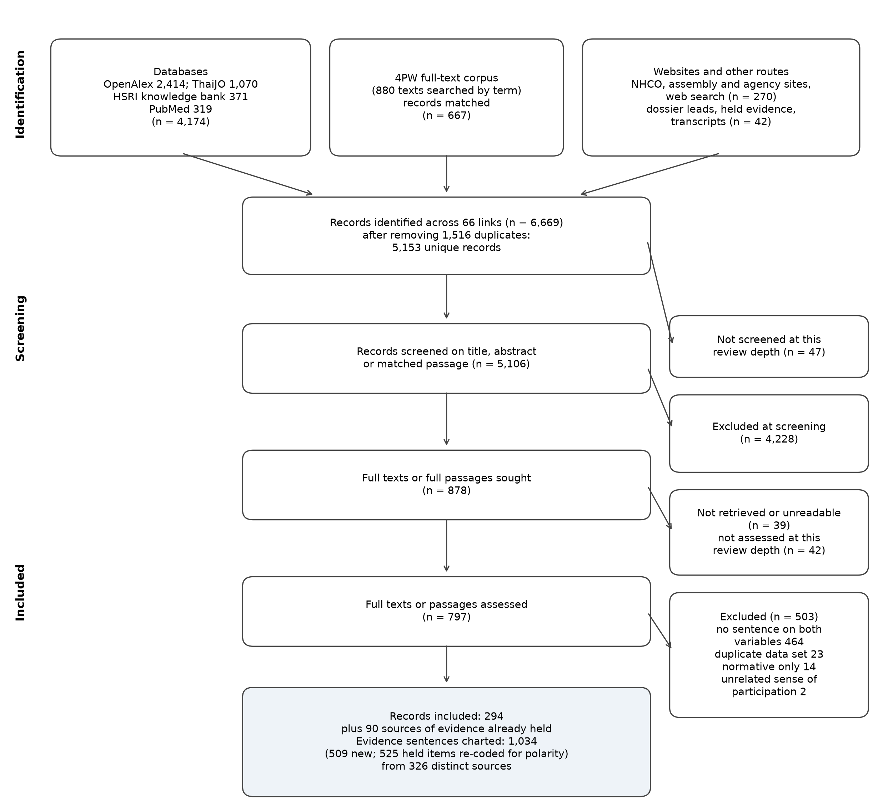

ชุดทบทวน 31 ตุลาคม 2569
จำนวนเป็นรายการข้อความ–ความสัมพันธ์ ไม่ใช่จำนวนการศึกษาที่เป็นอิสระ; polarity และ saturation เป็นผลประเมินที่รายงานในชุดทบทวน ไม่ใช่การยืนยันเหตุและผล
1,034 รายการข้อความ–ความสัมพันธ์ที่นับได้; แสดงข้อความจากลิงก์สาธารณะ 885 รายการ และไม่เผยแพร่ข้อความ 149 รายการจากชุดปรึกษาหารือ

INFLUENCE OF PUBLIC AND CIVIL-SOCIETY INPUT ON POLICY DECISIONS → (−) use of the political fast track for benefit demands
งานกรณีศึกษาสมัชชาระบุว่าเจตจำนงการเมืองคัดเลือกมติที่จะขับเคลื่อน จึงยังไม่แสดงว่าทางลัดทางการเมืองเข้ามาแทนช่องทางปกติ (Rajan et al., 2019)
บทวิเคราะห์อีกชิ้นรายงานว่าการมีส่วนร่วมของราชการและการตามมติดีขึ้นในช่วงรัฐบาลเลือกตั้ง การเมืองจึงอาจหนุนช่องทางปกติด้วย (Satidporn & Thananithichot, 2025)
AA1 ยัง contested; แถวที่สองอาศัยการอ่านเดิม และต้องแยกทางลัดการเมืองออกจากการประท้วงหรือการพึ่งบุคคล
ผลประเมินความอิ่มตัวที่รายงาน: Not saturated; 13 รายการที่นับได้ แสดงข้อความสาธารณะ 9 รายการ ไม่เผยแพร่ข้อความ 4 รายการ
(Satidporn & Thananithichot, 2025) · Published or grey literature
participatory follow-through ↓ with political engagement ↓ (the two move together)
Follow-through on assembly and purchaser-hearing outputs rose under elected governments and fell under military rule, so the political route and the participatory route move together rather than substitute for each other.
INF-AA1-005 · p. 362 (PDF p. 14/25)
Periods of elected government were generally associated with higher bureaucratic engagement and stronger follow-through, whereas episodes of authoritarian consolidation weakened implementation by re-centralizing decision-making authority and limiting inter-agency coordination.
(Satidporn & Thananithichot, 2025) · Published or grey literature
participatory pilots ↑ then political momentum ↑ (complementary, not substitute)
Successful participatory pilots were used to build political momentum and secure budget, so the political route can carry participatory proposals.
INF-AA1-006 · p. 363 (PDF p. 15/25)
Interview data further indicated that when resolutions informed successful NHSO-led policy pilots—particularly in service delivery and benefit-package reforms—the results were leveraged to build political momentum and secure ministry-level budget commitments.
(Hfocus, 2022a) · Web-search excerpt
the fast-tracked benefit came out of the hearing route (influence ↑ with fast track ↑)
The purchaser's secretary-general described the diaper benefit as a proposal from public hearings presented continuously, so the fast-tracked benefit came out of the participatory route.
INF-AA1-007 · news report, May 2022
สิทธิประโยชน์นี้เป็นข้อเสนอจากการรับฟังความเห็นและมีการนำเสนออย่างต่อเนื่อง
This benefit was a proposal from the public hearings and was put forward continuously.
(Health Intervention and Technology Assessment Program, n.d.) · Web-search excerpt
pressure from patient groups ↑ then a government-level decision ↑
Pressure from patient groups and others preceded the government decision to cover kidney replacement therapy.
INF-AA1-008 · project page
In response to growing pressure to include kidney replacement therapy (KRT) by multiple stakeholders
(สำนักงานคณะกรรมการสุขภาพแห่งชาติ, 2567) · Case report in an NHCO book
influence through formal channels ↓ then protest ↑; once the assembly route gave influence ↑, protest ↓
When complaints through official channels failed, residents turned to protest; when the provincial assembly offered a working route, they left protest for joint problem-solving.
INF-AA1-009 · น. ๑๐๕ (PDF p. 106)
การร้องเรียนผ่านภาครัฐไม่เกิดผล และเกิดการเผชิญหน้าถึงขั้นประท้วงจนเกือบปะทะ องค์กรภาคประชาชนจึงเลือกกระบวนการสมัชชาสุขภาพในการจัดการปัญหา ท้ายที่สุดนำมาสู่การหันหน้าเข้าหากัน เพื่อร่วมแก้ไขปัญหาเพื่อความสุขในบ้านของตัวเอง
Complaints through state agencies had no effect and the confrontation reached protest close to clashes; people's organisations therefore chose the health assembly process, which finally brought the parties to face each other and solve the problem together.
(สำนักงานคณะกรรมการสุขภาพแห่งชาติ, ม.ป.ป.-b) · News report on NHCO site
influence through the assembly process ↑ then reliance on protest ↓
A provincial network learned that once the assembly process gave its plan standing with the governor, protest was no longer its only means.
INF-AA1-010 · Web news page, quotation of the Phang Nga network leader
สิ่งเหล่านี้ทำให้เราเรียนรู้ว่า วิธีการต่อสู้ของภาคประชาชนไม่จำเป็นต้องประท้วงอย่างเดียว แต่เมื่อเรามีแนวทางที่เป็นความต้องการคนในพื้นที่ มีข้อมูล มีแผนที่ชัดเจน สุดท้ายผู้ว่าฯ ก็ให้การยอมรับแผนพัฒนาจังหวัด
This taught us that the people's way of struggle need not be protest alone: when we had a direction that people in the area wanted, data and a clear plan, the governor finally accepted the provincial development plan.
(สำนักงานคณะกรรมการสุขภาพแห่งชาติ, ม.ป.ป.-c) · Official statement in news
assembly route working (influence ↑) then the need to wait for politicians ↓ (stated, not observed)
The NHCO presents the assembly as a route that removes the need to wait for politicians; the claim states the substitution but does not show it.
INF-AA1-011 · Web news page, quotation of the NHCO secretary-general
การส่งต่อมติสมัชชาสุขภาพแห่งชาติให้คณะรัฐมนตรีนำไปขับเคลื่อนต่อ หมายความว่านโยบายของรัฐที่ออกมานั้น มาจากปัญหาและความต้องการของประชาชนทั่วประเทศอย่างแท้จริง โดยมีสมัชชาสุขภาพแห่งชาติเป็นเครื่องมือสำคัญในการส่งผ่าน โดยไม่จำเป็นต้องรอให้นักการเมืองเข้ามาแก้ปัญหาให้
Passing assembly resolutions to the Cabinet means that state policy comes from the problems and needs of people nationwide, with the National Health Assembly as the main channel, without needing to wait for politicians to solve the problems.
(Viriyathorn et al., 2023) · Case study of a benefit-package decision
formal hearing route carries patient-group proposals (influence ↑), so no political route is needed for them
Where the purchaser's hearing nominates citizen topics into the benefit-package process, patient groups reach decisions without the political route.
INF-AA1-012 · Section "The deliberative process: space where diverging views are taken"
Their suggestions related to new interventions are captured by the annual public hearing by NHSO who nominate these topics on their behalf.
(Rajan et al., 2019) · Case study (interviews, documents)
political will decides which assembly resolutions are taken up: politics gates the assembly route rather than replacing it
Political will sits inside the formal route as its gatekeeper, so low assembly influence and political selection are the same process seen from two sides.
INF-AA1-013 · Section "Integration of resolutions into health policies remains a key challenge"
However, resolutions are not always systematically taken up for action (they are not binding), with political will determining which policy topics to address.
use of the political fast track for benefit demands → (+) uptake of proposals into decisions
ข่าวทางการของ สปสช.ระบุการอนุมัติผ้าอ้อมผู้ใหญ่เป็นสิทธิประโยชน์ เป็นตัวอย่างข้อเรียกร้องที่ไปถึงคำตัดสินของบอร์ด (National Health Security Office, 2022)
คำให้สัมภาษณ์ที่เผยแพร่โดย สช.ชี้ว่านักการเมืองอาจไม่รับเรื่องที่ไม่เห็นผลภายในวาระ จึงมีเงื่อนไขในการเลือกข้อเรียกร้อง (สำนักงานคณะกรรมการสุขภาพแห่งชาติ, ม.ป.ป.-d)
การรับเป็นสิทธิประโยชน์เป็นผลระดับคำตัดสิน ยังไม่เท่ากับส่งมอบบริการครบถ้วน
ผลประเมินความอิ่มตัวที่รายงาน: Saturated at this review depth, qualified; 14 รายการที่นับได้ แสดงข้อความสาธารณะ 12 รายการ ไม่เผยแพร่ข้อความ 2 รายการ
(National Health Security Office, 2022) · Web-search excerpt
minister-chaired board takes up the demand ↑ then benefit adopted ↑
The purchaser board, chaired by the Minister of Public Health, approved adult diapers as a benefit for all Thais.
INF-AA2-002 · news release on the board meeting of 2 May 2022
ได้มีมติเห็นชอบ บรรจุ “ผ้าอ้อมผู้ใหญ่ แผ่นรองซับการขับถ่าย” ให้เป็นสิทธิประโยชน์ในระบบหลักประกันสุขภาพแห่งชาติ
The board resolved to include adult diapers and absorbent pads as a benefit in the national health security system.
(Bangkok Biz News, n.d.-a) · Web-search excerpt
political adoption ↑ then immediate implementation ↑
The diaper benefit took effect at once, without waiting for the next fiscal year, paid from local health security funds.
INF-AA2-003 · news report quoting a deputy secretary-general of the purchaser
อนุมัติให้ผ้าอ้อมผู้ใหญ่เป็นสิทธิประโยชน์ และดำเนินการได้ทันทีไม่ต้องรอปีงบประมาณหน้า โดยให้ใช้งบจากกองทุนหลักประกันสุขภาพระดับท้องถิ่น
Approved adult diapers as a benefit, to be implemented immediately without waiting for the next fiscal year, using funds from the local health security funds.
(Tangcharoensathien et al., 2020) · Published or grey literature
Cabinet decision ↑ then coverage despite the evidence bar ↑
Kidney replacement therapy was covered by a Cabinet decision on ethical and rescue grounds, not by cost-effectiveness.
INF-AA2-004 · editorial, section on the benefit package
The political decision taken through the Cabinet Resolution on universal renal replacement therapy for the UC Scheme in 2009 was based on ethical concerns, life saving measures and prevention of catastrophe.
(Tangcharoensathien et al., 2015) · Published or grey literature
government decision ↑ then inclusion despite cost-ineffectiveness ↑
Flag: same case as the 2020 editorial; counts once. The government included kidney replacement therapy despite its cost-ineffectiveness.
INF-AA2-005 · section on design of benefit packages
Despite cost ineffective, the government in 2006 decided to include RRT into the UCS benefit package, to prevent catastrophic spending and ensure equity across all Schemes financed by public resources
(Satidporn & Thananithichot, 2025) · Published or grey literature
political momentum ↑ then budget commitments for participatory proposals ↑
Results of participatory pilots were used to win political momentum and ministry-level budget commitments.
INF-AA2-006 · p. 363 (PDF p. 15/25)
Interview data further indicated that when resolutions informed successful NHSO-led policy pilots—particularly in service delivery and benefit-package reforms—the results were leveraged to build political momentum and secure ministry-level budget commitments.
(Rajan et al., 2019) · Case study (interviews, documents)
political will ↑ then uptake of the resolution ↑
Which assembly resolutions become action depends on political will.
INF-AA2-008 · Section "Integration of resolutions into health policies remains a key challenge"
However, resolutions are not always systematically taken up for action (they are not binding), with political will determining which policy topics to address.
(Kanchanachitra et al., 2018) · Case study
political leadership ↓ then uptake of the assembly resolution ↓ (counterfactual of the + sign)
Without strong political leadership, the asbestos resolution lost to industrial interests.
INF-AA2-009 · Section "Misinformation and external pressure"
Without very strong political leadership protecting the health of the people, industrial interests prevail.
(Wibulpolprasert et al., 2011) · Policy analysis by participants
an individual champion in the minister's seat ↑ then uptake of a stalled proposal ↑
A stalled proposal moved once a sympathetic former senior official became minister and civil society backed him.
INF-AA2-010 · Section "Government and political support: completing the triangle"
A significant change took place when Dr. Mongkol Na Songkhla, the former permanent secretary of MOPH, was appointed Minister by the new military government in October 2006. The proposal from the Subcommittee was then seriously re-considered with support from civil society groups.
(Rugchatjaroen et al., 2016) · Research article reporting meeting views
protest and mass movement ↑ then policy change ↑ (alongside the assembly process)
Participants at an assembly meeting named mass movement and protest, beside the assembly itself, as a basis for policy change.
INF-AA2-011 · p. 14
1) การเคลื่อนไหวมวลชน อาทิ การประมวล การชุมนุม ทั้งทางการเมืองหรือด้านอื่นๆ ก็เป็นพื้นฐานที่สำคัญที่ทำให้เกิดการเปลี่ยนแปลง 2) กระบวนการสมัชชา
(1) Mass movement, such as rallies and assemblies of protesters, political or otherwise, is an important basis that brings about change; (2) the assembly process.
(สำนักงานคณะกรรมการสุขภาพแห่งชาติ, 2567) · Case report in an NHCO book
political backing ↓ then uptake of the resolution ↓ (counterfactual of the + sign)
Without political backing, the labelling resolution was not followed even after a Cabinet resolution; the same report lists political support as a success factor.
INF-AA2-012 · น. ๑๔๘ (PDF p. 149)
ภาคการเมืองและภาคราชการที่เกี่ยวข้อง ไม่เห็นความสำคัญของการดำเนินการใช้มาตรการฯ ไม่ปฏิบัติตามมติสมัชชาสุขภาพและมติคณะรัฐมนตรี
The political sector and the agencies concerned did not see the importance of applying the measure and did not follow the assembly resolution and the Cabinet resolution.
(สำนักงานคณะกรรมการสุขภาพแห่งชาติ, ม.ป.ป.-d) · News report on NHCO site
political route takes up a demand only when it yields a visible result within a term
Politicians take up demands that can show results within an electoral term; long-term structural demands are left aside.
INF-AA2-013 · Web news page, quotation of a welfare-state network representative
ที่ผ่านมาไม่มีนักการเมืองคนไหนสนใจเรื่องนี้ เพราะมันใช้เวลานาน ถ้าทำจริงในช่วง 4 ปีก็ยังทำไม่จบ ไม่เห็นภาพความสำเร็จที่นำไปหาเสียงได้
Until now no politician took an interest in this, because it takes long: even four years would not finish it, and there is no visible success to campaign on.
(Sukhampha, 2024) · Qualitative policy analysis
professional champions ↑ then adoption of universal coverage ↑
Universal coverage was adopted through the work of a professional movement acting as policy entrepreneurs.
INF-AA2-014 · p. 1 (abstract)
Global and universal health coverage (UHC) concepts have existed for decades; success would not be possible without the efforts of policy entrepreneurs such as the Rural Doctor Movement, who localize and vernacularize global concepts for implementation.
use of the political fast track for benefit demands → (+) drawdown of funds
การประเมินนโยบายเร่งด่วนพบว่าบางพื้นที่ไม่ได้เตรียมงบล่วงหน้า จนพัฒนาคนและระบบบริการได้ไม่ตามเป้าหมาย (Kingkaew et al., 2025)
การศึกษาต้นทุนในชุดประเมินเดียวกันระบุว่าหน่วยบริการบางประเภทแบกรับต้นทุนเกินเงินเบิกจ่าย (Kingkaew et al., 2025)
เป็นกรณีนโยบายและหน่วยบริการเฉพาะ ไม่ได้วัดว่าทางลัดทุกชนิดทำให้งบลดลงเท่ากัน
ผลประเมินความอิ่มตัวที่รายงาน: Saturated at this review depth, qualified; 8 รายการที่นับได้ แสดงข้อความสาธารณะ 6 รายการ ไม่เผยแพร่ข้อความ 2 รายการ
(Hfocus, 2025c) · Web-search excerpt
government policy items ↑ then fund allocation to them ↑ (21,058.58 million baht)
The 2026 fund budget contains 26 items in support of government health policies worth 21,058.58 million baht.
INF-AA3-002 · news report on the purchaser board's approval of the 2026 budget
การสนับสนุนนโยบายด้านสุขภาพของรัฐบาลภายใต้งบประมาณกองทุนฯ ปี 2569 มีจำนวน 26 รายการ เป็นวงเงินจำนวน 21,058.58 ล้านบาท
Support for government health policies within the fund budget for 2026 comprises 26 items, worth 21,058.58 million baht.
(Bangkok Biz News, n.d.-a) · Web-search excerpt
political adoption ↑ then local-fund spending ↑
Flag: same report as an item of the link to uptake; counts once. The diaper benefit was paid from local health security funds, so the fast track drew on local money.
INF-AA3-003 · news report quoting a deputy secretary-general of the purchaser
อนุมัติให้ผ้าอ้อมผู้ใหญ่เป็นสิทธิประโยชน์ และดำเนินการได้ทันทีไม่ต้องรอปีงบประมาณหน้า โดยให้ใช้งบจากกองทุนหลักประกันสุขภาพระดับท้องถิ่น
Approved adult diapers as a benefit, to be implemented immediately without waiting for the next fiscal year, using funds from the local health security funds.
(Tangcharoensathien et al., 2020) · Published or grey literature
political adoption ↑ with added budget, so drawdown of planned funds need not rise
The government added budget through Cabinet resolutions for new interventions, so a politically adopted benefit need not draw on money for planned work.
INF-AA3-005 · editorial, section on the benefit package
Importantly, the government approved additional budget through Cabinet Resolutions for new interventions which were not covered by the previous benefit package in order to ensure no “unfunded mandates.”
(Bangkok Biz News, n.d.-b) · Web-search excerpt
drawdown ↑ then the purchaser caps the flagship (balancing response)
The purchaser later capped the seven innovative unit types of the "treat anywhere" flagship and cut the number of visits they may bill.
INF-AA3-006 · report on the 2026 budget hearing
ปรับลดจำนวนครั้งการใช้บริการตามรายการ/ อัตราจ่าย และรายการบริการที่ไม่จำเป็นสำหรับหน่วยนวัตกรรม 7 ประเภท
Reduce the number of service uses by item and payment rate, and the services that are not necessary, for the seven types of innovative units.
(Kingkaew et al., 2025) · Developmental evaluation (mixed methods)
urgent political policy ↑ then unplanned spending on information systems ↑ and capacity building ↓
Because the flagship was an urgent policy, areas had no budget set aside and had to draw on other money, falling short of staff and system targets.
INF-AA3-007 · น. ๔๙ (PDF p. 76)
โดยจากการเก็บข้อมูลพบว่า เนื่องจากเป็นนโยบายเร่งด่วนทำให้บางพื้นที่ไม่ได้มีการจัดสรรงบประมาณในส่วนนี้ไว้ล่วงหน้า ส่งผลให้ไม่สามารถพัฒนาบุคลากรและระบบบริการได้ตามเป้าหมายที่กำหนดไว้
Data showed that, because it was an urgent policy, some areas had not allocated a budget for this in advance, so they could not develop staff and service systems to the targets set.
(Kingkaew et al., 2025) · Unit-cost study within the evaluation
flagship services ↑ then costs carried by providers ↑ (drawdown shared through underpayment)
Part of the flagship's cost falls on providers, whose actual costs exceed what the fund pays.
INF-AA3-008 · น. ๑๐๒ (PDF p. 129), Table 29
ต้นทุนจริงในภาพรวมสูงกว่าการเบิกจ่ายในบางประเภทของหน่วยบริการ ทำให้หน่วยบริการต้องแบกรับภาระต้นทุนส่วนเกิน
Actual cost overall exceeds reimbursement for some types of service unit, so the units must bear the excess cost.
use of the political fast track for benefit demands → (+) frontline workload relative to capacity
การประเมินพื้นที่นำร่องพบภาระงานเพิ่มในช่วงเตรียมระบบและเปลี่ยนผ่าน จึงต้องแยกผลช่วงตั้งระบบออกจากผลระยะยาว (Kingkaew et al., 2025)
อีกแหล่งเป็นคำกล่าวของรัฐมนตรีว่าระบบช่วยลดภาระบุคลากร ซึ่งให้ทิศต่างจากรายงานภาระช่วงเปลี่ยนผ่าน (Thairath, 2024)
แหล่งที่สองอ่านจากข้อความค้นหาเท่านั้น; ช่วงเวลาและลักษณะงานอาจอธิบายทิศที่ต่างกัน
ผลประเมินความอิ่มตัวที่รายงาน: Saturated at this review depth, qualified; 12 รายการที่นับได้ แสดงข้อความสาธารณะ 8 รายการ ไม่เผยแพร่ข้อความ 4 รายการ
(Thairath, 2024) · Web-search excerpt
flagship phase one ↑ then staff workload ↓ (minister's claim)
The Minister of Public Health said the first phase of "treat anywhere" also reduced staff workload.
INF-AA4-005 · news report, 18 February 2024
ขณะเดียวกันก็ช่วยลดภาระงานของบุคลากร
At the same time it helped reduce staff workload.
(Kingkaew et al., 2025) · Developmental evaluation (survey and interviews)
flagship policy ↑ then frontline workload ↑ (about one hour a week, transitional)
The flagship added about one hour a week of work in the first pilot areas, mostly in system preparation.
INF-AA4-006 · น. จ (PDF p. 7), executive summary
อย่างไรก็ตาม ในช่วงเปลี่ยนผ่านของระบบเป็นการสร้างภาระงานต่อผู้ปฏิบัติงานเพิ่มเติม โดยเฉพาะการเตรียมความพร้อมเรื่องระบบปฏิบัติการ ภาระงานที่เพิ่มมากขึ้นโดยเฉลี่ย 1 ชั่วโมงต่อสัปดาห์ ในพื้นที่นำร่องระยะที่ 1 ที่อยู่ในช่วงการทดสอบระบบและมีการเปลี่ยนแปลงอย่างต่อเนื่อง
During the transition, the system added workload for staff, especially preparing operating systems; workload rose by about one hour a week on average in the first-phase pilot areas, where systems were being tested and changed continually.
(Kingkaew et al., 2025) · Developmental evaluation (survey)
flagship policy ↑ then providers' quality of life unchanged
The added work was small enough that providers' quality of life did not change.
INF-AA4-007 · น. จ (PDF p. 7), executive summary
โดยรวมจากการสำรวจคุณภาพชีวิตของผู้ให้บริการพบว่าไม่แตกต่างกันระหว่างก่อนและหลังการดำเนินนโยบาย
Overall, the survey of providers' quality of life found no difference between before and after the policy.
(Kingkaew et al., 2025) · Survey of providers
flagship policy ↑ then working hours ↑ slightly (42 to 43 hours a week)
Measured working hours rose by about one hour a week, and most staff reported no change in hours.
INF-AA4-008 · น. ๘๑ (PDF p. 108)
ผลการสำรวจภาระงานของผู้ให้บริการพบว่า ชั่วโมงการทำงานภายหลังจากมีการดำเนินนโยบายฯ เฉลี่ย 43 ชั่วโมง/สัปดาห์ ในขณะที่ก่อนดำเนินนโยบายฯ มีชั่วโมงทำงานเฉลี่ย 42 ชั่วโมง/สัปดาห์ ส่วนใหญ่ใช้เวลาเท่าเดิมในการทำงาน (ร้อยละ 86)
The workload survey found average working hours of 43 a week after the policy against 42 before; most (86%) spent the same time working.
(Kingkaew et al., 2025) · Survey of providers
flagship policy ↑ then reported workload ↑ (54% of providers)
Just over half of providers reported more workload after the flagship began.
INF-AA4-009 · น. ๘๑ (PDF p. 108)
การเปรียบเทียบการใช้เวลาในการบันทึกข้อมูลก่อนและหลังใช้ระบบ FDH ใช้เวลาเท่าเดิม (ร้อยละ 70) ส่วนใหญ่มีภาระงานเพิ่มขึ้น (ร้อยละ 54)
Comparing data-recording time before and after the FDH system, 70% spent the same time; most (54%) reported more workload.
(Sukhampha, 2024) · Qualitative policy analysis
politically launched universal coverage ↑ then workload ↑ (as claimed by health workers)
Health workers said the politically launched scheme overloaded them and protested with black armbands.
INF-AA4-010 · p. 6
These healthcare workers insisted that the UHC created an overburdened workload and a disorganized implementation; as a symbolic protest against the system, “Black Arm Doctors” donned black armbands.
(The Coverage, n.d.) · News analysis
political flagship ↑ then workload ↑ and resignations ↑
Early in the 30-baht scheme, doctors resigned citing heavier workload.
INF-AA4-011 · Web article (search excerpt)
หมอหลายคน ก็ทนไม่ไหว ตัดสินใจลาออกจากราชการ เนื่องจากต้องรับภาระงานที่หนักขึ้น
Many doctors could not bear it and decided to leave government service because of the heavier workload.
(พิทักษ์ ทองทวน และคณะ, 2568) · Implementation research (mixed methods)
flagship policy ↑ then staff workload and crowding ↑ (rated most severe), alongside efficiency gains
In a provincial network, staff rated rising workload and crowding as the most severe negative effect of the flagship, beside gains in efficiency.
INF-AA4-012 · น. 906 (abstract)
ผลกระทบต่อบุคลากรทางการแพทย์เชิงบวกด้านประสิทธิภาพการทำงานในระดับปานกลางถึงมากและผลกระทบเชิงลบที่รุนแรงในระดับมากที่สุดโดยเฉพาะด้านภาระงานบุคลากรที่เพิ่มขึ้น ความแออัดภายในสถานพยาบาล และจำนวนผู้ป่วยนอกที่เพิ่มขึ้นในโรงพยาบาลศูนย์
Effects on medical staff were positive for work efficiency at a moderate to high level, and negative at the most severe level, especially increased staff workload, crowding in facilities and more outpatients in the regional hospital.
frontline workload relative to capacity → (+) adoption of restrictive practices
แบบสำรวจต่างประเทศพบความสัมพันธ์ระหว่างภาระงานกับการจำกัดการพยาบาลโดยปริยาย แต่ยังไม่ระบุเหตุและผลในหน้างานไทย (Maghsoud et al., 2022)
บททบทวนทางเลือกนโยบายไทยชี้ว่าความเสี่ยงคดีอาจนำไปสู่การส่งต่อหรือปฏิเสธบริการ จึงมีตัวขับอื่นนอกจากภาระงาน (ศิริวรรณ พิทยรังสฤษฏ์ และ หทัยชนก สุมาลี, 2553)
AA5 ยัง contested; แยกการจำกัดการดูแลโดยปริยาย การป้องกันคดี และการจำกัดสิทธิประโยชน์
ผลประเมินความอิ่มตัวที่รายงาน: Not saturated; 16 รายการที่นับได้ แสดงข้อความสาธารณะ 10 รายการ ไม่เผยแพร่ข้อความ 6 รายการ
(Tummers et al., 2015) · Web-search excerpt
stress ↑ then workers most often move towards clients; rationing is one response
Frontline workers under stress most often move towards their clients rather than ration.
INF-AA5-003 · abstract
frontline workers often draw on the coping family “moving towards clients”
(Hfocus, 2024) · Web-search excerpt
outstanding payments ↑ then threat to stop referral letters ↑ (financial driver)
Bangkok gold-card clinics threatened to stop issuing referral letters unless outstanding payments were made.
INF-AA5-008 · news headline, October 2024
“คลินิกบัตรทอง กทม.” ขู่ไม่ออกใบส่งตัว ถ้าไม่ได้เงินคงค้าง
Bangkok gold-card clinics threaten not to issue referral letters if they do not receive outstanding money.
(Thailand Consumer Council, n.d.) · Web-search excerpt
capitation too low ↑ then refusal of referral letters ↑ (financial driver)
The consumer council reports that clinics received about 64.17 baht per person per month before referral deductions, too little for staff and drugs.
INF-AA5-009 · page on clinics not issuing referral letters for Bangkok gold-card patients
คลินิกจะได้รับเงินประมาณ 64.17 บาทต่อเดือน ซึ่งทำให้ไม่เพียงพอกับการดำเนินการต่าง ๆ เช่น ค่าบุคลากร ค่ายา
Clinics receive about 64.17 baht per month, which is not enough for operations such as staff and drugs.
(The Active, 2025) · Web-search excerpt
net capitation ↓ (10–50 baht) then restriction ↑ (financial driver)
After referral deductions, clinics received only 10–50 baht per person per month.
INF-AA5-010 · news report, March 2025, citing the purchaser's February 2025 allocation report
จำนวนเงินที่ได้รับเพียง 10 – 50 บาทต่อคนต่อเดือนจริง
The amount actually received was only 10–50 baht per person per month.
(Hfocus, 2025e) · Web-search excerpt
most ministry hospitals in surplus, so a general financial driver is doubtful
Flag: bears on the alternative financial driver, not on the workload sign. At the end of the third quarter of fiscal 2025, 844 of 902 ministry hospitals had positive finances and 58 negative, so financial distress is not general.
INF-AA5-011 · interview with a civil-society member of the Bangkok regional subcommittee, October 2025
โรงพยาบาลที่มีสถานะการเงินเป็นบวกมี 844 แห่ง โรงพยาบาลที่มีสถานการณ์ทางการเงินติดลบมี 58 แห่ง
Hospitals with positive financial status numbered 844; hospitals with negative financial status numbered 58.
(Maghsoud et al., 2022) · Cross-sectional survey, structural equation model
workload ↑ then rationing of care ↑
Abroad, higher nurse workload directly raises implicit rationing of care.
INF-AA5-012 · p. 5, "Structural equation model"
Based on the results of this study, the direct effect of workload on implicit rationing of nursing care, job satisfaction and emotional exhaustion was statistically significant (p < 0.05).
(ศิริวรรณ พิทยรังสฤษฏ์ และ หทัยชนก สุมาลี, 2553) · Policy options review
litigation risk ↑ then defensive referral and refusal ↑ (a driver other than workload)
Fear of litigation is a further driver of defensive refusal and referral, separate from workload.
INF-AA5-013 · น. 16
4.การดำเนินคดีกับผู้ประกอบวิชาชีพทางการแพทย์ มีผลกระทบทางลบต่อคุณภาพการดูแลผู้ป่วย ทำให้มีการรักษาแบบป้องกันตัวเอง การส่งต่อผู้ป่วย และการปฏิเสธการให้บริการในกรณีไม่ใช่เหตุฉุกเฉินมากขึ้น และเกิดการย้อนกลับมาสู่การใช้งบประมาณที่ไม่เป็นสัดส่วนในการจัดบริการสุขภาพ
Lawsuits against medical practitioners harm quality of care, leading to more defensive treatment, referral of patients and refusal of non-emergency services, and to disproportionate use of the health budget.
(Hfocus, 2024) · News report
restrictive practice adopted (2023–2024) then still in place a year later (accumulation)
Persistence: a year after the referral-letter dispute, patients report the same refusals.
INF-AA5-014 · Web news report (search excerpt)
ส่วนใหญ่ยังมีปัญหาเดิมๆ คือ คลินิกไม่ยอมออกใบส่งตัวง่ายๆ
Most still have the same old problem: clinics will not readily issue referral letters.
(Thai PBS Policy Watch, 2026) · News analysis
restrictive practice persists for about three years despite repeated fixes
Persistence: the referral-letter restriction has lasted about three years.
INF-AA5-015 · Headline (search excerpt)
3ปีแก้ปม”ใบส่งตัวบัตรทอง”ไม่จบ
Three years on, the gold-card referral-letter knot is still not untied.
(Hfocus, 2026) · News report
after payment fixes, restriction relaxes slowly (complaints down about 20% in a year)
Relaxation: once payment arrangements changed, complaints about referral refusals fell by about a fifth in a year, so the restriction drains slowly.
INF-AA5-016 · Web news report (search excerpt)
เมื่อสิ้นปีงบฯ 2569 ข้อร้องเรียนลดลงไปประมาณ 20%
By the end of fiscal 2026, complaints had fallen by about 20%.
DEFENSIVE RESTRICTION OF ENTITLEMENTS BY PROVIDERS → (−) frontline workload relative to capacity
ข่าวเรื่องปัญหาการส่งต่อรายงานคำขอใบส่งตัวเพิ่มขึ้นหลายเท่า จึงยังไม่รองรับว่าข้อจำกัดทำให้ภาระงานลดลงเสมอ (Bangkok Biz News, n.d.-c)
อีกข่าวกล่าวถึงเพดานเงินตามจ่ายส่งต่อ ซึ่งเป็นข้อตกลงทางการเงิน ไม่ใช่ผลวัดว่าจำนวนงานของผู้ให้บริการลดลง (Manager Online, 2024)
AA6 ยัง contested; ทั้งสองแถวอ่านเพียงข้อความค้นหา และต้องแยกต้นทุนเงินออกจากภาระงาน
ผลประเมินความอิ่มตัวที่รายงาน: Not saturated; 6 รายการที่นับได้ แสดงข้อความสาธารณะ 4 รายการ ไม่เผยแพร่ข้อความ 2 รายการ
(Lévesque & Benoit, 2025) · Web-search excerpt
rationing access ↑ then demand on workers ↓ (intended)
Reviews of frontline coping describe rationing access as a way to reduce demand artificially.
INF-AA6-001 · literature section on coping strategies
“moving away from clients,” in which coping is employed to artificially reduce demands by routinizing or rationing access
(Manager Online, 2024) · Web-search excerpt
refusal of referral letters ↑ then referral charge capped (financial concession)
After clinics stopped issuing referral letters, the Bangkok regional subcommittee capped what a clinic pays per referral at 800 baht, with the excess paid from a separate referral fund.
INF-AA6-003 · news report, 18 March 2024
หาก "คลินิกชุมชนอบอุ่น” ส่งต่อให้ตามจ่ายไม่เกิน 800 บาท/ครั้ง ส่วนเกิน รพ.เบิกจ่ายจากกองทุน OP Refer
If a warm community clinic refers a patient, it pays no more than 800 baht per visit; the excess is claimed by the hospital from the OP Refer fund.
(Bangkok Biz News, n.d.-c) · Web-search excerpt
restriction ↑ then referral-letter requests and complaints ↑ several-fold
Complaints from Bangkok gold-card holders exceeded 20,000 in half of fiscal 2025, mostly requests for referral letters, which rose several-fold.
INF-AA6-004 · news analysis, 2025
ปัญหาหลักคือการขอใบส่งตัวเพื่อรักษาต่อ ซึ่งเพิ่มขึ้นหลายเท่าตัว
The main problem is requests for referral letters for further treatment, which increased several-fold.
(Hfocus, 2026) · News report
restriction ↑ then complaints ↑ (9,160 complaints in 2026); demand moves into complaint channels rather than disappearing
Refusal to refer became the largest single complaint, so restriction shifts demand into complaints and elsewhere.
INF-AA6-006 · Web news report (search excerpt)
กว่า 35.61% เป็นกรณีปฏิเสธส่งตัวผู้ป่วย
Over 35.61% were cases of refusal to refer patients.
DEFENSIVE RESTRICTION OF ENTITLEMENTS BY PROVIDERS → (−) uptake of proposals into decisions
รายงานกรณีร่างกฎหมายระบุให้กระทรวงทำความเข้าใจกับบุคลากรที่ยังกังวล ชี้เงื่อนไขการยอมรับของผู้ให้บริการต่อการผลักข้อเสนอ (Health Intervention and Technology Assessment Program, 2010)
งานวิเคราะห์หลักประกันถ้วนหน้ารายงานแรงคัดค้านจากบุคลากรในกระบวนการที่ยังผลักนโยบายต่อได้ การคัดค้านจึงไม่ทำให้ข้อเสนอหยุดเสมอ (Sukhampha, 2024)
AA7 ยัง contested; แรงคัดค้านเชิงนโยบายกับ restrictive-practice stock เป็นคนละระดับของหลักฐาน
ผลประเมินความอิ่มตัวที่รายงาน: Not saturated; 13 รายการที่นับได้ แสดงข้อความสาธารณะ 7 รายการ ไม่เผยแพร่ข้อความ 6 รายการ
(Satidporn & Thananithichot, 2025) · Published or grey literature
challenge to established interests ↑ then resistance and non-uptake ↑
Assembly resolutions that challenged established interests met institutional resistance, delay or non-uptake.
INF-AA7-004 · p. 362 (PDF p. 14/25)
Resolutions involving politically sensitive issues or challenges to established interests faced institutional resistance and low political incentives, resulting in delays or non-uptake
(Thairath, 2026) · Web-search excerpt
narrowing pressure ↑ then legislative co-payment proposal ↑
The Senate public health committee proposed amending the National Health Security Act to introduce co-payment, a move reported as a way to reduce hospital debt.
INF-AA7-005 · news feature, July 2026
กรรมาธิการการสาธารณสุข วุฒิสภา ที่เสนอให้มีการแก้ไข พ.ร.บ.หลักประกันสุขภาพแห่งชาติ พ.ศ. 2545 ให้ประชาชนร่วมจ่าย
The Senate public health committee proposed amending the National Health Security Act 2002 so that people co-pay.
(Thailand Consumer Council, 2026) · Web-search excerpt
restriction pressure ↑ then counter-mobilisation of consumer groups ↑
Flag: points to another link (restriction raising mobilisation). Consumer organisations and civil-society networks declared opposition to the co-payment amendment and began collecting signatures.
INF-AA7-006 · statement, 26 August 2026
ประกาศร่วมคัดค้านร่างแก้ไข พระราชบัญญัติหลักประกันสุขภาพแห่งชาติ พ.ศ. 2545
Declared joint opposition to the draft amendment of the National Health Security Act 2002.
(Hfocus, 2025d) · Web-search excerpt
part of the provider sector opposes narrowing
A rural doctors' group questioned whether blaming hospital losses on the purchaser was meant to stir up support for co-payment.
INF-AA7-007 · news report on a post by the Rural Doctors Society, 19 October 2025
หากผู้ป่วยบัตรทองไปรักษาที่โรงพยาบาลของรัฐ แล้วทางโรงพยาบาลแจ้งว่าต้องจ่ายส่วนเกินสิทธิ์ ประชาชนจะรับได้หรือไม่??
If gold-card patients go to a state hospital and the hospital says they must pay above their entitlement, will people accept it?
(Health Intervention and Technology Assessment Program, 2010) · News report
provider opposition ↑ then uptake of the citizen-initiated bill ↓ (sent back and reshaped)
Concern among medical personnel led the government to send back a citizen-initiated bill; the providers acted against liability, not to restrict entitlements.
INF-AA7-011 · Web news page, paragraph 1
ให้กระทรวงสาธารณสุขไปทำความเข้ากับบุคลากรทางการแพทย์ในขอบข่ายทั่วประเทศ เพราะหลายคนยังกังวลต่อกฎหมายฉบับนี้
[The coalition whip asked] the Ministry of Public Health to build understanding with medical personnel nationwide, because many are still worried about this law.
(iLaw, 2010) · News analysis
provider opposition ↑ against a citizen-petition bill
Doctors and nurses strongly opposed the consumer-petition bill.
INF-AA7-012 · Web article (search excerpt)
มีเสียงคัดค้านจากแพทย์ พยาบาลอย่างหนัก
There was strong opposition from doctors and nurses.
(Sukhampha, 2024) · Qualitative policy analysis
provider opposition ↑ but universal coverage still adopted (uptake not lowered)
Strong opposition from health personnel did not stop the adoption of universal coverage.
INF-AA7-013 · p. 6
This resulted in internal pressure and opposition from health personnel, who claimed that the UHC posed a long-term threat to the public health system.
FINANCING FOR PARTICIPATION AND FOR ACTING ON ITS PROPOSALS → (+) civil-society capacity development
รายงานประเมินระบุว่าเงินทุนจำเป็นต่อการขับเคลื่อนของภาคประชาสังคมที่ไม่มีงบประจำแบบหน่วยงานรัฐ (ลาภยิ่ง et al., 2013)
การประเมินเครือข่ายเยาวชนพบว่าหลังพัฒนาศักยภาพ บางพื้นที่เขียนโครงการขอทุนต่อได้ แสดงเส้นทางศักยภาพไปหาเงินด้วย (หนูนิล & เอกวรางกูร, 2011)
เงินกับศักยภาพอาจหนุนกันสองทาง; ข้อความเยาวชนที่ปลายหน้าขาดถูกทำเครื่องหมายไว้ในต้นฉบับ
ผลประเมินความอิ่มตัวที่รายงาน: Saturated at this review depth, qualified; 22 รายการที่นับได้ แสดงข้อความสาธารณะ 17 รายการ ไม่เผยแพร่ข้อความ 5 รายการ
(ลาภยิ่ง et al., 2013) · literature
funding ↓ then civil society cannot drive resolutions
Civil-society organisations need money to drive a resolution because they have no budget of their own.
CAP-C01-006 · p. E-13, section 1.3
สำหรับองค์กรพัฒนาเอกชนและภาคประชาสังคม เงินทุนเป็นสิ่งจำเป็นต่อการขับเคลื่อน เพราะไม่มีงบประมาณของตนเองเช่นภาครัฐ
For non-governmental and civil-society organisations, funding is necessary for driving resolutions, because they do not have their own budget as government does.
(ลาภยิ่ง et al., 2013) · literature
budget problems ↑ then hardship in sustaining staff and operations
Non-governmental organisations work under greater hardship than government, including budget problems in supporting their staff and operations.
CAP-C01-007 · p. E-16
เมื่อเทียบกับภาครัฐ องค์กรพัฒนาเอกชนทำงานด้วยความยากลำบากกว่า เช่น มีปัญหาด้านงบประมาณที่ต้องเลี้ยงทั้งตัวเองครอบครัวและการดำเนินงาน
Compared with government, non-governmental organisations work with greater hardship, for example budget problems in supporting themselves, their families and their operations.
(ลาภยิ่ง et al., 2013) · literature
health promotion fund support ↑ then networks drive issues
Academic networks and non-governmental organisations drive health issues with the support of the health promotion fund.
CAP-C01-008 · p. E-17
เครือข่ายนักวิชาการและองค์กรพัฒนาเอกชนมีการขับเคลื่อนประเด็นสุขภาพ/สุขภาวะด้วยการสนับสนุนของ สสส.
Academic networks and non-governmental organisations drive health and well-being issues with the support of ThaiHealth.
(Rasanathan et al., 2012) · literature
fund sponsorship ↑ then civil-society capacity ↑
The health promotion fund sponsored civil-society groups to build their capacity.
CAP-C01-009 · The context and history of healthy public policy in Thailand
The Fund has actively sponsored civil society groups to build capacity for health promotion activities.
(Rajan et al., 2019) · literature
capacity-building strategy (funded) ↑ then coordination and collaboration ↑
The commission office's civil-society capacity-building strategy paid off in better constituency coordination and more civil-society and academic collaboration.
CAP-C01-010 · Lessons for other countries
Regarding inclusivity, the NHCO’s civil society capacity-building strategy has paid off, with more civil society-academia collaboration, and improved internal constituency coordination.
(Satidporn & Thananithichot, 2025) · literature
stipends and honoraria ↑ then participation of people with fewer resources ↑ (lasting capacity not shown)
The commission office spends on travel, meals and small honoraria so that people with fewer resources can take part.
CAP-C01-011 · p. 358
Recognizing these constraints, the NHCO implemented a range of support measures, including transportation stipends, meal provisions, and modest honoraria for participants’ time.
(ลาภยิ่ง et al., 2013) · literature
investment in network management ↑ then quality of networks ↑ (recommendation)
Because driving a resolution depends on the quality of networks, the evaluators recommend investing in network-management capacity.
CAP-C01-012 · p. E-18, academic recommendations
การขับเคลื่อนอย่างมีพลังขึ้นกับคุณภาพเครือข่าย จึงควรลงทุนกับการพัฒนาศักยภาพในด้านการจัดการเครือข่าย (network management) และการเรียนรู้จากการขับเคลื่อน
Forceful driving depends on the quality of networks, so investment should go into developing capacity in network management and in learning from driving.
(Buasai, 2026) · literature
ordinary government budgets not designed to fund civil society: the channel matters
Ordinary government budgets were not designed to fund civil-society networks, which is why a dedicated fund is needed.
CAP-C01-013 · commentary on the health promotion fund, point 3
ซึ่งงบประมาณราชการปกติไม่ได้ถูกออกแบบมาเพื่อสนับสนุน
which the ordinary government budget was not designed to support.
(Pattani Provincial Health Assembly, n.d.) · case book of a provincial health assembly
financing for leader training ↑ then capacity put into action ↑ only in a few places
Money for training reached leaders in 115 sub-districts, but only five began to act, so funding alone did not build working capacity.
CAP-C01-014 · p. 15 (PDF p. 15)
โดย สสจ.อนุมัติงบประมาณจำนวนหนึ่งให้เครือข่ายสมัชชาสุขภาพไปดำเนินการพัฒนาศักยภาพแกนนำในระดับตำบล กลุ่มเป้าหมาย คือแกนเครือข่ายจากพื้นที่ อบต. จำนวน 115 ตำบล แต่ตำบลที่เริ่มปฏิบัติการได้จริงในปี 2552 มีแค่ 5 พื้นที่
The provincial health office approved some budget for the health assembly network to develop the capacity of sub-district leaders; the target was network leaders from 115 sub-districts, but only five sub-districts actually began action in 2009.
(หนูนิล & เอกวรางกูร, 2011) · evaluation of a policy process
capacity of youth networks ↑ then funding obtained ↑
After capacity development, youth groups wrote proposals and won funding, so capacity also brings money in.
CAP-C01-015 · p. 39 (PDF p. 10), impact assessment
3.3 การประเมินผลกระทบ พบว่า มีบางพื้นที่ หลังจากการพัฒนาศักยภาพทำให้เด็กเกิดความมั่นใจ เขียนโครงการของบประมาณเพื่อทำโครงการต่อจากหน่วยงานอื่น เช่น แผนงานเด็กพลัส สสส. ทำให้เด็กได้งบประมาณเพื่อสานต่อ…
3.3 The impact assessment found that in some areas, after capacity development, children gained confidence and wrote proposals for budgets to continue projects from other agencies, such as ThaiHealth’s children programme, so that the children received budgets to continue…
(Saengow, 2020) · review article
domestic fund financing ↑ as donor money ↓ then CSO activity sustained
The health promotion fund became the main funder of many civil-society organisations as foreign funding fell.
CAP-C01-016 · Abstract (English)
The Thai Health Promotion Foundation has become a primary source of funding for many CSOs as funding from international organizations decreased.
(Saengow, 2020) · review article
funding ↑ then CSO capacity ↑ in the funder’s focus areas
Civil-society organisations shifted their focus toward the funder’s health-promotion priorities, so funding shapes what capacity is built.
CAP-C01-017 · Abstract (English)
CSOs integrated focus on issues with health promotion, a primary focus of the Thai Health Promotion Foundation.
(Ungsuchaval, 2019) · qualitative doctoral study
funding ↑ then CSO capacity and direction shaped
The health promotion fund became one of the largest funders of NGOs and steers the sector’s direction, so funding builds capacity and also shapes it.
CAP-C01-018 · Abstract
It has become one of the biggest sources of funding for the NGO sector and has a considerable impact on the trajectory of the sector.
(Patcharanarumol et al., 2013) · qualitative study (21 informants)
donor financing ↓ then CSO-run programmes ↓
If Global Fund support ended, civil-society and other programmes would suffer low to high negative effects.
CAP-C01-019 · Abstract, Results
If GF supports were to curtail, impacts on the current programs would be varied from low to high degree of negative consequences.
(McDonough & Rodríguez, 2020) · literature review (180 documents)
funding ↓ then CSO activity ↓
Falling funding forces civil-society organisations to scale back or depend on government money.
CAP-C01-020 · Abstract, Background
Decreases in funding may force CSOs to scale back activities, seek other funding, or rely on their governments for funding.
(National Health Commission, 2016) · statutory announcement
budgetary support ↑ then capacity of affected parties to take part ↑ (rule)
The commission’s rules ask agencies to fund support for affected communities not yet ready to take part in health impact assessment.
CAP-C01-021 · p. 66 (PDF p. 67), support for health impact assessment
6) Allocation of budgetary support to facilitate HIA effectively on a regular basis: Agencies concerned, therefore, should set up funds or budgetary support for related activities, particularly in support of the affected parties that are not yet prepared for the task.
ข้อความเชิงกติกา/แนวทาง ไม่ใช่ผลกระทบที่วัดได้โดยตัวมันเอง
(The Coverage, n.d.) · news report
civil-society capacity ↑ then eligibility for purchaser funding ↑
Civil-society units must already have capacity, such as full-time staff, to be registered for purchaser funding, so capacity is a condition of financing.
CAP-C01-022 · Web-search excerpt (page not opened)
มีศักยภาพที่จะดูแลประชาชนในพื้นที่ตามมาตรฐานของเกณฑ์ อาทิ มีผู้ปฏิบัติงานประจำ
have the capacity to care for people in the area to the standard of the criteria, such as having full-time staff
PARTICIPATORY MECHANISMS INSTITUTIONALISED IN POLICY AND LAW → (+) joining of under-represented groups
งานศึกษาสมัชชาระบุว่าแม้มีกฎหมายรองรับ ประสิทธิผลของการมีส่วนร่วมยังขึ้นกับความเต็มใจของรัฐที่จะแบ่งอำนาจ (Satidporn & Thananithichot, 2025)
งานศึกษาการวางแผนในอังกฤษรายงานว่าการรับรองในกฎหมายยังอยู่ร่วมกับการกีดกันกลุ่มชุมชน เป็นเงื่อนไขค้านการตีความเส้นบวกแบบอัตโนมัติ (Tahar, 2026)
แหล่งอังกฤษอ่านจากบทคัดย่อและเป็นบริบทต่างประเทศ แม้ trace เดิมจัด tier 2; การมีที่นั่งไม่เท่ากับมีอิทธิพล
ผลประเมินความอิ่มตัวที่รายงาน: Saturated at this review depth, qualified; 32 รายการที่นับได้ แสดงข้อความสาธารณะ 19 รายการ ไม่เผยแพร่ข้อความ 13 รายการ
(Rasanathan et al., 2012) · Literature
institutionalised assembly ↑ then range of sectors taking part ↑ (co-occurrence, one cycle)
The institutionalised assembly brought together more than 1,500 people from five sectors in its first round.
VOI-L01-001 · Abstract
The first NHA, held in December 2008 in Bangkok, brought together over 1500 people from government agencies, academia, civil society, health professionals and the private sector to discuss key health issues and produce resolutions to guide policy making
(Kantamaturapoj et al., 2020) · Literature
statute names groups to be heard ↑ then groups holding a standing place ↑
The health security law obliges the purchaser to hear providers, beneficiaries and other stakeholders every year.
VOI-L01-002 · Abstract
Legislative provisions in Thailand's National Health Security Act 2002 mandate annual public hearings for providers, beneficiaries and other stakeholders
ข้อความเชิงกติกา/แนวทาง ไม่ใช่ผลกระทบที่วัดได้โดยตัวมันเอง
(Satidporn & Thananithichot, 2025) · Literature
written stratified-sortition rule ↑ then balanced shares of three constituencies ↑
The commission office's written rules fix a balanced share of seats for government, academia and civil society at the national assembly.
VOI-L01-012 · p. 357
Document analysis and interviews with NHCO officials confirm that the NHA applies a stratified sortition model designed to balance representation across three constituencies—government agencies, academia and professional associations, and civil society organizations—each comprising roughly one-third of total participants.
ข้อความเชิงกติกา/แนวทาง ไม่ใช่ผลกระทบที่วัดได้โดยตัวมันเอง
(Satidporn & Thananithichot, 2025) · Literature
decade of institutionalised forums then rural and ethnic-minority representation ↑ but transient groups ↔
Over a decade of institutionalised forums, rural residents and ethnic minorities gained representation, while transient groups stayed under-represented.
VOI-L01-013 · p. 358
Representation of rural residents and ethnic minorities increased, but transient populations—such as migrant workers, informal laborers, and urban poor communities—were consistently underrepresented due to weak organizational ties and unstable living conditions.
(Satidporn & Thananithichot, 2025) · Literature
mixed recruitment rules incl. targeted outreach ↑ then under-represented groups reached ↑
The commission office and the purchaser recruit participants by combining random selection with targeted outreach, and the national assembly applies stratified sortition across the three constituencies (next paragraph).
VOI-L01-014 · p. 357
The findings from document analysis, participant observation, and stakeholder interviews indicate that both institutions employed mixed recruitment strategies, combining random selection with targeted outreach to underrepresented groups.
(Kantamaturapoj et al., 2020) · Literature
statutory duty to pay all transport then hearings limited to invitees ↓
The rule that the purchaser pays every attendee's transport restricts the statutory hearings to invited participants.
VOI-L01-015 · Section 4.2.1, Inclusiveness and representativeness
However, public hearings are not open to all interested lay public and only invited participants are eligible to participate as the NHSO is required to pay for the transportation costs for all attendees (NHSO 3,4).
(Thananithichot et al., 2026) · Literature
consultation provisions differ by statute; expert-centred drafting then public engagement ↓
Statutes differ: the health security law has relatively inclusive consultation, while the organ donation draft relies on experts.
VOI-L01-016 · Abstract
the organ donation draft law relies primarily on expert-centered consultation with limited public engagement
(Kantamaturapoj et al., 2019) · Literature: policy analysis
legal right to submit citizen bills ↑ then civil-society provisions on voice written into statute ↑
A constitutional right to propose bills let civil society write its own seats and voice into the health security law.
VOI-L01-021 · Key lessons
By giving citizens the constitutional right to submit draft bills, the government allowed civil society representatives to insert provisions on voice and accountability into legislative texts that were later adopted under the provisions of the Thailand’s National Health Security Act 2002.
(Kantamaturapoj et al., 2019) · Literature: policy analysis
statute fixes nine civil-society constituencies, five seated ↑ then those groups hold a standing board place ↑
The law names nine constituencies, including slum dwellers and ethnic minorities, from which five board seats are filled; groups outside the list have no seat.
VOI-L01-022 · Inclusiveness
Organizations choose five from nine civil society organizations constituencies whose works are related to: children and adolescents; women; elderly people; disabled people and mentally ill patients; people living with human immunodeficiency virus and chronic diseases; labour issues; slum inhabitants; agriculture; and ethnic minorities.
ข้อความเชิงกติกา/แนวทาง ไม่ใช่ผลกระทบที่วัดได้โดยตัวมันเอง
(สำนักงานคณะกรรมการสุขภาพแห่งชาติ (สช.), 2019) · Official web report (participant account)
constitutional support for people's movements ↑ then diversity of civil society taking part ↑
Constitutional recognition of people's movements widened the range of groups in provincial civil society.
VOI-L01-023 · Web page, account of the northern network representative (no page numbers)
และภายหลังการมีรัฐธรรมนูญปี 2540 ที่สนับสนุนขบวนการภาคประชาชน จึงก่อให้เกิดภาคประชาสังคมที่มีองค์ประกอบหลากหลายมากขึ้น
After the 1997 Constitution, which supported the people's movement, a civil society with a more diverse make-up emerged.
(Satidporn & Thananithichot, 2025) · Literature: qualitative study
legal foundation ↑ but effective participation ↔ unless state actors share authority
A statute keeps the forum in place, but whether it works depends on officials' willingness to share authority.
VOI-L01-024 · p. 366 (PDF p. 18), Challenges and opportunities
Although the National Health Act provides a durable legal foundation, the effectiveness of participatory mechanisms ultimately hinges on the willingness of state actors to share authority.
(Martinez & Kohler, 2016) · Literature: qualitative study
legally mandated council with membership rules ↑ then organised groups seated ↑; marginalised groups ↓
A legal mandate for councils widened participation mainly for well-organised groups; the most marginalised stayed out.
VOI-L01-025 · Results, Membership guidelines limit inclusion
best suited for well-organized and active civil society groups
(Fragment; the sentence says the Health Councils' membership guidelines are not conducive to broad membership because they are best suited for well-organised, active groups.)
(Cornwall et al., n.d.) · Research summary (web article)
councils empowered by law ↑ then many citizen groups represented ↑, diversity not assured
Legal councils bring many groups in, but diversity depends on managers, organised groups and election rules.
VOI-L01-026 · Web article
many citizen groups are represented in the councils, though diversity is not guaranteed
(Adhikari, 2025) · Literature: qualitative study
legal provision for participation ↑ but joining of Dalit and marginalised groups stays low without awareness and capacity
Writing participation into law did not bring Dalit communities into planning where consultation, awareness and capacity were missing.
VOI-L01-027 · abstract
The key finding of the study is that while legal provisions for the participation of Dalits and marginalized communities in local government planning and budgeting exist, their actual implementation at the grassroots level is limited, with significant gaps in consultation, awareness, and capacity.
บริบทเนปาลในข้อความนี้ แต่ทะเบียนจัดเป็น tier 2
(Cox et al., 2006) · Literature: policy analysis
mechanisms in place ↑ does not by itself raise effective use by civil society
Having channels on paper is not the same as people using them.
VOI-L01-028 · abstract
though a key lesson showed that merely having mechanisms of participation in place does not mean they are used effectively.
(Tahar, 2026) · Literature: qualitative study
participation written into planning law ↑ yet joining of Muslim community groups not raised
A legal duty to consult left the same community groups outside.
VOI-L01-029 · abstract
Despite its institutionalisation through planning legislation and policy frameworks, participation remains limited in practice and continues to exclude community groups.
บริบทอังกฤษในข้อความนี้ แต่ทะเบียนจัดเป็น tier 2
(ธรรมขัน et al., 2022) · Literature: qualitative study
participation institutionalised by the state ↑ but designed to stay weak, so joining does not deepen
Councils built by the state were shaped to stay weak, because strong citizen organisation is seen as a threat to rule.
VOI-L01-030 · p. 372
ส่วนหนึ่งเป็นเพราะสภาชุมชนรูปแบบนี้ถูกออกแบบหรือวางโครงสร้างการทำงานจากภาครัฐ ซึ่งตามหลักการปกครองมักถือว่าการรวมตัวที่เข้มแข็งของประชาชนเป็นอุปสรรคสำคัญต่อการบริหารประเทศโดยรวม
Partly because this type of community council was designed or structured by the state, which in governing practice tends to regard strong citizen organisation as a major obstacle to running the country as a whole.
(Good, 2004) · Literature: policy analysis
rights written into the National Health Act ↑ then political and social assets of the disadvantaged ↑ (expected)
Writing health rights into the Act was expected to give groups who had lost out a political foothold in the health system.
VOI-L01-031 · PDF p. 6
การทำ institutionalization เรื่องสิทธิผ่านพระราชบัญญัติ เช่นนี้เป็นสิ่งสำคัญที่จะทำให้ผู้ที่เคยเสียโอกาสหรือได้รับโอกาสน้อย ได้มี political and social assets ต่อการจัดการระบบสุขภาพ
Institutionalising rights through an act like this is important for giving those who had lost out or had few chances political and social assets for managing the health system.
(คันธมธุรพจน์ et al., 2020) · Literature: policy analysis
legal right to participate narrowed ↓ then joining by the general public and public-interest groups ↓
When the law narrowed who counts as an interested party, the general public and public-interest groups were shut out of hearings.
VOI-L01-032 · p. 117
การกำหนดคำนิยามเช่นนี้ทำให้สาธารณชนทั่วไปหรือองค์กรเพื่อสาธารณชนไม่สามารถเข้ามามีส่วนร่วมในการทำประชาพิจารณ์ของโครงการได้ แต่ยังคงสามารถเข้าถึงรายงานสรุปผลการทำประชาพิจารณ์ได้ (Gibson, 2012)
Defining [interested party] this way meant the general public or public-interest organisations could not take part in project hearings, though they could still read the hearing summary (Gibson, 2012).
บทความไทยที่กล่าวถึงแคนาดา ไม่ใช่ผลสังเกตจากไทย
INCLUSION AND EQUITY OF PARTICIPATION ACROSS POPULATION GROUPS → (+) uptake of proposals into decisions
งานศึกษาสมัชชาพบว่ากลุ่มชายขอบอยู่ในเวทีและมองเห็นได้ แต่อิทธิพลต่อการสร้างฉันทมติยังจำกัด จึงต้องแยกความครอบคลุมออกจากน้ำหนักเสียง (Satidporn & Thananithichot, 2025)
บทคัดย่อการศึกษาการเจรจาระหว่างประเทศพบอิทธิพลภาคประชาสังคมในพื้นที่ไม่เป็นทางการและจำกัดผู้เข้าได้มากกว่า (Sénit, 2019)
แหล่งที่สองอ่านจากบทคัดย่อและไม่ใช่ 4PW ไทย; ไม่มีข้อสรุปว่าการลดความครอบคลุมเป็นทางเลือกที่พึงประสงค์
ผลประเมินความอิ่มตัวที่รายงาน: Saturated at this review depth, qualified; 18 รายการที่นับได้ แสดงข้อความสาธารณะ 10 รายการ ไม่เผยแพร่ข้อความ 8 รายการ
(Kantamaturapoj et al., 2020) · Literature
partial inclusiveness yet full influence over decisions
The purchaser's hearings fully influenced decisions while meeting inclusiveness only in part.
VOI-L02-001 · Abstract
the public hearings fully met the criteria of influence over policy decision and partially met the criteria of appropriate participation approach and social learning
(Satidporn & Thananithichot, 2025) · Literature
formal inclusion ↑ then equitable participation not automatic ↔
Bringing groups into the forum did not by itself give them an equal part in the deliberation.
VOI-L02-014 · p. 359
At the same time, the empirical data underscore that formal inclusion did not automatically translate into equitable participation.
(Satidporn & Thananithichot, 2025) · Literature
less-advantaged in the room ↑ but exchanges dominated by the advantaged
Even when less-advantaged participants were in the room, better-educated and experienced participants dominated the exchanges.
VOI-L02-015 · p. 359
Field observations showed that, although recruitment processes brought rural participants, ethnic minorities, persons with disabilities, and grassroots civil society actors into the room, deliberative exchanges were often dominated by participants with higher education levels, professional affiliations, or prior policy experience.
(Satidporn & Thananithichot, 2025) · Literature: qualitative study
inclusion of marginalised actors ↑ but their influence on consensus ↔ (limited)
Bringing marginalised groups into the room raised breadth but not their weight in the agreed text, because technical language and formal norms filter whose voice counts.
VOI-L02-016 · p. 359 (PDF p. 11), Inclusive and adaptive engagement
As reflected in multiple focus groups, this dynamic produced breadth without balance: marginalized actors were present and visible, yet their influence on consensus formation remained limited.
(Tantivess & Doungthipsirikul, 2019) · Literature: document review
benefit-package platform opened to lay, civil-society and patient proposers ↑ then proposals taken into decisions ↑ (16 adopted, 10 rejected)
An open submission channel led to adoption of some proposals; the excerpt does not show whether proposals from less-advantaged groups fared as well.
VOI-L02-017 · Results (web-search excerpt)
sixteen interventions with HTA results were adopted as UCS benefits, ten were rejected
(Fragment; as of January 2019. The same article reports that lay people, civil-society organisations and patient associations made about a third of submissions.)
(Sénit, 2019) · Literature: qualitative study
more open, inclusive spaces ↑ then civil-society influence on the negotiated text ↓; influence concentrates in informal, exclusive spaces
Civil society swayed the global goals most in closed, informal rooms entered early, not in the open forums meant for everyone.
VOI-L02-018 · abstract
It finds that civil society is more likely to influence within informal and exclusive participatory spaces, and when these spaces are provided early in the negotiating process, at international and national level.
(ประภาอินทร์, 2019) · Literature: policy analysis
inclusion of civil society ↑ but uptake into the political agenda limited by issue complexity and political agreement
Civil society’s place in the Assembly does not make politicians adopt its resolutions; the issues are hard and agreement is rare.
VOI-L02-019 · p. 76
เมื่อวิเคราะห์หัวข้อมติสมัชชาสุขภาพแห่งชาติในช่วง 11 ปีที่ผ่านมา ไม่ใช่เรื่องง่ายเลยที่ภาคการเมืองจะเห็นด้วยกับภาคประชาสังคม แล้วบรรจุหัวข้อมติเป็นวาระทางการเมือง หรือวาระนโยบาย เพราะข้อเสนอมติทุกหัวข้อล้วนเป็นปัญหาสุขภาพที่ซับซ้อนและยากแก่การจัดการแก้ไข
Analysing National Health Assembly resolution topics over the past 11 years, it is far from easy for the political sector to agree with civil society and place a resolution on the political or policy agenda, because every proposed topic is a complex health problem that is hard to resolve.
(ประภาอินทร์, 2019) · Literature: policy analysis
uptake of the asbestos resolution ↑ only when civil society built a coalition and lobbied against powerful opponents
The asbestos resolution reached the Cabinet only because civil society and allied firms out-lobbied the industry that opposed it.
VOI-L02-020 · p. 77
มติสมัชชานี้ได้ถูกคัดค้านอย่างหนักจากกลุ่มนักธุรกิจที่เสียผลประโยชน์ โดยการเคลื่อนไหวผ่านสื่อมวลชนและพยายามมีอิทธิพลต่อการตัดสินใจทางนโยบาย แต่ทว่า ภาคประชาสังคมผนวกกับกลุ่มนักธุรกิจที่เห็นด้วยกับมติสมัชชานี้ก็ได้ออกมาเคลื่อนไหวทางสังคมอย่างเข้มข้นเช่นกัน และทำการล็อบบี้ทางการเมือง (Political Lobbying) จนมติสมัชชาผ่านมติคณะรัฐมนตรีได้สำเร็จ
This resolution was strongly opposed by business groups whose interests were hurt, through media campaigns and attempts to influence the policy decision; but civil society, joined by business groups that agreed with the resolution, also mobilised intensively and lobbied politically until the resolution was successfully adopted by the Cabinet.
(อาชวนิจกุล & วจนสาระ, 2008) · Literature: qualitative study
broad forum held ↑ but uptake into policy absent when the process ends at the forum
In some provinces people judged the assembly would change nothing, because it ended when the forum closed.
VOI-L02-021 · p. 122
นอกจากนี้แล้วควรกล่าวด้วยว่าในบางพื้นที่ถึงกับฟันธงว่าไม่คิดว่าสมัชชาฯ จะมีผลในการผลักดันนโยบาย เพราะมองว่าการจัดสมัชชาฯ มีลักษณะจบที่เวที ไม่มีการขับเคลื่อนต่อ ไม่ส่งผลในทางเปลี่ยนแปลงไปไม่ถึงการผลักดันเชิงนโยบาย
It should also be said that some areas stated flatly that they did not think the assembly would push policy, because it ends at the forum, with no follow-up, no change and no policy push.
(เลาหศิริวงศ์ & เทียนประชา, 2004) · Literature: qualitative study
good participation ↑ but uptake and impact low without government support
A well-run, well-attended assembly still changed little because the government did not take it up.
VOI-L02-022 · p. 28
แนวคิดของผู้เข้าร่วมสมัชชาสุขภาพในมหาสารคามสะท้อนว่า ถึงแม้จะจัดการเวทีได้ดี มีการมีส่วนร่วมของประชาชน มีการกำหนดนโยบายและแนวทาง แต่ รัฐบาลไม่ได้ให้การสนับสนุนในเกิดภาพรวมของประเทศให้มีกระแส การเปลี่ยนแปลงหรือผลกระทบต่อประชาชนจะน้อย เป็นสิ่งที่น่าเสียดาย
Participants in the Maha Sarakham assembly felt that although the forum was well run, with public participation and policies and directions set, the government did not support it nationally, so change or impact for people would be small, which is a pity.
transparency of government responses → (+) usability of shared information
การประเมินเวทีรับฟังพบผู้ให้ข้อมูลมองว่ารายงานกว้างเกินไปและไม่สะท้อนข้อเสนอของตน การเผยแพร่จึงยังไม่ทำให้ข้อมูลใช้ได้ (Kantamaturapoj et al., 2020)
บทความระบุรูปแบบคำตอบรัฐทั้งนำมติไปใช้ ทดลองนำร่อง หรือชี้แจงเมื่อทำไม่ได้ นี่คือความคาดหวังต่อคำตอบ ไม่ใช่ผลที่วัดแล้ว (Satidporn & Thananithichot, 2025)
แยกการเปิดเผย การให้เหตุผล และความใช้ได้ของข้อมูล; แถวที่สองเป็น definitional
ผลประเมินความอิ่มตัวที่รายงาน: Close to saturation; 15 รายการที่นับได้ แสดงข้อความสาธารณะ 14 รายการ ไม่เผยแพร่ข้อความ 1 รายการ
(Sudathip et al., 2022) · Literature
Local information returned to communities ↑, usable for joint planning ↑
The information is surveillance data, not responses to proposals. Re-coded for polarity in this review.
TRA-L03a-001 · Results (ODPC #C)
It was very important to return malaria information back to the affected communities
(Sudathip et al., 2022) · Literature
Village data shared and used ↑, awareness and local support ↑
Same data set as the preceding row; counted once. Re-coded for polarity in this review.
TRA-L03a-002 · Results
Strategic use of village-specific malaria data by all malaria stakeholders has heightened community awareness of the local malaria situation and resulted in active participation in malaria elimination efforts by community leaders as well as support from LAOs
(Sudathip et al., 2022) · Literature
Information ↑ raises motivation only when accessible and understood
Condition: accessible and understood. Re-coded for polarity in this review.
TRA-L03a-003 · Discussion
Foci-specific malaria information, when accessible and understood by affected communities and responsible authorities, increases sense of responsibility, ownership over the identification of problems and generation of solutions, and motivation to act
(Satidporn & Thananithichot, 2025) · Literature
Defines what a government response contains (uptake, pilot, or explanation)
Effect on usability not observed. Re-coded for polarity in this review.
TRA-L03a-007 · p. 360, linking deliberation to policy outcomes
Ministries are expected to provide a response, which may involve incorporating the resolutions into national strategies, launching pilot projects to test feasibility, or issuing a formal explanation when a proposal cannot be implemented.
ข้อความเชิงกติกา/แนวทาง ไม่ใช่ผลกระทบที่วัดได้โดยตัวมันเอง
(Satidporn & Thananithichot, 2025) · Literature
Simplified briefs and local-language summaries ↑, usability for participants ↑
Preparatory material, not responses. Re-coded for polarity in this review.
TRA-L03a-008 · p. 360, deliberative design
The design and distribution of these onboarding materials—ranging from simplified policy briefs and visual aids to local-language summaries—played a key role in reducing informational asymmetries and enabling participants from diverse educational backgrounds to engage meaningfully.
(Satidporn & Thananithichot, 2025) · Literature
Online-only information ↑, usability ↓ for groups with low digital access
Contrary for some groups. Re-coded for polarity in this review.
TRA-L03a-009 · p. 365, challenges
As deliberation moved online, disparities in digital access and literacy hindered participation among older adults, persons with disabilities, and residents in areas with limited infrastructure.
(National Health Commission, 2024) · Literature
Informing ↑ is not the same as making information usable for participation
Members’ comment. Re-coded for polarity in this review.
TRA-L03a-010 · p. 14/18, comments of commission members
๑. วิธีการขับเคลื่อนมติสมัชชาสุขภาพแห่งชาติในส่วนของการสื่อสารสังคม ขอให้เติมคำว่า “เพื่อให้เกิดการมีส่วนร่วม” เพิ่มอีกวรรคหนึ่ง เพื่อให้การสื่อสารมีเป้าหมาย โดยที่ผ่านมาคณะกรรมการขับเคลื่อนและติดตามการดำเนินงานตามมติสมัชชาสุขภาพแห่งชาติ (คมส.) ได้ทำงานอย่างเข้มแข็ง แต่ในการสื่อสารอาจต้องมีมากกว่าการสื่อให้รู้จัก เข้าใจ แต่ต้องให้มีส่วนร่วมด้วย
1. For the social-communication part of driving assembly resolutions, please add the words 'to bring about participation' so that communication has a goal; the follow-up committee has worked strongly so far, but communication may need to do more than make things known and understood: it must also bring about participation.
(Kantamaturapoj et al., 2020) · Qualitative evaluation (29 interviews)
Responses published ↑ but usability not ↑ when reports are general
Publishing a hearing report does not make it usable when the report is too general to show what happened to each recommendation.
TRA-L03a-011 · section "Influence over policy decision making"
However, many key informants found the reports to be too general, and not a reflection of the recommendations and opinions expressed at the public hearings (NHSR5; PRO7,9; LAO4).
(Kantamaturapoj et al., 2020) · Qualitative evaluation
Responses published ↑; participants cannot find their issue, so use of the report ↓
Participants read a published response only when they can find their own proposal in it.
TRA-L03a-012 · section "Influence over policy decision making"
As participants are unable to identify their proposed issues, most were uninterested in reading the full public hearing reports (NHSR3,5; PRO5,8; CSO4,5; LAO4).
(Kantamaturapoj et al., 2020) · Qualitative evaluation
Responses published late ↓ timeliness; usability ↓
Late publication lowers the usefulness of the response for local partners.
TRA-L03a-013 · section "Influence over policy decision making"
The local administrative organizations explained that it takes too long for the public hearing reports to be disseminated (LAO#3). ‘The public hearing report was an overview of issues.
(Marshall et al., 2021) · Documentary analysis of legislation
Disclosure provisions ↑, citizens’ usable knowledge for participation ↑
The law requires the purchaser to disclose performance and budget so that members gain knowledge they can use to take part.
TRA-L03a-014 · p. 4 (PDF p. 4)
These provisions demonstrate transparency and responsiveness to members in ensuring access to information to further empower citizens with knowledge to better actively participate in the scheme’s governance and ensuring its transparency.
ข้อความเชิงกติกา/แนวทาง ไม่ใช่ผลกระทบที่วัดได้โดยตัวมันเอง
(สิทธิสันติกุล et al., 2020) · Mixed-methods evaluation (450 respondents, interviews)
Communication of hearing results ↓, listed with weak pushing of proposals into policy
Where the results of a hearing are not communicated back, the information does not reach those who would use it.
TRA-L03a-015 · p. 44, Figure 2 (internal weaknesses, item 5) (PDF p. 10)
5. ขาดการสื่อสารข้อมูลจากเวทีรับฟังให้กับผู้เกี่ยวข้อง
5. Lack of communication of information from the hearing forums to those concerned.
(Health Intervention and Technology Assessment Program, 2020) · Process review (documents, 23 interviews)
Information published ↑ in form, but outdated and limited, so usability ↓
A public channel for responses does not make information usable when it is not kept current.
TRA-L03a-016 · p. จ, finding 7 (PDF p. 6)
ในปัจจุบัน มีเว็บไซต์เกี่ยวกับกระบวนการ UCBP 2 เว็บไซต์ แต่ทั้งสองเว็บไซต์ไม่ได้มีการปรับปรุงข้อมูลให้เป็นปัจจุบัน และให้ข้อมูลได้อย่างจำกัด
At present there are two websites on the benefit-package process, but neither is kept up to date and both give only limited information.
(National Health Commission Office, 2026) · Organiser statement (news page)
Plain wording ↓, usability of published resolution texts for local users ↓
Published texts in conceptual jargon are less usable for local actors; the item concerns resolutions rather than government responses.
TRA-L03a-017 · web page, statement of the vice-chair of the assembly organising committee
นอกจากนี้ ภาษาเชิงแนวคิดและคำศัพท์ร่วมสมัยจำนวนมากอาจทำให้มติห่างจากผู้ปฏิบัติระดับพื้นที่หรือภาคประชาชนบางกลุ่ม
Moreover, much conceptual language and contemporary jargon may distance resolutions from local implementers and some groups of the public.
usability of shared information → (+) uptake of proposals into decisions
ผู้ให้ข้อมูลในการประเมิน พ.ร.บ.สุขภาพฯ เห็นว่าหลักฐานที่เตรียมพร้อมและข้อมูลพื้นที่ที่ใช้ได้ช่วยการตัดสินใจและการขับเคลื่อนมติ (Yothasamut et al., 2022)
เป็นความเห็นจากการประเมิน ไม่ใช่ผลประมาณขนาดอิทธิพลของข้อมูลต่อการรับข้อเสนอ
ผลประเมินความอิ่มตัวที่รายงาน: Close to saturation; 12 รายการที่นับได้ แสดงข้อความสาธารณะ 12 รายการ ไม่เผยแพร่ข้อความ 0 รายการ
(Sudathip et al., 2022) · Literature
Area information received ↑, officers weigh activities and costs before funding ↑
Re-coded for polarity in this review.
TRA-L03b-001 · Results (LAO #6)
The HPH informed us about the malaria situation and about local groups of people who are at-risk of getting malaria. We need to review the proposed activities in detail, the intended results, and see that the costs are reasonable
(Sudathip et al., 2022) · Literature
Information ↑ raises motivation to act when accessible and understood
Same data set as the other rows from this source. Re-coded for polarity in this review.
TRA-L03b-002 · Discussion
Foci-specific malaria information, when accessible and understood by affected communities and responsible authorities, increases sense of responsibility, ownership over the identification of problems and generation of solutions, and motivation to act
(Sudathip et al., 2022) · Literature
Problem made visible ↑, easier to set priorities with local authorities ↑
Re-coded for polarity in this review.
TRA-L03b-003 · Results
When malaria is more visible, it is easier to work with LAOs to prioritize malaria response and expand partnerships
(Kantamaturapoj et al., 2020) · Literature
Understanding of the purchaser’s limits ↑, proposals within mandate ↑
One informant’s view; excerpt. Re-coded for polarity in this review.
TRA-L03b-004 · Results, learning between the purchaser and stakeholders
If they understand us, they would make proposals within the mandates of NHSO
(Satidporn & Thananithichot, 2025) · Literature
Usable pilot results ↑, political momentum and ministry commitments ↑
Re-coded for polarity in this review.
TRA-L03b-005 · p. 363, accountability mechanisms
Interview data further indicated that when resolutions informed successful NHSO-led policy pilots—particularly in service delivery and benefit-package reforms—the results were leveraged to build political momentum and secure ministry-level budget commitments.
(Tantivess et al., 2019) · Qualitative study (26 informants)
Timely usable data ↓, use in decisions ↓ (counterfactual)
Decision-makers trusted the survey but used other data that arrived in time.
TRA-L03b-006 · p. 5 (PDF p. 5)
Although they trust the quality of the NHES, findings from other surveys are employed since NHES data are not available in a timely manner as the survey is carried out on a 5-year basis.
(Tantivess et al., 2019) · Qualitative study
Timely, policy-relevant information from other sources ↑, uptake of that source ↑; untimely source ↓
Information that fits the decision timetable is the information that enters planning.
TRA-L03b-007 · p. 7 (PDF p. 7)
It was also found that although the MOPH and ThaiHealth notably invest in the NHES, the survey findings are rarely used in their planning and programme monitoring and evaluation since alternative surveys are available and provide timely policy-relevant information.
(Tantivess et al., 2019) · Qualitative study
Analyses matched to users’ questions ↓, uptake ↓
Data must be analysed for the decision-maker’s question before it can be used.
TRA-L03b-008 · p. 4 (PDF p. 4)
However, as this interviewee further points out, most of the requests for additional analysis of data are not addressed because such technical exercises are carried out based on the interests of researchers.
(Viriyathorn et al., 2023) · Case study (documents, interviews)
Usable evidence on feasibility ↑, entry into the benefit decision ↑
Evidence co-produced in a usable form (feasibility, outcomes) helped the proposal enter the decision.
TRA-L03b-009 · section "Key entry point of agenda setting: local evidence"
Feasibility shown by these studies contributed to agenda setting while the identified challenges informed effective programme design and implementation.
(Kantamaturapoj et al., 2020) · Qualitative evaluation
Explanation of limits ↑, stakeholders’ understanding and fit of proposals ↑
Explaining why some recommendations cannot be implemented makes later proposals fit the purchaser’s mandate.
TRA-L03b-010 · section "Social learning"
When stakeholders make recommendations that can not be implemented, facilitators have the opportunity to explain the limitations faced by NHSO. As a result, the stakeholders are able to better understand UCS (NHSO2,3; NHSR3,4) and the responsibility of NHSO (NHSO1). ‘The public hearing is a learning platform between NHSO and stakeholders.
(Yothasamut et al., 2022) · Evaluation of the National Health Act (interviews, documents); informants’ view
Prepared evidence ↑, decisions on resolutions ↑
Informants hold that resolutions would be decided on more effectively if the secretariat prepared usable evidence for the commission.
TRA-L03b-011 · p. 91 (PDF p. 105)
หากมีการเตรียมข้อมูลหลักฐาน จะทำให้การตัดสินใจและการขับเคลื่อนมติเป็นไปอย่างมีประสิทธิภาพมากกว่าที่เป็นอยู่
If evidence were prepared, decisions and the driving of resolutions would be more effective than they are now.
(Yothasamut et al., 2022) · Evaluation of the National Health Act
Usable local information ↓, contribution to policy decisions ↓ (counterfactual)
Without local information that decision-makers can use, the commission cannot decide well on assembly proposals.
TRA-L03b-012 · p. 91 (PDF p. 105)
แต่กรรมการใน คสช. ยังไม่มีความกระตือรือร้น บางส่วนไม่เชื่อมโยงกับพื้นที่ ทำให้ไม่สามารถนำเสนอข้อมูลระดับพื้นที่ที่จะมีประโยชน์ต่อการตัดสินใจเชิงนโยบายได้
But members of the National Health Commission are not yet active; some are not connected to local areas, so they cannot present local information that would be useful for policy decisions.
intensity of corrective follow-up → (+) uptake of proposals into decisions
ข่าว สช.เล่าการติดตามงานอาหารโรงเรียนและชุมชนที่เชื่อมหลายกระทรวงกับกลไกผู้ว่าฯ เป็นตัวอย่างการตามงานที่เชื่อมอำนาจดำเนินการ (National Health Commission Office, 2020)
ผู้ให้ข้อมูลในรายงานประเมินเล่าว่าหนังสือติดตามอาจเพียงนำงานเดิมมารายงาน จึงต่างจากการสร้างแรงผลักให้ตัดสินใจใหม่ (ลาภยิ่ง et al., 2013)
ข่าวรายงานกลไกและพันธสัญญา ไม่ใช่ผลทดสอบว่าการติดตามเข้มขึ้นทำให้รับข้อเสนอเพิ่มขึ้นทุกกรณี
ผลประเมินความอิ่มตัวที่รายงาน: Not saturated; 12 รายการที่นับได้ แสดงข้อความสาธารณะ 12 รายการ ไม่เผยแพร่ข้อความ 0 รายการ
(WHO, 2021) · Literature
Defines the committee that scrutinises unimplemented resolutions and acts at the political level
Same data set as Rajan et al. (2019); counted once with it. Re-coded for polarity in this review.
TRA-L04-002 · p. 226
This Committee includes civil society, and specifically scrutinizes all NHA resolutions which have not had policy follow-up, analyses why not, and takes action at the necessary political level to find a solution
ข้อความเชิงกติกา/แนวทาง ไม่ใช่ผลกระทบที่วัดได้โดยตัวมันเอง
(National Health Commission, 2024) · Literature
Defines the follow-up committee’s duty to seek cooperation and propose further policy
Re-coded for polarity in this review.
TRA-L04-003 · p. 14/18, duties of the follow-up committee
๒) แสวงหาแนวทางและความร่วมมือจากหน่วยงาน องค์กรและภาคีเครือข่าย เพื่อสนับสนุนให้เกิดการดำเนินงานตามมติสมัชชาสุขภาพแห่งชาติอย่างเป็นรูปธรรม รวมถึงการพัฒนาข้อเสนอเชิงนโยบายที่จำเป็นต้องเพิ่มเติม เพื่อเสนอบรรจุเป็นระเบียบวาระในสมัชชาสุขภาพแห่งชาติ
2) Seek approaches and cooperation from agencies, organisations and partner networks to support concrete implementation of the National Health Assembly resolutions, including developing further necessary policy proposals to be placed on the agenda of the National Health Assembly.
ข้อความเชิงกติกา/แนวทาง ไม่ใช่ผลกระทบที่วัดได้โดยตัวมันเอง
(ลาภยิ่ง et al., 2013) · Literature
Routine follow-up letters ↑, pressure on the decision-maker unchanged
Re-coded for polarity in this review.
TRA-L04-004 · p. 3/102; former academic in the secretariat unit of the reproductive health development committee
ไม่รู้สึกอะไร เวลา สช. มีหนังสือติดตามมตินี้มาที่นี่เพราะถือว่าเป็นข้อเสนอในมติ เราก็ไปของานจากคนที่เขาทำมาให้เพราะเราจะเป็นตัวนโยบาย
We feel nothing when the commission office sends a letter following up this resolution here, because it is treated as a proposal in the resolution; we just ask for the work from the people who did it, because we are the policy body.
(ลาภยิ่ง et al., 2013) · Literature
Follow-up moves decisions only when the resolution is in the agency’s own indicators
Re-coded for polarity in this review.
TRA-L04-005 · p. E-16, summary of findings
หน่วยงานราชการที่ถูกระบุในข้อเสนอมติให้นำไปปฏิบัติมักมีปัญหา 1) ความเป็นเจ้าของร่วมเพราะขาดส่วนร่วมในขาขึ้น 2) ขึ้นกับนโยบายผู้บังคับบัญชา การอ้างอิงมติเพื่อนำมาปฏิบัติเป็นไปได้ยากหากไม่ใช่ตัวชี้วัด
Government agencies named in a resolution to implement it usually face problems: 1) joint ownership, because they lacked participation in the upstream process; 2) dependence on their superiors' policy; referring to a resolution in order to act on it is difficult unless it is an indicator.
(ลาภยิ่ง et al., 2013) · Literature
Reporting-style follow-up adds little; empowering follow-up adds more
Recommendation. Re-coded for polarity in this review.
TRA-L04-006 · p. 4/14, recommendations from the self-managed areas resolution
5. การติดตามมติ ควรเป็นกระบวนการเสริมพลังซึ่งจะมีคุณค่าต่อการขับเคลื่อนต่อ มากกว่าการมารายงานผลที่ดำเนินการไป
5. Following up resolutions should be an empowering process, which is of more value for continued driving than coming to report results already carried out.
(Kanchanachitra et al., 2018) · Literature
Monitoring and public reporting ↑ expected to drive implementation
Recommendation; effect not observed. Re-coded for polarity in this review.
TRA-L04-007 · p. 1, summary box
The Assembly is not designed to enforce implementation, especially when power and authority lie with state actors, but monitoring and public reporting would be powerful tools to drive this agenda.
(Satidporn & Thananithichot, 2025) · Literature
Monitoring and uptake metrics ↑, gaps identified for renewed advocacy ↑
Effect on decisions not reported. Re-coded for polarity in this review.
TRA-L04-008 · p. 363
These included post-assembly monitoring reports, annual stakeholder review forums, participatory public hearings, and the publication of resolution-uptake metrics, all of which enhanced transparency by tracking follow-through and identifying gaps requiring renewed advocacy.
(National Health Commission Office, 2016) · Organiser news report
Follow-up by a minister-chaired committee ↑, ministry commitments and agenda proposals ↑
When follow-up sits in a committee chaired by the minister, reporting agencies commit to strategies and carry proposals to the commission.
TRA-L04-009 · web page, report to the follow-up committee, second meeting of 10 March 2016
ในส่วนของมติ “นโยบายลดการบริโภคเกลือและโซเดียมเพื่อลดโรคไม่ติดต่อ (NCDs)” นพ.ศุภกิจ รายงานว่า จะจัดทำยุทธศาสตร์ให้เสร็จภายใน ๑ ปี พร้อมทำแผนปฏิบัติการ สร้างมาตรฐานฉลาก รวมถึงเสนอคณะกรรมการสุขภาพแห่งชาติ วันที่ ๒๕ มีนาคม ๒๕๕๙ นี้ เพื่อให้นโยบายให้ลดบริโภคเกลือเป็นวาระแห่งชาติ
On the resolution on salt and sodium reduction, the reporting subcommittee chair said a strategy would be completed within one year, with an action plan and labelling standards, and would be proposed to the National Health Commission on 25 March 2016 to make salt reduction a national agenda.
(National Health Commission Office, 2016) · Organiser news report
Uptake low ↓, corrective follow-up ↑ (the effect drives the cause)
Low uptake triggers more corrective follow-up, which is the balancing side of the loop rather than this link.
TRA-L04-010 · web page, same meeting
นอกจากนั้น นพ.ศุภกิจ ยังรายงานความก้าวหน้าของประเด็น “การส่งเสริมความสัมพันธ์ระหว่างผู้ป่วยและญาติ กับบุคลากรทางการแพทย์” มติสมัชชาสุขภาพแห่งชาติ ครั้งที่ ๑ ซึ่งมีการขับเคลื่อนมติสมัชชาฯสุขภาพ ไม่มากนัก และมอบให้ นางสาวสุรีรัตน์ ตรีมรรคา อนุกรรมการฯ จากกลุ่มคนรักหลักประกันสุขภาพ ตัวแทนภาคประชาชน เป็นเจ้าภาพหลักในการวิเคราะห์ปัญหา และทบทวนว่าต้องดำเนินการเพิ่มเติมอย่างไร
He also reported that the first-assembly resolution on relations between patients, relatives and medical staff had seen little action, and a people’s-sector subcommittee member was assigned to lead an analysis of the problem and a review of what further action was needed.
(National Health Commission Office, 2020) · Organiser news report
Follow-up meeting with five ministries ↑, ministry decisions on mechanisms ↑
A follow-up meeting convened by the commission office with the ministries concerned was followed by ministry decisions on how to implement.
TRA-L04-011 · web page, statement of the commission secretary-general after the follow-up meeting of 29 May
เปิดเผยเพิ่มเติมว่า การประชุมเมื่อวันที่ ๒๙ พฤษภาคม ที่ผ่านมา หน่วยงานต่างๆ ที่เกี่ยวข้องกับการสนับสนุนการพัฒนาระบบอาหารในโรงเรียนและชุมชน ได้มีการติดตามความคืบหน้าการดำเนินการและกำหนดแนวทางการสนับสนุนในเรื่องดังกล่าว เช่น กระทรวงเกษตรและสหกรณ์ ได้ให้คณะอนุกรรมการระดับจังหวัดที่มีผู้ว่าราชการจังหวัดเป็นประธาน เป็นกลไกกำกับดูแลและขับเคลื่อนการดำเนินการในเรื่องดังกล่าว
He added that at the meeting of 29 May the agencies concerned followed up progress and set out support, for example the Ministry of Agriculture assigned provincial subcommittees chaired by governors as the mechanism to oversee and drive the work.
(Kanchanachitra et al., 2018) · Case study (16 interviews, documents)
Mechanism to drive implementation absent ↓, implementation ↓ (counterfactual)
Without a mechanism that drives implementation, adopted resolutions stall downstream.
TRA-L04-012 · section "Introduction: multisectoral governance for health"
However, the downstream process for policy implementation faces challenges since there is no mechanism to drive the implementation of the policies adopted.
(ลาภยิ่ง, 2012) · Evaluation report (documents)
Defines the follow-up body that carries corrective follow-up
The follow-up committee is the body through which corrective follow-up is applied.
TRA-L04-013 · p. E-1, executive summary (PDF p. 4)
ในเดือนตุลาคม พ.ศ. 2552 คสช. แต่งตั้งคณะกรรมการขับเคลื่อนและติดตามการดำเนินงานตามมติสมัชชาสุขภาพแห่งชาติ (คมส.)
In October 2009 the National Health Commission appointed the committee to drive and follow up the implementation of National Health Assembly resolutions.
ข้อความเชิงกติกา/แนวทาง ไม่ใช่ผลกระทบที่วัดได้โดยตัวมันเอง
INFLUENCE OF PUBLIC AND CIVIL-SOCIETY INPUT ON POLICY DECISIONS → (+) resolution implementation
บทวิเคราะห์รายงานว่าบริบทการเมืองและการประสานงานราชการสัมพันธ์กับการตามมติ จึงไม่ใช่เส้นอิทธิพลไปสู่การปฏิบัติที่ทำงานอัตโนมัติ (Satidporn & Thananithichot, 2025)
ต้องแยกการรับรองมติ การตอบกลับ และการลงมือปฏิบัติจริง; บริบทการเมืองเป็นเงื่อนไขสำคัญ
ผลประเมินความอิ่มตัวที่รายงาน: Saturated at this review depth, qualified; 16 รายการที่นับได้ แสดงข้อความสาธารณะ 16 รายการ ไม่เผยแพร่ข้อความ 0 รายการ
(Rajan et al., 2019) · Literature
influence via legitimacy, not binding force ↑ then implementation ↑ only where agencies accept it
IMP-L05-001 · NHA process
NHA resolutions are passed on consensus and are not binding
(Rajan et al., 2019) · Literature
legitimacy of input ↑ then influence and compliance ↑
IMP-L05-002 · How the NHA works
The NHA aims to achieve influence and compliance through the legitimacy its broad stakeholder base lends to its resolutions
(Rajan et al., 2019) · Literature
influence ↑ only where political will selects the topic
IMP-L05-003 · Challenges
with political will determining which policy topics to address
(Rajan et al., 2019) · Literature
influence ↓ (non-binding, internal priorities first) then implementation ↓ (poor, slow)
IMP-L05-004 · Challenges
Implementation of resolutions is perceived as poor and too slow across the different stakeholders interviewed
(Satidporn & Thananithichot, 2025) · Literature
input reaches decisions ↑ then ministries build resolutions into strategies or pilots, or explain
Ministries answer resolutions by building them into strategies, piloting them or explaining why they cannot act.
IMP-L05-006 · p. 360
Ministries are expected to provide a response, which may involve incorporating the resolutions into national strategies, launching pilot projects to test feasibility, or issuing a formal explanation when a proposal cannot be implemented.
ข้อความเชิงกติกา/แนวทาง ไม่ใช่ผลกระทบที่วัดได้โดยตัวมันเอง
(Satidporn & Thananithichot, 2025) · Literature
influence ↑ then implementation ↑ under elected governments; weaker under re-centralised rule
Follow-through on resolutions was stronger under elected governments and weaker when decision authority was re-centralised.
IMP-L05-007 · p. 362
Periods of elected government were generally associated with higher bureaucratic engagement and stronger follow-through, whereas episodes of authoritarian consolidation weakened implementation by re-centralizing decision-making authority and limiting inter-agency coordination.
(Satidporn & Thananithichot, 2025) · Literature
influence ↑ then implementation ↑ depending on climate, leaders and perceived legitimacy
Whether ministries act on input depends on the political climate, their leaders' inclinations and how legitimate and useful they think the forum is.
IMP-L05-008 · p. 364
This study found that the responsiveness of ministries and implementing bodies often depended on the prevailing political climate, the personal inclinations of agency leadership, and their perception of the legitimacy and utility of the deliberative forum.
(Satidporn & Thananithichot, 2025) · Literature
influence partial then implementation partial (a few points only)
A resolution welcomed at the assembly had only a few of its points taken up by the ministry.
IMP-L05-009 · p. 365
our mental health resolution was well-received at the assembly, but when it reached the ministry, only a few points were taken seriously.
(ลาภยิ่ง et al., 2013) · Literature
influence ↑ then implementation ↑ only where officials' superiors agree
Officials first gauge whether their superiors agree with the assembly process before acting on a resolution.
IMP-L05-010 · p. E-14
สำหรับข้าราชการต้องประเมินท่าทีของผู้บังคับบัญชาก่อนด้วยว่ามีทิศทางเห็นด้วยกับกระบวนการสมัชชาหรือไม่
Civil servants must first assess whether their superiors are inclined to agree with the assembly process.
(National Health Commission Office, n.d.-g) · Literature
endorsement ↑ then implementation within existing budgets, no new funds
The Cabinet asked agencies to act on assembly resolutions within their authority and priorities, using their existing budgets and resources.
IMP-L05-011 · Cabinet consideration of the resolutions of the sixth and seventh assemblies
ให้หน่วยงานที่เกี่ยวข้องพิจารณาดำเนินการตามมติสมัชชาสุขภาพแห่งชาติดังกล่าวตามอำนาจหน้าที่ … และ (3) งบประมาณและทรัพยากรที่มีอยู่ของหน่วยงาน
The agencies concerned are to consider acting on these National Health Assembly resolutions according to their authority … and (3) the existing budget and resources of the agency.
(Rasanathan et al., 2012) · Literature
assembly input ↑ then budget decision ↑ (potential impact)
An early impact of the first assembly was a larger public budget for the universal coverage scheme.
IMP-L05-012 · Abstract, results
an increase in the 2010 public budget for Thailand’s universal health coverage scheme
(Kanchanachitra et al., 2018) · Literature
endorsed input ↑ then implementation ↑ only after long delays
The asbestos ban adopted by the assembly and endorsed by the Cabinet was implemented only after long delays.
IMP-L05-013 · Abstract
Long delays in implementation have been observed.
(National Health Commission Office, n.d.-w) · official reflection (web article)
influence of input on decisions ↓ (only acknowledged) then implementation ↓
When the top tier of government merely acknowledges resolutions, they cannot be driven into practice.
IMP-L05-014 · web page, list of problems facing the incoming secretary-general
3)มติสมัชชาที่ผลิตออกมา ขับเคลื่อนไม่ออก ฝ่ายนโยบายข้างบนมีท่าทีแค่”รับรู้รับทราบ”เท่านั้น
3) The assembly resolutions produced could not be driven; policy makers at the top only "acknowledged" them.
(National Health Commission Office, n.d.-x) · official news report quoting a committee member
influence on decisions ↑ (Cabinet resolution) then agencies plan and budget, implementation ↑
Once the Cabinet adopts a resolution as policy, agencies feel free to plan and request budgets for it.
IMP-L05-015 · web page, account of the meeting of 6 March (after the 12th assembly, 2019)
“หลังจาก ครม. มีมติ ก็จะทำงานกันง่ายขึ้น เพราะเมื่อเป็นนโยบายแล้ว หน่วยงานต่างๆ ก็สะดวกใจในการวางแผนงาน ของบประมาณขับเคลื่อนงาน”
"After the Cabinet resolves, the work becomes easier, because once it is policy the agencies feel comfortable planning the work and requesting budgets to drive it."
(Kantamaturapoj et al., 2019) · policy analysis (document review and interviews)
influence on decisions ↑ (Cabinet endorsement) then implementation ↑ (agencies empowered)
Only the resolutions the Cabinet endorses give implementing agencies the authority to act.
IMP-L05-016 · Lessons learnt
Certain resolutions adopted by the assembly are endorsed by the Cabinet, giving implementing agencies within government the power to enforce them.
(National Health Commission Office, 2022) · official news report quoting a network member
influence on policy decisions ↑ while implementation changes little
Assembly input can move policy without moving practice; practice moves where a funder backs activities.
IMP-L05-017 · web page, account of the lessons forum
หากเป็นกลไกของ สช. ทำให้เกิดการขยับทางนโยบาย แต่ระดับปฏิบัติอาจไม่เกิดมากนัก ส่วนกลไกของสำนักงานกองทุนสนับสนุนการสร้างเสริมสุขภาพ (สสส.) อาจทำให้เกิดปฏิบัติการ เกิดกิจกรรมในพื้นที่ แต่ก็ไม่ได้เกิดเป็นนโยบายใหญ่
The commission office's mechanism moves policy, but practice may not follow much; the health promotion foundation's mechanism may produce action and activities in the area, but not a major policy.
engagement of budget holders → (+) implementation readiness of decisions
งานศึกษาเอกสารและสัมภาษณ์พบข้อผูกพันของหน่วยงานเจ้าของเรื่องและการเชื่อมผู้ปฏิบัติยังไม่พอ แม้มติรับรองแล้ว การขับเคลื่อนจึงยังอ่อนแรง (อังศุชวาล et al., 2024)
ใช้ข้อผูกพันหน่วยงานเป็นหลักฐานเกี่ยวข้อง ยังไม่ได้แยกวัดบทบาทผู้ถืองบทุกระดับ
ผลประเมินความอิ่มตัวที่รายงาน: Saturated at this review depth, qualified; 19 รายการที่นับได้ แสดงข้อความสาธารณะ 14 รายการ ไม่เผยแพร่ข้อความ 5 รายการ
(WHO, 2021) · Literature
engagement of budget holders ↓ then readiness ↓ and implementation mediocre
IMP-L06a-001 · p. 155
department directors and budget holders from the MoH are less present in the NHA process, signalling a certain scepticism regarding the NHA's utility value, and contributing to a mediocre level of NHA resolution implementation
(Lertpiriyasuwat et al., 2024) · Literature
budget holder (purchaser board) decision ↑ then readiness ↑ where no extra budget is needed
IMP-L06a-002 · Systems readiness
Because HST could replace facility-based testing without requiring additional budget, the Board approved its inclusion in the prevention benefit package, fully subsidized by the government, effective April 1, 2023
(ลาภยิ่ง et al., 2013) · Literature
engagement in drafting ↓ then co-ownership and readiness ↓
Agencies named in a resolution as implementers lack co-ownership because they had no part in drafting it, and they depend on their superiors and on indicators; their strength is a specific mandate and a budget of their own.
IMP-L06a-007 · p. E-16
หน่วยงานราชการที่ถูกระบุในข้อเสนอมติให้นำไปปฏิบัติมักมีปัญหา 1) ความเป็นเจ้าของร่วมเพราะขาดส่วนร่วมในขาขึ้น 2) ขึ้นกับนโยบายผู้บังคับบัญชา การอ้างอิงมติเพื่อนำมาปฏิบัติ เป็นไปได้ยากหากไม่ใช่ตัวชี้วัด 3) มีการเปลี่ยนสถานที่ทำงาน เปลี่ยนตำแหน่งงาน รวมทั้งมีการเปลี่ยนผู้บังคับบัญชา แต่จุดแข็งคือ มีบทบาทภารกิจเฉพาะและมีงบประมาณของตัวเอง
Government agencies named in a resolution as implementers often have problems with (1) co-ownership, because they lacked a part in the formulation phase; (2) dependence on their superiors' policy, so that referring to a resolution in order to implement it is difficult unless it is an indicator; (3) changes of workplace, position and superiors; but their strength is that they have specific mandates and their own budgets.
(ลาภยิ่ง et al., 2013) · Literature
shared ownership before adoption ↑ then readiness ↑
Where a resolution must be carried out with government agencies, a process is needed to build shared ownership before the resolution is adopted.
IMP-L06a-008 · p. E-13, first explanation
จำเป็นต้องมีกลไกกระบวนการบางอย่างสร้างความสำนึกเป็นเจ้าของร่วมกันก่อนที่จะเกิดมติ
Some mechanism or process is needed to build a shared sense of ownership before the resolution is made.
(ลาภยิ่ง et al., 2013) · Literature
budget-holding agencies engaged ↑ then can decide and act at once
Agencies that hold their own budgets and have simple structures, such as local governments and hospitals, can decide and act on a resolution at once, provided it fits existing practice and rules and the budget is enough.
IMP-L06a-009 · pp. E-13–E-14, second explanation, "assembly resolutions as a social reference"
หน่วยงานที่มีงบประมาณและมีโครงสร้างองค์กรไม่ซับซ้อนนัก เช่น องค์กรปกครองส่วนท้องถิ่น โรงพยาบาล ซึ่งอยู่ในระดับพื้นที่ สามารถตัดสินใจและดำเนินการได้ทันที หากไม่ขัดแย้งกับวิธีปฏิบัติเดิมหรือไม่เสี่ยงต่อการผิดกฎระเบียบ และมีงบประมาณเพียงพอ
Agencies that have budgets and not very complex organisational structures, such as local government organisations and hospitals, which are at area level, can decide and act at once if this does not conflict with existing practice or risk breaching regulations, and if they have enough budget.
(ลาภยิ่ง et al., 2013) · Literature
engagement of central officials ↑ but little freedom to decide, readiness ↑ only weakly
In central government the head of a unit has less freedom to decide, and the closer to the centre of power, the less freedom, so taking part does not by itself bring the authority to act.
IMP-L06a-010 · p. E-14
สำหรับราชการส่วนกลางที่มีสายบังคับบัญชาซับซ้อนกว่า ผู้บริหารหน่วยงานในระดับหนึ่งๆ จะมีความอิสระในการตัดสินใจได้น้อยกว่า ยิ่งอยู่ใกล้ศูนย์กลางอำนาจ ความอิสระยิ่งลดลง
For central government, with more complex chains of command, the head of a unit at any given level has less freedom to decide; the closer to the centre of power, the less the freedom.
(Hfocus, 2025a) · Literature
host agencies engaged ↑ then resolutions written into ordinances and plans (readiness ↑)
The follow-up committee now seeks host agencies that take resolutions into their own instruments, such as local ordinances and the national development plan.
IMP-L06a-012 · news report on the follow-up committee
นำไปออกข้อบัญญัติของท้องถิ่น, สำนักงานสภาพัฒนาการเศรษฐกิจและสังคมแห่งชาติ (สภาพัฒน์) นำไปเชื่อมโยงหมุดหมายการพัฒนา
[local governments] take it to issue local ordinances, and the Office of the National Economic and Social Development Council links it to the development milestones.
(National Health Commission Office, 2024a) · documentary review (commemorative report)
engagement of budget holders ↓ then implementation readiness ↓ (no budget line)
Agencies that had not taken part in the assembly had no budget ready to carry out its resolutions.
IMP-L06a-013 · PDF p. 70 (printed p. 69)
หน่วยงานหลายแห่งยังไม่รู้จักสมัชชาสุขภาพ จึงไม่สามารถจัดสรรงบประมาณเพื่อขับเคลื่อนมติได้
Many agencies did not yet know the health assembly, so they could not allocate budgets to drive resolutions.
(National Health Commission Office, 2024a) · expert reflection in an official report
engagement of implementers from the start ↓ then readiness ↓ and implementation ↓
Resolutions drafted without the implementers find no one to carry them out.
IMP-L06a-014 · PDF p. 74 (printed p. 73), item 5
๕. มติท่วมแต่ไม่มีผู้นำไปปฏิบัติ เพราะขาดการมีส่วนร่วมตั้งแต่เริ่มแรก
5. Resolutions flood out but nobody takes them to implementation, because participation was missing from the very start.
(National Health Commission Office, 2024a) · expert reflection in an official report
engagement of budget holders (local governments) ↓ then resolutions absent from local plans (readiness ↓)
Local governments left out of drafting do not write resolutions into their development plans.
IMP-L06a-015 · PDF p. 84 (printed p. 83), failure factors
การรับรู้ของ อปท. เกี่ยวกับกระบวนการสมัชชาสุขภาพยังน้อย และยังไม่เห็นประโยชน์ โดยที่ อปท. และหน่วยงานภาครัฐที่เกี่ยวข้อง ยังขาดการมีส่วนร่วมในการพัฒนาสิ่งที่เป็นมติ ตลอดจนขาดการเชื่อมร้อยระหว่างหน่วยงาน ทั้งในส่วนกลางและระดับท้องถิ่น และไม่มีการเชื่อมโยงมติกับการทำแผนพัฒนาของท้องถิ่น
Local governments know little of the assembly process and do not yet see its benefit; they and the agencies concerned still lack participation in developing the resolutions, links between central and local agencies are missing, and resolutions are not linked to local development planning.
(National Health Commission Office, 2024a) · expert reflection in an official report
engagement from the start ↓ then readiness ↓ (resolution competes with routine work)
Implementers who joined late treat a resolution as extra work on top of routine duties, so engagement alone is limited by workload.
IMP-L06a-016 · PDF p. 88 (printed p. 87)
เพราะผู้ที่มีส่วนขับเคลื่อนมตินั้น ปกติก็มีงานประจำมากมายอยู่แล้ว และส่วนมากไม่ได้มีส่วนร่วมมาตั้งแต่ต้น
Because those who have a part in driving a resolution normally already carry a great deal of routine work, and most of them did not take part from the beginning.
(อังศุชวาล et al., 2024) · qualitative study (documents and interviews)
engagement of responsible agencies ↓ then readiness and implementation ↓
Resolutions drafted without the committed participation of the responsible agencies are adopted but lack the force to be carried out.
IMP-L06a-017 · PDF p. 28 (printed p. 90), section on participation in driving resolutions
ข้อค้นพบที่น่าสนใจของการศึกษานี้คือกระบวนการพัฒนามติสมัชชาสุขภาพแห่งชาติยังคงขาดการมีส่วนร่วมหรือข้อผู้พัน (commitment) ของหน่วยงานรัฐที่ทำงานในประเด็นนั้นอย่างเข้มข้นและเพียงพอ รวมถึงการเชื่อมโยงกับผู้ที่ปฏิบัติงานจริงในพื้นที่ยังไม่ชัดเจนและเป็นระบบ ดังนั้น ถึงแม้ว่ามติสมัชชาฯ จะได้รับการรับรอง แต่การขับเคลื่อนและปฏิบัติตามมติยังขาดพลังที่เพียงพอของผู้มีส่วนเกี่ยวข้อง
A notable finding of this study is that the process of developing National Health Assembly resolutions still lacks sufficiently intense participation or commitment from the government agencies working on the issue, and links with those who actually work in the field are not yet clear or systematic; so even though resolutions are adopted, driving and implementing them still lacks enough force from the parties concerned. ("ข้อผู้พัน" as printed.)
(National Health Commission Office, 2026) · official news report (statement of practice)
engagement of implementers from the start ↑ (a design change) in order to raise readiness ↑
The commission office now brings implementers into drafting from the start because drafting alone did not get resolutions carried out.
IMP-L06a-018 · web page, report of the organising subcommittee meeting of 8 July 2026
ซึ่งกระบวนการทำงานขาขึ้นในปัจจุบันให้น้ำหนักกับขาเคลื่อนด้วย โดย สช. คณะทำงาน คจ.สช. ได้วิเคราะห์ผู้มีส่วนได้ส่วนเสียที่เกี่ยวข้องกับการพัฒนาประเด็นและการขับเคลื่อนประเด็น แล้วจึงชักชวนให้ทุกฝ่ายเข้ามาร่วมกันทำงานไปพร้อมกันตั้งแต่ต้น
The drafting stage now also gives weight to the implementation stage: the commission office and the organising committee's working groups analyse the stakeholders involved in developing and driving an issue, and then invite every party to work together from the start.
(National Health Commission Office, 2026) · official news report (meeting summary)
engagement of budget holders (provinces, local governments) ↑ then readiness ↑
Provinces and local governments hold the real resources, so drafting must involve them.
IMP-L06a-019 · web page, summary of comments at the meeting of 8 July 2026
โดยได้เน้นย้ำถึงความสำคัญของการทำงานร่วมกับจังหวัด องค์การปกครองส่วนท้องถิ่น กลไกระดับพื้นที่ ซึ่งเป็นเจ้าของทรัพยากรที่แท้จริง ควบคู่กับการให้ความสำคัญกับส่วนกลาง
The meeting stressed the importance of working with provinces, local government organisations and area mechanisms, which are the real owners of resources, alongside attention to the centre.
implementation readiness of decisions → (+) resolution implementation
รายงานประเมินชี้ความสำคัญของตัวชี้วัด ช่องใช้งบ และการประสานทรัพยากรต่อสภาพแวดล้อมที่เอื้อต่อการทำงาน (ลาภยิ่ง et al., 2013)
บทวิเคราะห์อีกชิ้นระบุข้อจำกัดการคลังและวาระแข่งขันกันเป็นอุปสรรคที่กระทรวงนำมติไปทำจริง (Satidporn & Thananithichot, 2025)
เป็นเงื่อนไขของความพร้อม ไม่ใช่การประมาณผลของ readiness ต่ออัตราการปฏิบัติ
ผลประเมินความอิ่มตัวที่รายงาน: Saturated at this review depth, qualified; 13 รายการที่นับได้ แสดงข้อความสาธารณะ 11 รายการ ไม่เผยแพร่ข้อความ 2 รายการ
(Lertpiriyasuwat et al., 2024) · Literature
system preparation ↑ then implementation ↑
IMP-L06b-001 · Systems readiness
In 2020, the NAC requested the DDC prepare a system to support HST implementation
(Lertpiriyasuwat et al., 2024) · Literature
cross-sector working group ↑ then readiness and implementation ↑
IMP-L06b-002 · Systems readiness
In October 2022, the DDC appointed a working group representing various government agencies, the NHSO, private sector, and civil society
(Lertpiriyasuwat et al., 2024) · Literature
guideline with data and reimbursement ↑ then roll-out ↑
IMP-L06b-003 · Systems readiness
A comprehensive service guideline for HST was approved, including data systems and reimbursement mechanisms
(Rajan et al., 2019) · Literature
readiness ↓ (no high-level backing) then decisions on resolutions ↓
IMP-L06b-004 · Challenges
government participation is not at a high enough level for decisions to be taken based on resolutions
(Rajan et al., 2019) · Literature
readiness ↑ only where decision-makers back resolutions
IMP-L06b-005 · Challenges
They noted that operational-level government cadres are active in the NHA process but felt that decision-makers with more influence needed to be present to ensure high-level backing of resolutions
(ลาภยิ่ง et al., 2013) · Literature
readiness ↑ (indicator, budget channel, coordination) then implementation ↑
More important than money is policy coordination that makes a resolution workable inside agencies: making it an indicator, opening a channel to use budgets, and pooling resources with the health promotion fund and the purchaser.
IMP-L06b-006 · p. E-15
แต่ที่สำคัญกว่างบประมาณคือการประสานนโยบายให้เกิดระบบหรือบริบทที่เอื้อต่อการทำงาน (เช่น การเป็นตัวชี้วัด การเปิดช่องทางให้ใช้งบประมาณได้ การประสานความร่วมมือและทรัพยากรในการทำงานร่วมกับเครือข่าย สสส. สปสช.)
But more important than budget is policy coordination that creates a system or context conducive to the work (for example, being made an indicator, opening a channel through which budgets can be used, and coordinating cooperation and resources with the ThaiHealth and NHSO networks).
(Satidporn & Thananithichot, 2025) · Literature
readiness ↓ (fiscal limits) then operationalisation ↓
Fiscal limits and competing agendas often stopped ministries from putting resolutions into operation.
IMP-L06b-007 · p. 362
These findings align with policy documents and prior studies that show that fiscal limitations and competing agendas frequently prevented ministries from operationalizing resolutions (Marshall et al., 2021b; Tejativaddhana et al., 2022; Watabe et al., 2017).
(Mathurapote et al., 2025) · Literature
agreed resolution with resources ↑ then incentives and implementation ↑
Agreed assembly and Cabinet resolutions brought financial and personnel support that strengthened incentives to implement.
IMP-L06b-008 · Results, enabling factors and challenges
It was found that having the NHA and Cabinet resolutions with a clearly defined vision and objectives agreed upon by all stakeholders through collaborative approaches was legitimate and considered a key enabling factor that led to financial and personnel support and that was able to enhance incentives for the implementation.
(National Health Commission Office, 2026) · official news report (stated expectation)
readiness of decisions ↑ (roadmap, implementation layer) then driving and implementation ↑ (expected)
Resolutions now carry an implementation roadmap so that follow-up bodies can drive them more easily; the effect is expected, not yet observed.
IMP-L06b-011 · web page, report of the meeting of 8 July 2026
ระยะถัดมาจึงมีการปรับเปลี่ยนมาสู่การทำกรอบทิศทางนโยบาย (policy statement) พร้อมทั้ง Roadmap ในการปฏิบัติงาน ซึ่งหลังจากนี้เมื่อมีการพัฒนา Guideline ขึ้นมา ก็จะช่วยสนับสนุนให้ภาคีเครือข่ายและคณะกรรมการขับเคลื่อนและติดตามการดำเนินงานตามมติสมัชชาสุขภาพแห่งชาติ (คมส.) และอนุกรรมการฯ นำไปวางทิศทางและขับเคลื่อนได้ง่ายขึ้น
Later the approach changed to a policy statement with an implementation roadmap; once the guideline is developed it will help partner networks, the follow-up committee and its subcommittees to set direction and drive resolutions more easily.
(National Health Commission Office, 2025) · official magazine interview
readiness ↑ (responsibilities and pathway set out) then planning and implementation ↑ (expected)
A resolution that names who does what lets each agency plan its part.
IMP-L06b-012 · PDF p. 16 (printed pp. 30–31), middle column
“ที่ผ่านมาพอเราไม่เคยแยกแต่ละประเด็นออกมา ก็เลยเกิดความคลุมเครือว่าส่วนไหนเป็นความรับผิดชอบของใคร หรือการดำเนินงานทั้งหมดนี้ควรเตรียมการอย่างไร แต่พอมีมติสมัชชาสุขภาพที่ระบุถึงแนวทางการเดินของแต่ละส่วน น่าจะช่วยให้ทุกคนสามารถกลับไปวางแผนดำเนินการได้ชัดเจนขึ้น
"In the past, because we never separated out each issue, it was unclear which part was whose responsibility or how all this work should be prepared; but with an assembly resolution that sets out the path for each party, everyone should be able to go back and plan their work more clearly."
(National Health Commission Office, 2025) · official magazine interview
readiness ↑ (uses existing mechanisms, no new law) then implementation can start at once
A resolution that works through existing mechanisms rather than a new law is ready to implement at once.
IMP-L06b-013 · PDF p. 19 (printed p. 37), right column
ซึ่งข้อดีของมติสมัชชาสุขภาพแห่งชาติ จะมีสภาพเหมือนเป็นแนวนโยบายที่รัฐบาลต้องดำเนินการต่อ ซึ่งแนวทางของมติหรือกลไกที่เราเสนอก็เป็นเรื่องของการกำหนดรูปแบบ วิธีการ ไม่ใช่การออกกฎหมายใหม่ จึงมีความพร้อมให้แต่ละภาคส่วนสามารถนำไปปฏิบัติได้ทันที
The advantage of a National Health Assembly resolution is that it is like a policy direction the government must carry on; the approach or mechanism we propose sets forms and methods, not a new law, so each sector is ready to implement it at once.
PUBLIC-SECTOR CAPACITY TO SUPPORT PARTICIPATION AND ACT ON ITS PROPOSALS → (+) engagement of budget holders
รายงานประเมินเสนอให้เชื่อมผู้บริหารตั้งแต่ขาขึ้น เพราะข้อจำกัดด้านคนและทักษะประสานงานข้ามหน่วยงาน (ลาภยิ่ง et al., 2013)
เป็นข้อเสนอเชิงกลไก ยังไม่ใช่ผลศึกษาว่ากำลังประสานทำให้ผู้ถืองบเข้าร่วมเพิ่มขึ้นโดยตรง
ผลประเมินความอิ่มตัวที่รายงาน: Not saturated; 9 รายการที่นับได้ แสดงข้อความสาธารณะ 9 รายการ ไม่เผยแพร่ข้อความ 0 รายการ
(ลาภยิ่ง et al., 2013) · literature
coordinating capacity ↓ (staff, cross-ministry skills) then early engagement of executives ↓ (recommendation)
The evaluators propose linking the commission office and its sister agencies with ministry executives from the drafting stage, because those agencies share limits in staff and in coordination across ministries.
CAP-L07-002 · p. E-17, proposals on support mechanisms
ควรมีการเชื่อมประสานระหว่าง สำนัก “ส” กับระดับบริหารของกระทรวงที่เกี่ยวข้องและองค์กรหลักด้านสุขภาพตั้งแต่ขาขึ้น เนื่องจากข้อจำกัดร่วมระหว่างสำนัก “ส” ซึ่งมีรากฐานความคิดจากสำนักเดียวกัน (school of thought) ในด้านทรัพยากรบุคคล (เช่น นักประสานงาน นักวิจัย นักจัดการความรู้ นักขับเคลื่อนนโยบาย) และการประสานงาน/จัดการข้ามองค์กร/หน่วยงาน/กระทรวง
There should be coordination between the "S" agencies and the executive level of the ministries concerned and the main health organisations from the formulation phase, because of shared limitations among the "S" agencies, which come from the same school of thought, in human resources (for example coordinators, researchers, knowledge managers and policy drivers) and in coordination across organisations, agencies and ministries.
(ลาภยิ่ง et al., 2013) · literature
partnership skills of central agencies ↓ then joint work with networks ↓ (indirect for budget holders)
Central agencies that have never worked with networks often lack the skills to work as partners with them.
CAP-L07-003 · p. E-15
ภาคราชการส่วนกลางที่ไม่เคยทำงานร่วมกับเครือข่ายมาก่อน (เครือข่ายในที่นี้ ไม่ได้หมายถึงหน่วยงานภายในกำกับของตนหรือหน่วยราชการส่วนภูมิภาค จังหวัด อำเภอ ตำบล) มักขาดทักษะการทำงานแบบหุ้นส่วนเคียงบ่าเคียงไหล่กับเครือข่าย
Central government agencies that have never worked with networks before (networks here do not mean their own subordinate units or regional, provincial, district or sub-district offices) often lack the skills to work as side-by-side partners with networks.
(ลาภยิ่ง et al., 2013) · literature
ministry capacity high while central budget low: capacity does not by itself draw money in
The health ministry has staff, systems and management across the country, while its central budget is limited.
CAP-L07-004 · pp. E-17–E-18
ส่วนกระทรวงสาธารณสุขมีบุคลากร ระบบงาน และการบริหารจัดการครอบคลุมทั่วประเทศขณะที่มีข้อจำกัดงบประมาณส่วนกลาง
The Ministry of Public Health has staff, work systems and management covering the whole country, while its central budget is limited.
(Sudathip et al., 2022) · literature
officials’ skill with local data ↑ then local-government engagement and funding ↑
After public-health officials engaged local governments with local data, local-government funding for malaria nearly doubled.
CAP-L07-005 · Abstract
As a result of these efforts, total LAO funding support for malaria nearly doubled from the 2017 baseline to 2020
(Sudathip et al., 2022) · literature
capacity of local budget holders ↑ then their funding role ↑
Training local governments in vector control let their staff take on both funding and implementation roles.
CAP-L07-006 · Abstract
capacity building of LAOs in malaria vector control … enabled LAO personnel to play both funding and implementation roles
(Saita et al., 2026) · literature
capacity of local budget holders ↓ then contribution ↓ (minimal, short-term)
On the Thai–Myanmar border, local governments contributed little to malaria control, mostly short-term and project-based.
CAP-L07-007 · Discussion, local governance and continuity
LAOs have contributed only minimally, with most support being short-term and project-based, lacking alignment with national malaria goals
(ปิ่นประทีป & พิพัฒน์เจริญวงศ์, 2009) · survey and interviews of local administrators
public-sector capacity ↓ (staff shortage, weak understanding) then engagement of the local budget holder ↓ (no matched fund set up)
Sub-district administrations that lacked staff and did not understand the fund were among those that did not join the matched local health fund, so low capacity kept these local budget holders out.
CAP-L07-008 · Abstract (repository record), factors in not setting up the fund
ส่วนปัจจัยที่ยังไม่จัดตั้งกองทุน ได้แก่ ความไม่เข้าใจในวัตถุประสงค์ของกองทุน การขาดงบประมาณสำหรับสมทบเข้ากองทุน ขาดแคลนบุคลากร การไม่ทราบข้อมูล รายละเอียดของการจัดตั้งกองทุน การสมัครไม่ทัน
The factors in not setting up the fund were a lack of understanding of the fund’s purpose, a lack of budget to contribute to the fund, a shortage of staff, not knowing the details of how to set up the fund, and missing the application deadline.
(National Health Commission Office, 2023) · official record of a resolution and its consideration
capacity of local budget holders ↑ then their budget support ↑ (stated rule)
When the government considered the resolution on self-managing areas, it set the rule that local governments should fund the work according to their capacity, readiness and finances, so budget holders with more capacity are expected to engage more.
CAP-L07-009 · Record of the Cabinet and commission consideration of Resolution 3.5, item 2
2. ให้คณะกรรมการสุขภาพแห่งชาติรับความเห็นของกระทรวงมหาดไทยและสำนักงานปลัดสำนักนายกรัฐมนตรีเกี่ยวกับการตั้งงบประมาณสนับสนุนจากท้องถิ่น ไม่ควรกำหนดสัดส่วนไว้เป็นการเฉพาะ แต่ควรขึ้นอยู่กับศักยภาพ ความพร้อมและสถานการณ์คลังขององค์กรปกครองส่วนท้องถิ่น (อปท.)
2. The National Health Commission is to take on the view of the Ministry of Interior and the Office of the Permanent Secretary of the Prime Minister’s Office that budget support from local government should not be set as a fixed share but should depend on the capacity, readiness and fiscal situation of the local government organisations.
(Adjagba et al., 2024) · qualitative interview study
public-sector capacity ↓ then budget holders’ planning and budgeting for the programme ↓
Where county health officials lacked planning and budgeting skills, budgeting for immunisation was hindered.
CAP-L07-010 · Abstract, Findings
Inadequate capacity in conducting planning and budgeting and political interference were reported to hinder the processes.
RESOLUTIONS ADOPTED BUT NOT YET IMPLEMENTED → (+) trust erosion
ผู้ให้ข้อมูลในรายงานประเมินวิจารณ์มติที่รับรองแล้วแต่การขับต่อไม่ชัด และเล่าว่าผู้เข้าร่วมทยอยถอยออก (ลาภยิ่ง et al., 2013)
การถอยห่างเป็นประสบการณ์ที่รายงาน ไม่ใช่การวัดระดับความไว้วางใจตามเวลาโดยตรง
ผลประเมินความอิ่มตัวที่รายงาน: Close to saturation; 6 รายการที่นับได้ แสดงข้อความสาธารณะ 6 รายการ ไม่เผยแพร่ข้อความ 0 รายการ
(WHO, 2021) · Literature
resolutions not followed up ↑ then enthusiasm for participation ↓
IMP-L09-001 · p. 226
many resolutions were not always sufficiently followed up on by government cadres, leading to waning enthusiasm for participation amongst some population groups
(Satidporn & Thananithichot, 2025) · Literature
resolutions not acted on ↑ then disappointment ↑
Participants were disappointed when resolutions they had drafted were not acted on or were watered down.
IMP-L09-002 · p. 365, challenges
Several participants reported experiencing disappointment when resolutions they helped draft were not acted upon or were significantly watered down during policy translation.
(Satidporn & Thananithichot, 2025) · Literature
inconsistent uptake ↑ then institutional trust ↓
The authors judge that such inconsistent uptake can weaken institutional trust.
IMP-L09-003 · p. 365, challenges
Such inconsistencies can weaken institutional trust and risk undermining the very participatory ethos that deliberative governance aims to foster.
(ลาภยิ่ง et al., 2013) · Literature
resolutions that do not move ↑ then participants withdraw ↑
An academic adviser describes a pattern of pushing strong resolutions to the Cabinet and only later asking whether they will move, and says participants keep withdrawing because of it.
IMP-L09-004 · p. 3/85
เหมือนว่ามติที่เข้มข้นออกมามันไปตายเอาดาบหน้า หวังไปเข้า ครม. เพื่อให้เห็นว่ามันถูกรับรองและถูกเอาไปอ้างอิง แล้วกลับมาคิดทีหลังว่า มันจะเคลื่อนต่อไหม... สช. มีปัญหาเรื่องระบบคิด เพราะติด pattern แบบนี้ คนเข้าร่วมประชุมก็ถอยออก ๆ
It is as if strong resolutions are sent out to take their chances, in the hope of reaching the Cabinet so that they are seen to be endorsed and cited, and only afterwards does anyone ask whether they will move forward... The commission office has a problem in its way of thinking, because it is stuck in this pattern, and people who attended the meetings keep withdrawing.
(Satidporn & Thananithichot, 2025) · Literature
unresolved issues revisited then engagement sustained (erosion ↑ only if issues are not revisited)
Because unresolved issues can be put back on the agenda in later years, a resolution that has not been implemented can sustain engagement rather than end it.
IMP-L09-005 · p. 363, accountability mechanisms
Observation of repeated agenda cycles also showed that the iterative design of the NHA process enabled unresolved issues to be revisited across multiple years, creating a durable platform for incremental policy development and sustained engagement on complex or contested topics.
(มิลินจรูญพงษ์ et al., 2024) · literature review within a qualitative study (secondary citation)
proposals left unimplemented ↑ then weariness with participating ↑ (trust in a response ↓)
When the projects people propose are not carried out, they grow weary of joining the forums.
IMP-L09-006 · PDF p. 9 (printed p. 657), literature review
2) ปัญหาด้านงบประมาณ ได้แก่ การมีงบประมาณที่ไม่เพียงพอในการแก้ไขปัญหา ความต้องการให้กับประชาชนในพื้นที่ ทำให้ประชาชนเกิดความรู้สึกเบื่อหน่ายในการเข้าร่วมประชาคมเสนอโครงการในการพัฒนา เพราะเห็นว่าโครงการที่ตนเสนอไปนั้นไม่ได้รับการดำเนินการหรือแก้ไขปัญหาได้ในทันที
2) Budget problems: budgets too small to solve problems and meet local people's needs make people weary of joining community forums to propose development projects, because they see that the projects they proposed were not carried out or did not solve problems promptly.
PARTICIPANTS' TRUST THAT GOVERNMENT WILL RESPOND → (+) civil-society capacity development
บทวิเคราะห์เตือนว่าการตอบสนองไม่สม่ำเสมออาจบั่นทอนความไว้วางใจและวัฒนธรรมการมีส่วนร่วม (Satidporn & Thananithichot, 2025)
บางเครือข่ายระบุว่าขับเคลื่อนประเด็นต่อไม่ว่าผลตอบรับสมัชชาจะเป็นอย่างไร จึงไม่ควรผูกศักยภาพทั้งหมดไว้กับความไว้ใจรัฐ (ลาภยิ่ง et al., 2013)
แรงจูงใจของเครือข่ายแตกต่างกัน; ยังไม่ใช่ผลวัดการพัฒนาศักยภาพที่เกิดจาก trust เพียงตัวเดียว
ผลประเมินความอิ่มตัวที่รายงาน: Close to saturation; 10 รายการที่นับได้ แสดงข้อความสาธารณะ 9 รายการ ไม่เผยแพร่ข้อความ 1 รายการ
(WHO, 2021) · Literature
follow-up of resolutions ↓ then enthusiasm for participation ↓
When resolutions were not followed up, some groups lost enthusiasm for taking part.
VOI-L10-001 · p. 226
many resolutions were not always sufficiently followed up on by government cadres, leading to waning enthusiasm for participation amongst some population groups
(Satidporn & Thananithichot, 2025) · Literature
input reflected in outcomes ↑ then trust ↑ and willingness to engage again ↑
Studies elsewhere find that when participants see their input reflected, both trust and willingness to engage again rise.
VOI-L10-004 · p. 353, literature review
Evaluative research has shown that when participants see their input reflected in outcomes, trust in public institutions increases, as does their willingness to engage in future democratic activities (Clark, 2018; Buss et al., 2014).
(ลาภยิ่ง et al., 2013) · Literature
response good or bad then movement continues regardless ↔
A civil-society proposer says the movement continues whatever the government's response, because the assembly is only one channel.
VOI-L10-005 · p. 3/85 (PDF p. 126; same report as the HSRI repository copy 11228/3894)
ไม่ได้ผูกเรื่องนี้กับเรื่องสมัชชา มันมีแนวทางขับเคลื่อนของมันเองอยู่แล้ว สมัชชาเป็นเพียงแค่ช่องหนึ่ง ถึงผลตอบรับจะดีหรือไม่ดีอย่างไร เราก็เคลื่อนของเราในลักษณะที่จะยืนยันเรื่องนี้
We did not tie this issue to the assembly; it has its own path, and the assembly is only one channel. Whatever the response, good or bad, we keep moving in a way that affirms this issue.
(ลาภยิ่ง et al., 2013) · Literature
little support from the assembly channel then networks move through other funders and agencies
Where the assembly set up no support in the areas, networks moved through other funders and agencies, so their capacity was redirected rather than lost.
VOI-L10-006 · p. 3/85 (PDF p. 126; same report as the HSRI repository copy 11228/3894)
เพราะว่าสมัชชาแปลว่าเวทีสมานฉันท์จัดอะไรไปมันก็ดูอ่อนว่าไม่มีอะไร พอไปพื้นที่แล้วไม่มีการ set ระบบกลไกระบบสนับสนุนอะไรทั้งหลายไปเคลื่อน เพราะฉะนั้นคนก็ไปอาศัยช่องทางอื่นเคลื่อน อย่าง 26 จังหวัดแทบไม่ได้พูดถึงมติสมัชชาสุขภาพ ที่ขับเคลื่อนต่อมันเคลื่อนด้วยตัวของมันเอง ขยายเครือข่ายก็มา due กับสำนักปฏิรูป ไป พอช. สสส. สปสช. ก็ไปผลักแต่ละที่ กลายเป็นไม่ได้ใช้มติสมัชชาหรือ สช.
Because 'assembly' means a forum of harmony, whatever it organises looks weak, as if nothing is there; once it reaches the areas no mechanism or support system is set up to drive it, so people use other channels: in some 26 provinces the assembly resolution was hardly mentioned; what moves, moves on its own; to expand networks they deal with the reform office, the Community Organizations Development Institute, ThaiHealth and the NHSO, each pushing in its own place, and the assembly resolution or the commission office ends up unused.
(Pongutta et al., 2019) · Literature
dedicated flexible funding ↑ then civil-society success ↑
Thai civil-society organisations' success in health promotion is attributed to dedicated, flexible funding, a driver of capacity that does not run through trust.
VOI-L10-007 · summary
dedicated funding combined with flexibility in supporting civil society organizations … are essential to success
(Satidporn & Thananithichot, 2025) · Literature: qualitative study
uneven response ↑ then institutional trust ↓ then participatory ethos ↓
Unanswered or diluted resolutions weaken trust and with it the commitment to keep taking part.
VOI-L10-008 · p. 365 (PDF p. 17), Policy uptake
Such inconsistencies can weaken institutional trust and risk undermining the very participatory ethos that deliberative governance aims to foster.
(สำนักงานคณะกรรมการสุขภาพแห่งชาติ (สช.), n.d.-h) · Official web report
faith in the assembly kept ↑ together with participation of all sectors ↑ (paired, direction implied)
Committee members treat faith in the assembly and continued participation as standing or falling together; the actors named are implementing agencies.
VOI-L10-009 · Web page, account of a follow-up committee member (no page numbers)
ในส่วนของผู้ที่ต้องทำหน้าที่ขับเคลื่อนแต่ละมตินั้น มองว่ายังมาเข้าร่วมไม่มากนัก จึงขอเสนอให้คมส.เร่งปรับกระบวนเพื่อให้สมัชชาสุขภาพแห่งชาติ คงไว้ซึ่งความศรัทธาและการมีส่วนร่วมจากทุกภาคส่วนอย่างแท้จริง
Those who must drive each resolution still take little part, so [he] proposed that the follow-up committee adjust the process quickly so that the National Health Assembly keeps the faith and the genuine participation of all sectors.
(OECD, 2025) · Policy review
expectation of a response ↓ (no feedback) then willingness of civil society to keep engaging ↓
When groups do not hear back on their inputs they tire of engaging; feedback keeps them investing.
VOI-L10-010 · Working paper, section on feedback (web-search excerpt)
consultation fatigue, which may happen when stakeholders put a great effort into providing inputs and do not hear back
(Fragment; the paper adds that feedback on how inputs were used strengthens incentives to engage, ownership and trust.)
(นภารัตน์ กิตติรัตนมงคล, 2023) · Literature: qualitative study
participation of all parties ↓ then confidence in government ↓
Shutting groups out lowers their confidence in government: the arrow runs from participation to trust as well.
VOI-L10-011 · English abstract, p. 2 (PDF)
The use of centralized power and force in time of crisis, without the participation of all parties involved, leads to inefficiency, delay, and lack of confidence in the government.
CIVIL-SOCIETY CAPACITY FOR MEANINGFUL PARTICIPATION → (+) joining of under-represented groups
ผู้ให้ข้อมูลในงานศึกษาระบุว่าคนกลางภาคประชาสังคมช่วยสร้างความไว้ใจและลดความระแวงในชุมชนที่ไม่คุ้นเวทีนโยบาย (Satidporn & Thananithichot, 2025)
เป็นกระบวนการเอื้อการเข้าร่วม ยังไม่ยืนยันว่าศักยภาพรวมทำให้ทุกกลุ่มเข้าถึงหรือมีอิทธิพลเท่าเทียม
ผลประเมินความอิ่มตัวที่รายงาน: Saturated at this review depth, qualified; 49 รายการที่นับได้ แสดงข้อความสาธารณะ 40 รายการ ไม่เผยแพร่ข้อความ 9 รายการ
(Rajan et al., 2019) · Literature
network ability ↑ then less-advantaged members heard ↑
Where local networks are able enough, they reach members with less education and less free time and bring their voice in.
VOI-L11-001 · Challenges, "Increased capacity and coordination skills are necessary within constituencies to select the right representatives"
Those with lower education levels and less free time on their hands were only heard if their local CSO networks were able enough to reach out to them and pro-actively bring in their voice.
(Rajan et al., 2019) · Literature
constituency capacity ↑ then quality of representation ↑
The quality of representation depends heavily on the capacity of the constituency that selects its own representatives.
VOI-L11-005 · Challenges, "Increased capacity and coordination skills are necessary within constituencies to select the right representatives"
The quality of representation is influenced heavily by the capacity of the constituency in the NHA system of self-selection.
(Satidporn & Thananithichot, 2025) · Literature
civil-society outreach ↑ then target groups recruited ↑
Civil-society partners and local health volunteers carry out on-the-ground outreach for regional assemblies.
VOI-L11-006 · p. 357
NHCO policy documents and procedural guidelines revealed the use of community mapping and quota criteria to identify these groups, while observation at regional assemblies showed how civil society partners and local health volunteers were mobilized to carry out on-the-ground outreach.
(Satidporn & Thananithichot, 2025) · Literature
brokering across language and culture ↑ then ethnic-minority participation ↑
Community-based organisations act as cultural and linguistic brokers for ethnic-minority participants.
VOI-L11-007 · p. 357
Interviews with community-based organizations further highlighted their function as cultural and linguistic brokers, helping bridge communication gaps among ethnic minority participants.
(Benjatanawat et al., 2016) · Literature
community leaders' informal outreach ↑ then villagers informed and engaged ↑
In a community health impact assessment, community leaders spread information through informal meetings and extended it to nearby villages.
VOI-L11-008 · p. 3, deep-seaport case
The community leaders informed the data to make community understanding about project and treats of the project by utilizing informal meeting in teashops constantly and extend to the villages nearby.
(Benjatanawat et al., 2016) · Literature
networking with shared feeling ↑ then engagement ↑
Networking and building common feelings were done together, as one method.
VOI-L11-009 · p. 3, deep-seaport case
The networking and common feelings was all made together at the same time.
(Promthong et al., 2025) · Literature
networks strengthened yet youth involvement limited ↔
In local health impact assessment, youth took little part despite networks being strengthened; the source gives no cause.
VOI-L11-010 · Section 4, Discussion and interpretation
However, this study also uncovered several challenges, such as the limited involvement of the private sector and youth, difficulties arising from political conflicts, and disparities in local agencies' capacities, particularly concerning budgets and human resources.
(Rajan et al., 2019) · Literature
outreach ↑ then poor and marginalised heard ↑ (expected)
In many provinces and topics the poor, vulnerable and marginalised are still not heard enough, and outreach would help.
VOI-L11-011 · Challenges, "Increased capacity and coordination skills are necessary within constituencies to select the right representatives"
There still remain many provinces and topic areas where the poor, vulnerable and marginalised are not heard enough, and where careful outreach work would benefit both these groups and the NHA process overall.
(Satidporn & Thananithichot, 2025) · Literature
organisational ties ↑ then representation ↑; weak ties then under-representation
Representation of rural residents and ethnic minorities rose, but migrant workers, informal labourers and the urban poor stayed under-represented because their organisational ties are weak.
VOI-L11-012 · p. 358
Representation of rural residents and ethnic minorities increased, but transient populations—such as migrant workers, informal laborers, and urban poor communities—were consistently underrepresented due to weak organizational ties and unstable living conditions.
(Rasanathan et al., 2012) · Literature
marginalised groups represented at the first assembly
Groups often marginalised in policy making, including ethnic and religious minorities and young people, were represented at the first Assembly.
VOI-L11-013 · The National Health Assembly in Thailand: process and mechanisms
There was also representation from groups often marginalized in policy making, including ethnic and religious minorities, and young people.
(Kantamaturapoj et al., 2020) · Literature
cost rule limits hearings to invitees then joining ↓
Hearings are open only to invited participants, because the purchaser must pay every attendee's transport.
VOI-L11-014 · Section 4.2.1, Inclusiveness and representativeness
However, public hearings are not open to all interested lay public and only invited participants are eligible to participate as the NHSO is required to pay for the transportation costs for all attendees (NHSO 3,4).
(Kantamaturapoj et al., 2020) · Literature
distance and late invitation then attendance ↓
A local representative received the invitation on the day of the hearing, two hours' drive away.
VOI-L11-015 · Section 4.2.1
I live in another province which takes 2 hours drive to the public hearing venue.
(Satidporn & Thananithichot, 2025) · Literature
transport support ↑ then grassroots attendance ↑
Without transport and other support, many grassroots participants would not come.
VOI-L11-017 · p. 358
One interviewee from a civil society organization noted that “this kind of support was essential—without it, many grassroots participants simply wouldn’t show up.
(Satidporn & Thananithichot, 2025) · Literature
travel allowances and workshops ↑ then rural participation ↑
In rural and underserved regions, travel allowances and workshops are essential for participation.
VOI-L11-018 · p. 364
This is especially true in rural or underserved regions where additional supports—such as travel allowances and capacitybuilding workshops—are essential for participation.
(Rasanathan et al., 2012) · Literature
time before the assembly ↓ then contribution to papers ↓
Not all members of the constituencies had enough time before the Assembly to contribute to the background documents.
VOI-L11-019 · Policy impacts, successes and challenges of the National Health Assembly
Not all the members of these constituencies felt they had had sufficient time prior to the NHA to contribute to the background documents for this item.
(Rasanathan et al., 2012) · Literature
intermediary NGO ↑ then displaced persons represented ↑
Displaced persons without Thai citizenship were represented through a Thai non-governmental organisation working with them.
VOI-L11-021 · The National Health Assembly in Thailand: process and mechanisms
In addition, there were representatives from a Thai non‐governmental organization working with displaced persons without Thai citizenship.
(Rajan et al., 2019) · Literature
high-capacity constituencies ↑ then their selection and voice ↑
High-capacity constituencies select representatives better and have a stronger voice.
VOI-L11-022 · Challenges, "Increased capacity and coordination skills are necessary within constituencies to select the right representatives"
It was observed by many government interviewees that high-capacity constituencies do better representative selection and have a stronger voice.
(Rajan et al., 2019) · Literature
established high-capacity representatives ↑ then same people each year, newcomers ↓
The same skilled, high-capacity, well-resourced representatives sit in the Assembly and its committees every year.
VOI-L11-023 · Challenges, "Increased capacity and coordination skills are necessary within constituencies to select the right representatives"
One government focus group participant complained that the same skilled, high-capacity, well-resourced civil society representatives were at the NHA, and in the committees and subcommittees, each year.
(Satidporn & Thananithichot, 2025) · Literature
experienced participants dominate exchanges
Recruitment brought new groups into the room, but people with more education, professional ties or policy experience dominated the exchanges.
VOI-L11-025 · p. 359
Field observations showed that, although recruitment processes brought rural participants, ethnic minorities, persons with disabilities, and grassroots civil society actors into the room, deliberative exchanges were often dominated by participants with higher education levels, professional affiliations, or prior policy experience.
(Rajan et al., 2019) · Literature
about half of participants return each year
About half of the participants met each year are ones already known to the organisers.
VOI-L11-026 · Challenges, "Increased capacity and coordination skills are necessary within constituencies to select the right representatives"
That is, we are accustomed to most participants … Currently, approximately 50% of the participants we meet are the [already] existing [ones ] ”.
(Kantamaturapoj et al., 2020) · Literature
organisers invite known persons then diversity ↓
Inviting the same persons every year through established relationships diminishes participant diversity.
VOI-L11-027 · Section 4.2.1
However, the downside is diminished participant diversity as the same persons are invited every year due to established relationships with the organizers (PRO 4,5,6,7; CSO5).
(Kantamaturapoj et al., 2020) · Literature
low diversity then inclusiveness criterion not met
Low diversity of participants means the hearings do not meet the criterion of inclusiveness and representativeness.
VOI-L11-028 · Section 4.2.1
Due to low diversity of individual participants and lack of involvement from more groups and wider organizations, the participants involved in the annual public hearing cannot meet the criteria of inclusiveness and representativeness.
(Rasanathan et al., 2012) · Literature
taking part in earlier assemblies ↑ then activity of the same constituencies ↑
Civil-society constituencies were the most active, perhaps because they had taken part in earlier assemblies.
VOI-L11-029 · Policy impacts, successes and challenges of the National Health Assembly
In fact, perhaps because of their engagement in previous health assemblies in Thailand (2001–2006), these constituencies were the most active participants.
(Kantamaturapoj et al., 2020) · Literature
organisers rely on personal relationships to fill seats
Organisers in the central region invite people they know to ensure the forum is represented.
VOI-L11-030 · Section 4.2.1
The interview found that the public hearing organizers in the Central region use their personal relationship to invite participants they knew to ensure representation in the forum (NHSR3; PRO7; CSO4; LAO4).
(Rajan et al., 2019) · Literature
capacity-building strategy ↑ then constituency coordination and inclusivity ↑
The national health commission office's capacity-building strategy paid off in better constituency coordination and more civil-society–academic collaboration.
VOI-L11-032 · Lessons for other countries
Regarding inclusivity, the NHCO’s civil society capacity-building strategy has paid off, with more civil society-academia collaboration, and improved internal constituency coordination.
(Satidporn & Thananithichot, 2025) · Literature
pre-deliberation sessions ↑ then confidence and substantive contribution of disadvantaged ↑
Pre-deliberation sessions were especially critical for participants from disadvantaged or marginalised backgrounds.
VOI-L11-035 · p. 363
For participants from disadvantaged or marginalized backgrounds, these sessions were especially critical in boosting confidence and enabling substantive contributions.
(WHO, 2021) · Literature
larger, better-funded NGOs ↑ then selected by virtue of influence; weaker groups ↓
Within an NGO coalition, the larger, stronger and better-funded organisations tend to be selected.
VOI-L11-039 · p. 82
When the self-selection is within an NGO platform or coalition, all of the inherent challenges linked to volunteerism is valid, as well as the risk of having the larger, stronger, and better funded NGOs selected by very virtue of their ability to influence decisions internally.
(Rajan et al., 2019) · Literature
years of taking part in the assembly then civil society organising and coordinating itself ↑
Over the years of the assembly, civil society learnt to organise and coordinate itself and to work with academics.
VOI-L11-040 · Section 'NHA has helped enable the people's sector to take on their roles'
However, over time, many government officials interviewed acknowledged that civil society had learnt to organise and coordinate among themselves and had started collaborating more closely with academia.
(Rajan et al., 2019) · Literature
assembly ↑ then tight citizen networks ↑
The Assembly reinforced, and in many places created, tight networks of citizens with a stake in the same topic.
VOI-L11-041 · Lessons for other countries
The NHA essentially helped reinforce, and in many places, create, a tight network of citizens and community members with a stake in the same topic, and forced those diverse viewpoints to converge into a common stance to be expressed jointly at the NHA.
(Promthong et al., 2025) · Literature
taking part in local health impact assessment ↑ then networks and leadership ↑
Taking part in local health impact assessment strengthened networks and built collective leadership.
VOI-L11-042 · Section 3.1, HIA operating models
Participants also mentioned about feeling motivated, active citizen, community empower and strengthened the networks to create collective leadership as well as developed mutual ownerships for the policies driving toward sustainable future.
(Benjatanawat et al., 2016) · Literature
community health impact assessment ↑ then networking ↑
A community health impact assessment brought people with shared goals together and built networking.
VOI-L11-043 · p. 4, coal-power-plant case
CHIA for this case was done by using group discussion and community mapping process which brought people sharing common goals and built networking.
(Satidporn & Thananithichot, 2025) · Literature: qualitative study
civil-society intermediaries' outreach ↑ then trust and joining of communities new to national forums ↑
Local intermediaries bring in communities that have never taken part by building their trust first.
VOI-L11-044 · p. 357 (PDF p. 9), Representative recruitment
Focus group participants frequently emphasized that these intermediaries played a crucial role in building trust and overcoming skepticism, particularly in communities with limited prior engagement in national policy forums.
(Satidporn & Thananithichot, 2025) · Literature: qualitative study
local leaders' social capital ↑ then community participation ↑
Leaders with standing in their communities draw members into the forum and lend it legitimacy.
VOI-L11-045 · p. 357 (PDF p. 9), Representative recruitment
In several sites, local leaders acted as conveners, using their social capital to encourage participation and legitimize the deliberative process within their communities.
(Satidporn & Thananithichot, 2025) · Literature: qualitative study (background)
targeted capacity building (with regional assemblies and digital tools) ↑ then inclusion of marginalised groups ↑
Capacity building aimed at marginalised groups was one of the means used to widen inclusion.
VOI-L11-046 · p. 355 (PDF p. 7), Institutional background
The NHA has also expanded through regional assemblies, digital participation tools, and targeted capacity building to strengthen inclusion of marginalized groups, contributing to Thailand’s international reputation as a pioneer of “healthy public policy” (Rajan et al., 2019).
(Satidporn & Thananithichot, 2025) · Literature: qualitative study
household costs of time and travel ↑ then joining of remote and poor participants ↓
Even where networks reach them, costs of lost income and travel keep poorer people away unless offset.
VOI-L11-047 · p. 357 (PDF p. 9), Logistical and economic barriers
Many potential participants, particularly those from remote provinces or economically disadvantaged households, expressed concerns about the financial and time-related costs associated with participation.
(Martinez & Kohler, 2016) · Literature: qualitative study
organisational capacity of a group ↑ then its inclusion ↑; poorly organised groups ↓
Organised capacity decides who gets a seat, so groups without it stay out.
VOI-L11-048 · Results, Membership guidelines limit inclusion
best suited for well-organized and active civil society groups
(Fragment; membership guidelines suit well-organised, active groups, so the most marginalised are not represented.)
(สำนักงานคณะกรรมการสุขภาพแห่งชาติ (สช.), n.d.-n) · Official web report (participant account)
understanding gained in a youth forum ↑ then participation in the next assembly ↑ (expected)
A young participant expects to take a fuller part once she understands the process.
VOI-L11-049 · Web page, account of a youth participant (no page numbers)
การเข้าร่วมงานสมัชชาสุขภาพแห่งชาติครั้งต่อไปจะมีความเข้าใจและมีส่วนร่วมมากกว่าที่ผ่านมา
At the next National Health Assembly [she] will understand more and take part more than before.
(Sénit, 2019) · Literature: qualitative study
capacity to engage ↑ but held by the least representative groups, so joining of under-represented voices does not rise
The groups able to lobby again and again were rarely the ones who spoke for those left out.
VOI-L11-051 · abstract
This reveals a democracy–influence paradox, as the actors with the capacities to engage repeatedly and informally with negotiators are seldom those that are most representative of global civil society.
(ศรีชัยวาน et al., 2024) · Literature: qualitative study
civil-society know-how ↓ goes with joining of local networks ↓
Local networks that did not know how the fund worked rarely took part in it.
VOI-L11-052 · p. 62
ปัญหาที่พบส่วนใหญ่ คือ เครือข่ายภาคประชาสังคมในพื้นที่ มีส่วนร่วมในการขอรับการสนับสนุนงบประมาณน้อย เข้าไม่ถึงกระบวนการการดำเนินงานของกองทุนฯ ขาดองค์ความรู้เกี่ยวกับกระบวนการดำเนินงานกองทุนหลักประกันสุขภาพในระดับท้องถิ่นหรือพื้นที่
The main problems were that local civil-society networks took little part in applying for budget support, could not access the fund’s working process, and lacked knowledge of how the local health security fund works.
(เลาหศิริวงศ์ & เทียนประชา, 2004) · Literature: qualitative study
representatives’ capacity to absorb and relay information ↓ then reach of participation back to members ↓
Representatives struggled to take in and pass on what was discussed, so their groups were reached only thinly.
VOI-L11-053 · p. 26
ทั้งนี้พบว่าตัวแทนกลุ่มที่เข้าร่วมสมัชชาสุขภาพมีข้อจำกัดในการรับรู้และการถ่ายทอดข้อมูล
Group representatives who attended the health assembly were found to have limits in taking in and passing on information.
RESOLUTIONS ADOPTED BUT NOT YET IMPLEMENTED → (+) intensity of corrective follow-up
แผนขับมติแบ่งระดับติดตามเป็นมุ่งเป้า ต่อเนื่อง และผ่านภาคีหลัก จึงไม่ได้ติดตามทุกมติเท่ากัน (National Health Commission, 2024)
รายงานประเมินเล่าว่าจำนวนมติมากทำให้กรรมการไม่มีเวลาและบางกลไกไม่ติดตาม จึงอาจเกิดทิศตรงข้ามกับการเร่งตามเมื่อมติสะสม (ลาภยิ่ง et al., 2013)
แยกความเข้มรวมของระบบออกจากเวลาและทรัพยากรที่แต่ละมติได้รับ
ผลประเมินความอิ่มตัวที่รายงาน: Saturated at this review depth, qualified; 15 รายการที่นับได้ แสดงข้อความสาธารณะ 15 รายการ ไม่เผยแพร่ข้อความ 0 รายการ
(WHO, 2021) · Literature
complaints about results ↑ then follow-up committee created
IMP-L12-001 · p. 226
a Committee for Resolution Follow-up was created in response to complaints that the fruits of people's tremendous NHA inputs needed to lead to visible results
(Kanchanachitra et al., 2018) · Literature
implementation stalls ↑ then committee appointed to follow up all resolutions
Because multisectoral action stalls at implementation, the commission appointed a minister-chaired committee to follow up all health resolutions.
IMP-L12-003 · p. 8, discussion
The National Health Commission thus appointed a committee in 2015, chaired by the Public Health Minister, to follow-up on the progress of policy implementation on all health resolutions.
(Kanchanachitra et al., 2018) · Literature
implementation gap ↑ then follow-up mechanism ↑
The committee was expected to fill the implementation gap.
IMP-L12-004 · p. 8, discussion
This mechanism is expected to fill the implementation gap and support coordination work among different actors.
(Satidporn & Thananithichot, 2025) · Literature
implementation problems ↑ then accountability mechanisms ↑
The commission office and the purchaser introduced monitoring and follow-up mechanisms after learning from implementation challenges.
IMP-L12-005 · p. 363
Learning from prior implementation challenges, both the NHCO and NHSO introduced accountability mechanisms to mitigate constraints on policy uptake.
(National Health Commission, 2024) · Literature
backlog ↑ then follow-up ↑ but rationed by tier
Facing 96 resolutions, the follow-up committee ranks them and gives only some targeted, proactive follow-up; others are followed continuously or through partner organisations.
IMP-L12-006 · p. 13/18, methods of the follow-up committee
การจัดลำดับการขับเคลื่อนมติแบ่งเป็น ๓ ลักษณะ คือ การติดตามและขับเคลื่อนเชิงรุกแบบมุ่งเป้า การติดตามและขับเคลื่อนอย่างต่อเนื่อง และการติดตามการขับเคลื่อนผ่านองค์กรภาคีหลัก
The ordering of resolution driving is divided into three kinds: targeted proactive follow-up and driving, continuous follow-up and driving, and follow-up of driving through main partner organisations.
(ลาภยิ่ง et al., 2013) · Literature
number of resolutions ↑ then follow-up per resolution ↓ (no time)
The large number of resolutions burdens the commission office, and committee members who sit on several committees have no time and do no follow-up.
IMP-L12-007 · p. E-15, summary of findings
การมีมติสมัชชาจำนวนมากเป็นภาระของ สช. ในการ 1) จัดตั้งกลไกระดับชาติ (เช่น ขาดผู้ที่จะมาเป็นคณะกรรมการ (บางคนเป็นกรรมการหลายชุดทำให้ไม่มีเวลา/ไม่มีการติดตาม)
The large number of assembly resolutions burdens the commission office in (1) setting up national mechanisms (for example, too few people to serve on committees; some sit on several, leaving no time and no follow-up).
(ลาภยิ่ง et al., 2013) · Literature
backlog ↑ but follow-up left to networks without budget
The commission office regards follow-up of resolutions as the networks' job that needs no budget, which an academic on the organising committee disputes.
IMP-L12-008 · p. 3/86; academic on the assembly organising committee
ทาง สช. มองว่าการติดตามมติไม่ต้องใช้งบประมาณ เป็นเรื่องของเครือข่ายที่จะไปทำงาน
The commission office sees following up resolutions as needing no budget; it is a matter for the networks to go and work on.
(National Health Commission Office, n.d.-n) · Literature
related resolutions ↑ then follow-up level raised
Two subcommittees were set up, each holding about 30 resolutions, to raise the level of follow-up work.
IMP-L12-009 · news item on grouping resolutions for urgent problems
มีมติที่เกี่ยวข้อง ๓๔ มติ หวังยกระดับการทำงานติดตาม ขับเคลื่อน
There are 34 related resolutions, in the hope of raising the level of follow-up and driving work.
(Hfocus, 2025a) · Literature
backlog ↑ then two-year driving plan with targets and owners
In 2025 the follow-up committee drew up a two-year plan setting approach, targets, indicators and responsible agencies for each resolution.
IMP-L12-010 · news report of follow-up committee meeting 1/2568 (27 May 2025)
จัดทำแผนการขับเคลื่อนมติสมัชชาสุขภาพแห่งชาติ ระยะ 2 ปี เพื่อกำหนดแนวทาง-วิธีการ-เป้าหมาย-ตัวชี้วัด-ผู้รับผิดชอบ
Prepare a two-year plan for driving National Health Assembly resolutions, setting approach, methods, targets, indicators and responsible parties.
(National Health Commission Office, 2024a) · expert reflection in an official report
backlog ↑ then corrective follow-up ↑ (a committee created), after a delay of about two years
A growing pile of resolutions without follow-up led, after a delay, to the creation of the follow-up committee.
IMP-L12-011 · PDF p. 84 (printed p. 83), failure factors
มีมติออกมาจำนวนมาก แต่ไม่มีกลไกติดตามความก้าวหน้าไป จนกระทั่งปี ๒๕๕๓ เกิด คมส. เพื่อขับเคลื่อนและติดตามมติ
Many resolutions came out but there was no mechanism to follow their progress, until in 2010 the resolution follow-up committee was created to drive and follow up resolutions.
(National Health Commission Office, 2024a) · expert reflection in an official report
resolutions stalled (backlog ↑) then corrective follow-up ↑ (committee created)
Stalled resolutions were the reason the follow-up committee was set up.
IMP-L12-012 · PDF p. 88 (printed p. 87)
มีการจัดเวทีประชุม แต่ประชุมแล้วก็ไม่สามารถทำให้เกิดผลได้จริง เพราะหน่วยงานภาครัฐไม่รู้เรื่อง จึงเป็นที่มาของคณะกรรมการขับเคลื่อนและติดตามมติสมัชชาสุขภาพแห่งชาติ
Meetings were held, but they could not produce real results because the government agencies did not know about the matter; this is where the committee for driving and following up National Health Assembly resolutions came from.
(National Health Commission Office, n.d.-w) · official reflection (web article)
backlog ↑ then corrective follow-up reorganised and widened ↑
As the pile of resolutions grew each year, the commission office reorganised follow-up into three parallel channels.
IMP-L12-013 · web page, paragraph on driving resolutions (reflection of the commission office secretary-general on assemblies 9–11)
ส่วนปัญหาการขับเคลื่อนมติที่ยัง”ไม่ไปหน้ามาหลัง” จำนวนมติสมัชชาสะสมเพิ่มขึ้นทุกปีจนใกล้ถึงทางตัน เราค้นพบรูปแบบการขับเคลื่อนมติใน 3 แนวทาง ซึ่งสามารถดำเนินการไปได้พร้อมๆกัน คือ การเคลื่อนขึ้นบน(ส่งเข้าสู่ครม.) เคลื่อนแนวระนาบ(โดยมี คมส.เป็นกลไกประสาน) และเคลื่อนลงล่าง(โดยเครือข่ายพื้นที่นำไปปฏิบัติ)
As for the problem of driving resolutions that were still "going nowhere", the number of accumulated assembly resolutions grew every year until it nearly reached a dead end; we found three ways of driving resolutions that can run at the same time: moving up (to the Cabinet), moving sideways (with the follow-up committee as coordinator) and moving down (area networks implementing them).
(Okoloise, 2025) · legal and institutional analysis
backlog ↑ (with budget and staff limits) then follow-up per decision ↓ (capacity overwhelmed)
A backlog of pending cases, together with budget and staff limits, overwhelms the commission's capacity to follow up its decisions.
IMP-L12-014 · Abstract
Due to several setbacks, including budgetary considerations, understaffing and a backlog of pending cases, the Commission's mandate to ensure the protection of human and peoples' rights and interpret the provisions of the African Charter on Human and Peoples' Rights is often complicated by the continental scope and complexity of its equally-important mandate to promote human and peoples' rights.
(National Health Commission Office, 2015) · official news report
backlog ↑ (64 resolutions) then corrective follow-up ↑ (more emphasis, ranking, roadmaps)
With 64 resolutions accumulated, the follow-up committee gave follow-up more weight and ranked resolutions with roadmaps.
IMP-L12-015 · web page, report of the follow-up committee meeting before the eighth assembly (December 2015)
ซึ่งปีนี้จะให้ความสำคัญกับ การติดตามและขับเคลื่อนมติสมัชชาสุขภาพแห่งชาติ ที่ผ่านมาแล้ว ๗ ครั้ง รวม ๖๔ มติมากยิ่งขึ้น
This year more importance will be given to following up and driving the National Health Assembly resolutions of the past seven assemblies, 64 resolutions in all.
(National Health Commission Office, n.d.-y) · case study (web-search excerpt)
stalled resolutions (backlog ↑) then corrective response ↑ (review and re-adoption)
Stalled resolutions are sent back for revision and re-adoption, a corrective response that also puts them back on the agenda.
IMP-L12-016 · web-search excerpt of the PDF (host not reachable)
These resolutions are reviewed and revised becoming a new resolution for consideration at the NHA.
intensity of corrective follow-up → (+) resolution implementation
ผู้ปฏิบัติในรายงานประเมินระบุว่ามติผลักยากหากไม่เป็นตัวชี้วัดหรือไม่ตรงนโยบายผู้บังคับบัญชา (ลาภยิ่ง et al., 2013)
แหล่งเดียวกันเล่าว่าหนังสือติดตามอาจได้เพียงรายงานงานเดิม จึงต้องแยกการทวงถามออกจากพันธสัญญาลงมือทำ (ลาภยิ่ง et al., 2013)
ผลขึ้นกับอำนาจและเจ้าภาพในการปฏิบัติ ไม่ใช่ความถี่การส่งหนังสือเพียงอย่างเดียว
ผลประเมินความอิ่มตัวที่รายงาน: Close to saturation; 13 รายการที่นับได้ แสดงข้อความสาธารณะ 12 รายการ ไม่เผยแพร่ข้อความ 1 รายการ
(WHO, 2021) · Literature
follow-up ↑ (scrutiny and political action) then implementation ↑
IMP-L13-001 · p. 226
This Committee includes civil society, and specifically scrutinizes all NHA resolutions which have not had policy follow-up, analyses why not, and takes action at the necessary political level to find a solution
(Mathurapote et al., 2025) · Literature
follow-up committee monitoring ↑ then multisectoral implementation ↑
In the school catering resolution, the follow-up committee monitored and ensured multisectoral implementation, alongside the commission, which secured political commitment, and the food committee, which set up a subcommittee.
IMP-L13-003 · section 3.1.1, national level
Many mechanisms played vital roles in ensuring the implementation of the school catering management system resolution: The NHA Organizing Committee allowed related stakeholders from various sectors to understand the issue, discuss and adopt the resolution; the NHA Resolution Follow‐Up Committee monitored and ensured multi‐sectoral implementation of the resolutions; the National Health Commission (NHC), chaired by the Prime Minister, secured political commitment and implementing the resolution; and the National Food Committee realised the importance of the issue and established a specific sub‐committee responsible for the resolution.
(Mathurapote et al., 2025) · Literature
follow-up ↑ then cooperation and implementation ↑
The follow-up committee maintained multisectoral cooperation, which the authors credit for implementation.
IMP-L13-004 · section 3.4, ways of working
The NHA Resolution Follow‐Up Committee played a crucial role in maintaining multi‐sectoral cooperation and furthering good relationships and HiAP implementation.
(Kanchanachitra et al., 2018) · Literature
follow-up and endorsement present but implementation stalled (regulatory capture)
In the asbestos ban, implementation stalled in regulatory capture despite cabinet endorsement and the follow-up committee.
IMP-L13-005 · p. 8, discussion
Despite the Cabinet’s endorsement, implementation became entangled in ‘regulatory capture’ of the Department of Industrial Works, Ministry of Industry, as observed by one of the KIs from civil society.
(ลาภยิ่ง et al., 2013) · Literature
follow-up letter ↑ then no change in action
A routine follow-up letter prompts the responsible unit only to collect reports from others.
IMP-L13-006 · p. 3/102; former academic in a committee secretariat unit
ไม่รู้สึกอะไร เวลา สช. มีหนังสือติดตามมตินี้มาที่นี่เพราะถือว่าเป็นข้อเสนอในมติ เราก็ไปของานจากคนที่เขาทำมาให้เพราะเราจะเป็นตัวนโยบาย
We feel nothing when the commission office sends a letter following up this resolution here, because it is treated as a proposal in the resolution; we just ask for the work from the people who did it, because we are the policy body.
(ลาภยิ่ง et al., 2013) · Literature
follow-up ↑ then implementation ↑ only if the resolution is an indicator
Agencies act on a resolution only with difficulty unless it is one of their indicators.
IMP-L13-007 · p. E-16
หน่วยงานราชการที่ถูกระบุในข้อเสนอมติให้นำไปปฏิบัติมักมีปัญหา 1) ความเป็นเจ้าของร่วมเพราะขาดส่วนร่วมในขาขึ้น 2) ขึ้นกับนโยบายผู้บังคับบัญชา การอ้างอิงมติเพื่อนำมาปฏิบัติเป็นไปได้ยากหากไม่ใช่ตัวชี้วัด
Government agencies named in a resolution to implement it usually face problems: 1) joint ownership, because they lacked participation in the upstream process; 2) dependence on their superiors' policy; referring to a resolution in order to act on it is difficult unless it is an indicator.
(ลาภยิ่ง et al., 2013) · Literature
continuous follow-up ↑ then implementation of area charters ↑
Area health charters were carried out better than national ones partly because continuous follow-up prompted reflection.
IMP-L13-008 · p. E-14, citing a 2013 study by Dech Ratsukkamnerd
การขับเคลื่อนธรรมนูญสุขภาพระดับพื้นที่ทำได้ดีกว่าระดับชาติเพราะมีส่วนร่วมจากหลายภาคส่วนและยกร่างธรรมนูญด้วยรูปแบบ วิธีการ และภาษาที่คุ้นชิน กระบวนการยกร่างเชื่อมโยงกับยุทธศาสตร์หรือแนวทางการเปลี่ยนแปลง ให้ความสำคัญกับปัจจัยที่ส่งผลต่อสุขภาพโดยตรง และมีการติดตามต่อเนื่องทำให้เกิดการสะท้อนย้อนคิด
Driving area health charters worked better than at national level because of participation from many sectors, drafting in familiar forms, methods and language, a drafting process linked to strategies for change, attention to factors that directly affect health, and continuous follow-up that led to reflection.
(National Health Commission Office, 2024a) · expert reflection in an official report
corrective follow-up ↑ (with proposers on the team) then implementation ↑
Follow-up works as a success factor when the proposers join the committee as a driving team.
IMP-L13-010 · PDF p. 84 (printed p. 83), success factors
เปลี่ยนคำว่า "ขาลง" เป็น "ขาเคลื่อน" และสร้างการมีส่วนร่วมของผู้เสนอมติ (ขาขึ้น) ให้มีส่วนร่วมเป็นทีมงานในการเคลื่อนมติร่วมกับคณะกรรมการขับเคลื่อนและติดตามการดำเนินงานตามมติสมัชชาสุขภาพแห่งชาติ (คมส.) ที่จัดตั้งขึ้น
Change the word "downstream" to "driving stage" and bring the proposers of resolutions (upstream) in as a team that drives resolutions together with the follow-up committee that was set up.
(National Health Commission Office, 2015) · official news report quoting a committee chair
corrective follow-up ↑ (monitoring) with an owner and a roadmap then implementation ↑
Monitoring raises implementation as one of three conditions, together with an owner and a roadmap.
IMP-L13-011 · web page, same report
ปัจจัยที่นำไปสู่ความสำเร็จในการขับเคลื่อน ประกอบด้วย ๓ ส่วน คือมตินั้นต้องมีเจ้าของประเด็นหรือเจ้าของมติ มาเป็นหลักในการดำเนินการ , มีการเฝ้าติดตามหรือมอนิเตอร์ผลว่า ดำเนินการไปถึงไหนอย่างไร และใช้เส้นทางเดินมติ หรือ Road Map เป็นเครื่องมือในการขับเคลื่อนและติดตามมตินั้นๆด้วย
The factors leading to success in driving resolutions have three parts: the resolution must have an issue owner or resolution owner to lead the work; results must be watched or monitored for how far the work has gone; and a resolution pathway, or roadmap, must be used as a tool to drive and follow it up.
(National Health Commission Office, 2017a) · official news report quoting a speaker
sustained driving and follow-up ↑ then implementation ↑ (law enacted) but only after seven years against strong commercial interests
Sustained driving did get the marketing law enacted, but strong trade interests stretched implementation to seven years.
IMP-L13-012 · web page, forum on driving the infant-formula marketing resolution (August 2017)
การเลี้ยงลูกด้วยนมแม่ถูกผลักดันมาตลอด ๓๐ ปี และกว่า ๙ ปีที่ผลักดันเป็นกฎหมาย และใช้เวลาขับเคลื่อนหลังได้มติจากสมัชชาสุขภาพแห่งชาติอีก ๗ ปี เพราะเรื่องนี้เกี่ยวข้องกับผลประโยชน์ทางการค้าจากตลาดนมผงมูลค่ากว่า ๒๕,๐๐๐ ล้านบาทต่อปี
Breastfeeding has been pushed for 30 years, more than 9 years of it to make a law, and driving took another 7 years after the National Health Assembly resolution, because the matter involves trade interests in a formula market worth over 25,000 million baht a year.
(National Health Commission Office, 2025) · official magazine article
corrective follow-up ↑ (built into the resolution) then resolutions do not fade, implementation ↑ (expected)
Follow-up written into the resolution is expected to stop it from fading after adoption.
IMP-L13-013 · PDF p. 16 (printed p. 31), right column
ขณะเดียวกันตัวมติสมัชชาสุขภาพเองก็ยังพูดถึงประเด็นของการติดตามความคืบหน้า ซึ่งจะเป็นอีกแนวทางที่ช่วยให้กระบวนการเหล่านี้ไม่ถูกนำเสนอแล้วเงียบหายไป
At the same time the resolution itself also addresses follow-up of progress, which is another way to help these processes not to be presented and then fade away.
(National Health Commission Office, 2023) · official performance report
corrective follow-up and coordination ↑ then agencies acting on the resolution ↑
When the commission assigned the office to coordinate follow-up, four agencies joined in carrying out the resolution.
IMP-L13-014 · PDF p. 3 (printed p. 2), performance table, indicator 2
1. มติการประชุม คสช. ครั้งที่ 5/2564 วันที่ 13 ก.ย. 2564 รับทราบ มติสมัชชาผู้สูงอายุระดับชาติ พ.ศ. 2564 และมอบหมายให้ คสช. ที่เกี่ยวข้องร่วมดำเนินงานและสนับสนุนให้เกิดการขับเคลื่อนตามมติรวมทั้งมอบหมายให้ สช. ประสานหน่วยงานที่เกี่ยวข้องเพื่อสร้างความร่วมในการขับเคลื่อนตามมติ ส่งผลให้มีหน่วยงานที่ร่วมขับเคลื่อน จำนวน 4 หน่วยงาน
1. The National Health Commission meeting 5/2564 of 13 September 2021 acknowledged the national older persons' assembly resolution of 2021 and assigned [the bodies] concerned to work on and support driving the resolution, and assigned the commission office to coordinate the agencies concerned to build joint driving, with the result that four agencies joined in driving it.
RESOLUTIONS ADOPTED BUT NOT YET IMPLEMENTED → (+) intensity of resolution monitoring
ข่าว สช.ปี 2558 ระบุการให้ความสำคัญกับติดตาม 64 มติจากเจ็ดสมัชชามากขึ้น เป็นตัวอย่างการยกระดับติดตามมติสะสม (National Health Commission Office, 2015a)
รายงานประเมินอีกชิ้นพบกลไกบางชุดไม่ประชุมหรือสื่อสารติดตาม มติที่ค้างจึงไม่ทำให้ติดตามเข้มขึ้นทุกกรณี (ลาภยิ่ง et al., 2013)
เป็นกรณีและกลไกเฉพาะ ไม่ใช่ความสัมพันธ์เชิงปริมาณระหว่างขนาด backlog กับ monitoring
ผลประเมินความอิ่มตัวที่รายงาน: Close to saturation; 12 รายการที่นับได้ แสดงข้อความสาธารณะ 12 รายการ ไม่เผยแพร่ข้อความ 0 รายการ
(Satidporn & Thananithichot, 2025) · Literature
Implementation challenges (backlog) ↑ then monitoring reports, review forums and uptake metrics ↑
After learning from implementation challenges, the commission office and the purchaser introduced post-assembly monitoring reports, review forums and published uptake metrics.
MON-L14-002 · p. 363
Learning from prior implementation challenges, both the NHCO and NHSO introduced accountability mechanisms to mitigate constraints on policy uptake. These included post-assembly monitoring reports, annual stakeholder review forums, participatory public hearings, and the publication of resolution-uptake metrics, all of which enhanced transparency by tracking follow-through and identifying gaps requiring renewed advocacy.
(ลาภยิ่ง et al., 2013) · Literature
Resolutions awaiting implementation persist but some resolution committees did not meet (monitoring did not rise)
Some resolution committees held no meetings and did not follow up absent members.
MON-L14-004 · p. 3/1
บางชุดไม่มีการประชุมไม่มีการสื่อสารติดตามผู้ไม่เข้าประชุม ทำให้ขาดการรับรู้และไม่ประสงค์จะให้ข้อมูล
Some committees held no meetings and did not communicate with or follow up members who did not attend, so members lacked awareness and did not wish to give information.
(National Health Commission, 2024) · Literature
Definitional: the follow-up committee must track progress and report
The follow-up committee's duties include tracking progress, advising and reporting to the commission and the assembly.
MON-L14-005 · p. 14/18
๓) ติดตามความก้าวหน้าและให้ข้อเสนอแนะต่อการขับเคลื่อนมติสมัชชาสุขภาพแห่งชาติ และรายงานผลต่อคณะกรรมการสุขภาพแห่งชาติและสมัชชาสุขภาพแห่งชาติ
3) Follow up progress and give recommendations on driving National Health Assembly resolutions, and report results to the National Health Commission and the National Health Assembly.
ข้อความเชิงกติกา/แนวทาง ไม่ใช่ผลกระทบที่วัดได้โดยตัวมันเอง
(National Health Commission Office, n.d.-k) · Literature
Backlog ↑ then progress reported for a selected set of resolutions only
Each assembly reports progress on a selected set of earlier resolutions, not on all of them.
MON-L14-006 · English page on the 12th assembly
nine Passed resolutions will be reported the progress of their implementation
(Satidporn & Thananithichot, 2025) · Literature
Resolutions not acted on ↑ but no feedback or update reached participants
A rural participant reported no feedback and no update after months of deliberation.
MON-L14-008 · p. 365
We spent months discussing these issues, but there was no feedback, no update—it felt like our voices went into a black hole.
(Hfocus, 2025a) · Literature
Many resolutions outstanding ↑ then a two-year plan with targets and indicators ↑
In 2025 the follow-up committee set targets and indicators for every resolution in a two-year plan.
MON-L14-009 · news report of follow-up committee meeting 1/2568
จัดทำแผนการขับเคลื่อนมติสมัชชาสุขภาพแห่งชาติ ระยะ 2 ปี เพื่อกำหนดแนวทาง-วิธีการ-เป้าหมาย-ตัวชี้วัด-ผู้รับผิดชอบ
Prepare a two-year plan for driving National Health Assembly resolutions, setting approach, methods, targets, indicators and responsible parties.
(National Health Commission Office, 2015a) · Official news report
Resolutions awaiting implementation ↑ (64 accumulated) then intensity of monitoring ↑
As resolutions accumulated to 64, the follow-up committee made the follow-up of earlier resolutions a stated priority of the next assembly.
MON-L14-010 · News report of the follow-up committee meeting 2/2558, paragraph 2
ทั้งนี้ ถือเป็นการเตรียมความพร้อมสำหรับ การประชุมสมัชชาสุขภาพแห่งชาติครั้งที่ ๘ พ.ศ.๒๕๕๘ ที่กำลังจะมาถึงในวันที่ ๒๑-๒๓ ธันวาคม ๒๕๕๘ ณ อิมแพ็ค ฟอรั่ม เมืองทองธานี ซึ่งปีนี้จะให้ความสำคัญกับ การติดตามและขับเคลื่อนมติสมัชชาสุขภาพแห่งชาติ ที่ผ่านมาแล้ว ๗ ครั้ง รวม ๖๔ มติมากยิ่งขึ้น
This is preparation for the eighth National Health Assembly in December 2015, which this year will give greater weight to following up and driving the resolutions of the seven past assemblies, 64 resolutions in all.
(National Health Commission Office, 2015a) · Official news report (quoted official)
Resolutions with little progress ↑ then focused follow-up of those resolutions ↑
The subcommittee planned to call in the slow-moving resolutions and look for a leverage point for each, so slow progress was itself the trigger for more follow-up.
MON-L14-011 · Statement of the chair of the medical and public-health subcommittee, paragraph 6
“แนวทางที่เราจะดำเนินการต่อไป คือช่วงเดือนตุลาคมนี้ คณะอนุฯ คมส.ด้านการแพทย์และสาธารณสุข จะนำมติสมัชชาฯ ที่ยังมีความก้าวหน้าไม่มากนัก มาพูดคุยกัน และพยายามหาจุดคานงัด ของประเด็นนั้นๆเพื่อขับเคลื่อนต่อไปให้ได้”
"Our next step is that in October the subcommittee will bring the resolutions that have made little progress together for discussion and try to find the leverage point of each issue so that it can be driven further."
(National Health Commission Office, 2018) · Official news report
Resolutions awaiting implementation ↑ (77) then monitoring ↑ for a selected subset only
With 77 resolutions on the books the committee concentrated follow-up on a set of quick wins, so a growing backlog raised follow-up for some resolutions and not for others.
MON-L14-012 · News report of the follow-up committee meeting 3/2561, paragraph 2
ได้พิจารณาเรื่องการบริหารจัดการมติสมัชชาสุขภาพแห่งชาติช่วงที่ผ่านมา ซึ่งมีมากถึง 77 มติ โดยได้จัดลำดับความสำคัญและคัดแยกมติที่ควรขับเคลื่อนเร่งด่วน (Quick Win) ให้เห็นผลสำเร็จภายใน 1 ปี
[The committee] considered the management of past National Health Assembly resolutions, which number as many as 77, prioritising and sorting out the resolutions that should be driven urgently (quick wins) to show results within one year.
(National Health Commission Office, n.d.-n) · Official news report
Backlog ↑ then monitoring ↑ only where the problem is important and the chance of success is high
Priority follow-up went to resolutions on important problems with a good chance of success, so the hardest stalled resolutions were the least likely to be followed up intensively.
MON-L14-013 · News report of a consultation to select resolutions for concrete driving, paragraph 3
ทั้งนี้ มีกรอบการพิจารณาจาก ๓ หลักเกณฑ์ คือ ๑. เป็นปัญหาที่สำคัญ (ขนาดของปัญหา/จำนวนผู้ได้รับผลกระทบ/ความร้ายแรงเร่งด่วน) ๒. โอกาสความสำเร็จในการขับเคลื่อนประเด็นนโยบายสูง (มีองค์ความรู้, เครื่องมือ, ความร่วมมือของผู้มีส่วนได้เสีย, สอดคล้องกับนโยบายรัฐ) และ ๓. กลไกสมัชชาสุขภาพแห่งชาติเป็นปัจจัยสำคัญในการขับเคลื่อน
The selection used three criteria: (1) an important problem (size, number affected, severity and urgency); (2) a high chance of success in driving the issue (knowledge, tools, stakeholder cooperation, fit with government policy); and (3) the National Health Assembly mechanism being a key factor in the driving.
(National Health Commission Office, n.d.-o) · Official news report (quoted official)
Concern for implementation ↑ then a standing monitoring mechanism is created (monitoring ↑ as a fixed design rather than in proportion to the backlog)
The follow-up committee was set up because implementation mattered, which makes monitoring a standing function rather than a response that grows with the backlog.
MON-L14-014 · News report on the long-term care resolution, statement of the follow-up committee chair
“เรื่องการนำมติสมัชชาสุขภาพแห่งชาติไปสู่การปฏิบัติเป็นเรื่องที่ทาง คสช. (คณะกรรมการสุขภาพแห่งชาติ) ให้ความสำคัญมาก จึงได้ตั้งกลไกที่ชื่อ คณะกรรมการขับเคลื่อนและติดตามผลการดำเนินงานตามมติสมัชชาสุขภาพแห่งชาติ หรือ คมส.
"Turning National Health Assembly resolutions into practice is something the National Health Commission considers very important, so it set up a mechanism called the committee for driving and following up the implementation of National Health Assembly resolutions."
(Elston and Zhang, 2023) · Empirical study (document analysis of 615 recommendations)
Accepted recommendations left unimplemented ↑ then progress reporting ↑ (progress reports introduced from 2012)
In the UK, concern over accepted recommendations still unimplemented after a year led to regular government progress reports on them.
MON-L14-015 · p. 669, section 3.1
Then, in December 2010, in the first PAC debate arranged under the new Backbench Business Committee, the chair proposed a motion, cited in the epigraph above, calling on ministers to explain any accepted recommendations that remained unimplemented after 12 months.
ข้อความเชิงกติกา/แนวทาง ไม่ใช่ผลกระทบที่วัดได้โดยตัวมันเอง
intensity of resolution monitoring → (+) transparency of government responses
การประเมินเวทีรับฟังของ สปสช.ระบุว่ารายงานประจำปีเปิดเผยจำนวนข้อเสนอที่ทำแล้วและขั้นตอนปฏิบัติ ช่วยให้เห็นการตอบสนองได้ (Kantamaturapoj, Marshall, et al., 2020)
การเผยแพร่รายงานต้องแยกจากความใช้ได้ของข้อมูลและความโปร่งใสที่ผู้เข้าร่วมรับรู้
ผลประเมินความอิ่มตัวที่รายงาน: Close to saturation; 17 รายการที่นับได้ แสดงข้อความสาธารณะ 14 รายการ ไม่เผยแพร่ข้อความ 3 รายการ
(Kantamaturapoj et al., 2020) · Literature
Responses tracked ↑ but communication back to stakeholders lagged, so visibility did not follow automatically
Responses tracked ↑ but communication back to stakeholders lagged, so visibility did not follow automatically
MON-L15-001 · Discussion
the NHSO should establish feedback mechanisms for timely reporting of policy and management responses to all concerned stakeholders
(Satidporn & Thananithichot, 2025) · Literature
Monitoring reports, review forums and published uptake metrics ↑ then transparency ↑
Monitoring reports issued after each assembly, review forums and published resolution-uptake figures made the follow-through on resolutions visible.
MON-L15-005 · p. 363, accountability mechanisms
These included post-assembly monitoring reports, annual stakeholder review forums, participatory public hearings, and the publication of resolution-uptake metrics, all of which enhanced transparency by tracking follow-through and identifying gaps requiring renewed advocacy.
(National Health Commission, 2024) · Literature
Definitional: monitoring paired with reporting to the commission and the assembly, and public communication listed as a separate duty
The follow-up committee's mandate pairs monitoring with reporting to the commission and the assembly, and lists communication to the public as a separate duty.
MON-L15-006 · p. 14/18, terms of reference of the follow-up committee
๓) ติดตามความก้าวหน้าและให้ข้อเสนอแนะต่อการขับเคลื่อนมติสมัชชาสุขภาพแห่งชาติ และรายงานผลต่อคณะกรรมการสุขภาพแห่งชาติและสมัชชาสุขภาพแห่งชาติ ๔) พัฒนาการสื่อสารข้อมูลข่าวสารความก้าวหน้าของการขับเคลื่อนและติดตามการดำเนินงานตามมติสมัชชสุขภาพแห่งชาติเพื่อสร้างความรู้ความเข้าใจต่อสาธารณะ [sic]
(3) Follow progress and advise on the driving of National Health Assembly resolutions, and report results to the National Health Commission and the National Health Assembly; (4) develop the communication of progress information on driving and following up assembly resolutions, to build public knowledge and understanding.
ข้อความเชิงกติกา/แนวทาง ไม่ใช่ผลกระทบที่วัดได้โดยตัวมันเอง
(Kanchanachitra et al., 2018) · Literature
Monitoring ↑ raises transparency when joined to public reporting
For the asbestos resolution the authors recommend monitoring and public reporting together, which shows that public reporting was a step that follow-up alone had not supplied.
MON-L15-007 · p. 1, summary box
The Assembly is not designed to enforce implementation, especially when power and authority lie with state actors, but monitoring and public reporting would be powerful tools to drive this agenda.
(ลาภยิ่ง et al., 2013) · Literature
Counterfactual: no owner and no reporting period (monitoring ↓) then nothing visible to report (transparency ↓)
Where a resolution had no owner and no reporting period, there was no progress report to make public.
MON-L15-008 · p. E-4, table 2
1) ไม่มีใครรับเป็นผู้เสนอประเด็น ไม่มีเจ้าของมติ (absolutely no commitment) 2) ไม่ได้ระบุระยะเวลารายงานผลการขับเคลื่อนมติ
1) No one took on the role of proposer and the resolution has no owner (absolutely no commitment); 2) no period was set for reporting progress on the resolution.
(National Health Commission Office, n.d.-i) · Literature
Progress of earlier resolutions monitored ↑ then reported back to the assembly ↑
Progress on earlier resolutions is reported back to the next assembly, so monitoring output reaches the assembly's constituencies.
MON-L15-010 · English page of the tenth assembly (2017)
Moreover, eight passed resolutions will be reported the progress of their implementation [sic]
(National Health Commission Office, 2007) · Statute (official English translation)
Definitional: the commission must follow up its advice and disclose that implementation to the public
The statute pairs following up the commission's advice with a duty to disclose the implementation to the public.
MON-L15-012 · National Health Act, section 25(2), PDF p. 16 (printed p. 15)
(2) to give suggestion or advice related to policies and strategies on health to the Council of Ministers, and to follow-up the implementation of such suggestion or advice, as well as to disclose such implementation to the public;
ข้อความเชิงกติกา/แนวทาง ไม่ใช่ผลกระทบที่วัดได้โดยตัวมันเอง
(National Health Commission, 2016) · Official rule (English translation)
Definitional: monitoring and evaluation reports are to be disclosed to the public and to affected communities
The health impact assessment rules require guidelines for public disclosure of monitoring reports and easy access for affected communities.
MON-L15-013 · Announcement No. 2 on health impact assessment, part on issues after monitoring and evaluation, PDF p. 57 (printed p. 56)
To set guidelines for public disclosure of monitoring and evaluation reports and to facilitate easy access for the community and people concerned who may be directly affected to the reports concerned;
ข้อความเชิงกติกา/แนวทาง ไม่ใช่ผลกระทบที่วัดได้โดยตัวมันเอง
(Kantamaturapoj, Marshall, et al., 2020) · Empirical study (qualitative evaluation, 29 informants)
Monitoring of hearing proposals ↑ then public visibility of the purchaser's responses ↑
The purchaser publishes an annual report that counts the proposals made at the hearings and those fully implemented, so tracking the proposals makes the responses visible.
MON-L15-014 · Results, section on influence over policy decision making
In addition, the NHSO disseminates an annual report on the public hearings to disclose the number of proposals recommended at the forums, the number of proposals which were fully implemented and the process of implementation (NHSO2,3).
(Kantamaturapoj, Kulthanmanusorn, et al., 2020) · Policy analysis of legislative provisions
Public reporting of scheme performance ↑ then transparency ↑
Annual public reporting of the scheme's outcomes and performance is credited with transparency and citizens' trust.
MON-L15-015 · Abstract
Annual public reporting of outcomes and performance of the scheme fosters transparency and increases citizens’ trust.
ข้อความเชิงกติกา/แนวทาง ไม่ใช่ผลกระทบที่วัดได้โดยตัวมันเอง
(Tangcharoensathien et al., 2021) · Analysis paper
Monitoring ↑ together with public reporting ↑ then accountability and visibility of government action ↑
Monitoring holds government to account when it is joined to public reporting of progress, which is a condition rather than an automatic result.
MON-L15-016 · Section "Co-production in action"
Nevertheless, monitoring and public reporting of progress can be an effective way to hold government and implementers to account.
(National Health Commission Office, 2025a) · Official news report
Monitoring of resolutions ↑ then public access to the record of government responses ↑ (open dashboard)
Follow-up data on resolutions are now published on an open dashboard that anyone can use to track progress.
MON-L15-017 · News report on the eighteenth assembly, closing paragraph
ส่วนความก้าวหน้าและการติดตามการขับเคลื่อนมติสมัชชาสุขภาพประเด็นต่างๆ ปัจจุบัน สช. ได้มีการพัฒนาระบบฐานข้อมูลที่ทุกคนสามารถเข้าไปร่วมติดตามได้ทางเว็บไซต์ https://infocenter.nationalhealth.or.th/nha-dashboard/
As for progress and the follow-up of resolutions on the various issues, the commission office has now developed a database through which everyone can take part in following up, on the website https://infocenter.nationalhealth.or.th/nha-dashboard/
(Elston and Zhang, 2023) · Empirical study
Progress reporting ↑ then visibility of individual responses ↑, but visibility of timeliness and quality stays low
Progress reports showed the fate of individual recommendations but told little about how fast or how well they were implemented.
MON-L15-018 · Abstract, p. 662
We find the reports to yield rich data on the fate of many individual recommendations, but only limited information on the overall timeliness and quality of implementation.
(Elston and Zhang, 2023) · Empirical study
Monitoring by self-report ↑ then transparency may not rise, because reports can be gamed
Loose and inconsistent self-reporting left the progress reports open to gaming, so more reporting did not guarantee more transparency.
MON-L15-019 · Abstract, p. 662
Flexibilities and inconsistencies in reporting style also make the arrangements vulnerable to gaming.
transparency of government responses → (+) trust building
ผู้ให้ข้อมูลในการศึกษาการกำหนดสิทธิประโยชน์เห็นว่าการเปิดคะแนนและหัวข้อที่คัดเลือกอย่างโปร่งใสช่วยสร้างความไว้ใจในกระบวนการ (Viriyathorn et al., 2023)
อีกแหล่งรายงานว่าความโปร่งใสอาจมีผลต่อความไว้ใจน้อยหรือเป็นลบ จึงต้องตรวจว่าผู้เข้าร่วมรับรู้อะไรจากข้อมูลที่เปิดเผย (Grimmelikhuijsen et al., 2013)
แหล่งที่สองอ่านจากข้อความค้นหา; trust ในกระบวนการกับ trust ต่อรัฐบาลเป็นคนละขอบเขต
ผลประเมินความอิ่มตัวที่รายงาน: Saturated at this review depth, qualified; 18 รายการที่นับได้ แสดงข้อความสาธารณะ 11 รายการ ไม่เผยแพร่ข้อความ 7 รายการ
(Kantamaturapoj et al., 2020) · Literature
uptake without communication: transparency ↓ despite use of input
IMP-L16-002 · Discussion
Lastly, the study found that the NHSB fully used the findings and recommendations from public hearings to improve UCS performance; however, the lack of effective communication to stakeholders is a major gap
(Satidporn & Thananithichot, 2025) · Literature
updates on how input was used ↑ then trust ↑
Between sessions participants were told how their contributions had been incorporated.
IMP-L16-010 · p. 360, deliberative design
Between sessions, participants received plain-language summaries of key points, updates on how their contributions were incorporated, and opportunities to revise or refine draft resolutions.
(Satidporn & Thananithichot, 2025) · Literature
ongoing feedback ↑ then trust ↑
The authors judge that this ongoing feedback strengthened trust and the legitimacy of the process.
IMP-L16-011 · p. 360, deliberative design
By fostering ongoing dialogue and shared ownership of outcomes, the approach strengthened trust, improved the quality of recommendations, and reinforced the legitimacy of the process.
(Satidporn & Thananithichot, 2025) · Literature
contribution visible in policy ↑ then feeling heard ↑
A participant felt heard once she could see her contribution reflected in a later policy tool.
IMP-L16-012 · p. 361, focus-group quotation
A participant with lived experience of mental illness stated during a focus group that “sharing my story in the assembly made me feel heard, and now I see parts of it reflected in the new mental health screening tools.”
(Satidporn & Thananithichot, 2025) · Literature
no feedback ↓ then trust ↓ (black hole)
When no feedback or update came back, a rural participant felt the group's voices had disappeared.
IMP-L16-013 · p. 365, challenges
Another rural participant expressed frustration, saying, “We spent months discussing these issues, but there was no feedback, no update—it felt like our voices went into a black hole.”
(Satidporn & Thananithichot, 2025) · Literature
transparent rules and information ↑ then trust ↑
Prior studies link transparent rules and accessible information with higher participant trust.
IMP-L16-014 · p. 366, discussion
Evidence from prior studies shows that inclusive facilitation, transparent rules, and accessible information correlate with higher participant trust and satisfaction (Karpowitz & Raphael, 2014 ; Fishkin, 2009).
(ลาภยิ่ง et al., 2013) · Literature
visible positive response ↑ then encouragement ↑
A positive comment from a ministry official on a draft proposal encouraged the civil-society proposers.
IMP-L16-015 · p. 3/76
ที่ไปเสนอที่กระทรวงสาธารณสุขมีคนหนึ่ง comment เรื่องนี้น่าสนใจถึงแม้ว่ามันจะเป็นเรื่องยากแต่ก็เป็นเรื่องที่น่าทำน่าจะมีมติออกมา เราก็ได้กำลังใจ
When we presented it at the Ministry of Public Health, one person commented that the issue was interesting, that although it would be hard it was worth doing and should become a resolution; that gave us encouragement.
(Grimmelikhuijsen et al., 2013) · Literature
transparency ↑ then trust ↓ or unchanged
In experiments in the Netherlands and South Korea, more transparency did not reliably raise trust in government and sometimes lowered it.
IMP-L16-016 · abstract
transparency has a subdued and sometimes negative effect on trust in government
(Kantamaturapoj et al., 2019) · policy analysis (document review and interviews)
transparency of responses ↑ (annual public reporting) then trust ↑
Annual public reporting of the scheme's results makes it transparent and raises citizens' trust.
IMP-L16-018 · Abstract, findings
Annual public reporting of outcomes and performance of the scheme fosters transparency and increases citizens’ trust.
(Kantamaturapoj et al., 2019) · policy analysis (document review and interviews)
responses to public-hearing input ↑ then trust in the process ↑
Trust grows from the responses that follow the hearings, not from the hearings alone, so visibility matters only when a response exists.
IMP-L16-019 · Abstract, findings
Subsequent policy and management responses are important for building trust in the process and citizens’ ownership of the scheme.
(Viriyathorn et al., 2023) · qualitative case study (interviews and documents)
transparency of decisions ↑ then trust in the process ↑
Publishing the scoring and the topics chosen led interviewees to trust the benefit-package process.
IMP-L16-020 · Results, nomination process of PrEP
All these processes and outcomes of scoring and final topics selected for full HTA were transparently and publicly available and were viewed by the interviewees to foster public trust in the process.
RESOLUTIONS ADOPTED BUT NOT YET IMPLEMENTED → (+) time pressure on policy decisions
รายงานประเมินระบุว่ามติจำนวนมากเพิ่มภาระจัดกลไกและติดตาม โดยกรรมการบางคนมีหลายบทบาทจนไม่มีเวลา (ลาภยิ่ง et al., 2013)
อีกกรณีกำหนดคัดกรองพยาธิใบไม้ตับใน 100 วันจากนโยบายเร่งด่วน แสดงว่าแรงกดดันเวลาอาจมาจากวาระภายนอกด้วย (National Health Commission, 2024)
ภาระเวลาของกรรมการกับความเร่งด่วนทางนโยบายต้องแยกกัน ไม่อนุมานว่ามาจาก backlog ทั้งหมด
ผลประเมินความอิ่มตัวที่รายงาน: Close to saturation; 6 รายการที่นับได้ แสดงข้อความสาธารณะ 5 รายการ ไม่เผยแพร่ข้อความ 1 รายการ
(Rasanathan et al., 2012) · Literature
past resolutions to review ↑ then time for new items ↓ (pressure ↑)
Each assembly must also review the implementation of earlier resolutions, so a growing body of past resolutions leaves less time for deliberating new items.
IMP-L17-004 · section on policy impacts, successes and challenges
The need for future NHAs to also consider the implementation of resolutions from previous years will place an even greater premium on time for discussion of new agenda items.
(ลาภยิ่ง et al., 2013) · Literature
number of resolutions ↑ then committee members lack time
The large number of resolutions burdens the commission office: committees lack members, and people who sit on several committees have no time and do not follow up.
IMP-L17-005 · p. E-15, conclusions
การมีมติสมัชชาจำนวนมากเป็นภาระของ สช. ในการ 1) จัดตั้งกลไกระดับชาติ (เช่น ขาดผู้ที่จะมาเป็นคณะกรรมการ (บางคนเป็นกรรมการหลายชุดทำให้ไม่มีเวลา/ไม่มีการติดตาม) 2) จัดกระบวนการและสนับสนุนทรัพยากรในการขับเคลื่อนและติดตาม ในการ บางมติ สช. ต้องขับเคลื่อนเอง
The large number of assembly resolutions burdens the commission office in (1) setting up national mechanisms (for example, a lack of people to serve on committees; some sit on several committees, leaving no time and no follow-up) and (2) organising processes and supporting resources for driving and follow-up; for some resolutions the office must drive them itself.
(ลาภยิ่ง et al., 2013) · Literature
fewer resolutions ↓ then load on time, staff, resources ↓
The evaluators advise selecting fewer, more important issues to lighten the commission office's load of time, staff and resources.
IMP-L17-006 · p. 4/4, recommendations
4. ควรทบทวนการจัดทำมติสมัชชาสุขภาพในอนาคตโดยใช้ธรรมนูญว่าด้วยระบบสุขภาพแห่งชาติเป็นฐานในการเลือกประเด็นสำคัญที่ไม่สามารถใช้กลไกปกติจัดการได้ เพื่อลดภาระของ สช. (ด้านเวลา บุคลากร และทรัพยากร)
4. Future assembly resolutions should be reviewed, using the National Health System Statute as the basis for selecting important issues that normal mechanisms cannot handle, to reduce the commission office's burden (time, staff and resources).
(National Health Commission, 2024) · Literature
old resolution backlog did not create time pressure; urgency came from outside
The urgent drive on liver fluke came from cancer mortality statistics and a government quick-win policy about a decade after the resolution was adopted, not from the backlog itself.
IMP-L17-008 · p. 6/18, agenda on liver fluke and bile duct cancer
กระทรวงสาธารณสุขจึงได้กำหนดให้เรื่องนี้เป็นหนึ่งในนโยบายเร่งด่วน (Quick win) โดยให้มีการคัดกรองพยาธิใบไม้ตับ ๑๐๐,๐๐๐ คน ภายใน ๑๐๐ วัน
The Ministry of Public Health therefore made this one of its urgent policies (Quick win), with screening of 100,000 people for liver fluke within 100 days.
(Shapira et al., 2026) · legal analysis
items on the agenda ↑ then time per item ↓ (time pressure ↑)
A board's time and agenda space are fixed, so each new mandate squeezes the time for the others.
IMP-L17-009 · Abstract
Directors’ time and attention are finite, as is space on the meeting agenda.
time pressure on policy decisions → (−) joining of under-represented groups
กติกาสมัชชาให้เลื่อนวาระเมื่อยังไม่มีฉันทมติเพื่อเพิ่มเวลาปรึกษาหารือ จึงเป็นกลไกที่อาจกันแรงกดดันจากเส้นตาย (Rajan et al., 2019)
บททบทวน EHIA ระบุว่าการมีส่วนร่วมมากขึ้นต้องใช้เวลาและทรัพยากรเพิ่ม เป็นความสัมพันธ์ย้อนจากการเข้าร่วมไปสู่เวลาที่ต้องใช้ด้วย (Thepaksorn et al., 2016)
ผลของเวลาเร่งขึ้นกับกติกาคุ้มครองการรับฟัง; เวลาเตรียมเอกสารและเวลาพูดของแต่ละกลุ่มอาจไม่เท่ากัน
ผลประเมินความอิ่มตัวที่รายงาน: Saturated at this review depth, qualified; 25 รายการที่นับได้ แสดงข้อความสาธารณะ 22 รายการ ไม่เผยแพร่ข้อความ 3 รายการ
(Teerawattananon et al., 2026) · Literature
six-month remit (time pressure ↑) then public preferences not fully explored ↓
The purchaser's board gave the working group six months because the matter was urgent.
VOI-L18-001 · Discussion
The NHSO board requested the WG to provide recommendations within 6 months due to the urgency of the issue
(Teerawattananon et al., 2026) · Literature
compressed timetable ↑ then views of patients and public explored ↓
Because of the short remit, public preferences on dialysis policy were not fully explored.
VOI-L18-002 · Discussion
As a result, certain potentially important aspects—such as overall public preferences on dialysis policy, given that it is fully funded through general taxation—were not fully explored
(Rasanathan et al., 2012) · Literature
too little time before the assembly then constituency members' contribution ↓
Some constituency members had too little time before the Assembly to contribute to the background papers.
VOI-L18-003 · Policy impacts, successes and challenges of the National Health Assembly
Not all the members of these constituencies felt they had had sufficient time prior to the NHA to contribute to the background documents for this item.
(Kantamaturapoj et al., 2020) · Literature
very limited time in hearings then compromise under pressure
Participants in the purchaser's hearings found the time for deliberation very limited.
VOI-L18-004 · Section 4.2.3, Appropriate participation approach
They used a process of compromise but the time was very limited.
(Kantamaturapoj et al., 2018) · Literature
strict timeframe ↑ then statutory hearings inappropriate for those affected ↓
In environmental and health impact assessment, strict timeframes made the statutory hearings inappropriate for those affected.
VOI-L18-005 · Multiple and appropriate participation methods
public hearing in the scoping and reviewing stage was inappropriate due to strict timeframe and fixed methods
(Satidporn & Thananithichot, 2025) · Literature
short review windows then marginalised participants disadvantaged ↓
Marginalised participants typically have less time to review complex material, so short preparation windows weigh most on them.
VOI-L18-006 · p. 363
Focus group participants noted that such materials helped them “see the whole picture” prior to discussion, while observation confirmed that these tools were essential for marginalized participants who lacked prior policy exposure and typically had less time to fact-check or review complex sources on their own.
(สำนักงานคณะกรรมการสุขภาพแห่งชาติ (สช.), n.d.-e) · Official web report
deadline pressure of the yearly assembly ↓ (no rushing) then participation of all stakeholder networks ↑
The organisers stopped rushing issues to meet the year-end assembly so that all stakeholder networks could take part.
VOI-L18-010 · Web page, report of the assembly evaluation subcommittee (no page numbers)
รวมถึงการให้ความสำคัญกับการมีส่วนร่วมจากทุกภาคีเครือข่ายที่มีส่วนได้เสียในประเด็นที่จะเสนอเป็นมติของสมัชชาสุขภาพแห่งชาติ และไม่มุ่งเน้นการเร่งรัดพัฒนาประเด็น เพื่อเสนอเป็นมติให้ทันสมัชชาสุขภาพในปลายปี
... including giving weight to the participation of every stakeholder network on issues to be proposed as National Health Assembly resolutions, and not focusing on rushing issue development so as to have resolutions ready in time for the assembly at the end of the year.
(สำนักงานคณะกรรมการสุขภาพแห่งชาติ (สช.), n.d.-m) · Official web report
consultation time (a full year) ↑ then breadth of sectors heard ↑
A year of consultation is credited with the breadth of the proposals.
VOI-L18-011 · Web news item, remarks of the commission secretary-general (no page numbers)
ข้อเสนอต่างๆ ที่นำเข้าสู่การพิจารณาในงานสมัชชาสุขภาพแห่งชาติ ครั้งที่ 13 ทั้งสองระเบียบวาระนั้น ได้ผ่านการรับฟังความคิดเห็นอย่างกว้างขวางจากผู้แทนภาคส่วนต่างๆ มาเป็นระยะเวลา 1 ปีเต็ม จึงมีความครอบคลุมรอบด้านในทุกมิติ
The proposals under both agenda items of the 13th National Health Assembly went through wide consultation with representatives of various sectors over a full year, and so are comprehensive in every dimension.
(Rajan et al., 2019) · Literature: qualitative study
rule: no consensus then item deferred, time for consultation ↑ (buffer against deadline pressure)
A deferral rule shields consultation from the assembly deadline, so time pressure narrows inclusion less inside the assembly than on fast-track routes.
VOI-L18-012 · NHA concept and process
If a consensus cannot be reached (this happens rarely), the agenda item must be deferred to allow more time for consultation.
(Thepaksorn et al., 2016) · Literature: review
stakeholder engagement ↑ then time frame needed ↑
Wider engagement takes time, which is why deadlines squeeze it.
VOI-L18-013 · p. 7 (PDF)
However, a greater level of stakeholder engagement at each step in the EHIA process inevitably prolongs the time frame and requires more resources.
(Masawat et al., 2017) · Literature: action research
time available ↓ then stakeholders identified and trusted ↓ (inferred from time required)
Finding and gaining the trust of all stakeholder groups takes time; short timelines cut it short.
VOI-L18-014 · English abstract, p. 6 (PDF)
It’s a time consuming process to build trust and searching for names of all stakeholders in each group which can result in delaying of the research findings.
(นภารัตน์ กิตติรัตนมงคล, 2023) · Literature: qualitative study
crisis urgency ↑ then centralised decisions without participation of all parties ↓
Under crisis urgency the state decided centrally and left groups out.
VOI-L18-015 · English abstract, p. 2 (PDF)
The use of centralized power and force in time of crisis, without the participation of all parties involved, leads to inefficiency, delay, and lack of confidence in the government.
(ARTICLE 19, n.d.) · Advocacy statement
emergency rule-making ↑ then public participation restricted ↓
Emergency powers taken for speed curtailed public participation.
VOI-L18-016 · Web statement (web-search excerpt)
several vague and overbroad restrictions on the rights to freedom of movement, expression, peaceful assembly, and public participation
(Fragment; describes regulations issued under the COVID-19 emergency decree from March 2020.)
(Digital Regulation Platform, n.d.) · Practice guidance
consultation deadline short ↑ then marginalised groups reached ↓
Short consultation windows leave too little time to reach marginalised groups.
VOI-L18-017 · Guide, section on consultation deadlines (web-search excerpt)
however, such a short timeline may not allow for it
(Fragment; "it" refers to reaching marginalised or vulnerable groups; the guide names deadlines under 30 days for major decisions.)
ข้อความเชิงกติกา/แนวทาง ไม่ใช่ผลกระทบที่วัดได้โดยตัวมันเอง
(Bussu et al., 2025) · Literature: qualitative study
limited time for trust-building ↑ then policy impact of inclusive participation ↓
Inclusive spaces need time to build trust; short timelines blunt what they can change.
VOI-L18-018 · abstract
The paper emphasises the complexity of achieving policy impact, highlighting barriers such as limited space and time for trust-building processes, limited resources, and stringent funding requirements.
(ชิตานนท์, 2025) · Literature: policy analysis
need for fast decisions ↑ then voices of informal workers and small businesses heard ↓
When the pandemic demanded fast decisions, power moved to a central centre and informal workers and small firms went unheard.
VOI-L18-019 · p. 5
รัฐบาลเลือกใช้แนวทางประนีประนอมควบคู่กับการรวมศูนย์อำนาจผ่านศบค. เพื่อให้การตัดสินใจเป็นไปอย่างรวดเร็ว แม้จะช่วยลดความสับสนในระยะสั้น แต่ก็ทำให้เสียงของบางภาคส่วน โดยเฉพาะแรงงานนอกระบบและธุรกิจขนาดเล็ก ถูกละเลยไป
The government chose compromise together with centralising power through the COVID-19 Situation Administration Centre so that decisions could be made quickly; although this reduced confusion in the short term, it caused the voices of some sectors, especially informal workers and small businesses, to be overlooked.
(ลาภยิ่ง et al., 2013) · Literature: qualitative study
deadlines imposed on the assembly ↑ then evidence-based contributions from provincial participants ↓ (official view)
An official warned that deadlines should not drive the assembly and that contributors from the provinces needed evidence in hand.
VOI-L18-020 · PDF p. 69; executive of the Department of Thai Traditional and Alternative Medicine
อย่าเอาเงื่อนเวลามา lock สมัชชามองว่าเป็นแค่ความเห็น คนที่จะมาออกความเห็นต้องมีความจริงอยู่ในมือ ถึงจะมาจากจังหวัดก็ตาม
Do not let deadlines lock the assembly; see it as only opinion; those who come to give opinions must have facts in hand, even if they come from the provinces.
(อัศวธีรากุล et al., n.d.) · Official report
urgency of other policy issues ↑ then attention to assembly proposals ↓ (acts on uptake rather than on who joins)
Urgent issues crowd out the assembly’s slower proposals, which look cold beside them.
VOI-L18-021 · PDF p. 66
เพราะทุกวันนี้มีการออกนโยบายมากมายและหลายเรื่องก็เร่งด่วนเป็นประเด็นร้อน ทำให้นโยบายที่ออกจากสมัชชาสุขภาพถูกละเลย เพราะดูคล้ายเป็นประเด็นเย็น
Because so many policies are issued today and many are urgent hot issues, policies from the health assembly are neglected because they look like cold issues.
(ชำนาญบริรักษ์ et al., 2021) · Literature: qualitative study
short development window ↑ then participation of many sectors ↓ and plan quality ↓
Short deadlines rushed the provincial alcohol plans; more time for many sectors to take part would have made them better.
VOI-L18-022 · p. 63
อย่างไรก็ตามการพัฒนาข้อเสนอโครงการในจังหวัดมีช่วงเวลาในการพัฒนาโครงการที่จำกัด จึงอาจทำให้การพัฒนาโครงการเป็นไปแบบเร่งรัด ซึ่งหากมีเวลาในการสร้างความเข้าใจและการมีส่วนร่วมของหลายภาคส่วนมากขึ้น จะทำให้ได้โครงการและแผนยุทธศาสตร์ควบคุมเครื่องดื่มแอลกอฮอล์ของจังหวัดที่มีความเหมาะสมและมีประสิทธิผลมากยิ่งขึ้น
However, the time for developing project proposals in the province is limited, which may rush project development; with more time to build understanding and participation of many sectors, the province would get alcohol-control projects and strategic plans that are more suitable and effective.
(คำเจริญ & เอื้ออาภรณ์, 2012) · Literature: policy analysis
hearings called at a few days’ notice ↑ then chance for the public to prepare and join ↓
Power-plan hearings were announced only days ahead, without the plan itself, leaving little room for the public to take part.
VOI-L18-023 · p. 12
1) ขั้นตอนประกาศการจัดทำแผนของ ประเทศไทยที่ผ่านมาไม่มีการประกาศอย่างเป็นทางการที่บอกกิจกรรมและระบุช่วงเวลามีเพียงการประกาศอย่างกระชั้นชิดไม่กี่วันก่อนการรับฟังความคิดเห็นและไม่เปิดเผยข้อมูลที่จำเป็นของแผนดังกล่าว
1) In Thailand’s plan-announcement step there has been no formal announcement of activities and timelines, only a short-notice announcement a few days before the hearing, without disclosure of the necessary plan information.
(ลิมปิทีปราการ et al., 2023) · Literature: qualitative study
emergency measures set first ↑ then genuine community agreement in the charter ↓
Where emergency rules came first, parts of the charter copied them rather than coming from people’s own agreement.
VOI-L18-024 · p. 149
ธรรมนูญมาทีหลังมาตรการ บางส่วนเลยไม่ได้เกิดในข้อตกลงจากประชาชนจริง ๆ แต่อิงตามมาตรการเป็นหลัก
The charter came after the measures, so some parts did not come from real agreement among the people but mainly followed the measures.
(คันธมธุรพจน์ et al., 2020) · Literature: policy analysis
faster assessment timelines ↑ then time for the public to take part ↓
A law that sped up assessments also cut the time the public had to take part.
VOI-L18-025 · p. 117
นอกจากนี้ พรบ.ปี 2012 นี้ ยังกระชับระยะเวลาในแต่ละขั้นตอนการประเมินผลกระทบทำให้ระยะเวลาที่สาธารณชนสามารถมีส่วนร่วมได้ลดน้อยลงด้วย (Gibson, 2012)
In addition, the 2012 Act tightened the time for each step of impact assessment, which also reduced the time in which the public could take part (Gibson, 2012).
กฎหมายแคนาดาที่อ้างผ่านบทความไทย ไม่ใช่ผลสังเกตจากไทย
time pressure on policy decisions → (+) resolution implementation
กรณีพยาธิใบไม้ตับกำหนดเป้าหมาย 100 วันควบคู่ชุดตรวจในสิทธิประโยชน์และงบสนับสนุน เป็นตัวอย่างเส้นตายที่มีเครื่องมือรองรับ (National Health Commission, 2024)
รายงานประเมินยังพบมาตรการเร่งด่วนที่ไม่เกิดผล และงานด่วนอื่นอาจเบียดการนำมติไปปฏิบัติ (ลาภยิ่ง et al., 2013)
L19 ยัง contested; การตั้งเป้าหมายและจัดงบไม่ใช่ผลส่งมอบที่วัดแล้ว และความเร่งด่วนมีหลายชนิด
ผลประเมินความอิ่มตัวที่รายงาน: Close to saturation; 12 รายการที่นับได้ แสดงข้อความสาธารณะ 11 รายการ ไม่เผยแพร่ข้อความ 1 รายการ
(Teerawattananon et al., 2026) · Literature
deadline ↑ then proposals delivered, not yet implementation
IMP-L19-001 · Methods
Final policy proposals were presented to the NHSO board in November 2024
(National Health Commission, 2024) · Literature
quick-win deadline ↑ then screening target set and acted on
A ministry quick-win deadline turned a resolution adopted in 2557 into a 100-day screening target.
IMP-L19-003 · p. 6/18
กระทรวงสาธารณสุขจึงได้กำหนดให้เรื่องนี้เป็นหนึ่งในนโยบายเร่งด่วน (Quick win) โดยให้มีการคัดกรองพยาธิใบไม้ตับ ๑๐๐,๐๐๐ คน ภายใน ๑๐๐ วัน
The Ministry of Public Health therefore made this one of its urgent policies (Quick win), with screening of 100,000 people for liver fluke within 100 days.
(National Health Commission, 2024) · Literature
deadline with owner and money ↑ then benefit added
Under the government policy the purchaser added a self-test to the benefit package and funded it, so the deadline came with money and an owner.
IMP-L19-004 · p. 6/18, progress item 2.2
สำนักงานหลักประกันสุขภาพแห่งชาติ (สปสช.) บรรจุการตรวจคัดกรองพยาธิใบไม้ตับด้วยการตรวจปัสสาวะเป็นชุดตรวจพยาธิใบไม้ตับสำเร็จรูปชนิดเร็ว (OV-Rapid Diagnosis Test: OV-RDT) ด้วยตนเอง (self-test) ในชุดสิทธิประโยชน์เพื่อเป็นทางเลือกเพิ่มเติมในการตรวจคัดกรองโรคพยาธิใบไม้ตับและโรคมะเร็งท่อน้ำดีตามนโยบายรัฐบาล โดยสนับสนุนงบประมาณ พ.ศ. ๒๕๖๗ จำนวน ๒๔.๔๐ ล้านบาท
The National Health Security Office added a rapid urine self-test for liver fluke (OV-RDT) to the benefit package as an additional screening option under government policy, with a 2567 budget of 24.40 million baht.
(National Health Commission, 2024) · Literature
speed ↑ but workflow left for later
The urgent phase left the workflow for screening, follow-up and referral to treatment to be designed afterwards, so speed ran ahead of readiness.
IMP-L19-005 · p. 7/18, urgent phase
๓.๑.๑ เพื่อให้การตรวจคัดกรองแบบด้วยตัวเอง (self-test) เกิดประโยชน์สูงสุด ควรมีการบริหารจัดการที่ชัดเจน (work flow) ทั้งวิธีการตรวจคัดกรอง การติดตาม และการส่งต่อเพื่อเข้าสู่กระบวนการรักษา
3.1.1 For the self-test to give its greatest benefit, there should be clear management (work flow) of screening, follow-up and referral into treatment.
(ลาภยิ่ง et al., 2013) · Literature
urgent measures ↑ then management load ↑
Urgent measures added to the management and technical load of a resolution that already needed six working groups.
IMP-L19-006 · p. 4/7
เนื่องจากแผนปฏิบัติการมีถึง 6 ประเด็น ต้องมีคณะทำงาน 6 ชุด นอกจากการติดตามเชื่อมโยงด้านหลักการ/สาระสำคัญของประเด็นต่างๆ แล้ว ยังมีภาระด้านการจัดการและวิชาการเพิ่มขึ้นตามไปด้วย ประกอบกับยังมีมาตรการที่ต้องขับเคลื่อนเร่งด่วนอีก เหล่านี้เป็นจุดอ่อนของมตินี้
Because the action plan covers six issues, six working groups are needed; besides following up the principles and content of each issue, the management and technical burden grows accordingly, and there are also measures that must be driven urgently; these are the weaknesses of this resolution.
(ลาภยิ่ง et al., 2013) · Literature
urgent measures ↑ then attention ↑
Urgent measures drew more attention than the action plan.
IMP-L19-007 · p. 4/7
เมื่อเปรียบเทียบกันแล้ว การขับเคลื่อนมาตรการเร่งด่วนมีพื้นที่ข่าวสารมากกว่าด้านแผนปฏิบัติการ
By comparison, driving the urgent measures received more news coverage than the action plan.
(ลาภยิ่ง et al., 2013) · Literature
urgent subcommittee ↑ but measures not yet effective
Even with a dedicated subcommittee for urgent measures, the tax and child-marketing measures were not yet effective and the traffic-light label became a monochrome label.
IMP-L19-008 · p. 4/7, figure 4.1
คณะอนุกรรมการขับเคลื่อน : มาตรการเร่งด่วน … สีสัญญาณ 3 สี/ คำเตือน … monochrome GDA/ คำเตือน … มาตรการภาษี/ ราคาอาหาร … ยังไม่เป็นผล … จัดระเบียบการตลาดอาหารเด็ก … มติสมัชชาครั้งที่3 … เคลื่อนต่อ … ยังไม่เป็นผล
Subcommittee for urgent measures: three-colour traffic light and warnings, became monochrome GDA and warnings; tax and food-price measures, not yet effective; regulating food marketing to children, taken to the third assembly and driven on, not yet effective.
(ลาภยิ่ง et al., 2013) · Literature
competing urgent policies ↑ then implementation of the resolution ↓
When more important urgent policies arrive, officials cannot use the resolution to act, so competing urgency lowers implementation.
IMP-L19-009 · p. 4/4
ส่วนข้าราชการนักวิชาการบางส่วนก็มีการเปลี่ยนตำแหน่งงานหรือถูกเปลี่ยนบทบาทภาระงาน เมื่อผู้บังคับบัญชาปัจจุบันไม่ได้ให้ความสำคัญ (เช่น ไม่มอบหมายให้เป็นบทบาทภาระงานของนักวิชาการนั้น ไม่กำหนดให้เป็นตัวชี้วัดบุคคล/สำนัก/กรม ไม่จัดสรรทรัพยากรที่มีจำกัดให้) หรือมีนโยบายเร่งด่วนที่สำคัญกว่า นักวิชาการโดยทั่วไปจึงมักไม่สามารถอ้างอิงมตินี้เพื่อแปลงไปสู่การปฏิบัติ
Some officials changed posts or had their roles changed when current superiors did not give it priority (for example, not assigning it as the official's work, not making it an indicator, not allocating scarce resources) or when there were more important urgent policies, so officials generally could not cite this resolution to turn it into practice.
(Farber, 2016) · legal and policy analysis
time pressure ↑ (deadline) then speed of action ↑ only modestly, sometimes not at all
Deadlines often bring only modest gains in speed, and sometimes none.
IMP-L19-011 · Abstract
Despite the expectation that these deadlines will drive conflicting parties toward agreement or overcome bureaucratic inertia, their impact on decision-making is mixed, often producing only modest improvements in speed, and perhaps sometimes none at all.
(Farber, 2016) · legal and policy analysis
time pressure ↑ then decision quality ↓ (later implementation problems)
Deadlines can lower the quality of decisions.
IMP-L19-012 · Abstract
On the downside, deadlines can sometimes reduce the quality of decisions or encourage brinksmanship when missing a deadline would have draconian consequences.
(Awan et al., 2025) · longitudinal case study with a causal-loop model
time pressure ↑ then faster decisions ↑ but premature consensus (later conflict)
Deadlines speed collaborative decisions but can produce premature agreement that later unravels.
IMP-L19-013 · Abstract
Similarly, deadlines that foster deliberation and efficiency can result in premature consensus.
transmission of proposals to decision-makers → (+) uptake of proposals into decisions
งานกรณีศึกษาระบุว่ามติไม่ผูกพันให้ทำโดยอัตโนมัติ และเจตจำนงการเมืองมีบทบาทเลือกเรื่องที่จะนำไปขับเคลื่อน (Rajan et al., 2019)
ผู้ให้ข้อมูลในการประเมิน พ.ร.บ.สุขภาพฯ เล่าว่าการส่งมติถึง ครม.อาจจบที่รับทราบ จึงต้องแยกการส่งต่อออกจากการรับไปตัดสินใจ (Yothasamut et al., 2022)
การเข้าถึงช่องทางอำนาจเป็นเพียงขั้นหนึ่ง ไม่ยืนยันการนำข้อเสนอไปใช้หรือการปฏิบัติ
ผลประเมินความอิ่มตัวที่รายงาน: Saturated at this review depth, qualified; 34 รายการที่นับได้ แสดงข้อความสาธารณะ 27 รายการ ไม่เผยแพร่ข้อความ 7 รายการ
(Kantamaturapoj et al., 2020) · Literature
Defines the route from hearings to the board
Re-coded for polarity in this review.
TRA-L20-001 · Results
The recommendations endorsed at the national public hearings are collated by the ad-hoc committee and handed to the NHSB for further deliberation and action
ข้อความเชิงกติกา/แนวทาง ไม่ใช่ผลกระทบที่วัดได้โดยตัวมันเอง
(Kantamaturapoj et al., 2020) · Literature
Approved proposals passed to committees ↑, implementation and progress reports ↑
Re-coded for polarity in this review.
TRA-L20-002 · Results
The NHSB appoints related committees to then implement any approved proposals and disseminates a public hearing report to inform on the progress of the proposals, including issues that were addressed, proposals not implemented, and recommendations that require further research or not within NHSBs responsibility and need referrals to relevant agencies
(สมณช้างเผือก, 2012) · Literature
Proposals sorted to the province ↑, provincial strategic plan ↑
Transcription of slide image pending human check. Re-coded for polarity in this review.
TRA-L20-003 · PDF p. 13, transcribed from the slide image
สสจ.เลย นำข้อเสนอจัดทำแผนยุทธศาสตร์แก้ไขปัญหา
The Loei provincial health office used the proposals to prepare a strategic plan to solve the problem. (rendering in this review)
(สมณช้างเผือก, 2012) · Literature
Proposals sorted by level of government
Transcription of slide image pending human check. Re-coded for polarity in this review.
TRA-L20-004 · PDF p. 11, transcribed from the slide image (new model); the old model is described as เป็นข้อเสนอระดับชาติทั้งหมด (ร้อยละ100)
มีการกลั่นกรองจำแนกเป็นข้อเสนอระดับชาติ,ระดับเขต,ระดับจังหวัด
Proposals were screened and sorted into national, regional and provincial proposals. (rendering in this review)
ข้อความเชิงกติกา/แนวทาง ไม่ใช่ผลกระทบที่วัดได้โดยตัวมันเอง
(สมณช้างเผือก, 2012) · Literature
Counts of proposals by level (64 in all)
Describes transmission, not uptake. Re-coded for polarity in this review.
TRA-L20-005 · PDF p. 11, transcribed from the table การผลักดันนโยบายไปสู่การปฏิบัติ on the slide image
ผลรวม 64: ระดับชาติ 28 (43.75%), ระดับเขตพื้นที่ 15 (23.44%), ระดับจังหวัด 21 (32.81%)
Total 64: national 28 (43.75%), regional 15 (23.44%), provincial 21 (32.81%). (rendering in this review)
ข้อความเชิงกติกา/แนวทาง ไม่ใช่ผลกระทบที่วัดได้โดยตัวมันเอง
(สมณช้างเผือก, 2012) · Literature
Continuous local mechanism ↑ after hearings, follow-through ↑
Contrast of old and new models. Re-coded for polarity in this review.
TRA-L20-007 · PDF p. 13, transcribed from the slide image
รูปแบบเดิม: ขาดความต่อเนื่องหลังการรับฟังความเห็น; รูปแบบสมัชชาพิจารณ์: มีกลไกการขับเคลื่อนทางสังคมในระดับพื้นที่ต่อเนื่อง
Old model: no continuity after the hearing; assembly-hearing model: a continuing local social mechanism for driving proposals. (rendering in this review)
(Thai PBS Verify, 2026) · Literature
757 proposals transmitted; 382 entered management, 152 implemented
News fact-check excerpt. Re-coded for polarity in this review.
TRA-L20-016 · section on the board acknowledging hearing outcomes
Out of 757 total proposals, 382 issues entered direct management processes: 152 already implemented
(Satidporn & Thananithichot, 2025) · Literature
Defines the expected ministerial response
Re-coded for polarity in this review.
TRA-L20-017 · p. 360
Ministries are expected to provide a response, which may involve incorporating the resolutions into national strategies, launching pilot projects to test feasibility, or issuing a formal explanation when a proposal cannot be implemented.
ข้อความเชิงกติกา/แนวทาง ไม่ใช่ผลกระทบที่วัดได้โดยตัวมันเอง
(National Health Commission, 2024) · Literature
Resolution transmitted via the Cabinet ↑, ministry ten-year strategy ↑
Re-coded for polarity in this review.
TRA-L20-018 · p. 6/18
กระทรวงสาธารณสุขได้จัดทำแผนยุทธศาสตร์ทศวรรษกำจัดปัญหาพยาธิใบไม้ตับและมะเร็งท่อน้ำดี พ.ศ. ๒๕๕๙-๒๕๖๘ ผลการดำเนินงานตามยุทธศาสตร์ฯ ในระยะแรก พบอัตราการติดเชื้อพยาธิใบไม้ตับลดลงแต่ยังไม่หมดไป
The Ministry of Public Health prepared a ten-year strategy to eliminate liver fluke and bile-duct cancer, 2016–2025; in its first phase the liver-fluke infection rate fell but has not disappeared.
(Satidporn & Thananithichot, 2025) · Literature
Politically sensitive proposals transmitted ↑, delays or non-uptake
Re-coded for polarity in this review.
TRA-L20-019 · p. 362
Resolutions involving politically sensitive issues or challenges to established interests faced institutional resistance and low political incentives, resulting in delays or non-uptake (Rasanathan et al., 2011; Thondoo et al., 2019; Thondoo & Gupta, 2021).
(Satidporn & Thananithichot, 2025) · Literature
Under military rule, implementation of transmitted resolutions ↓
Re-coded for polarity in this review.
TRA-L20-020 · p. 362, Table 1
2014 – 2018 Military rule and bureaucratic centralization Constraint Phase Reduced implementation of deliberative resolutions; emphasis on administrative control and regime stability; limited inter-agency coordination and participatory follow-through.
(Satidporn & Thananithichot, 2025) · Literature
Uptake depends on political climate and leaders’ views
Re-coded for polarity in this review.
TRA-L20-021 · p. 364
This study found that the responsiveness of ministries and implementing bodies often depended on the prevailing political climate, the personal inclinations of agency leadership, and their perception of the legitimacy and utility of the deliberative forum.
(WHO, n.d.) · Literature
Gap between deliberation and policy in a crisis period
Excerpt only. Re-coded for polarity in this review.
TRA-L20-022 · section on the National Health Assembly response to COVID-19
The gap between deliberations and policy was a limitation of the social participation process.
(Kantamaturapoj et al., 2019) · Policy analysis (documents)
Hearing proposals carried to the purchaser ↑, notable changes ↑
Some proposals carried from hearings, with civil-society advocacy, became changes in the scheme.
TRA-L20-024 · section "Annual public hearings"
A few notable changes have stemmed from public hearings and the advocacy efforts of civil society organizations.
(Marshall et al., 2021) · Documentary analysis of legislation and reports
Concerns carried from hearings ↑, policy and management responses ↑
Concerns carried from the hearings have received policy and management responses.
TRA-L20-025 · p. 7 (PDF p. 7)
Voice and concerns raised at the annual public hearing have received policy and management responses for performance improvement.
ข้อความเชิงกติกา/แนวทาง ไม่ใช่ผลกระทบที่วัดได้โดยตัวมันเอง
(Kantamaturapoj et al., 2020) · Qualitative evaluation (organisers’ account)
Recommendations carried to regional offices ↑, immediate action ↑
Where the receiving office sits at the hearing, recommendations are acted on at once; the account comes from organisers.
TRA-L20-026 · section "Transparency"
The public hearing organizer key informants indicated that the NHSO regional offices were responsive by immediately taking key actions as per the recommendations suggested by the participants (NHSR2,3,4,5,6).
(Viriyathorn et al., 2023) · Case study
Evidence carried by intermediaries to the decision committee ↑, consideration in the decision ↑
Intermediaries who carry evidence to the committee stand in for groups that are not heard directly.
TRA-L20-027 · section "Global and national contexts are conducive for PrEP inclusion"
Though key population voices were not directly heard in the Benefit Package sub-committee, the academia and CSOs played an intermediary role, bringing evidence onto the table for decision.
(Tantivess & Doungthipsirikul, 2019) · Document review (proposals and minutes 2010–2015)
Proposers carried into later stages ↑, chance to persuade decision-makers ↑
Proposals gain influence when their advocates stay involved as the proposal travels to the decision.
TRA-L20-028 · p. 340 (PDF p. 1)
As policy advocates continue to be involved in the latter stages of coverage decisions, they have opportunities to persuade policy makers and other stakeholders to agree to the rationales of their proposals.
(Tantivess & Doungthipsirikul, 2019) · Document review
Proposals carried through appraisal ↑, some adopted (16), some rejected (10), many pending
Uptake after transmission is partial: a minority of nominated topics had been adopted by 2019.
TRA-L20-029 · p. 342 (PDF p. 3)
As of January 2019, sixteen interventions with HTA results were adopted as UCS benefits, ten were rejected, and the remaining were still under review by HTA units and appraisal by the UCS authority.
(Rajan et al., 2019) · Qualitative study (interviews, documents)
Resolutions carried to policy circles ↑, uptake depends on political will
Carrying non-binding resolutions to government does not ensure uptake; political will decides which are taken up.
TRA-L20-030 · section "Integration of resolutions into health policies remains a key challenge"
However, resolutions are not always systematically taken up for action (they are not binding), with political will determining which policy topics to address.
(Kanchanachitra et al., 2018) · Case study
Resolution carried and endorsed ↑, but uptake delayed by interests
Interests touched by a proposal can stall uptake even after the Cabinet has assigned it.
TRA-L20-031 · section "Policy implementation: the power of state actors"
Second, regarding the potential ‘regulatory capture’ of the implementing agency, the industry was seen to have interfered with and influenced the Ministry of Industry to apply delaying tactics.
(Yothasamut et al., 2022) · Evaluation of the National Health Act (interviews)
Resolution carried to the Cabinet ↑, uptake unchanged (acknowledged only)
Routine transmission to the Cabinet can end in acknowledgement with no action.
TRA-L20-032 · p. 81, interview KI#38 (PDF p. 95)
ไม่ใช่ส่งไปตามช่องทางปกติแล้วก็จบข่าว ใครไม่ทำก็ไม่รู้ ทั้ง ๆ ที่เราเชื่อว่าคนทั้งประเทศเพราะเราเชื่อว่าเราฟังจากทุกภาคส่วนแล้วเนี่ยเห็นว่ามันจำเป็น แล้ว ครม. ก็รับทราบเสร็จแล้วทำเฉย
It should not be sent through the usual channel and that is the end of it, with no one knowing who has not acted, even though we believe the whole country, having listened to every sector, sees it as necessary, and then the Cabinet acknowledges it and does nothing.
(Yothasamut et al., 2022) · Evaluation of the National Health Act (interviews)
Resolution sent ↑ without local links, attention ↓
A resolution sent to agencies without local roots is ignored; local links condition uptake.
TRA-L20-033 · p. 81, interview KI#37 (PDF p. 95)
ถ้า [สมัชชาสุขภาพแห่งชาติ] ขาดความเชื่อมโยง [กับสมัชชาสุขภาพในระดับพื้นที่] มันจะนำมาสู่ท้ายสุดก็คือมติชาติมันก็จะเป็นกระดาษอยู่ที่กรุงเทพฯ อยู่ที่หน่วยงาน ส่งไปแล้วมันไม่ได้รับการสนใจ
If the national assembly lacks links with area assemblies, in the end the national resolution becomes paper in Bangkok, in the agencies; it is sent and receives no attention.
(Yothasamut et al., 2022) · Evaluation of the National Health Act (attendance records, interviews)
Resolutions carried to the commission ↑, uptake limited when receivers rotate and only acknowledge
Transmission yields uptake only when the receiving officials have authority, continuity and a will to act.
TRA-L20-034 · p. 90 (PDF p. 104)
นอกจากนี้ พบว่าตัวแทนจากฝ่ายราชการมักเปลี่ยนหน้า ไม่ได้เข้าอย่างต่อเนื่องทำให้ไม่เข้าใจประเด็นอย่างลึกซึ้ง และเข้าประชุมเพื่อรับทราบเท่านั้น แต่ไม่ได้แสดงความเห็นหรือเสนอตัวเพื่อนำมติไปขับเคลื่อนในกลไกปกติ ทำให้มติที่เข้า คสช.ยังไม่สามารถนำไปขับเคลื่อนได้เท่าที่กลไกถูกออกแบบมา
Moreover, representatives of the civil service often change, do not attend continuously, do not understand the issues in depth and attend only to acknowledge, without commenting or offering to take resolutions into their routine machinery, so resolutions reaching the commission cannot be driven as the mechanism was designed.
(สิทธิสันติกุล et al., 2020) · Mixed-methods evaluation
Hearing proposals carried to the regional office ↑, regional actions ↑
Proposals carried to the regional office were followed by regional actions, including new rehabilitation funds with provincial governments.
TRA-L20-035 · p. 43, outcomes 3.2 item 2 (PDF p. 9)
2) การจัดการกับปัญหาระดับเขตโดย สปสช. เขต 1 เช่น การประชาสัมพันธ์ด้านการเสริมสร้างสุขภาพและช่องทางการรับเรื่องร้องเรียน การประสานงานกับ อบจ. เชียงใหม่ ลำปาง แพร่ และแม่ฮ่องสอน เพื่อจัดตั้งกองทุนฟื้นฟูสมรรถภาพคนพิการและผู้สูงอายุ
2) Handling of region-level problems by the regional purchaser office, such as publicity on health promotion and complaint channels, and coordination with the provincial administrative organisations of Chiang Mai, Lampang, Phrae and Mae Hong Son to set up rehabilitation funds for people with disabilities and older people.
(Pfeffer et al., 2026) · Comparative counterfactual assessment
Recommendations carried to governments ↑, influence occasional
Abroad, recommendations handed to governments rarely shape decisions.
TRA-L20-036 · Abstract
Recommendations sometimes influenced policy by adding momentum, enriching plans, breaking deadlocks or introducing novel ideas, but such influence was rare.
(Pfeffer et al., 2026) · Comparative counterfactual assessment
Transmission with delegated power and political leadership ↑, uptake ↑
Uptake follows transmission where power is delegated and political leaders commit.
TRA-L20-037 · Abstract
Only the French assembly shows substantial policy impact, with one-third of its recommendations having influenced policy, due to strong power delegation, political leadership and resulting public pressure.
PARTICIPATORY MECHANISMS INSTITUTIONALISED IN POLICY AND LAW → (+) transmission of proposals to decision-makers
งานกรณีศึกษามติแร่ใยหินบันทึกว่า สช.ส่งมติให้ ครม.พิจารณารับรอง เป็นตัวอย่างช่องทางส่งต่อที่สถาบันรองรับ (Kanchanachitra et al., 2018)
บทความอีกชิ้นระบุหน้าที่ สช.ในการส่งมติให้กระทรวงและผลักดันการรับไปใช้ แม้มติสมัชชาเองไม่มีผลผูกพันทางกฎหมาย (Satidporn & Thananithichot, 2025)
แถวที่สองอธิบายหน้าที่เชิงสถาบัน; ช่องทางส่งต่อไม่เท่ากับการบังคับปฏิบัติได้ทุกมติ
ผลประเมินความอิ่มตัวที่รายงาน: Saturated at this review depth, qualified; 23 รายการที่นับได้ แสดงข้อความสาธารณะ 19 รายการ ไม่เผยแพร่ข้อความ 4 รายการ
(Kantamaturapoj et al., 2020) · Literature
Co-hosting institutionalised since 2017 ↑, immediate responses to issues ↑
Re-coded for polarity in this review.
TRA-L21-001 · Results
allowing both boards to provide immediate response to key issues discussed at the hearings
(Kantamaturapoj et al., 2020) · Literature
Defines the formal route from hearings to the board
Re-coded for polarity in this review.
TRA-L21-002 · Results
The recommendations endorsed at the national public hearings are collated by the ad-hoc committee and handed to the NHSB for further deliberation and action
ข้อความเชิงกติกา/แนวทาง ไม่ใช่ผลกระทบที่วัดได้โดยตัวมันเอง
(Kantamaturapoj et al., 2020) · Literature
Formal route ↑, committees implement and report on proposals ↑
Same source as the preceding row. Re-coded for polarity in this review.
TRA-L21-003 · Results
The NHSB appoints related committees to then implement any approved proposals and disseminates a public hearing report to inform on the progress of the proposals, including issues that were addressed, proposals not implemented, and recommendations that require further research or not within NHSBs responsibility and need referrals to relevant agencies
(สมณช้างเผือก, 2012) · Literature
Participatory working groups institutionalised in a pilot ↑, proposals routed by level ↑
Slide transcription pending human check. Re-coded for polarity in this review.
TRA-L21-004 · PDF p. 6, transcribed from the slide image
เน้นปฏิบัติการแบบมีส่วนร่วม (ในรูปคณะทำงาน) ประยุกต์ใช้แนวคิดสมัชชาสุขภาพ
Emphasis on participatory action (in working groups), applying the health-assembly concept. (rendering in this review)
(Satidporn & Thananithichot, 2025) · Literature
Statutory duty of the commission office to submit resolutions
Re-coded for polarity in this review.
TRA-L21-005 · p. 355
Although NHA resolutions do not carry legal force, the NHCO is mandated to submit them to relevant ministries and advocate for their uptake.
ข้อความเชิงกติกา/แนวทาง ไม่ใช่ผลกระทบที่วัดได้โดยตัวมันเอง
(Satidporn & Thananithichot, 2025) · Literature
Formal mechanisms ↑, systematic transmission to government bodies ↑
Re-coded for polarity in this review.
TRA-L21-006 · p. 360
In Thailand, the NHCO has established formal mechanisms to ensure that resolutions and recommendations from the NHA are systematically transmitted to relevant government bodies.
(National Health Commission Office, n.d.-h) · Literature
Route from the assembly to the commission and the Cabinet
Organiser’s own account; excerpt. Re-coded for polarity in this review.
TRA-L21-007 · English page on the governance architecture
The consensus based resolution from the NHA is submitted to the National Health Commission chaired by the Prime Minister and further submitted to the cabinet.
ข้อความเชิงกติกา/แนวทาง ไม่ใช่ผลกระทบที่วัดได้โดยตัวมันเอง
(National Health Commission, 2024) · Literature
Statutory route ↑, resolution reached the Cabinet, which acknowledged and assigned it
Re-coded for polarity in this review.
TRA-L21-008 · p. 6/18, agenda on the liver-fluke and bile-duct cancer resolution
และที่ประชุมคณะรัฐมนตรี เมื่อวันที่ ๗ พฤษภาคม ๒๕๕๘ มีมติรับทราบและมอบหมายให้หน่วยงานที่เกี่ยวข้องพิจารณาดำเนินการตามหน้าที่และอำนาจ
And the Cabinet, on 7 May 2015, resolved to acknowledge [the resolution] and assign the agencies concerned to consider acting according to their duties and powers.
(National Health Commission, 2024) · Literature
Duty of the follow-up committee to report to the commission and the assembly
Re-coded for polarity in this review.
TRA-L21-009 · p. 14/18, duties of the follow-up committee
๓) ติดตามความก้าวหน้าและให้ข้อเสนอแนะต่อการขับเคลื่อนมติสมัชชาสุขภาพแห่งชาติ และรายงานผลต่อคณะกรรมการสุขภาพแห่งชาติและสมัชชาสุขภาพแห่งชาติ
3) Follow progress and give advice on driving the National Health Assembly resolutions, and report the results to the National Health Commission and the National Health Assembly.
ข้อความเชิงกติกา/แนวทาง ไม่ใช่ผลกระทบที่วัดได้โดยตัวมันเอง
(Kantamaturapoj et al., 2019) · Policy analysis of legislation
Statute ↑ creates the hearing route that carries proposals to the purchaser
The statute creates the annual hearings that carry proposals to the purchaser.
TRA-L21-014 · section "Legislation"
Article 18(10) and Article 18(13) mandate the office to convene annual public hearings for health-care providers and patients on the challenges faced and to identify gaps for improving the performance of the universal coverage scheme.
ข้อความเชิงกติกา/แนวทาง ไม่ใช่ผลกระทบที่วัดได้โดยตัวมันเอง
(Kantamaturapoj et al., 2019) · Policy analysis
Institutionalised hearing route ↑, proposals considered ↑
Under the mandated route all hearing inputs are considered for further action.
TRA-L21-015 · section "Annual public hearings"
All inputs and responses to proposals from the hearings are considered to identify further actions to be taken: a genuine and meaningful process demonstrating transparency and accountability. 25
(Kantamaturapoj et al., 2019) · Policy analysis
Mandate to hold hearings ↑ without a route to respond, transmission into responses not ↑
A mandate to hold hearings without an assigned route for responses does not carry concerns to decisions.
TRA-L21-016 · section "Lessons learnt"
On the other hand, the constitutional mandate for government agencies to conduct public hearings and environmental and health impact assessments is inadequate for responding to the concerns raised and challenges identified.
(Kantamaturapoj et al., 2020) · Qualitative evaluation
Institutionalised regional route ↑, recommendations submitted to regional boards ↑
The institutional route takes regional recommendations to the regional boards.
TRA-L21-017 · section "The process of annual public hearings"
Recommendations and feedback based on the forum discussions at the regional public hearings are compiled and submitted to the Regional Health Security Board and the Regional Standard and Quality Control Board (NHSR3, CSO4 and PRO7).
(Kanchanachitra et al., 2018) · Case study
Statutory route ↑, resolution carried to the Cabinet ↑
Under the National Health Act the commission office carried the resolution to the Cabinet.
TRA-L21-018 · section "Agenda-setting and policy formulation: context and actors"
The National Health Commission Office submitted the Resolution for Cabinet endorsement with legal binding for all government agencies for active implementation.
(Yothasamut et al., 2022) · Evaluation of the National Health Act (documents)
Law ↑ assigns transmission and participation, not enforcement
The statute institutionalises carrying proposals forward but gives no power to enforce them.
TRA-L21-019 · p. 11 (PDF p. 25)
โดยเฉพาะอย่างยิ่ง การออกแบบ พ.ร.บ. สุขภาพแห่งชาติที่ไม่ได้มุ่งสร้างอำนาจให้หน่วยงานใดในการบังคับใช้มติ ข้อตกลง เครื่องมือ หรือนวัตกรรม ที่เกิดจากการบวนการต่าง ๆ ภายใต้ พ.ร.บ. สุขภาพแห่งชาติ แต่มุ่งเน้นกระบวนการมีส่วนร่วมจากทุกภาคส่วน ตั้งแต่ภาคประชาชนไปจนถึงผู้กำหนดนโยบาย
In particular, the National Health Act was designed not to give any agency power to enforce the resolutions, agreements, tools or innovations arising from its processes, but to emphasise participation of all sectors from the people to policy-makers.
(ลาภยิ่ง, 2012) · Evaluation report (documents)
Statutory channel ↑, 14 of 34 resolutions carried to the Cabinet
The statutory channel carried 14 of the first 34 resolutions to the Cabinet; the rest moved through other channels.
TRA-L21-020 · p. E-1, executive summary (PDF p. 4) (superscript ¹ is the source footnote marker)
การจัดสมัชชาสุขภาพแห่งชาติที่ผ่านมา 3 ครั้ง ได้มติสมัชชาสุขภาพแห่งชาติรวม 34 มติ โดยมีระบบผลักดันและขับเคลื่อนผ่าน 5 ช่องทาง¹ คือ 1) เสนอมติฯ ผ่าน คสช. เพื่อเสนอคณะรัฐมนตรี (ครม.) พิจารณาให้ความเห็นชอบและมอบหมายหน่วยงานที่เกี่ยวข้องพิจารณาดำเนินการ รวม 14 มติ
The first three assemblies produced 34 resolutions, pushed through five channels: 1) proposing resolutions through the National Health Commission to the Cabinet for approval and assignment to the agencies concerned, 14 resolutions in all.
(National Health Commission Office, 2021) · Organiser news report
Rule of the institutionalised route: consensus, then Cabinet, then assignment
The institutional rule sends consensus proposals to the Cabinet, which acknowledges and assigns them.
TRA-L21-021 · web page, statement on the 2021 assembly agenda
อย่างไรก็ตาม ข้อเสนอต่างๆ จะต้องได้รับฉันทมติในงานสมัชชาสุขภาพแห่งชาติ ก่อนจะเสนอให้ที่ประชุมคณะรัฐมนตรี (ครม.) รับทราบ เพื่อมอบหมายให้หน่วยงานที่เกี่ยวข้องดำเนินการตามข้อมติ
However, the proposals must reach consensus at the National Health Assembly before being proposed to the Cabinet for acknowledgement and assignment to the agencies concerned to act on the resolution.
ข้อความเชิงกติกา/แนวทาง ไม่ใช่ผลกระทบที่วัดได้โดยตัวมันเอง
(Setälä, 2017) · Theory and institutional design review
Institutionalisation ↓ (ad hoc use), connection to decisions ↓ (counterfactual)
Where participatory bodies are used ad hoc rather than institutionalised, their link to decisions stays vague.
TRA-L21-022 · Abstract
However, the problem with current practices is that mini‐publics are typically used by officials on an ad hoc basis and that their policy impacts remain vague.
(Pfeffer et al., 2026) · Comparative counterfactual assessment
Formal delegation of power ↑, recommendations carried into policy ↑
A mandate that delegates power carries recommendations into policy more than ad hoc assemblies do.
TRA-L21-023 · Abstract
Only the French assembly shows substantial policy impact, with one-third of its recommendations having influenced policy, due to strong power delegation, political leadership and resulting public pressure.
intensity of resolution monitoring → (+) frontline workload relative to capacity
การประเมินต่างประเทศพบว่าระบบข้อมูลคู่ขนานเพิ่มภาระรายงานและความสับสนของเจ้าหน้าที่ระดับหน่วยบริการ (Ledikwe et al., 2014)
ระบบอิเล็กทรอนิกส์ที่ไม่เสถียรอาจเพิ่มงาน โดยเฉพาะเมื่อต้องเดินคู่กับระบบกระดาษ จึงขึ้นกับรูปแบบการติดตาม (Ledikwe et al., 2014)
เป็นหลักฐานจากระบบข้อมูลต่างประเทศ ไม่ใช่ผลวัดภาระติดตามมติ 4PW ไทยโดยตรง
ผลประเมินความอิ่มตัวที่รายงาน: Saturated at this review depth, qualified; 15 รายการที่นับได้ แสดงข้อความสาธารณะ 10 รายการ ไม่เผยแพร่ข้อความ 5 รายการ
(Watakulsin et al., 2026) · Literature
New monitoring metric ↑ then document review to source data ↑
New monitoring metric ↑ then document review to source data ↑
MON-L22-001 · Results
they had to review multiple documents to source the data
(Watakulsin et al., 2026) · Literature
New monitoring metric ↑ then telephone follow-up for missing data ↑
New monitoring metric ↑ then telephone follow-up for missing data ↑
MON-L22-002 · Results
When there was data missing in the forms, the sub-regional teams had to be telephoned
(Watakulsin et al., 2026) · Literature
New monitoring metric ↑ then duplicate data entry ↑
New monitoring metric ↑ then duplicate data entry ↑
MON-L22-003 · Results
there was duplication of data entry into EBS as well as EBS-717
(Watakulsin et al., 2026) · Literature
Monitoring requirements ↑ then workload ↑
Monitoring requirements ↑ then workload ↑
MON-L22-004 · Results
Because of these challenges, their workload increased
(Hfocus, 2022b) · Literature
Redundant reporting systems abolished ↓ then burden said not to rise; confirms that redundant systems had added work
The ministry's permanent secretary said digital recording does not add to staff workload and that 14 unnecessary systems had been abolished.
MON-L22-008 · news headline, 11 November 2022
ปลัดสธ.ชี้ระบบสุขภาพดิจิทัล ไม่เพิ่มภาระบุคลากร เหตุแต่ละระบบความถี่คีย์ข้อมูลไม่เท่ากัน ยกเลิกไม่จำเป็นแล้ว 14 ระบบ
The permanent secretary says the digital health system does not add to staff burden, because each system has a different data-entry frequency; 14 unnecessary systems have been abolished.
(แสวงดี et al., 2019) · Empirical study (qualitative, 16 staff in 8 units)
Reporting requirements on providers ↑ then frontline workload relative to capacity ↑ (service time ↓)
Primary-care staff spend more than 30 per cent of their time on indicator reports and paperwork, which takes time away from serving people.
MON-L22-010 · Abstract (บทคัดย่อ), results
บุคลากรทุกตำแหน่งมีการใช้เวลาในการปฏิบัติงานมากกว่า ร้อยละ 30 ในการทำรายงานผลงานตามตัวชี้วัดที่กระทรวงสาธารณสุขกำหนด การทำงานด้านบริหาร รวมถึงงานเอกสารอื่น ๆ เช่น งานพัสดุ การจัดซื้อจัดจ้าง การเงิน การบันทึกข้อมูล เป็นต้น ทำให้เวลาที่ให้บริการสุขภาพประชาชนลดลง
Staff in every position spend more than 30 per cent of their working time on reporting results against the indicators set by the Ministry of Public Health, on administration and on other paperwork such as procurement, finance and data entry, which reduces the time spent serving the public.
(Ledikwe et al., 2014) · Empirical study (qualitative assessment)
Parallel monitoring and reporting systems ↑ then reporting burden on facility staff ↑
Parallel data systems raised the reporting burden on facility staff.
MON-L22-011 · Discussion, p. 8 (PDF)
Therefore, the parallel data systems identified in this assessment increase reporting burden and risk of confusion among facility-level staff [26].
(Ledikwe et al., 2014) · Empirical study
Electronic reporting ↑ then workload ↑ when the systems are unreliable and run in parallel with paper
Electronic reporting added work where the systems were unreliable and paper forms had to be kept in parallel.
MON-L22-012 · Results, p. 6 (PDF)
Due to the unreliability of the electronic systems, they often increase the workload of health care workers.
(van der Winden et al., 2023) · Empirical study (qualitative), introduction citing earlier work
Indicator-based auditing ↑ then administrative burden on professionals ↑
Quality systems built on auditing performance indicators carry a high administrative burden and can reduce motivation.
MON-L22-013 · Introduction, p. 1
These disadvantages include a high administrative burden and a possible decrease in motivation among professionals working within these systems.
(Hfocus, 2014) · News analysis (excerpt only)
Ministry data requirements ↑ then data-entry work in primary care ↑
Front-line health workers described the ministry's 43 standard data files as extra recording work.
MON-L22-016 · News feature on workload and data systems in sub-district health promoting hospitals (web-search excerpt)
นอกจากนี้ สธ.ยังกำหนด 43 แฟ้มข้อมูลขึ้นมา ให้หน่วยบริการต้องบันทึกข้อมูลเพิ่ม
In addition, the ministry set up the 43 data files, so that service units must record additional data.
INFLUENCE OF PUBLIC AND CIVIL-SOCIETY INPUT ON POLICY DECISIONS → (+) frontline workload relative to capacity
การประเมินมติสมัชชาระบุว่ามติจำนวนมากเพิ่มภาระจัดกลไก ประสานทรัพยากร และติดตามของ สช.กับกรรมการ (ลาภยิ่ง et al., 2013)
รายงานเดียวกันระบุว่าบางหน่วยงานยังทำงานได้ด้วยงบ คน และเครื่องมือเดิม จึงไม่ใช่ทุกมติที่เพิ่มภาระเกินกำลัง (ลาภยิ่ง et al., 2013)
จำนวนมติและภาระผู้ประสานเป็นหลักฐานใกล้เคียง ต้องแยกจากอิทธิพลประชาชนและภาระบริการหน้างาน
ผลประเมินความอิ่มตัวที่รายงาน: Close to saturation; 15 รายการที่นับได้ แสดงข้อความสาธารณะ 11 รายการ ไม่เผยแพร่ข้อความ 4 รายการ
(Watakulsin et al., 2026) · literature
top-down mandate ↑ then work added to routine work ↑ (rival source; not public input)
regional consultants were asked to check at least 25% of events, a cut-off set to avoid over-burdening them, although in the study they checked all events (Methods).
CAP-L23-001 · Methods
they had to undertake these responsibilities in addition to their routine work
(ลาภยิ่ง et al., 2013) · literature
resolution adopted ↑ then agency duties ↑
Agency staff already carry their own duties, and a resolution adds duties without saying whether a budget comes with it.
CAP-L23-003 · p. 3/12, quotation from a non-governmental organisation representative
จริงๆ เขาก็จะมีงานในความรับผิดชอบของเขาอยู่แล้ว มติแบบนี้มาเพิ่มภาระหน้าที่ให้เขา ไม่แน่ใจว่าไม่มีงบประมาณให้ด้วยหรือเปล่า มันต้อง integrate เข้าไปในแผนปฏิบัติการของแต่ละหน่วยงาน
In fact they already have work under their responsibility; a resolution like this adds duties to them, and they are not sure whether there is a budget with it; it has to be integrated into each agency's action plan.
(ลาภยิ่ง et al., 2013) · literature
resolution to act on ↑ then anticipated workload ↑, especially without budget
Agencies weigh whether acting on a resolution will add workload or legal risk, especially when no budget comes with it.
CAP-L23-004 · p. 3/8
การดำเนินการก็จะขึ้นกับผู้รับผิดชอบคนใหม่ว่า มีวิธีคิดกับเรื่องนั้นๆ อย่างไร สอดคล้องกันหรือไม่ การดำเนินงานตามมติจะขัดแย้งกับวิธีปฏิบัติทางราชการ เป็นการเพิ่มภาระงาน หรือทำให้หน่วยงานมีความเสี่ยงถูกร้องเรียนฟ้องร้อง หรือไม่ โดยเฉพาะเมื่อไม่มีงบประมาณมาสนับสนุน
Implementation then depends on how the new person in charge thinks about the issue and whether it fits; whether acting on the resolution will conflict with official practice, add workload or expose the agency to complaints and lawsuits, especially when no budget comes with it.
(ตั้งเจริญเสถียร et al., 2017) · literature
ministry indicators and paperwork ↑ then workload ↑ (rival top-down source)
The largest documented addition to frontline workload is reporting against ministry indicators and administrative work, a top-down source rather than participation.
CAP-L23-008 · abstract
บุคลากรทุกตำแหน่งมีการใช้เวลากว่าร้อยละ 30 ของเวลาการทำงานทั้งหมด เพื่อทำรายงานผลงานตามตัวชี้วัดที่กระทรวงสาธารณสุขกำหนด รวมถึงการทำงานด้านบริหาร งานเอกสารอื่นๆ เช่น งานพัสดุ การจัดซื้อจัดจ้าง การเงิน การบันทึกข้อมูล มีผลทำให้เวลาที่ให้บริการสุขภาพประชาชนลดน้อยลง
Staff in every position spend more than 30% of their working time on reports against indicators set by the Ministry of Public Health, administration and other paperwork such as supplies, procurement, finance and data entry, which reduces the time for health services.
(ลาภยิ่ง et al., 2013) · literature
resolution adopted, agencies act within existing resources: workload relative to capacity not raised
Agencies can act on resolutions within their existing budget, staff, knowledge and tools even without added support.
CAP-L23-010 · p. E-15
สำหรับหน่วยงานราชการ แม้ไม่ได้รับการสนับสนุนเพิ่มเติมสืบเนื่องจากมติสมัชชา หน่วยงานก็ยังสามารถดำเนินงานได้ภายใต้งบประมาณ บุคลากร องค์ความรู้ และเครื่องมือเท่าที่มีในบริบทเดิม
For government agencies, even without additional support arising from the assembly resolution, agencies can still act within the budget, staff, knowledge and tools they already have.
(National Health Commission Office, n.d.-c) · lesson-learning report by the commission office
resolutions adopted ↑ then perceived routine workload of agencies ↑; organisers argue the opposite can hold
Many provincial agencies see assembly resolutions as extra routine work; assembly organisers counter that the process can lighten agencies’ work when policies are fitted into provincial plans.
CAP-L23-011 · Web page, lessons from provincial health assemblies (no page numbers)
ที่สำคัญคือต้องทำให้เข้าใจว่านโยบายสาธารณะเหล่านี้ เกิดจากความต้องการที่แท้จริงของประชาชนในพื้นที่ และการมีอยู่ของกระบวนการสมัชชาฯ จะช่วยลดภาระ-ลดงาน ของหน่วยงานนั้นๆ ได้จริง เพราะยังมีหลายหน่วยงานที่อาจมองว่า มติสมัชชาฯ หรือนโยบายต่างๆ ที่เกิดขึ้นเป็นการไปเพิ่มภาระงานประจำให้
Most important is to make it understood that these public policies come from the real needs of local people and that the assembly process can really reduce the burden and work of those agencies, because many agencies may still see assembly resolutions or the policies that arise as adding to their routine workload.
(National Health Commission Office, n.d.-d) · official statement reported on the commission office website
proposals entering the assembly ↑ then tasks outside agencies’ routine work ↑, to be shared among co-owners
Assembly issues are by design outside agencies’ routine work, so taking them up adds tasks that the commission office expects several sectors to share.
CAP-L23-012 · Web page, statement of the commission office’s deputy secretary-general
“ประเด็นที่เสนอมาวันนี้ ส่วนใหญ่เป็นประเด็นที่ไม่ใช่ภาระงานประจำของหน่วยงานที่ทำตามปกติ แต่เป็นประเด็น ซึ่งต้องการให้หลายภาคส่วนมาร่วมกันแก้ปัญหา มาเป็นเจ้าของ เป็นเจ้าภาพร่วม และเปิดใจให้เกิดการรับฟังความคิดเห็น
“Most of the issues proposed today are not the routine work that agencies normally do, but issues that need many sectors to solve the problem together, to become owners and co-hosts, and to open up to listening to views.
(ลาภยิ่ง et al., 2013) · programme evaluation (six resolutions)
number of resolutions ↑ then workload of the coordinating office and committee members ↑
The more resolutions the assembly adopts, the heavier the load on the commission office and on committee members, some of whom sit on several committees.
CAP-L23-013 · p. E-15 (PDF p. 20), executive summary
การมีมติสมัชชาจำนวนมากเป็นภาระของ สช. ในการ 1) จัดตั้งกลไกระดับชาติ (เช่น ขาดผู้ที่จะมาเป็นคณะกรรมการ (บางคนเป็นกรรมการหลายชุดทำให้ไม่มีเวลา/ไม่มีการติดตาม) 2) จัดกระบวนการและสนับสนุนทรัพยากรในการขับเคลื่อนและติดตาม ในการ บางมติ สช. ต้องขับเคลื่อนเอง
Having many assembly resolutions is a burden on the commission office in 1) setting up national mechanisms (for example, a lack of people to sit on committees, some sitting on several committees so that they have no time and there is no follow-up) and 2) organising processes and supporting resources for driving and follow-up; for some resolutions the office has to drive them itself.
(ลาภยิ่ง et al., 2013) · programme evaluation
workload ↑ in an implementing office, but not caused by the resolution
A health promotion fund office took on more work related to the obesity resolution, but the evaluators judge that this came from the fund’s own restructuring, not from the resolution.
CAP-L23-014 · p. 3/53 (PDF p. 94), obesity resolution
สำนักนี้จึงมีบทบาทภาระงานเพิ่มขึ้นและเป็นบทบาทเกี่ยวข้องกับมตินี้อย่างสำคัญ แต่การพัฒนาเชิงโครงสร้างของ สสส. นี้คู่ขนานไปกับสมัชชาสุขภาพแห่งชาติ (มิใช่ว่าเป็นเพราะมีมตินี้เกิดขึ้น)
This office therefore had a larger role and workload, closely related to this resolution, but this structural development in ThaiHealth ran in parallel with the National Health Assembly (it was not because the resolution was adopted).
(ลาภยิ่ง et al., 2013) · programme evaluation
civil-society pressure behind a resolution ↑ then agencies’ work ↑, where no rule change is needed
Disability networks used the resolution to press agencies to do more work, which lower-level staff could absorb when no change of rules was required.
CAP-L23-015 · p. E-7 (PDF p. 12), table on the disability-equity resolution
เมื่อเครือข่ายผู้พิการเรียกร้องสิทธิกดดันหน่วยงานรัฐทำงานเพิ่มขึ้น ตัวแทนหน่วยงานที่ไม่ใช่ระดับตัดสินใจตอบสนองได้ในกรณีที่ไม่ต้องปรับเปลี่ยนนโยบาย/กฎระเบียบ แต่ไม่เกิดความขัดแย้ง
When disability networks claim their rights, they press government agencies to work more; agency representatives below decision level can respond where no change of policy or regulation is needed, and without conflict.
(แต้อารักษ์ et al., 2024) · mixed-methods policy research
administrative requirements from a new owner ↑ then frontline workload ↑ (rival source, not public input)
After transfer to provincial administrations, monthly accounting rules added to health-centre workload: a top-down source of workload rather than one coming from public input.
CAP-L23-016 · p. 86 (PDF p. 116), problems after transfer to the Phuket provincial administration
5.1 การจัดทำรายงานบัญชีของ รพ.สต. บางแห่งยังไม่ชำนาญ รวมทั้งเอกสารที่จะนำมาประกอบรายงานบัญชีต้องส่งให้ อบจ.ทุกเดือน เพราะต้องลงข้อมูลในระบบในแต่ละรอบเดือน ทำให้ปริมาณงานเพิ่มขึ้น
5.1 Some sub-district health-promoting hospitals are not yet skilled in preparing accounts, and the documents supporting the accounts must be sent to the provincial administration every month because data must be entered into the system each month, which increases the volume of work.
frontline workload relative to capacity → (−) implementation readiness of decisions
รายงานประเมินพบว่างานด่วนอื่น การไม่มอบหมายบทบาท และการไม่จัดทรัพยากร ทำให้เจ้าหน้าที่นำมติไปอ้างเพื่อปฏิบัติได้ยาก (ลาภยิ่ง et al., 2013)
เป็นเงื่อนไขภาระงานร่วมกับอำนาจและทรัพยากร ไม่ใช่ผลของ workload เพียงตัวเดียว
ผลประเมินความอิ่มตัวที่รายงาน: Saturated at this review depth, qualified; 19 รายการที่นับได้ แสดงข้อความสาธารณะ 16 รายการ ไม่เผยแพร่ข้อความ 3 รายการ
(Watakulsin et al., 2026) · literature
data burden ↑ then complete data ↓
the authors' interpretation of why 45% of events had incomplete data (Discussion).
CAP-L24-002 · Discussion
the difficulties and burdens faced in extracting data from multiple sources before entering it into EBS-717, as well as the duplication of work, contributed to 45% of events having incomplete data
(ลาภยิ่ง et al., 2013) · literature
workload ↑ and staff ↓ then work continues in the old way (readiness ↓), while the policy is unclear
With heavy workload and too few staff, the public-health service keeps working as before until a resolution becomes a clear policy.
CAP-L24-003 · p. 3/61, obstacles to putting the resolution into practice
ภาคราชการสาธารณสุข มีภาระงานมาก กำลังคนไม่พอ เมื่อยังไม่เป็นนโยบายที่ชัดเจน จึงเป็นการทำงานตามบริบทเดิมๆ
The public-health civil service has a heavy workload and too few staff; while it is not yet a clear policy, work continues in the old way.
(ลาภยิ่ง et al., 2013) · literature
routine workload of coordinators ↑ then time for implementation mechanisms ↓
Coordinators and policy staff sit on many committees and already lack time because of routine work, which weakens the mechanisms that prepare implementation.
CAP-L24-004 · p. E-17
ในด้านทรัพยากรบุคคล (เช่น นักประสานงาน นักวิจัย นักจัดการความรู้ นักขับเคลื่อนนโยบาย) และการประสานงาน/จัดการข้ามองค์กร/หน่วยงาน/กระทรวง ตัวอย่างรูปธรรม เช่น การเป็นคณะทำงาน/กรรมการในหลายชุดหลายประเด็นหลายสำนัก “ส” และมีปัญหาด้านเวลาซึ่งมีปัญหาจากภาระงานประจำอยู่แล้ว
In human resources (such as coordinators, researchers, knowledge managers and policy drivers) and in coordination and management across organisations and ministries; for example, sitting on working groups and committees across many issues and many 'S' agencies, with time problems arising from routine workload.
(ตั้งเจริญเสถียร et al., 2017) · literature
reporting and paperwork ↑ then time for services ↓
Staff spend more than 30% of their time on reports and paperwork, which reduces the time for health services.
CAP-L24-005 · abstract (English)
Health personnel had to share 30% of their working hours for administrative and clerical jobs which led to decrease time to provide health services.
(ลาภยิ่ง et al., 2013) · literature
agencies can act within existing resources when coordination is good
Agencies can act within existing resources, and the evaluators judge policy coordination to matter more than budget.
CAP-L24-009 · p. E-15
สำหรับหน่วยงานราชการ แม้ไม่ได้รับการสนับสนุนเพิ่มเติมสืบเนื่องจากมติสมัชชา หน่วยงานก็ยังสามารถดำเนินงานได้ภายใต้งบประมาณ บุคลากร องค์ความรู้ และเครื่องมือเท่าที่มีในบริบทเดิม
For government agencies, even without additional support arising from the assembly resolution, agencies can still act within the budget, staff, knowledge and tools they already have.
(ลาภยิ่ง et al., 2013) · programme evaluation
competing urgent work and unassigned roles ↑ then readiness to act on the resolution ↓
When officials are reassigned, the resolution is not part of their assigned work, or more urgent policies crowd it out, they cannot turn the resolution into practice.
CAP-L24-010 · p. 4/4 (PDF p. 147), obesity resolution
ส่วนข้าราชการนักวิชาการบางส่วนก็มีการเปลี่ยนตำแหน่งงานหรือถูกเปลี่ยนบทบาทภาระงาน เมื่อผู้บังคับบัญชาปัจจุบันไม่ได้ให้ความสำคัญ (เช่น ไม่มอบหมายให้เป็นบทบาทภาระงานของนักวิชาการนั้น ไม่กำหนดให้เป็นตัวชี้วัดบุคคล/สำนัก/กรม ไม่จัดสรรทรัพยากรที่มีจำกัดให้) หรือมีนโยบายเร่งด่วนที่สำคัญกว่า นักวิชาการโดยทั่วไปจึงมักไม่สามารถอ้างอิงมตินี้เพื่อแปลงไปสู่การปฏิบัติ
Some civil-service technical officers changed posts or had their work roles changed; when current superiors did not give it importance (for example, not assigning it as the officer’s work, not making it an individual, bureau or department indicator, not allocating limited resources to it) or there were more important urgent policies, officers generally could not refer to this resolution to turn it into practice.
(ลาภยิ่ง, 2012) · evaluation criterion derived from implementation literature
owner’s workload ↑ beyond a threshold then implementation readiness ↓ (stated criterion)
Evaluators set as a readiness criterion that the owning agency’s workload and budget must not be so stretched that they block its responsibility for implementation.
CAP-L24-011 · p. 3-64 (PDF p. 103), criteria for selecting resolutions
3. ระบุองค์กรหน่วยงานเป็นเจ้าของ รับผิดชอบการนำไปปฏิบัติ (บริหารจัดการ/ดำเนินการ/ติดตามประเมินผล) โดยบริบทด้านภาระงานและงบประมาณขององค์กรหน่วยงาน ต้องไม่ก่อให้เกิดปัญหามากจนเป็นอุปสรรคต่อความรับผิดชอบรวมทั้งทักษะความสามารถตามบทบาทดังกล่าว
3. Name an organisation as owner responsible for implementation (management, operation, monitoring and evaluation), whose workload and budget context must not cause so many problems that it obstructs that responsibility, together with the skills required for the role.
(National Health Commission Office, n.d.-a) · official commemorative book of the commission office
implementers’ routine workload ↑ then resolutions are not driven without follow-up (readiness ↓)
Implementers already carry heavy routine work and most were not involved in drafting, so resolutions do not move on their own.
CAP-L24-012 · p. 87 (PDF p. 88), account of the assembly’s second year
สมัชชาสุขภาพแห่งชาติก็ตั้งคณะกรรมการคล้ายๆ กัน เพื่อติดตามมติต่างๆ ที่ออกว่าขับเคลื่อนไปถึงไหนแล้ว เพราะผู้ที่มีส่วนขับเคลื่อนมตินั้น ปกติก็มีงานประจำมากมายอยู่แล้ว และส่วนมากไม่ได้มีส่วนร่วมมาตั้งแต่ต้น
The National Health Assembly set up a similar committee to follow how far the resolutions had been driven, because those who take part in driving a resolution normally already have a great deal of routine work, and most did not take part from the start.
(National Health Commission Office, n.d.-b) · background document of an assembly resolution
routine workload and staffing limits ↑ then continuous, planned implementation ↓
Provincial agencies limited by routine workload, staff and budget handle haze as short-term emergencies and do not sustain planned work.
CAP-L24-013 · p. ๕๐๖ (PDF p. 518), background to the resolution on haze
ส่วนใหญ่ให้ความสนใจกับการแก้ไขปัญหาระยะสั้น หรือการปฏิบัติงานเฉพาะหน้า ไม่ให้ความสำคัญและปฏิบัติงานไม่ต่อเนื่อง ยังมีข้อจำกัดด้านภาระงานประจำ อัตรากำลัง งบประมาณ และขาดการวางแผนหรือวิธีปฏิบัติงานโดยใช้ข้อมูลจากการศึกษาวิจัย
Most attend to short-term problem-solving or immediate tasks, do not give it importance and do not work continuously; there are still limits of routine workload, staffing and budget, and a lack of planning or working methods based on research data.
(กุลสมบูรณ์ et al., 2012) · situation review with expert interviews
workload ↑ and skilled staff ↓ then progress of the strategy ↓
A department with heavy workload and few skilled staff moves the statute’s strategy on Thai traditional medicine forward only slowly.
CAP-L24-014 · p. ๒๐๓ (PDF p. 220), expert group on Thai medicine and herbs
การขับเคลื่อนพัฒนางานด้านการแพทย์แผนไทยตามยุทธศาสตร์ในลักษณะองค์กรรัฐที่มีภาระงานมากและกำลังคนที่มีทักษะตามภารกิจงานน้อย ยังพัฒนาไปได้ช้า อาจต้องใช้วิธีการทำงานเฉพาะ
Driving the development of Thai traditional medicine under the strategy, in a state organisation with heavy workload and few staff with the skills for the mission, is still progressing slowly and may need special ways of working.
(Viriyathorn et al., 2023) · qualitative policy study
frontline workload ↑ then readiness to deliver a newly adopted benefit ↓
Clinics already loaded with antiretroviral treatment could not give good access to a newly adopted prevention benefit, so civil-society organisations were brought in as partners.
CAP-L24-015 · Results, implementing PrEP
Third, most healthcare providers are MOPH ARV clinics; the heavy workload from ART provision and limited exposures to key population communities hampers good access to those who stand to benefit from PrEP (KI07_Policymaker, KI01, KI08_CSO).
(Prasittinawa, 2026) · cross-sectional survey
workload ↑ then implementation of a national primary-care policy ↓
Health personnel named excessive workload as a main barrier to implementing a national primary-care policy.
CAP-L24-016 · Abstract (English), barriers
Primary barriers included excessive workload (38.2–66.7%), resource deficiency—particularly among Doctor 3 (77.8%)—and the lack of an integrated health information system (61.1%).
(Chamchan, 2007) · survey study
staff shortage relative to work ↑ then implementation of the policy’s strategies ↓
With too few health workers and too little money, primary care units could not carry out the universal coverage strategies, and patients shifted to hospitals.
CAP-L24-017 · Abstract
Due to the "primary constraints" at all facility levels - mainly because of a shortage of health workers and inadequate budget financing - the Sarng-Nam-Sorm (health promotion and disease prevention ahead of curative health care) and Klai-Baan-Klai-Jai (Health facility near dwelling) strategies of the UC policy face failures at the PCU level, which, as a result, do not reduce, but rather increase number of the patients at the hospital level.
(Astale et al., 2023) · mixed-methods systematic review
workload ↑ then productivity ↓
High workload lowers community health workers’ productivity, and added tasks need care.
CAP-L24-018 · Abstract, Background
However, the productivity of CHWs is affected by the workload they have.
(เจียวก๊ก et al., 2025) · qualitative evaluation with key informants
limited staff ↓ then workload per person ↑; workload ↑ then capacity to build data systems ↓
Duplicated work loads the few staff more heavily, and with resources stretched there is no strength left to build the data systems that implementation needs.
CAP-L24-019 · p. 572 (PDF p. 9), analysis of linked obstacles
(2) การทำงานซ้ำซ้อนทำให้ทรัพยากรบุคคลที่มีจำกัดต้องแบกรับงานมากขึ้น (3) ทรัพยากรที่จำกัดทำให้ไม่มีกำลังพอจะพัฒนาระบบข้อมูลที่เหมาะสม
(2) duplicated work makes the limited human resources carry more work; (3) limited resources leave no strength to develop a suitable data system.
(แต้อารักษ์ et al., 2024) · mixed-methods policy research
workload ↑ then service delivery ↓
After transfer, a health centre that went from three nurses to one carried a heavy load and struggled with home visits; the same sentence is the evidence that fewer staff raise workload and counts once.
CAP-L24-020 · p. 86 (PDF p. 116), staff problems after transfer
4.2.2 หลังถ่ายโอนพบว่า บุคลากร รพ.สต. มีภาระงานมากและมีปัญหาการบริการในเชิงคุณภาพ เช่น รพ.สต.บางแห่งจากเดิมมีพยาบาล 3 คน ปัจจุบันมีพยาบาล 1 คน เวลาไปเยี่ยมผู้ป่วยทำได้ลำบาก
4.2.2 After the transfer, staff of the sub-district health-promoting hospitals had heavy workloads and problems with service quality; for example, some hospitals that used to have three nurses now have one, and home visits are difficult.
PUBLIC-SECTOR CAPACITY TO SUPPORT PARTICIPATION AND ACT ON ITS PROPOSALS → (−) frontline workload relative to capacity
งานวิจัยการถ่ายโอน รพ.สต.เล่ากรณีพยาบาลลดจากสามคนเหลือหนึ่งคนจนเยี่ยมผู้ป่วยลำบาก เชื่อมกำลังที่ลดกับภาระต่อคน (แต้อารักษ์ et al., 2024)
การประเมินอีกชิ้นระบุว่างานซ้ำซ้อนเพิ่มภาระของบุคลากรที่มีจำกัด จึงต้องพิจารณาทั้งจำนวนคนและการจัดงาน (เจียวก๊ก et al., 2025)
เป็นกรณีบริการและการจัดระบบเฉพาะ ไม่ได้วัด public-sector capacity ทุกองค์ประกอบของโมเดล
ผลประเมินความอิ่มตัวที่รายงาน: Saturated at this review depth, qualified; 12 รายการที่นับได้ แสดงข้อความสาธารณะ 11 รายการ ไม่เผยแพร่ข้อความ 1 รายการ
(ตั้งเจริญเสถียร et al., 2017) · literature
staff below the staffing frame (capacity ↓) then workload per person ↑ (about 1.2 full-time equivalents)
Sub-district hospitals are short of staff relative to workload; each person works about 1.2 full-time equivalents.
CAP-L25-008 · abstract
ในภาพรวม รพ.สต. ยังมีความขาดแคลนกำลังคนเมื่อเทียบกับภาระงาน อัตรากำลังบุคลากรที่มีในปัจจุบัน ไม่สอดคล้องกับกรอบอัตรากำลังที่สำนักงานปลัดกระทรวงสาธารณสุขกำหนด โดยเฉลี่ยบุคลากรแต่ละคนในรพ.สต. มีการทำงานประมาณ 1.2 FTE
Overall, sub-district hospitals are still short of staff relative to workload; current staffing does not match the staffing frame set by the Office of the Permanent Secretary, and on average each staff member works about 1.2 FTE.
(ลาภยิ่ง et al., 2013) · literature
too few staff (capacity ↓) then heavy workload
Heavy workload goes with too few staff in the public-health service.
CAP-L25-009 · p. 3/61
ภาคราชการสาธารณสุข มีภาระงานมาก กำลังคนไม่พอ เมื่อยังไม่เป็นนโยบายที่ชัดเจน จึงเป็นการทำงานตามบริบทเดิมๆ
The public-health civil service has a heavy workload and too few staff; while it is not yet a clear policy, work continues in the old way.
(Satidporn & Thananithichot, 2025) · literature
budget and staff limits (capacity ↓) then fewer and smaller deliberative events rather than more workload
The commission office and the purchaser work under budget and staffing limits that cap how often and how widely they can hold deliberative events.
CAP-L25-010 · p. 364
Both NHCO and NHSO operate under budgetary and staffing constraints that limit the scale and frequency of deliberative activities.
(Satidporn & Thananithichot, 2025) · literature
costs of inclusive events ↑ against limited resources then strain on coordinating institutions ↑
Inclusive events strain the resources of the coordinating institutions.
CAP-L25-011 · p. 364
These costs often strain the resources of coordinating institutions and hinder long-term planning.
(ลาภยิ่ง et al., 2013) · literature
coordinating staff ↓ then time problems from routine work ↑
Coordinating staff in the 'S' agencies are limited and already lack time because of routine work.
CAP-L25-012 · p. E-17
ในด้านทรัพยากรบุคคล (เช่น นักประสานงาน นักวิจัย นักจัดการความรู้ นักขับเคลื่อนนโยบาย) และการประสานงาน/จัดการข้ามองค์กร/หน่วยงาน/กระทรวง ตัวอย่างรูปธรรม เช่น การเป็นคณะทำงาน/กรรมการในหลายชุดหลายประเด็นหลายสำนัก “ส” และมีปัญหาด้านเวลาซึ่งมีปัญหาจากภาระงานประจำอยู่แล้ว
In human resources (such as coordinators, researchers, knowledge managers and policy drivers) and in coordination across organisations and ministries; for example, sitting on working groups and committees across many issues and many 'S' agencies, with time problems arising from routine workload.
(ลาภยิ่ง et al., 2013) · literature
fewer resolutions against the office’s capacity then burden ↓ (recommendation)
The evaluators propose lightening the commission office's load of time, staff and resources by selecting fewer issues.
CAP-L25-013 · p. 4/4
4. ควรทบทวนการจัดทำมติสมัชชาสุขภาพในอนาคตโดยใช้ธรรมนูญว่าด้วยระบบสุขภาพแห่งชาติเป็นฐานในการเลือกประเด็นสำคัญที่ไม่สามารถใช้กลไกปกติจัดการได้ เพื่อลดภาระของ สช. (ด้านเวลา บุคลากร และทรัพยากร)
4. Future assembly resolutions should be reviewed, using the National Health System Statute as the basis for selecting important issues that normal mechanisms cannot handle, to reduce the commission office's burden (time, staff and resources).
(ลาภยิ่ง et al., 2013) · literature
agencies act within existing staff: added capacity not always needed
Agencies can act on resolutions within their existing staff and budget.
CAP-L25-014 · p. E-15
สำหรับหน่วยงานราชการ แม้ไม่ได้รับการสนับสนุนเพิ่มเติมสืบเนื่องจากมติสมัชชา หน่วยงานก็ยังสามารถดำเนินงานได้ภายใต้งบประมาณ บุคลากร องค์ความรู้ และเครื่องมือเท่าที่มีในบริบทเดิม
For government agencies, even without additional support arising from the assembly resolution, agencies can still act within the budget, staff, knowledge and tools they already have.
(แต้อารักษ์ et al., 2024) · mixed-methods policy research
staff ↓ (three nurses to one) then workload relative to capacity ↑
When a health centre’s nurses fell from three to one, its workload became heavy; counts once with the readiness row.
CAP-L25-015 · p. 86 (PDF p. 116), staff problems after transfer
4.2.2 หลังถ่ายโอนพบว่า บุคลากร รพ.สต. มีภาระงานมากและมีปัญหาการบริการในเชิงคุณภาพ เช่น รพ.สต.บางแห่งจากเดิมมีพยาบาล 3 คน ปัจจุบันมีพยาบาล 1 คน เวลาไปเยี่ยมผู้ป่วยทำได้ลำบาก
4.2.2 After the transfer, staff of the sub-district health-promoting hospitals had heavy workloads and problems with service quality; for example, some hospitals that used to have three nurses now have one, and home visits are difficult.
(Jithitikulchai, 2022) · counterfactual simulation
staff capacity available to a unit ↑ (pooled across a network) then workload per worker ↓
Pooling staff across health centres in a district would lower the workload per worker by about seven percentage points.
CAP-L25-016 · Abstract, Results
Network consolidations of the sub-district primary-level hospitals within the same district could reduce workload per worker by seven percentage points.
(เจียวก๊ก et al., 2025) · qualitative evaluation
limited staff ↓ then work carried per person ↑
Limited staff carry more work when tasks are duplicated; counts once with the readiness row.
CAP-L25-017 · p. 572 (PDF p. 9), analysis of linked obstacles
(2) การทำงานซ้ำซ้อนทำให้ทรัพยากรบุคคลที่มีจำกัดต้องแบกรับงานมากขึ้น (3) ทรัพยากรที่จำกัดทำให้ไม่มีกำลังพอจะพัฒนาระบบข้อมูลที่เหมาะสม
(2) duplicated work makes the limited human resources carry more work; (3) limited resources leave no strength to develop a suitable data system.
(Chamchan, 2007) · survey study
specialist capacity ↓ then workload pushed to the next level ↑ (referral)
District hospitals short of specialists and overloaded refer more patients upward, so the load moves to provincial hospitals rather than falling.
CAP-L25-018 · Abstract
Unbearable workloads and poor equipment with a lack of specific needed professionals at most secondary level hospitals at the district level has tended to push them to more often refer inpatient cases to tertiary level hospitals in the provincial cities because it is better and safer for patients.
RESOLUTIONS ADOPTED BUT NOT YET IMPLEMENTED → (+) lesson generation
งานศึกษาธรรมนูญในอุบลราชธานีบันทึกการถอดบทเรียนปัญหาและความสำเร็จ หลังการขับเคลื่อนยังไม่ถึงเป้าหมาย (ภาคทอง, 2020)
รายงานประเมินอีกชิ้นเสนอให้นำมติที่ติดขัดกลับมาทบทวนและเสนอสมัชชาใหม่ นี่เป็นข้อเสนอ ไม่ใช่กิจวัตรที่ยืนยันแล้ว (ลาภยิ่ง et al., 2013)
แถวแรกอยู่ในบทนำงานศึกษา; ไม่ใช่มติค้างทุกกรณีที่มีการถอดและบันทึกบทเรียน
ผลประเมินความอิ่มตัวที่รายงาน: Close to saturation; 15 รายการที่นับได้ แสดงข้อความสาธารณะ 15 รายการ ไม่เผยแพร่ข้อความ 0 รายการ
(Sermsuti-Anuwat & Chantaraboot, 2025) · Literature
Pilot challenges ↑ then lessons recorded ↑
Pilot challenges ↑ then lessons recorded ↑
MON-L26-001 · Phase 1
Key challenges included workforce shortages, limited community-level networks, and weak policy support
(ลาภยิ่ง et al., 2013) · Literature
Stalled resolutions could be brought back for review (a proposal, not a routine)
Resolutions that have not been driven can be brought back, reviewed and resubmitted to the assembly.
MON-L26-003 · p. 3/102, recommendations to the assembly process
ในกรณีมติสุขภาพทางเพศและปัญหาวัยรุ่นตั้งครรภ์ไม่พร้อม รวมทั้งมติอื่นๆ น่าจะสามารถนำกลับมาทบทวนปรับปรุงข้อเสนอและนำเข้าสมัชชาสุขภาพใหม่ได้
In the case of the resolution on sexual health and unplanned adolescent pregnancy, as well as other resolutions, they could be brought back to review and improve the proposal and resubmitted to a new assembly.
(ลาภยิ่ง et al., 2013) · Literature
Old resolutions should be updated and re-proposed (a proposal from a non-governmental representative)
A non-governmental representative proposes dusting off and updating old resolutions for the next year.
MON-L26-004 · p. 3/102; representative of a non-governmental organisation
ข้อมติอันเก่าเอามาปัดฝุ่นและมา update แล้วเสนอกลับไปใหม่เป็นข้อมติปีต่อไป
Take the old resolution, dust it off, update it and propose it again as next year's resolution.
(ลาภยิ่ง et al., 2013) · Literature
Stalled resolution ↑ then formally revised and recorded as a lesson for others ↑
The disability resolution was brought back and revised, the first time this happened, and became a lesson for other resolutions.
MON-L26-005 · p. 4/12
มตินี้มีการปรับข้อเสนอมติอย่างเป็นทางการซึ่งเป็นครั้งแรกของกระบวนการสมัชชาสุขภาพแห่งชาติที่มีการนำมติกลับเข้ามาปรับปรุงให้มีความชัดเจนเป็นรูปธรรมมากขึ้นซึ่งหน่วยงานที่เกี่ยวข้องสามารถนำไปอ้างอิงได้ตรงจุดเพื่อช่วยผลักดันการทำงานได้แท้จริง และยังเป็นประสบการณ์เรียนรู้แก่มติอื่นๆ ถึงการทบทวนประเมินข้อเสนอมติของตน
This resolution had its proposal formally revised, the first time in the National Health Assembly process that a resolution was brought back to be made clearer and more concrete, so that agencies can refer to it precisely to push their work; it is also a learning experience for other resolutions on reviewing their own proposals.
(National Health Commission, 2024) · Literature
Backlog ↑ but only 4 of 96 resolutions placed in the review group
The follow-up committee classifies four resolutions as needing review.
MON-L26-006 · p. 13/18
๒.๑.๓ มติสมัชชาสุขภาพฯ ที่เห็นควรให้ทำการทบทวนมติ (To be revisited) มีจำนวน ๔ มติ
2.1.3 Assembly resolutions judged to need a review (To be revisited): 4 resolutions.
(National Health Commission Office, 2019) · Literature
Goal not reached after eight years ↑ then issue re-tabled for review ↑
Because Thailand had not reached the asbestos ban after eight years, the issue was put back on the assembly agenda.
MON-L26-007 · news feature
ตลอดระยะเวลากว่า 8 ปีเต็มของการขับเคลื่อนมติสมัชชาฯ พบว่ามีสถานการณ์-ข้อมูลต่างๆ เปลี่ยนแปลงไปมาก และจนถึงขณะนี้ประเทศไทยก็ยังไปไม่ถึงเป้าหมายสูงสุดที่วางไว้คือ “แบนแร่ใยหิน” ให้พ้นจากประเทศ
Over more than eight full years of driving the resolution, much has changed, and Thailand has still not reached its ultimate goal of banning asbestos.
(Satidporn & Thananithichot, 2025) · Literature
Issues revisited over several years ↑ then policy learning ↑
Revisiting issues over several years supports policy learning.
MON-L26-008 · p. 366
The NHA’s iterative format—revisiting issues over multiple years— further supports policy learning and reinforces the link between participation and responsiveness.
(ลาภยิ่ง et al., 2013) · Literature
Following the resolution further requires turning pilot provinces into shared knowledge (a proposal)
A civil-society representative says following up the resolution further requires turning pilot provinces into shared knowledge.
MON-L26-009 · p. 3/86; civil-society representative in the issue working group
ถึงที่สุดถ้าจะ follow มติต่อไป มันจะต้องยกระดับจังหวัดต้นแบบเหล่านี้มาเป็นองค์ความรู้แลกเปลี่ยนเรียนรู้กัน
In the end, if the resolution is to be followed further, these model provinces must be raised into knowledge to be exchanged and learned from.
(ลาภยิ่ง et al., 2013) · Literature
A system to capture lessons is recommended, implying lessons were not captured systematically
The evaluators recommend a system to support capturing lessons, which implies that most stalled resolutions leave no lesson record.
MON-L26-010 · p. E-18
4. จัดระบบสนับสนุนการถอดบทเรียนการขับเคลื่อนภาคประชาชนและผลที่เกิดขึ้นให้เป็นประสบการณ์ประเทศไทย (Thai evident)
4. Set up a system to support capturing lessons from the people's sector's driving and its results as Thailand's own evidence.
(National Health Commission Office, n.d.-p) · Official retrospective book (case account)
Stalled resolution ↑ then lessons recorded ↑ (and used for other resolutions)
When the traffic-light labelling measure stalled, the case was written up as a lesson and used in driving later resolutions.
MON-L26-011 · Book "๑ ทศวรรษสมัชชาสุขภาพ", case of traffic-light food labelling, PDF p. 148 (printed p. 147)
การขับเคลื่อนในประเด็นนี้ยังไม่ประสบความสำเร็จ แต่เป็นบทเรียนที่มีประโยชน์แฝง และมีการนำไปใช้เป็นข้อคิดสำหรับการเคลื่อนมติอื่นๆ รวมทั้งประเด็นต่างๆ ที่จะเข้าสู่วาระการประชุมสมัชชาสุขภาพแห่งชาติ
The driving of this issue has not yet succeeded, but it is a lesson with hidden value, and it has been used as food for thought in driving other resolutions and issues that will enter the National Health Assembly agenda.
(National Health Commission Office, 2019b) · Official news report
Resolution stalled ↑ then review of the resolution and adjusted measures ↑
Because the asbestos resolution had not succeeded, it was brought back for review so that its measures could be adjusted; this is the same case as the existing asbestos item and counts once as a case.
MON-L26-012 · News report on the agenda of the twelfth assembly, item 1
แต่การผลักดันยังไม่ประสบผลสำเร็จเท่าที่ควรด้วยเหตุข้อขัดข้องต่างๆ จึงนำมาสู่ข้อเสนอให้มีการทบทวนมติสมัชชาฯ เรื่อง มาตรการทำให้สังคมไทยไร้แร่ใยหิน เพื่อให้เกิดการทบทวนและปรับมาตรการต่างๆ ให้เข้ากับสถานการณ์ปัจจุบัน และประสานความร่วมมือหน่วยงานต่างๆ ได้มากยิ่งขึ้น
But the push has not succeeded as it should because of various obstacles, which led to the proposal to review the assembly resolution on measures to make Thai society free of asbestos, so that the measures are reviewed and adjusted to the present situation and cooperation with agencies can be increased.
(Buranatrevedh et al., 2020) · Policy paper in a peer-reviewed journal
Resolution not followed by some agencies ↑ (asbestos still in use) then revision of the resolution ↑
Authors who drafted the revision argued that, with the original resolution not followed and new data available, the resolution had to be revised; same case as the asbestos items.
MON-L26-013 · English abstract
Therefore, it is necessary to revise the National Health Assembly Resolution at the twelfth National Health Assembly: Thailand’s asbestos ban measures.
(National Health Commission Office, 2015b) · Official news report
Resolutions not yet implemented ↑ then formal revisit and redrafting ↑
The follow-up committee itself sent stalled resolutions back for redrafting so that they could be driven, which ties the backlog to lesson generation through the follow-up body.
MON-L26-014 · News report on revisiting the asbestos and haze resolutions, paragraph 1
หลังจาก คณะกรรมการขับเคลื่อนและติดตามการดำเนินงานตามมติสมัชชาสุขภาพแห่งชาติ (คมส.) มี ศ.เกียรติคุณ นพ.ปิยะสกล สกลสัตยาทร รัฐมนตรีว่าการกระทรวงสาธารณสุข เป็นประธาน เห็นชอบให้มีการ Revisit หรือ การทบทวนมติสมัชชาสุขภาพแห่งชาติที่ผ่านมา เพื่อปรับปรุงเนื้อหามติ ให้สอดคล้องกับสถานการณ์ นำไปสู่การขับเคลื่อนได้อย่างเป็นรูปธรรม โดยนำเข้าสู่กระบวนการพัฒนาระเบียบวาระ ในสมัชชาสุขภาพแห่งชาติครั้งที่ ๘ พ.ศ.๒๕๕๘ วันที่ ๒๑-๒๓ ธันวาคม ๒๕๕๘ ณ อิมแพ็ค ฟอรั่ม เมืองทองธานี
After the committee for driving and following up the implementation of National Health Assembly resolutions, chaired by the Minister of Public Health, agreed to revisit past National Health Assembly resolutions in order to improve their content to fit the situation and lead to concrete driving, by bringing them into the agenda-development process of the eighth National Health Assembly, 21–23 December 2015, at Impact Forum, Muang Thong Thani.
(ภาคทอง, 2020) · Empirical study (introduction)
Charters not driven ↑ (only 26 per cent) then lesson drawing by the provincial assembly ↑
Because only a quarter of sub-district charters were being driven, the provincial health assembly drew lessons from the problems and successes.
MON-L26-015 · p. 493, introduction
ในจังหวัดอุบลราชธานี แม้ว่า จะมีตำบลประกาศใช้ธรรมนูญสุขภาพเพิ่มมากขึ้น แต่ก็ยังไม่ครบเป้าหมาย ปัจจุบันสามารถขับเคลื่อนได้เพียง ร้อยละ 26 จากปัญหาและข้อจำกัดดังกล่าว สมัชชาสุขภาพจังหวัดอุบลราชธานี จึงได้มีการถอดบทเรียน ปัญหาและความสำเร็จในการขับเคลื่อน ธรรมนูญสุขภาพตำบล
In Ubon Ratchathani, although more sub-districts have proclaimed health charters, the target has not yet been met; at present only 26 per cent can be driven. Because of these problems and limits, the Ubon Ratchathani provincial health assembly drew lessons on the problems and successes in driving sub-district health charters.
(National Health Commission Office, 2025a) · Official news report
Resolutions accumulated ↑ (103) then a plan to gather lessons ↑, timed to an anniversary
With 103 resolutions, the office planned to gather the lessons for the anniversary, so lesson gathering follows a calendar as much as the backlog.
MON-L26-016 · News report on the eighteenth assembly, statement of the Secretary-General
นพ.สุเทพ กล่าวว่า หลังผ่านมติสมัชชาสุขภาพแห่งชาติ ครั้งที่ 18 ไปแล้ว จำนวนมติทั้งหมดก็จะเพิ่มมากขึ้น รวมเป็น 103 มติ ซึ่ง สช. กำลังวางแผนที่จะรวบรวมบทเรียนทั้งหมดในวาระครบรอบ 2 ทศวรรษ
The Secretary-General said that after the eighteenth assembly the total number of resolutions will rise to 103, and the commission office is planning to gather all the lessons for the twentieth anniversary.
IMPROVEMENTS TO RULES AND PRACTICE ADOPTED FROM LESSONS → (+) implementation readiness of decisions
รายงานประเมินบันทึกกรณีปรับมติให้ชัดและเป็นรูปธรรมขึ้น จนหน่วยงานอ้างอิงได้ตรงจุดเพื่อผลักงาน (ลาภยิ่ง et al., 2013)
ข่าวทางการอธิบายเป้าหมายการทบทวนมติให้ทันสถานการณ์และขับเคลื่อนได้ เป็นเจตนาการปรับปรุงที่ยังต้องติดตามผล (National Health Commission Office, 2015b)
แยกกรณีปรับข้อความมติออกจากกติกาที่นำไปใช้และคงอยู่ในระบบได้จริง
ผลประเมินความอิ่มตัวที่รายงาน: Saturated at this review depth, qualified; 12 รายการที่นับได้ แสดงข้อความสาธารณะ 6 รายการ ไม่เผยแพร่ข้อความ 6 รายการ
(Sermsuti-Anuwat & Chantaraboot, 2025) · Literature
Each phase built on earlier lessons; readiness of later decisions not named
Each phase built on earlier lessons; readiness of later decisions not named
MON-L27-001 · Discussion
Each phase built on the lessons of the previous one
(Sermsuti-Anuwat & Chantaraboot, 2025) · Literature
Standards set by recognised boards ↑ then training and embedding in national systems ↑
Standards set by recognised boards ↑ then training and embedding in national systems ↑
MON-L27-003 · Phase 4
These measures strengthened specialist training, improved workforce distribution, and embedded disability-inclusive care within national systems
(ลาภยิ่ง et al., 2013) · Literature
Resolution revised to be clearer ↑ then agencies can refer to it precisely ↑
The revised disability resolution is clearer and more concrete, so agencies can refer to it precisely to push their work.
MON-L27-009 · p. 4/12
มตินี้มีการปรับข้อเสนอมติอย่างเป็นทางการซึ่งเป็นครั้งแรกของกระบวนการสมัชชาสุขภาพแห่งชาติที่มีการนำมติกลับเข้ามาปรับปรุงให้มีความชัดเจนเป็นรูปธรรมมากขึ้นซึ่งหน่วยงานที่เกี่ยวข้องสามารถนำไปอ้างอิงได้ตรงจุดเพื่อช่วยผลักดันการทำงานได้แท้จริง และยังเป็นประสบการณ์เรียนรู้แก่มติอื่นๆ ถึงการทบทวนประเมินข้อเสนอมติของตน
This resolution had its proposal formally revised, the first time in the National Health Assembly process that a resolution was brought back to be made clearer and more concrete, so that agencies can refer to it precisely to push their work; it is also a learning experience for other resolutions on reviewing their own proposals.
(National Health Commission Office, n.d.-m) · Literature
Feasibility-assessment committee added to the assembly ↑ then readiness of resolutions ↑ (aim)
The assembly added a committee to assess whether resolutions can be implemented.
MON-L27-010 · English page on the 17th assembly
assess the feasibility of implementing NHA resolutions into action
(National Health Commission Office, 2015b) · Official news report
Resolution content improved ↑ then implementability (readiness) ↑, as a stated aim
Resolutions were redrafted with the stated aim of making them drivable; the gain in readiness is intended, not reported. The same sentence counts once across links.
MON-L27-012 · News report on revisiting resolutions, paragraph 1
หลังจาก คณะกรรมการขับเคลื่อนและติดตามการดำเนินงานตามมติสมัชชาสุขภาพแห่งชาติ (คมส.) มี ศ.เกียรติคุณ นพ.ปิยะสกล สกลสัตยาทร รัฐมนตรีว่าการกระทรวงสาธารณสุข เป็นประธาน เห็นชอบให้มีการ Revisit หรือ การทบทวนมติสมัชชาสุขภาพแห่งชาติที่ผ่านมา เพื่อปรับปรุงเนื้อหามติ ให้สอดคล้องกับสถานการณ์ นำไปสู่การขับเคลื่อนได้อย่างเป็นรูปธรรม โดยนำเข้าสู่กระบวนการพัฒนาระเบียบวาระ ในสมัชชาสุขภาพแห่งชาติครั้งที่ ๘ พ.ศ.๒๕๕๘ วันที่ ๒๑-๒๓ ธันวาคม ๒๕๕๘ ณ อิมแพ็ค ฟอรั่ม เมืองทองธานี
After the committee for driving and following up the implementation of National Health Assembly resolutions, chaired by the Minister of Public Health, agreed to revisit past National Health Assembly resolutions in order to improve their content to fit the situation and lead to concrete driving, by bringing them into the agenda-development process of the eighth National Health Assembly, 21–23 December 2015, at Impact Forum, Muang Thong Thani.
(Akhnif et al., 2019) · Empirical study (retrospective case study)
Rules corrected from lessons ↑ then fit of the policy to implementation ↑ (eligibility criteria changed after a pilot)
Annual review meetings led to adjusted strategies and amended regulations, including eligibility criteria changed after the pilot. The same sentence is charted for the link from lessons to adoption and counts once.
MON-L27-013 · p. 8, results on learning in the implementation stage
These meetings led to the adjustment of some strategies and the correction even of regulations through amendments.
intensity of corrective follow-up → (−) adoption of lessons into rules and practice
รายงานประเมินบันทึกมติที่ถูกนำกลับมาปรับอย่างเป็นทางการระหว่างการขับเคลื่อน จึงยังไม่ชี้ว่าการตามแก้ทำให้การปรับกติกาลดลง (ลาภยิ่ง et al., 2013)
หน้าที่คณะติดตามรวมการจัดการความรู้และพัฒนากระบวนการต่อเนื่องด้วย เป็นบทบาทที่อาจเสริมการเรียนรู้มากกว่าเบียดขับ (National Health Commission, 2024)
L28 ยัง contested; แถวที่สองเป็นหน้าที่ที่กำหนด ไม่ใช่ผลปฏิบัติ และต้องทดสอบการเบียดเวลาหรือทรัพยากรจริง
ผลประเมินความอิ่มตัวที่รายงาน: Not saturated; 12 รายการที่นับได้ แสดงข้อความสาธารณะ 11 รายการ ไม่เผยแพร่ข้อความ 1 รายการ
(National Health Commission, 2024) · Literature
Follow-up committee's methods include knowledge management to improve the process (follow-up ↑ then adoption ↑ by design)
The follow-up committee's own methods include managing knowledge so that partners learn and the driving process is improved.
MON-L28-004 · p. 14/18, methods of the follow-up committee
๔) จัดการความรู้ เพื่อสร้างการเรียนรู้ระหว่างภาคีที่ขับเคลื่อนมติสมัชชาสุขภาพฯ และนำมาพัฒนากระบวนการขับเคลื่อนอย่างต่อเนื่อง
4) Manage knowledge to build learning among partners driving the assembly resolutions and use it to develop the driving process continuously.
(National Health Commission Office, n.d.-j) · Literature
Follow-up committee ↑ then two issues sent back for revision ↑
The follow-up committee sent two stalled issues back to the ninth assembly as revisited agenda items.
MON-L28-005 · English page on the 9th assembly
two issues revisited from the NHA resolution drive and follow-up committee
(ลาภยิ่ง et al., 2013) · Literature
A resolution was formally revised while under follow-up; who initiated the revision is not stated
The disability resolution was formally revised, the first time a resolution was brought back to be made more concrete.
MON-L28-006 · p. 4/12, disability resolution case
มตินี้มีการปรับข้อเสนอมติอย่างเป็นทางการซึ่งเป็นครั้งแรกของกระบวนการสมัชชาสุขภาพแห่งชาติที่มีการนำมติกลับเข้ามาปรับปรุงให้มีความชัดเจนเป็นรูปธรรมมากขึ้นซึ่งหน่วยงานที่เกี่ยวข้องสามารถนำไปอ้างอิงได้ตรงจุดเพื่อช่วยผลักดันการทำงานได้แท้จริง และยังเป็นประสบการณ์เรียนรู้แก่มติอื่นๆ ถึงการทบทวนประเมินข้อเสนอมติของตน
This resolution had its proposal formally revised, the first time in the National Health Assembly process that a resolution was brought back to be made clearer and more concrete, so that agencies can refer to it precisely to push their work; it is also a learning experience for other resolutions on reviewing their own proposals.
(ลาภยิ่ง et al., 2013) · Literature
Reporting-style follow-up has little value for continued driving; follow-up should empower
The evaluators recommend that follow-up should empower rather than report.
MON-L28-007 · p. 4/14
5. การติดตามมติ ควรเป็นกระบวนการเสริมพลังซึ่งจะมีคุณค่าต่อการขับเคลื่อนต่อ มากกว่าการมารายงานผลที่ดำเนินการไป
5. Following up resolutions should be an empowering process, which is of more value for continued driving than coming to report results already carried out.
(National Health Commission Office, 2025b) · Assembly resolution (consensus text)
Case-by-case, immediate fixes ↑ then structural (rule-level) correction ↓
The eighteenth assembly agreed that policy aimed only at immediate fixes lets investment in structural root causes lapse once a crisis eases.
MON-L28-008 · Report of the eighteenth assembly, resolution 2 (proactive health systems), PDF p. 58 (printed p. 56)
ในบริบทโลกที่ซับซ้อนเช่นนี้ การดำเนินนโยบายที่มุ่งแก้ไขปัญหาเฉพาะหน้าเพียงอย่างเดียว ทำให้ประเทศติดอยู่ใน ‘กับดักการจัดการวิกฤตแบบตั้งรับ’ เมื่อวิกฤตคลี่คลายลง การลงทุนเพื่อแก้ปัญหาที่ ‘ต้นตอเชิงโครงสร้าง’ มักถูกละเลย นำไปสู่ ‘ภาวะชะงักงันเชิงนโยบาย’ (policy gridlock) ที่การขับเคลื่อนในทางปฏิบัติตกอยู่ในภาวะติดขัดไม่ขยับ
In such a complex world, policy aimed only at solving immediate problems traps the country in "reactive crisis management"; when the crisis eases, investment to fix the "structural root causes" is usually neglected, leading to "policy gridlock" in which driving in practice is stuck.
(National Health Commission Office, 2025b) · Assembly resolution (consensus text)
Rules not fixed ↓ (structural gaps persist) then case-by-case workarounds ↑
The same resolution describes the reverse step: where rules are not fixed, staff are pushed into workarounds to clear immediate problems.
MON-L28-009 · Report of the eighteenth assembly, resolution 2, PDF p. 58 (printed p. 56)
สภาวะที่ระบบไม่เอื้อนี้เอง ได้สร้าง ‘พื้นที่สีเทา’ (grey zone) ขึ้นมา ซึ่งบีบคั้นให้บุคลากรผู้เปี่ยมด้วยอุดมการณ์ ต้องจำใจ ‘หาทางลัดเลาะทำงานนอกกรอบกติกา’ (workaround) เพื่อแก้ปัญหาเฉพาะหน้าให้ผ่านพ้นไปได้
This unsupportive system has itself created a "grey zone" that forces committed staff to "find ways around the rules" (workarounds) to get past immediate problems.
(Debono et al., 2013) · Scoping review
Workarounds (case-by-case fixing) ↑ then organisational learning and improvement ↓
Workarounds hide actual practice and the openings for improvement, and so prevent organisational learning.
MON-L28-010 · Discussion, p. 13 (PDF)
There are claims that their implementation: destabilises patient safety [4,49,61,63,77]; undermines standardisation [56,62]; increases physical and cognitive workload [49,59,72,82]; hides actual practice and opportunities for improvement thus preventing organisational learning [1,6,24,58,59,84,86]; and creates further problems and workarounds [24,48,56,59,72,74].
(Debono et al., 2013) · Scoping review
Workarounds ↑ then improvement may ↑ when they are noticed and used
Other accounts treat workarounds as mindful acts that point to openings for improvement.
MON-L28-011 · Discussion, p. 13 (PDF)
However, other accounts of workarounds describe them as mindful behaviours [60] that provide opportunities for improvement [48] and both compromise and promote patient safety [48,53].
(Debono et al., 2013) · Scoping review
Psychological safety, leadership support and help with root-cause problem solving ↑ then workarounds ↓ (rule-level fixing ↑)
Support for root-cause problem solving and psychological safety slows the spread of workarounds, which names the conditions under which fixing turns into learning.
MON-L28-012 · Results, p. 11 (PDF)
Conversely, an organisational culture that promotes psychological safety [58,59], executive dedication [85], supportive leadership and assistance with root cause problem solving [58,59,82,85], compliance checking [85], simplifying processes and decreasing ambiguity [62] will slow the propagation of workarounds.
(National Health Commission Office, 2015b) · Official news report
Follow-up by the committee ↑ then revision of resolutions (adoption of lessons) ↑
The follow-up committee itself sent stalled resolutions back for redrafting, so in this case follow-up fed rule revision rather than replacing it. The same sentence counts once across links.
MON-L28-013 · News report on revisiting resolutions, paragraph 1
หลังจาก คณะกรรมการขับเคลื่อนและติดตามการดำเนินงานตามมติสมัชชาสุขภาพแห่งชาติ (คมส.) มี ศ.เกียรติคุณ นพ.ปิยะสกล สกลสัตยาทร รัฐมนตรีว่าการกระทรวงสาธารณสุข เป็นประธาน เห็นชอบให้มีการ Revisit หรือ การทบทวนมติสมัชชาสุขภาพแห่งชาติที่ผ่านมา เพื่อปรับปรุงเนื้อหามติ ให้สอดคล้องกับสถานการณ์ นำไปสู่การขับเคลื่อนได้อย่างเป็นรูปธรรม โดยนำเข้าสู่กระบวนการพัฒนาระเบียบวาระ ในสมัชชาสุขภาพแห่งชาติครั้งที่ ๘ พ.ศ.๒๕๕๘ วันที่ ๒๑-๒๓ ธันวาคม ๒๕๕๘ ณ อิมแพ็ค ฟอรั่ม เมืองทองธานี
After the committee for driving and following up the implementation of National Health Assembly resolutions, chaired by the Minister of Public Health, agreed to revisit past National Health Assembly resolutions in order to improve their content to fit the situation and lead to concrete driving, by bringing them into the agenda-development process of the eighth National Health Assembly, 21–23 December 2015, at Impact Forum, Muang Thong Thani.
(พันธุ์เดิมวงศ์, 2016) · Empirical study (qualitative)
Case-by-case solving and rule change run on different routes; case fixes do not by themselves produce rule change
A people's network distinguishes rule change, which needs organised bargaining, from case-by-case fixes won by asking for special treatment.
MON-L28-014 · p. 97, section 1.2 on strategy
แนวทางหลักของการเคลื่อนไหวเครือข่ายสลัมสี่ภาค คือการรวมกลุ่มเพื่อสร้างอำนาจต่อรอง เพราะตระหนักดีว่าการเปลี่ยนแปลงระดับนโยบายที่ต้องกระทบกับกฎ จารีต อำนาจและผลประโยชน์ที่ข้าราชการและนักการเมืองเคยยึดกุม ต่างจากการแก้ไขปัญหาเฉพาะกรณี ที่อาจใช้วิธีการวิงวอนขอร้องเป็นกรณีพิเศษ
The main approach of the Four Regions Slum Network is to unite to build bargaining power, because it knows well that policy-level change, which must touch rules, customs, power and interests held by officials and politicians, differs from solving problems case by case, which may use pleading for special treatment.
usability of shared information → (+) engagement of budget holders
กรณี PrEP คณะทำงานการเงินขอข้อมูลผลกระทบงบและกำลังส่งมอบเพิ่มเติม แม้มีข้อมูลความคุ้มค่าแล้ว ข้อมูลใช้ได้จึงต้องตอบโจทย์ผู้ถืองบ (Viriyathorn et al., 2023)
เป็นกรณีการกำหนดสิทธิประโยชน์ ไม่ใช่หลักฐานว่าการมีข้อมูลทำให้ผู้ถืองบผูกพันโดยอัตโนมัติ
ผลประเมินความอิ่มตัวที่รายงาน: Saturated at this review depth, qualified; 8 รายการที่นับได้ แสดงข้อความสาธารณะ 8 รายการ ไม่เผยแพร่ข้อความ 0 รายการ
(Sudathip et al., 2022) · Literature
Data-based engagement ↑, local funding nearly doubled
Re-coded for polarity in this review.
TRA-L29-001 · Abstract
As a result of these efforts, total LAO funding support for malaria nearly doubled from the 2017 baseline to 2020
(Sudathip et al., 2022) · Literature
Information ↑ motivates when accessible and understood
Same data set as the other rows from this source. Re-coded for polarity in this review.
TRA-L29-002 · Discussion
Foci-specific malaria information, when accessible and understood by affected communities and responsible authorities, increases sense of responsibility, ownership over the identification of problems and generation of solutions, and motivation to act
(Sudathip et al., 2022) · Literature
Problem made visible ↑, easier to secure local priority ↑
Re-coded for polarity in this review.
TRA-L29-003 · Results
When malaria is more visible, it is easier to work with LAOs to prioritize malaria response and expand partnerships
(Satidporn & Thananithichot, 2025) · Literature
Usable pilot results ↑, ministry budget commitments ↑
Re-coded for polarity in this review.
TRA-L29-004 · p. 363, accountability mechanisms
Interview data further indicated that when resolutions informed successful NHSO-led policy pilots—particularly in service delivery and benefit-package reforms—the results were leveraged to build political momentum and secure ministry-level budget commitments.
(Promthong et al., 2025) · Literature
Health impact assessment findings presented ↑, local government commitment ↑
Possible insider reporting; excerpt. Re-coded for polarity in this review.
TRA-L29-005 · abstract
The influencing step of HIA was significant in securing commitment and continued support from local governments.
(Bhattacharyya et al., 2020) · Literature
Local data available ↑, resource allocation unchanged
Analogous, outside Thailand. Re-coded for polarity in this review.
TRA-L29-006 · title and results
There Is No Link Between Resource Allocation and Use of Local Data
(Viriyathorn et al., 2023) · Case study
Budget holders need usable budget-impact evidence before committing; evidence ↑, engagement ↑
Budget holders ask for usable budget-impact and capacity evidence before they commit funds.
TRA-L29-007 · section "Reason-giving: cost-effectiveness, ethical, social and implementation considerations"
Though there was a prior study on cost-effectiveness of PrEP ( Praditsitthikorn, 2019 ), the Finance WG felt a need for further full assessment, as well as an update on the budget impacts and implementation capacity to deliver PrEP equitably.
(Tantivess & Doungthipsirikul, 2019) · Review citing expert opinion
Transparent, usable evidence of value ↑, government support for funding ↑
Communicating the value of an investment through transparent evidence helps gain government support for funding.
TRA-L29-008 · p. 341 (PDF p. 2)
Nevertheless, universal health coverage experts maintain that public involvement in HTA and a transparent decisionmaking process are useful in communicating the value of specific health investments as well as gaining support from the government and other stakeholders for pro-poor policies, such as financial protection (11).
RESOLUTIONS ADOPTED BUT NOT YET IMPLEMENTED → (−) stringency of the standard for counting a resolution as implemented
ข่าว สช.เล่าแนวทางยุบรวมมติและถอดเรื่องที่กลไกอื่นขับได้แล้ว จึงต้องแยกการจัดบัญชีติดตามออกจากการปฏิบัติที่เพิ่มขึ้น (National Health Commission Office, n.d.-o)
รายงานประชุมยังขอให้ขยายความหมายกลุ่ม End-up ให้ชัด ชี้ว่ากติกาจำหน่ายมติอาจถูกกำกับให้ชัดขึ้นแทนการผ่อนเสมอ (National Health Commission, 2024)
การปรับหมวดมติอาจเป็นการจัดการที่มีเหตุผล ต้องไม่เรียกว่าลดมาตรฐานจากการเปลี่ยนหมวดเพียงอย่างเดียว
ผลประเมินความอิ่มตัวที่รายงาน: Close to saturation; 21 รายการที่นับได้ แสดงข้อความสาธารณะ 20 รายการ ไม่เผยแพร่ข้อความ 1 รายการ
(National Health Commission Office, n.d.-o) · Official news feature
resolutions on the books ↑ then merging and dropping those carried by other mechanisms (exit standard ↓)
Faced with the accumulated resolutions, a civil-society member of the follow-up subcommittee proposed merging related resolutions and dropping from follow-up those that existing mechanisms already carry, which is the same hand-over test that the resolution database labels achieved.
DRI-L30-001 · news feature on the subcommittee meeting of 24 July 2015
“เราต้องจัดกลุ่ม เพื่อยุบรวมมติที่เกี่ยวข้อง รวมถึงตัดมติที่มีการเดินหน้าไปได้ด้วยกลไกต่างๆแล้ว ส่วนมติใดเครือข่ายต้องการปรับ ให้สอดคล้องกับสถานการณ์มากขึ้น ก็เสนอเข้าสู่สมัชชาสุขภาพแห่งชาติอีกครั้งได้ แต่หากมติใด เดินหน้าไปไม่ได้ เราต้องทำหน้าที่เป็นแกนกลางเชื่อมโยงทุกภาคส่วนมาพูดคุยเพื่อผลักดัน”
'We must group the resolutions so as to merge related ones, and also cut those already moving forward through various mechanisms; any resolution the networks want to adjust to the situation can be proposed to the National Health Assembly again; but if a resolution cannot move forward, we must act as the hub that brings all sectors together to push it.'
(National Health Commission Office, n.d.-e) · Official news feature
resolutions on the books ↑ (69) then regrouped to focus work; the stringency of exit is not shown
After eight years and 69 resolutions, the health-sector subcommittee sorted its 33 resolutions into groups to focus the work.
DRI-L30-002 · news feature on the health-sector subcommittee meeting of 29 February [2016]
ในจำนวน ๖๙ มติดังกล่าว มีประเด็นเกี่ยวข้องกับ การแพทย์และสาธารณสุข จำนวน ๓๓ มติ ถูกจัดแบ่งออกเป็น ๓ กลุ่มใหญ่ เพื่อโฟกัสการทำงานให้ชัดเจน
Of these 69 resolutions, 33 concern medicine and public health and were divided into three main groups to focus the work clearly.
(National Health Commission Office, n.d.-e) · Official news feature
resolutions on the books ↑ then part of them followed only on major change (follow-up intensity ↓, not the counting test)
One of the groups receives a lighter standard of follow-up: it is reported on only when a major change occurs.
DRI-L30-003 · news feature, list of groups
กลุ่มที่ ๒ มติสมัชชาสุขภาพฯ ที่ติดตามและรายงานเมื่อเกิดการเปลี่ยนแปลงสำคัญ
Group 2: assembly resolutions that are followed and reported on when an important change occurs.
(National Health Commission Office, n.d.-e) · Official news feature
resolution judged moving then only watched (follow-up intensity ↓)
Once a resolution is judged to be moving, the subcommittee only watches it (same sentence as in the test of the link from the counting standard to the backlog; counted once). Note: same sentence as L31-E11; counted once per link
DRI-L30-004 · news feature
ส่วนมติที่ขับเคลื่อนไปได้แล้ว ทางคณะอนุกรรมการฯ จะทำหน้าที่เพียงแค่ติดตามดูเท่านั้น
For resolutions already moving, the subcommittee will only watch them.
(National Health Commission Office, n.d.-p) · Official news feature
resolutions on the books ↑ (77) then quick wins prioritised; whether quick wins were counted as achieved is not stated
With 77 resolutions on the books, the national follow-up committee ranked them and singled out quick wins that could show success within a year.
DRI-L30-005 · news feature on follow-up committee meeting 3/2018
ได้พิจารณาเรื่องการบริหารจัดการมติสมัชชาสุขภาพแห่งชาติช่วงที่ผ่านมา ซึ่งมีมากถึง 77 มติ โดยได้จัดลำดับความสำคัญและคัดแยกมติที่ควรขับเคลื่อนเร่งด่วน (Quick Win) ให้เห็นผลสำเร็จภายใน 1 ปี
It considered the management of past assembly resolutions, which number as many as 77, ranked them by priority and separated out those to be driven urgently (Quick Win) so as to show success within one year.
(National Health Commission, 2024) · Official minutes
resolutions on the books ↑ (96) then effort ranked by likelihood of success
In 2024 the follow-up committee ranked its 96 resolutions partly by the likelihood that each could be driven to success.
DRI-L30-006 · p. 13/18, minutes of meeting 2/2567
๑) จัดลำดับความสำคัญ (Priority) ของประเด็น โดยพิจารณาจากสถานการณ์และความรุนแรงของปัญหา มีกลไกหลัก (Active player) และภาคีเครือข่ายที่เกี่ยวข้องเข้าร่วมขับเคลื่อนงาน และโอกาสความเป็นไปได้ในการขับเคลื่อนประเด็นนโยบายให้เป็นผลสำเร็จ
1) Rank issues by priority, considering the situation and severity of the problem, whether a lead mechanism (active player) and partner networks join in driving the work, and the likelihood that the policy issue can be driven to success.
(National Health Commission, 2024) · Official minutes
resolutions on the books ↑ (96) then 13 ended without delivery (exit standard ↓)
Two of the four groups take resolutions out of active follow-up, and one of them, the group whose reporting should end (13 of 96), needs no delivery (same sentence as in the counting-standard test; counted once). Note: same sentence as L31-E02 and L33-E05
DRI-L30-007 · p. 13/18
๒.๑.๑ มติสมัชชาสุขภาพฯ ที่ดำเนินการบรรลุผลตามข้อมติ (Achieved) มีจำนวน ๓๖ มติ ... ๒.๑.๔ มติที่ควรยุติการรายงานการขับเคลื่อน (End-up) มีจำนวน ๑๓ มติ
2.1.1 Resolutions achieved according to their terms (Achieved): 36 resolutions … 2.1.4 Resolutions whose reporting on driving should end (End-up): 13 resolutions.
(National Health Commission, 2024) · Official minutes
resolutions on the books ↑ then commission members push to define, and so tighten, the end-of-reporting group
Commission members asked for the ending category to be defined, a push to tighten the exit standard rather than loosen it (same sentence as in the counting-standard test; counted once).
DRI-L30-008 · p. 14/18, comments of commission members
๓. ควรขยายความหมายมติสมัชชาสุขภาพแห่งชาติที่จัดอยู่ในกลุ่ม End-up ในส่วนที่เป็นประเด็นที่ไม่สอดรับกับบริบทและสภาวะแวดล้อมที่เปลี่ยนแปลงไปอย่างสิ้นเชิง
3. The meaning of resolutions placed in the End-up group should be spelled out for issues that no longer fit a context and environment that have changed completely.
(Satidporn and Thananithichot, 2025) · Peer-reviewed article
monitoring reports and uptake metrics keep unmet resolutions visible (a counterforce; the standard's direction is not shown)
Both the commission office and the purchaser added monitoring reports and published uptake metrics that keep unmet resolutions visible, which works against a falling standard.
DRI-L30-009 · p. 363
These included post-assembly monitoring reports, annual stakeholder review forums, participatory public hearings, and the publication of resolution-uptake metrics, all of which enhanced transparency by tracking follow-through and identifying gaps requiring renewed advocacy.
(National Health Commission Office, n.d.-af) · Official news feature (meeting report)
number of resolutions on the books ↑ then follow-up concentrated on showcase successes (effective standard for the rest ↓)
Faced with 64 resolutions, the committee chair asked that follow-up pick showcase successes; selection concentrates effort but does not by itself relax the test for counting the others as implemented.
DRI-L30-011 · web page, news feature on follow-up committee meeting 2/2558 (21 September 2015), statement of the committee chair (Minister of Public Health)
จำนวนมติสมัชชาสุขภาพแห่งชาติที่ผ่านๆมามีมาก จึงควรเลือกมติที่สำคัญหรือสังคมให้ความสนใจออกมาชัดๆ ให้เป็นกรณีตัวอย่างว่าทำแล้วเกิดความสำเร็จ เห็นพัฒนาการในการขับเคลื่อน (Success Development) นำไปสู่พลังในการขับเคลื่อนมติอื่นๆต่อไป
Since the number of past National Health Assembly resolutions is large, the clearly important ones, or those society is interested in, should be selected as examples showing that action leads to success and visible progress (Success Development), which will give momentum to driving other resolutions.
(National Health Commission Office, n.d.-am) · Official news feature (meeting report)
number of resolutions ↑ (81) then yardstick of follow-up shifts from issue results to process (stringency ↓)
With 81 resolutions on the books, the social-sector subcommittee moved its follow-up from quick-win issue results to the participatory process itself; the backlog is the setting, not the stated reason.
DRI-L30-012 · web page, news feature on the social-sector follow-up subcommittee meeting of 31 May 2019
อย่างไรก็ตาม หลังจากการถกแถลงกันอย่างรอบด้านแล้ว การขับเคลื่อนจะใช้หลักการเบื้องต้น คือ “ใช้กระบวนการมีส่วนร่วมนำ โดยใช้พื้นที่เป็นฐาน นำมติสมัชชาสุขภาพแห่งชาติไปบูรณาการขับเคลื่อน” โดยเน้นหนักไปที่ “กระบวนการ” มากกว่า “ประเด็น” เพื่อค้นหาว่า อะไรคือกระบวนการสานพลังที่เกิดขึ้นจากการขับเคลื่อนนโยบายสาธารณะ
However, after thorough deliberation, the drive will use the basic principle of 'participatory process first, area as the base, integrating National Health Assembly resolutions into the drive', with the emphasis on 'process' rather than 'issue', to find out what processes of joint effort arise from driving public policy.
(National Health Commission Office, n.d.-ap) · Official news feature (meeting report)
stock of past resolutions ↑ then review to cancel some (exit without delivery ↑; standard ↓)
The committee chair framed follow-up of the stock as a periodic choice to cancel, revise or continue each resolution; cancellation is an exit that needs no delivery, but the trigger named is a changing situation.
DRI-L30-013 · web page, news feature on follow-up committee meeting 2/2563 (late September 2020), statement of the chair
ซึ่งจำเป็นต้องมีการติดตามและทบทวนมติเดิมที่เกิดขึ้นว่าควรยกเลิก ปรับปรุง หรือเดินหน้าต่ออย่างไร เพื่อให้สอดคล้องกับสถานการณ์ที่มีการเปลี่ยนแปลงอยู่ตลอดเวลา
…which requires following up and reviewing the existing resolutions to decide whether each should be cancelled, revised or carried forward, so as to fit a situation that is always changing.
(National Health Commission Office, n.d.-ad) · Official report (web page)
baseline: with 77 resolutions, achieved counted only when delivered in full according to the terms (strict standard)
In 2018 the follow-up committee counted a resolution as achieved only when it had been delivered in full according to its terms (23 of 77); this is the baseline against which the 2021 definition is compared.
DRI-L30-014 · web page, "Second decade of the health assembly" (2018), report of the follow-up committee at the eleventh assembly
มติทั้งหมด(Total) รวม 10 ปี 77 เรื่อง เป็นมติที่กำลังขับเคลื่อนอย่างต่อเนื่อง(On-going) ทั้งเก่าและใหม่ รวม 44 เรื่อง เป็นมติที่ขับเคลื่อนจนบรรลุผลตามข้อมติโดยครบถ้วนแล้ว(Achieved) 23 เรื่อง เป็นมติที่สามารถยุติการติดตามได้(End up) 6 เรื่อง และเป็นมติที่รอการทบทวน(Revisit) 4 เรื่อง
All resolutions (Total) over 10 years: 77; resolutions being driven continuously (On-going), old and new: 44; resolutions driven until achieved in full according to their terms (Achieved): 23; resolutions whose follow-up can be ended (End up): 6; and resolutions awaiting review (Revisit): 4.
(National Health Commission Office, 2022a) · Official magazine report
resolutions on the books ↑ (77 in 2018 to 87 in 2021) then achieved re-defined from delivered in full to clear results through existing mechanisms, and end of reporting 6 to 13 (standard ↓)
Between 2018 and 2021, as the stock grew from 77 to 87, the definition of achieved moved from delivered in full to clear results through existing mechanisms, achieved rose from 23 to 36 and end of reporting from 6 to 13, while on-going fell from 44 to 34.
DRI-L30-015 · สานพลัง no. 136 (January 2022), printed pp. 8–9 (PDF p. 5), report of the fourteenth assembly
ได้แก่ ๑. มติสมัชชาสุขภาพฯ ที่ขับเคลื่อนและเห็นผลลัพธ์ชัดเจนโดยกระบวนการและกลไกนโยบายที่มีอยู่ (Achieved) จำนวน ๓๖ มติ ๒. มติสมัชชาสุขภาพฯ ที่กำลังขับเคลื่อนอย่างต่อเนื่อง (On-going) จำนวน ๓๔ มติ ๓. มติสมัชชาสุขภาพฯ ที่ทำการทบทวนมติเพื่อให้เข้ากับสถานการณ์ (To be revisited) จำนวน ๔ มติ และ ๔. มติที่ควรยุติการรายงานการขับเคลื่อน ๑๓ มติ
Namely: 1. resolutions driven with clear results through existing processes and policy mechanisms (Achieved): 36; 2. resolutions being driven continuously (On-going): 34; 3. resolutions under review to fit the situation (To be revisited): 4; and 4. resolutions whose reporting on driving should end: 13.
(National Health Commission Office, 2025b) · Official assembly report
resolutions on the books ↑ (96) yet end of reporting 13 to 3 and a new category for stalled resolutions (standard ↑)
By December 2024, with the stock at 96, the end-of-reporting group shrank from 13 to 3 and a new group for stalled resolutions (9) appeared, so the exit standard tightened while the backlog kept growing.
DRI-L30-016 · Report of the seventeenth assembly, printed p. 58 (PDF p. 60), status summary by the secretary-general
ปัจจุบันมีมติที่มีการดำเนินงานบรรลุตามเป้าหมายที่สำคัญของมติแล้ว (A : Achieved) จำนวน ๓๖ มติ มติสมัชชาสุขภาพฯ ที่กำลังขับเคลื่อนอย่างต่อเนื่อง (O : On-going) จำนวน ๓๙ มติ มติสมัชชาสุขภาพฯ ที่ทำการทบทวนมติ (R : To be revisited) จำนวน ๙ มติ มติที่ควรยุติการรายงานการขับเคลื่อน (E : End up) จำนวน ๓ มติ และมติที่ยังไม่สามารถขับเคลื่อนและต้องหากลไกเพื่อขับเคลื่อน (M : To find Key Mechanism) จำนวน ๙ มติ
At present there are 36 resolutions whose implementation has achieved the key targets of the resolution (A: Achieved), 39 being driven continuously (O: On-going), 9 under review (R: To be revisited), 3 whose reporting should end (E: End up), and 9 that cannot yet be driven and need a mechanism to be found (M: To find Key Mechanism).
(National Health Commission Office, 2026b) · Official news feature (meeting report)
resolutions on the books ↑ (103) and the standard held (achieved 37, end 3)
In October 2026 the commission office still counted only 37 of 103 resolutions as achieved and 3 as ended, so the growth of the stock to 103 did not loosen its own exit standard.
DRI-L30-017 · web page, news feature on the follow-up committee meeting of October 2026 (published 14 October 2026), report of an assistant secretary-general
รายงานภาพรวมการขับเคลื่อนมติสมัชชาสุขภาพแห่งชาติ ตั้งแต่ปี 2550 รวม 18 ครั้ง จำนวน 103 มติ แบ่งเป็นมติที่บรรลุผลสำเร็จแล้ว 37 มติ เห็นควรยุติ 3 มติ เห็นควรทบทวนใหม่ 8 มติ และอยู่ระหว่างขับเคลื่อน 55 มติ
He reported the overall picture of driving National Health Assembly resolutions since 2007: 18 assemblies, 103 resolutions, of which 37 have been achieved, 3 should be ended, 8 should be reviewed and 55 are being driven.
(World Health Organization, 2023) · Official governing-body document
number of resolutions with reporting mandates ↑ then reporting ends after six years whether or not implemented (exit standard ↓)
Facing a growing volume of resolutions and reports, the WHO governing bodies adopted a time-based exit: reporting on a resolution ends after a six-year cycle rather than when it is delivered.
DRI-L30-018 · EB154/33, p. 2, paragraphs 4–6
Hence, in the context of informal consultations, the Department of Governing Bodies recommends “sunsetting” reporting on resolutions and decisions after the end of a six-year reporting cycle, barring the exceptions outlined above.
(World Health Organization, 2023) · Official governing-body document
exit from reporting ↑ without any change in the implementation status of the resolution
The WHO separates the end of reporting from the end of implementation, which is the distinction the counting-standard variable blurs: a looser exit from follow-up need not be a looser test of implementation.
DRI-L30-019 · EB154/33, p. 2, footnote 1
The mandate for the governing body initiative on sunsetting clauses, contained in decision EB144(3) (2019), deals exclusively with reporting requirements, with no impact on the continuation of the Secretariat’s work pursuant to a given resolution.
(World Health Organization, 2025) · Official governing-body document
number of mandates ↑ then each considered for consolidation, delay, revision or sunset (exit standard ↓)
The WHO reform answers the growing stock of mandates with the same repertoire the Thai follow-up committees use: merging, delaying, revising and ending reporting.
DRI-L30-020 · EB158/36, Annex p. 11, paragraph 19
The Secretariat should provide advice to the Board on each mandate, including which ones could be consolidated, delayed, revised or sunset.
(Huizinga, 2023) · Empirical study (case study)
workload relative to capacity ↑ (budget cuts) then goal displacement toward countable outputs (effective standard ↓)
Abroad, pressure on capacity combined with output management displaced an agency's goals toward what could be counted; the pressure is budget cuts rather than a backlog of commitments.
DRI-L30-021 · abstract
It is argued that the combination of multiple, consecutive budget cuts imposed on the agency and a strong culture of output management have played a key role in generating goal displacement.
stringency of the standard for counting a resolution as implemented → (+) RESOLUTIONS ADOPTED BUT NOT YET IMPLEMENTED
รายงานประเมินแสดงกรณีที่สำเร็จเมื่อวัดตามเป้าหมายข้อเสนอมติ แต่รายละเอียดกฎเกณฑ์เพื่อปฏิบัติยังต้องปรับปรุง เกณฑ์จึงเปลี่ยนคำตอบเรื่องสำเร็จได้ (ลาภยิ่ง et al., 2013)
ส่วนหนึ่งเป็นความสัมพันธ์ของเกณฑ์นับกับสถานะในระบบ ไม่ใช่หลักฐานว่าผลการปฏิบัติจริงเปลี่ยนตามเกณฑ์
ผลประเมินความอิ่มตัวที่รายงาน: Close to saturation; 24 รายการที่นับได้ แสดงข้อความสาธารณะ 24 รายการ ไม่เผยแพร่ข้อความ 0 รายการ
(National Health Commission, 2024) · Official minutes
rule: a formal status classification decides which resolutions stay under follow-up
The follow-up committee applies a formal status classification to every resolution, and that classification decides which resolutions stay under active follow-up.
DRI-L31-001 · p. 13/18, minutes of meeting 2/2567
มีการจัดกลุ่มมติสมัชชาสุขภาพแห่งชาติ เป็น ๔ กลุ่ม เพื่อการบริหารการขับเคลื่อนมติสมัชชาสุขภาพฯ สอดคล้องกับสถานการณ์และบริบททางสังคม
The assembly resolutions are classified into four groups to manage the driving of resolutions in line with the situation and social context.
ข้อความเชิงกติกา/แนวทาง ไม่ใช่ผลกระทบที่วัดได้โดยตัวมันเอง
(National Health Commission, 2024) · Official minutes
accounting rule: resolutions leave follow-up through achieved or through end of reporting, the latter without delivery
Two of the four groups take resolutions out of active follow-up: "achieved according to their terms" (36 of 96) and "reporting should end" (13 of 96). The second removes a resolution from reporting without counting it as achieved.
DRI-L31-002 · p. 13/18
๒.๑.๑ มติสมัชชาสุขภาพฯ ที่ดำเนินการบรรลุผลตามข้อมติ (Achieved) มีจำนวน ๓๖ มติ ... ๒.๑.๔ มติที่ควรยุติการรายงานการขับเคลื่อน (End-up) มีจำนวน ๑๓ มติ
2.1.1 Resolutions achieved according to their terms (Achieved): 36 resolutions … 2.1.4 Resolutions whose reporting on driving should end (End-up): 13 resolutions.
ข้อความเชิงกติกา/แนวทาง ไม่ใช่ผลกระทบที่วัดได้โดยตัวมันเอง
(National Health Commission, 2024) · Official minutes
the end-of-reporting standard is contested; the requested definition would tighten it
Commission members asked for the ending category to be defined, which shows that the standard for closing a resolution without delivery was still open to interpretation.
DRI-L31-003 · p. 14/18, comments of commission members
๓. ควรขยายความหมายมติสมัชชาสุขภาพแห่งชาติที่จัดอยู่ในกลุ่ม End-up ในส่วนที่เป็นประเด็นที่ไม่สอดรับกับบริบทและสภาวะแวดล้อมที่เปลี่ยนแปลงไปอย่างสิ้นเชิง
3. The meaning of resolutions placed in the End-up group should be spelled out for issues that no longer fit a context and environment that have changed completely.
(National Health Commission Office, n.d.-d) · Official database page
lenient public standard (carried by existing mechanisms) then most resolutions out of the backlog on paper
The public resolution database defines "achieved" as a resolution that existing mechanisms can carry forward, a looser test than achievement according to the resolution's terms. It labels 81 of the 102 listed resolutions achieved and 21 on-going.
DRI-L31-004 · resolution database, status legend
มติฯที่มีการขับเคลื่อนโดนกระบวณการและกลไกที่มีอยู่ได้เอง
Achieved) [sic] (Resolutions that existing processes and mechanisms can carry forward on their own (Achieved).
(National Health Commission Office, n.d.-d) · Grey literature
lenient public standard then the revised asbestos resolution counted achieved
The revised asbestos resolution is counted as achieved because it has been handed to agency processes, not because the ban was delivered.
DRI-L31-005 · resolution 12.1 page
มติฯที่มีการขับเคลื่อนโดยกระบวนการของหน่วยงาน/องค์กรที่เกี่ยวข้องไปแล้ว (Achieved) มติ 12.1 ทบทวนมติสมัชชาสุขภาพแห่งชาติ มาตรการทำให้สังคมไทยไร้แร่ใยหิน
Resolutions already driven through the processes of the agencies or organisations concerned (Achieved): Resolution 12.1, review of the resolution on measures for an asbestos-free Thai society.
(International Ban Asbestos Secretariat, n.d.) · Grey literature
no ban implemented while the resolution is labelled achieved: lenient standard removes it from the backlog without delivery
As of 2023 no asbestos prohibition had been implemented, after the first deadline of the revised resolution had passed, yet the resolution is labelled achieved.
DRI-L31-007 · country profile, status as of 2023
no prohibitions on asbestos use have been implemented in Thailand
(National Health Assembly, 2019) · Resolution text
lenient procedural test (sending a proposal) counted as acting on the resolution
Sending a proposal was treated as acting on the resolution, although nothing had changed in practice.
DRI-L31-009 · Resolution 12.1, p. 2/4, preamble
กังวล ว่าแม้กระทรวงอุตสาหกรรม ได้ดำเนินการตามมติสมัชชาสุขภาพ ๓. มติ ๑ โดยการส่งข้อเสนอถึงเลขาธิการคณะรัฐมนตรีแล้วนั้น แต่ยังขาดการกำหนดกรอบระยะเวลาที่ชัดเจนในการดำเนินการเพื่อให้เกิดผลในทางปฏิบัติ
Concerned that although the Ministry of Industry acted on Resolution 3.1 by sending a proposal to the Secretary-General of the Cabinet, there was still no clear timeframe for action to produce results in practice.
ข้อความเชิงกติกา/แนวทาง ไม่ใช่ผลกระทบที่วัดได้โดยตัวมันเอง
(National Health Commission Office, 2019) · Official news feature
strict test (final goal of a ban) then the resolution stays open and returns to the agenda
Judged against the final goal, the asbestos resolution stayed open and was put back on the assembly agenda in 2562.
DRI-L31-010 · news feature
ตลอดระยะเวลากว่า 8 ปีเต็มของการขับเคลื่อนมติสมัชชาฯ พบว่ามีสถานการณ์-ข้อมูลต่างๆ เปลี่ยนแปลงไปมาก และจนถึงขณะนี้ประเทศไทยก็ยังไปไม่ถึงเป้าหมายสูงสุดที่วางไว้คือ “แบนแร่ใยหิน” ให้พ้นจากประเทศ
Over more than eight full years of driving the resolution, much has changed, and Thailand has still not reached its ultimate goal of banning asbestos.
(National Health Commission Office, n.d.-e) · Official news feature
status judgement reduces follow-up intensity, not the counting test
Once a resolution is judged to be moving, the subcommittee only observes it, so the judgement itself reduces follow-up.
DRI-L31-011 · news feature
ส่วนมติที่ขับเคลื่อนไปได้แล้ว ทางคณะอนุกรรมการฯ จะทำหน้าที่เพียงแค่ติดตามดูเท่านั้น
For resolutions already moving, the subcommittee will only watch them.
(National Health Commission Office, n.d.-e) · Official database page
resolution reopened because the problem persisted, later labelled achieved; timing unknown
The resolution on patient–provider relations was reopened because the problem persisted; the resolution database now lists it as achieved.
DRI-L31-012 · news feature; resolution database, Resolution 1.13
แต่ปัญหาระหว่างผู้รับบริการและผู้ให้บริการ ยังคงมีอยู่ อีกทั้งสถานการณ์รุนแรงขึ้น เนื่องจากเรื่องนี้ยังขาดเจ้าภาพหลักในการขับเคลื่อนการทำงาน
But problems between service users and providers persist and have grown worse, because the issue still lacks a lead agency to drive the work.
(ลาภยิ่ง et al., 2013) · Evaluation report
the same resolution is a success under the proposal-goal test and unfinished under the practice test
The same resolution is a success under a proposal-goal test and unfinished under a practice test.
DRI-L31-013 · p. 3/25
ในการประเมินการขับเคลื่อนพัฒนาประเด็นนี้ เมื่อวัดจากเป้าหมายตามข้อเสนอมติ กล่าวได้ว่าประสบความสำเร็จ แต่ในรายละเอียดที่เป็นการปฏิบัติของภาคราชการซึ่งมีรายละเอียดด้านกฎเกณฑ์มาตรฐานยังอยู่ในระยะที่ต้องจัดทำปรับปรุงแก้ไขตามสภาพปัญหาที่เกิดขึ้น
Measured against the goals in the resolution's proposal, the drive on this issue can be called a success; but the detailed government practice, with its rules and standards, is still being drafted and revised as problems arise.
(ลาภยิ่ง et al., 2013) · Evaluation report
whether a policy change counts as delivering a resolution depends on the criterion chosen
Whether a policy change counts as delivering a resolution depends on the criterion chosen.
DRI-L31-014 · p. 4/6
แต่จะนับเป็นความสำเร็จร่วมของมติการจัดการปัญหาภาวะน้ำหนักเกินและโรคอ้วนด้วยหรือไม่ ขึ้นกับหลักเกณฑ์ว่ามีความเฉพาะเจาะจงกับอาหารและขนมที่กระทบต่อเด็กด้วยหรือไม่ด้วย
But whether it counts as a joint success of the overweight and obesity resolution depends on the criterion of whether it is specific to foods and snacks that affect children.
(ลาภยิ่ง et al., 2013) · Evaluation report
informants hold different success standards for the same resolution
Informants hold different standards for success: 7 of 14 use outputs, outcomes or impact, and the rest use objectives, social momentum, the number of network organisations or targets.
DRI-L31-015 · p. 3/57, table 3.10
ในแง่การวัดผล ครึ่งหนึ่งตอบว่า ควรประเมินความสำเร็จของมตินี้เทียบกับผลผลิต/ผลลัพธ์/ผลกระทบ รองลงไปคือวัตถุประสงค์ และการเป็นกระแสสังคมร้อยละ 21.4 และ 14.3 ตามลำดับ
On measurement, half answered that the resolution's success should be assessed against outputs, outcomes or impact, followed by objectives and social momentum, at 21.4% and 14.3%.
(National Health Commission Office, n.d.-f) · Grey literature
lenient public count (103 implemented) against the commission's 36 to 37 achieved
The public page counts 103 resolutions from 18 assemblies as implemented, whereas the commission's own classification of 96 resolutions counted 36 as achieved.
DRI-L31-016 · English page on the National Health Assembly
Until 2025, 103 resolutions from 18 assemblies have been implemented
(National Health Commission Office, 2022a) · Official magazine report
standard ↓ (achieved re-defined; end of reporting 6 to 13) then on-going resolutions ↓ (44 to 34) although 10 resolutions were added
When the standard was relaxed between 2018 and 2021, the number of resolutions still being driven fell from 44 to 34 although the stock grew from 77 to 87: the backlog shrank on paper.
DRI-L31-017 · สานพลัง no. 136 (January 2022), printed pp. 8–9 (PDF p. 5)
ได้แก่ ๑. มติสมัชชาสุขภาพฯ ที่ขับเคลื่อนและเห็นผลลัพธ์ชัดเจนโดยกระบวนการและกลไกนโยบายที่มีอยู่ (Achieved) จำนวน ๓๖ มติ ๒. มติสมัชชาสุขภาพฯ ที่กำลังขับเคลื่อนอย่างต่อเนื่อง (On-going) จำนวน ๓๔ มติ ๓. มติสมัชชาสุขภาพฯ ที่ทำการทบทวนมติเพื่อให้เข้ากับสถานการณ์ (To be revisited) จำนวน ๔ มติ และ ๔. มติที่ควรยุติการรายงานการขับเคลื่อน ๑๓ มติ
Namely: 1. resolutions driven with clear results through existing processes and policy mechanisms (Achieved): 36; 2. On-going: 34; 3. To be revisited: 4; and 4. resolutions whose reporting on driving should end: 13.
(National Health Commission Office, 2024a) · Official magazine report
lenient standard (a plan counts as achieved) then resolutions leave the backlog without delivery
At the end of 2023 a resolution counted as achieved when agencies merely had a plan for it, the most lenient wording in the series.
DRI-L31-018 · สานพลัง no. 159 (January 2024), printed p. 16 (PDF p. 9)
๑. มติที่บรรลุเป้าหมาย (Achieved) คือ หน่วยงานต่างๆ มีแผนหรือมีการนำไปปฏิบัติ หรือมีพื้นที่รูปธรรมความสำเร็จ รวม ๓๖ มติ
1. Resolutions that have achieved their targets (Achieved), meaning that agencies have a plan or have put it into practice, or there are concrete areas of success: 36 resolutions.
(National Health Commission Office, n.d.-ac) · Official assembly report
end-of-reporting group mixes full delivery with supersession and changed context, so a fall in the backlog through this exit is not all closure without delivery
The end-of-reporting group in 2023 also held resolutions achieved in full, so its size overstates closure without delivery.
DRI-L31-019 · Report of the sixteenth assembly, printed p. 98 (PDF p. 100)
(๔) มติที่ควรยุติการรายงานการขับเคลื่อน (To be revisited) [sic] เนื่องจาก ๑) เป็นมติที่บรรลุในเนื้อหาครบทุกข้อ ๒) มีมติใหม่ครอบคลุมมติเดิม และ ๓) มติไม่สอดรับกับบริบทและสภาวะทางสังคมที่มีเปลี่ยนแปลงไปอย่างสิ้นเชิง มีจำนวนทั้งสิ้น ๑๓ มติ
(4) Resolutions whose reporting on driving should end (labelled 'To be revisited' in the source) because 1) all their content has been achieved, 2) a new resolution covers the old one, or 3) they no longer fit a social context that has changed completely: 13 resolutions in all.
(National Health Commission Office, 2025b) · Official assembly report
standard ↑ (end of reporting 13 to 3; new stalled category) then open resolutions ↑ (on-going, revisit and stalled 47 to 57)
When the end-of-reporting group was narrowed in 2024, ten resolutions moved back into open categories, so the backlog counted by the commission rose.
DRI-L31-020 · Report of the seventeenth assembly, printed p. 58 (PDF p. 60)
ปัจจุบันมีมติที่มีการดำเนินงานบรรลุตามเป้าหมายที่สำคัญของมติแล้ว (A : Achieved) จำนวน ๓๖ มติ มติสมัชชาสุขภาพฯ ที่กำลังขับเคลื่อนอย่างต่อเนื่อง (O : On-going) จำนวน ๓๙ มติ มติสมัชชาสุขภาพฯ ที่ทำการทบทวนมติ (R : To be revisited) จำนวน ๙ มติ มติที่ควรยุติการรายงานการขับเคลื่อน (E : End up) จำนวน ๓ มติ และมติที่ยังไม่สามารถขับเคลื่อนและต้องหากลไกเพื่อขับเคลื่อน (M : To find Key Mechanism) จำนวน ๙ มติ
At present 36 resolutions have achieved the key targets (Achieved), 39 are On-going, 9 To be revisited, 3 End up, and 9 cannot yet be driven and need a mechanism (To find Key Mechanism).
(National Health Commission, 2025) · Official minutes
exit by supersession: the 2010 asbestos resolution leaves the backlog without delivery because a revised resolution covers it
The original asbestos resolution left the commission's backlog through supersession, not delivery; the backlog did not fall because the revised resolution took its place.
DRI-L31-021 · Minutes of meeting 4/2568 (3 November 2025), p. 8/23, agenda item 3.2
๒.๔ กลุ่มมติที่เห็นควรให้ยุติ เนื่องจากมีมติใหม่ครอบคลุมมติเดิม และไม่สอดคล้องกับบริบทในปัจจุบัน (E: End-up) จำนวน ๓ มติ ได้แก่ มติ ๑.๔ การมีส่วนร่วมของภาคประชาชนในการกำหนดนโยบายการเจรจาการค้าเสรี มติ ๓.๑ มาตรการทำให้สังคมไทยไร้แร่ใยหิน และ มติ ๕.๔ การจัดการปัญหาหมอกควันที่มีผลกระทบต่อสุขภาพ
2.4 Resolutions that should be ended because a new resolution covers the old one and they do not fit the present context (E: End-up): 3 resolutions, namely 1.4 people's participation in free-trade negotiation policy, 3.1 measures for an asbestos-free Thai society, and 5.4 management of smog haze affecting health.
(National Health Commission, 2025) · Official minutes
strict standard (commission report) then the revised asbestos resolution stays in the backlog
Under the commission's own standard the revised asbestos resolution is still open (needs a mechanism), whereas the public database counts it achieved: the same resolution is in or out of the backlog depending on the standard applied.
DRI-L31-022 · Minutes of meeting 4/2568 (3 November 2025), p. 8/23
๒.๕ กลุ่มมติที่ยังไม่สามารถขับเคลื่อนและต้องหากลไกเพื่อขับเคลื่อน (M: To find Key Mechanism) จำนวน ๘ มติ ได้แก่ มติ ๑๒.๑ ทบทวนมติสมัชชาสุขภาพแห่งชาติ มาตรการทำให้สังคมไทยไร้แร่ใยหิน …
2.5 Resolutions that cannot yet be driven and need a mechanism to drive them (M: To find Key Mechanism): 8 resolutions, namely 12.1 revision of the National Health Assembly resolution on measures for an asbestos-free Thai society …
(National Health Commission Office, n.d.-aa) · Official progress report (e-book)
rule: a category that keeps stalled resolutions in follow-up instead of ending them
The five-group classification adds a category that holds stalled resolutions in follow-up, so under this rule a stalled resolution stays in the backlog rather than being ended.
DRI-L31-023 · Progress e-book, p. 7
กลุ่มที่ 5 มติที่ยังไม่สามารถขับเคลื่อนและต้องหากลไกเพื่อขับเคลื่อน (M: To find Key Mechanism) จำนวน 8 มติ
Group 5: resolutions that cannot yet be driven and need a mechanism to drive them (M: To find Key Mechanism): 8 resolutions.
ข้อความเชิงกติกา/แนวทาง ไม่ใช่ผลกระทบที่วัดได้โดยตัวมันเอง
(National Health Commission Office, n.d.-d) · Official database page
lenient public standard then the undelivered 2010 asbestos resolution is out of the backlog on paper
The public database counts the 2010 asbestos resolution achieved, while the commission's minutes place it in the ended group because it was superseded; the public tally (82 of 103 achieved) is more than twice the commission's own (37 of 103).
DRI-L31-024 · resolution database, Resolution 3.1 detail page (viewed 31 October 2026)
มติฯที่มีการขับเคลื่อนโดยกระบวนการของหน่วยงาน/องค์กรที่เกี่ยวข้องไปแล้ว (Achieved) มติ 3.1 มาตรการทำให้สังคมไทยไร้แร่ใยหิน
Resolutions already driven through the processes of the agencies or organisations concerned (Achieved): Resolution 3.1, measures for an asbestos-free Thai society.
(National Health Commission Office, n.d.-an) · Official news feature
stated intent: revision adds clauses and the old resolution stays open (no exit); later practice closed it by supersession
When the asbestos item was revised, the old clauses were meant to stay in force; the later closure of the old resolution as superseded shows that the exit rule, not delivery, moved it out of the backlog.
DRI-L31-025 · web page, feature "Part 1: why revise the asbestos-free Thai society measures" (2019)
โดยการ “ทบทวนมติฯ” ครั้งนี้ จะเป็นการนำเสนอ “ข้อมติ” ใหม่เพิ่มเติม ส่วนข้อมติเดิมจากปี 2553 ก็ให้ดำเนินการต่อไป
This 'revision of the resolution' will propose new additional resolution clauses, while the original clauses of 2010 are to be carried on.
(National Health Commission Office, 2026b) · Official news feature
strict internal standard then 63 of 103 resolutions remain open (public database: 21)
Under the commission's own standard 63 of 103 resolutions remain open, three times the 21 shown as on-going in the public database on the same date.
DRI-L31-026 · web page, news feature published 14 October 2026
รายงานภาพรวมการขับเคลื่อนมติสมัชชาสุขภาพแห่งชาติ ตั้งแต่ปี 2550 รวม 18 ครั้ง จำนวน 103 มติ แบ่งเป็นมติที่บรรลุผลสำเร็จแล้ว 37 มติ เห็นควรยุติ 3 มติ เห็นควรทบทวนใหม่ 8 มติ และอยู่ระหว่างขับเคลื่อน 55 มติ
He reported the overall picture since 2007: 18 assemblies, 103 resolutions, of which 37 achieved, 3 to be ended, 8 to be reviewed and 55 being driven.
RESOLUTIONS ADOPTED BUT NOT YET IMPLEMENTED → (−) stringency of formal implementation targets in resolutions and plans
ข่าวกรณีแร่ใยหินกล่าวถึงการขยายกรอบเวลาจากสองเป็นห้าปีด้วยเหตุผลให้ศึกษาผลกระทบเพิ่ม จึงยังแยกสาเหตุจากแรงกดดันอุตสาหกรรมไม่ขาด (National Health Commission Office, 2013)
อีกข่าวกลับเสนอให้ทุกมติปรับโรดแมปให้สั้นลงตามวาระรัฐบาล จึงมีแรงทางการเมืองที่ทำให้เป้าหมายเข้มขึ้นด้วย (National Health Commission Office, n.d.-e)
L32 ยัง contested; ต้องแยก backlog จากการเมืองและเหตุผลทบทวนเป้าหมาย กรณีเดียวไม่ยืนยัน goal erosion ทั้งระบบ
ผลประเมินความอิ่มตัวที่รายงาน: Not saturated; 39 รายการที่นับได้ แสดงข้อความสาธารณะ 39 รายการ ไม่เผยแพร่ข้อความ 0 รายการ
(National Health Commission Office, 2013) · Official news feature
implementing ministry and industry ↑ pressure then two-year frame extended to five (stringency ↓), not driven by the backlog
The first softening came from the implementing ministry, which cited the need for further study to lengthen the timeframe for roofing tiles from two to five years.
DRI-L32-003 · press release of 5 July 2013
นพ.อำพล มีข้อสังเกตว่า เหตุใดกระทรวงอุตสาหกรรมจึงใช้เหตุผลเรื่องการใช้เวลาศึกษาผลกระทบของแร่ใยหินต่อสุขภาพเพิ่มเติม ไปเสนอเพิ่มกรอบเวลาให้กับผลิตภัณฑ์นี้จาก ๒ ปีเป็น ๕ ปี ทั้งที่มีหลักฐานผลกระทบที่ชัดเจนดังกล่าวแล้ว
Dr Amphon asked why the Ministry of Industry used the need for more time to study the health effects of asbestos to propose extending the timeframe for this product from two to five years, when clear evidence of harm already exists.
(National Health Commission Office, n.d.-o) · Official news feature
stalled resolutions ↑ then proposed for revisiting
Stalled resolutions, asbestos among them, were proposed for revision because driving them had met constraints and the situation had changed.
DRI-L32-004 · news feature on the subcommittee meeting of 24 July 2015
ที่ประชุมรับทราบว่า ขณะนี้ได้มีการเสนอให้ทบทวน (Revisit) มติฯ เช่น “การจัดการปัญหาหมอกควันที่มีผลกระทบต่อสุขภาพ” , “มาตรการสังคมไทยไร้แร่ใยหิน” , “นโยบายแห่งชาติเพื่อการพัฒนาระบบสุขภาพในพื้นที่พหุวัฒนธรรมในจังหวัดชายแดนภาคใต้” เนื่องจากมีข้อจำกัดในการขับเคลื่อนและสถานการณ์ได้เปลี่ยนแปลงไป เป็นต้น
The meeting noted that a review (Revisit) had been proposed for resolutions such as 'management of smog haze affecting health', 'measures for an asbestos-free Thai society' and 'national policy for health system development in multicultural areas of the southern border provinces', because of constraints in driving them and because the situation had changed.
(National Health Commission Office, n.d.-e) · Official news feature
revisit justified by a changed situation rather than by persistence
The health-sector subcommittee's revisit group exists to adjust resolutions to a changed situation, so the stated reason for revising targets is context, not the backlog.
DRI-L32-005 · news feature, list of groups
กลุ่ม ๓. มติที่มีการทบทวนมติใหม่ (Revisit) เพื่อปรับมติให้สอดคล้องกับสถานการณ์ที่เปลี่ยนแปลงไป
Group 3: resolutions under review (Revisit), to adjust the resolution to fit a changed situation.
(National Health Commission, 2024) · Official minutes
rule: a standing revisit category through which targets are rewritten (4 of 96 in 2024)
The revisit channel is a standing part of follow-up, though small: 4 of 96 resolutions were marked to be revisited in 2024.
DRI-L32-006 · p. 13/18, minutes of meeting 2/2567
๒.๑.๓ มติสมัชชาสุขภาพฯ ที่เห็นควรให้ทำการทบทวนมติ (To be revisited) มีจำนวน ๔ มติ
2.1.3 Assembly resolutions that should be reviewed (To be revisited): 4 resolutions.
ข้อความเชิงกติกา/แนวทาง ไม่ใช่ผลกระทบที่วัดได้โดยตัวมันเอง
(National Health Commission Office, n.d.-r) · Official news feature
goal not reached after nine years ↑ then the item returns to the assembly for revision
The asbestos item returned to the assembly in 2019 because the original goal had not been reached.
DRI-L32-007 · news feature on follow-up of the revised asbestos resolution, early 2020
อย่างไรก็ตาม การนำพาสังคมไทยให้ไร้แร่ใยหินตามมติข้างต้น ยังไม่สามารถขับเคลื่อนไปให้ถึงเป้าหมาย ที่วางไว้ จึงเป็นที่มาของ การประชุมสมัชชาสุขภาพแห่งชาติ ครั้งที่ 12 พ.ศ. 2562
However, leading Thai society to be free of asbestos under the above resolution has not yet been driven to the goal that was set, which is why [the item came before] the twelfth National Health Assembly of 2562 [2019].
(National Health Commission Office, n.d.-r) · Official news feature
revised deadlines taken from the implementing ministry's own two- and five-year estimate (stringency ↓)
The revised deadlines of 2022 and 2025 were taken from the implementing ministry's own estimate, made in 2013, of two and five years, and were written as calendar years.
DRI-L32-008 · news feature, early 2020
สืบเนื่องจากในปี 2556 กระทรวงอุตสาหกรรมได้รายงานผลการดำเนินงานตามมติ ครม. เมื่อวันที่ 2 เมษายน 2554 ว่า สามารถยกเลิกวัตถุดิบ ทั้ง 2 ประเภทโดยใช้เวลา 2 ปี และ 5 ปี ตามลำดับ ข้อเสนอในครั้งนี้จึงได้ระบุปี พ.ศ. ให้ชัดเจนขึ้น
This follows the Ministry of Industry's report in 2556 [2013], on its action under the Cabinet resolution of 2 April 2554 [2011], that it could end both kinds of raw-material use in two years and five years respectively; the present proposal therefore states the years more clearly.
(National Health Assembly, 2019) · Resolution text
stalled resolution ↑ then deadlines moved from 2011–2012 to 2022–2025 (stringency ↓)
The revised resolution set its deadlines a decade after the original ones (same sentence as in the counting-standard test; counted once).
DRI-L32-009 · Resolution 12.1, pp. 2/4–3/4
๑.๑ ยกเลิกการใช้แร่ใยหินไครโซไทล์เป็นวัตถุดิบในการผลิตภายในปี พ.ศ. ๒๕๖๕ ... ๑.๒ ยกเลิกการใช้แร่ใยหินไครโซไทล์เป็นวัตถุดิบในการผลิตภายในปี พ.ศ. ๒๕๖๘
1.1 End the use of chrysotile asbestos as a raw material by 2565 [2022] … 1.2 End the use of chrysotile asbestos as a raw material by 2568 [2025].
ข้อความเชิงกติกา/แนวทาง ไม่ใช่ผลกระทบที่วัดได้โดยตัวมันเอง
(Prachachat Turakij, n.d.) · Grey literature
revised deadlines read by the business press as a postponement
The business press read the revised deadlines as a postponement.
DRI-L32-010 · feature 'Ten years on, Thailand is still not free of asbestos'
จากกรอบระยะเวลาการ “ยกเลิก” ที่เลื่อนออกไปเป็นปี 2565 กับปี 2568
from the timeframe for 'ending' [asbestos use], which has been postponed to 2565 [2022] and 2568 [2025]
(National Health Commission Office, n.d.-e) · Official news feature
political window ↑ then roadmaps shortened to fit the government's term (stringency ↑)
When the subcommittee chair saw a political window, he asked for timetables to be shortened to fit the government's term, the opposite of softening.
DRI-L32-011 · news feature, closing statement of the subcommittee chair
“ขอให้มติสมัชชาสุขภาพแห่งชาติ ที่จะต้องขับเคลื่อนทุกมติ พยายามปรับโรดแมพการทำงานให้อยู่ในระยะไม่เกินปี ๒๕๖๐ เพื่อให้สอดคล้องกับช่วงเวลาการบริหารของรัฐบาลชุดนี้ ซึ่งจะทำให้มติมีเส้นทางที่ชัดเจน ก่อนจะส่งต่อไปยังรัฐบาลต่อไป”
'All resolutions that must be driven should try to fit their work roadmaps within 2560 [2017], to match this government's term of office, so that the resolutions have a clear path before being handed on to the next government.'
(National Health Commission Office, n.d.-p) · Official news feature
resolutions stalled for years ↑ then political escalation; targets not lowered
Faced with resolutions that had long failed, including asbestos, the follow-up committee chose political escalation through party platforms rather than lower targets.
DRI-L32-012 · news feature on follow-up committee meeting 3/2018
“บางมติมีการขับเคลื่อนมานานแต่ยังไม่ประสบผลสำเร็จ โดยเฉพาะการยกเลิกการใช้สารพาราควอตและมาตรการทำให้สังคมไทยไร้แร่ใยหิน รวมถึงมติอื่นๆ ที่ประชุมจึงเห็นว่าในช่วงที่การเมืองมีความเข้มข้น ควรใช้บทบาทของพลังทางการเมืองเข้ามาสนับสนุนในการขับเคลื่อน
'Some resolutions have been driven for a long time without success, especially the ban on paraquat and the measures for an asbestos-free Thai society, among others; the meeting therefore saw that, while politics is intense, political forces should be used to support the drive …'
(National Health Commission Office, n.d.-s) · Official plan
plan-level count target not lowered (300 in three years, the same yearly rate)
The revised third master plan (2020–2022) set not fewer than 300 4P-W policies in three years, the same yearly rate as 500 in five years, so the count target was not lowered; the result was 250.
DRI-L32-013 · p. 26, results of the revised third master plan, indicator 1.1
มีนโยบายสาธารณะทั้งระดับชาติ หรือระดับพื้นที่ ที่เกิดจากกระบวนการ 4P-W ที่สอดคล้องกับธรรมนูญสุขภาพแห่งชาติ จำนวนไม่น้อยกว่า 300 เรื่อง
There are public policies at national or area level arising from the 4P-W process and consistent with the Statute on the National Health System: not fewer than 300 issues.
(National Health Commission Office, n.d.-s) · Official plan
plan targets broadened (process indicator added) while the concrete-implementation indicator was kept
The fourth master plan (2023–2027) keeps an indicator of concrete implementation and adds one on agencies applying the 4P-W process, so plan targets were broadened rather than simply lowered.
DRI-L32-014 · p. 43, indicators of the fourth master plan
(1) หน่วยงานเป้าหมายที่นำมติ ครม. เกี่ยวกับข้อเสนอนโยบายขับเคลื่อนสู่การปฏิบัติอย่างเป็นรูปธรรม (เป้าประสงค์ที่ 1) ... (4) หน่วยงานเป้าหมายมีการนำกระบวนการนโยบาย 4P-W ไปประยุกต์ใช้ในการดำเนินงาน (เป้าประสงค์ที่ 2)
(1) Target agencies that take Cabinet resolutions on policy proposals into concrete practice (goal 1) … (4) Target agencies apply the 4P-W policy process in their work (goal 2).
(Satidporn and Thananithichot, 2025) · Peer-reviewed article
revisiting read as incremental policy development rather than lowering the bar
Peer-reviewed fieldwork reads the revisiting of unresolved issues over several years as a platform for incremental policy development, not as lowering the bar.
DRI-L32-015 · p. 363
Observation of repeated agenda cycles also showed that the iterative design of the NHA process enabled unresolved issues to be revisited across multiple years, creating a durable platform for incremental policy development and sustained engagement on complex or contested topics.
(National Health Commission Office, n.d.-m) · Grey literature
feasibility screening before adoption acts on targets as written; direction not shown
Recent reforms of the assembly check feasibility before a resolution is adopted and name the organisations that will drive it, a response to the backlog that acts on targets as they are written.
DRI-L32-016 · English page on the seventeenth assembly (2024)
assess the feasibility of implementing NHA resolutions into action
(National Health Commission Office, n.d.-af) · Official news feature
resolution stalled for years ↑ then proposed for revisiting to make it fit reality
Five years after adoption, the asbestos and haze resolutions were proposed for revisiting so that their content would match reality.
DRI-L32-017 · web page, follow-up committee meeting 2/2558 (21 September 2015), report of the social-sector subcommittee chair
มีมติที่ควรทบทวนโดยนำเข้าสู่กระบวนการพัฒนาระเบียบวาระในสมัชชาสุขภาพแห่งชาติใหม่ (Revisit) เพื่อปรับปรุงเนื้อหามติให้สอดคล้องกับสถานการณ์ ตรงกับความเป็นจริง นำไปสู่การขับเคลื่อนได้อย่างเป็นรูปธรรม
There are resolutions that should be reviewed by entering them into the agenda-development process of the National Health Assembly again (Revisit), to revise their content to fit the situation and reality, leading to concrete driving.
(National Health Commission Office, n.d.-af) · Official news feature
many resolutions with unclear progress ↑ then timelines set for each (target stringency ↑)
The same meeting answered slow progress by asking for road maps with completion dates for each resolution, a move toward stricter targets.
DRI-L32-018 · web page, same meeting, statement of the health-sector subcommittee chair
คณะอนุฯ คมส.ด้านการแพทย์และสาธารณสุข จึงต้องการสร้าง Road Map และกำหนดไทม์ไลน์ของแต่ละมติว่า จะดำเนินการเสร็จเมื่อไหร่ หรือมีความคืบหน้าอย่างไร
The health-sector subcommittee therefore wants to build a road map and set a timeline for each resolution on when it will be completed or how it is progressing.
(National Health Commission, n.d.-aj) · Official news feature (meeting report)
resolution unimplemented for four years ↑ then the commission sets a new two-year limit (stringency ↑)
Four years after the Cabinet endorsement, the commission met the delay by confirming the ban with a new deadline of at most two years, the opposite of softening.
DRI-L32-019 · web page, National Health Commission meeting 1/2558 (2015), conclusion of the chair (deputy prime minister)
ในที่สุดประธานกรรมการ (รองนายกรัฐมนตรี : ศ.ดร. ยงยุทธ ยุทธวงศ์) ได้สรุปว่า ให้ยืนยันมติที่ให้มีการเร่งรัดยกเลิกการนำเข้า ผลิต และจำหน่ายแร่ใยหินโดยเร็วที่สุด ทั้งนี้อย่างช้าต้องไม่เกิน ๒ ปี เพราะครม.ได้มีมติมานานกว่า ๔ ปีแล้ว
Finally the chair (deputy prime minister) concluded that the resolution to speed up ending the import, production and sale of asbestos as soon as possible be confirmed, at the latest within two years, because the Cabinet had resolved on it more than four years earlier.
(National Health Commission, n.d.-aj) · Official news feature (meeting report)
pressure from the regulated industry ↑ then a transition period added (target stringency ↓)
Even when the ban was confirmed, ministers allowed for an adjustment period for industry, a softening that comes from the regulated businesses rather than from the backlog.
DRI-L32-020 · web page, same meeting, report of the Minister of Public Health
และเห็นร่วมกันว่าต้องมีการยกเลิกการใช้แร่ใยหิน โดยอาจมีช่วงปรับตัวสำหรับธุรกิจที่เกี่ยวข้องบ้าง
…and agreed that asbestos use must be ended, perhaps with some period of adjustment for the businesses concerned.
(National Health Commission Office, n.d.-ag) · Official news feature
resolution unimplemented ↑ because the implementing ministry and industry disagree, then revisit begins
The revisit was triggered by four years without delivery, and the cause of non-delivery named is the disagreement of the implementing ministry and the industry.
DRI-L32-021 · web page, news feature on the academic working group for revisiting resolutions (21–22 October 2015)
พบว่า แม้คณะรัฐมนตรีจะมีมตินี้ไปแล้ว ตั้งแต่เมื่อวันที่ ๑๒ เม.ย.๒๕๕๔ จนถึงขณะนี้ผ่านมา ๔ ปี ยังมีการนำเข้าแร่ใยหินไครโซไทล์ เพื่อผลิตสินค้าวัสดุก่อสร้างอยู่ต่อไป เนื่องจากกระทรวงอุตสาหกรรมและบริษัทเอกชน ยังไม่เห็นด้วยกับมาตรการดังกล่าว
It found that although the Cabinet adopted this resolution on 12 April 2011, four years later chrysotile asbestos is still imported to produce construction materials, because the Ministry of Industry and private companies still do not agree with the measure.
(National Health Commission Office, n.d.-ag) · Official news feature
stalled ban ↑ then goal emphasis broadened from the ban to safety measures (stringency of the ban target ↓)
In the revisit, the goal was widened from a ban toward safe demolition, which dilutes the ban as the yardstick without dropping it.
DRI-L32-022 · web page, same feature, statement of the working group
“การขับเคลื่อนเรื่องนี้ไม่ได้อยู่ที่มาตรการห้ามผลิต ห้ามขายเพียงอย่างเดียว แต่ต้องรวมไปถึงการผลักดันมาตรการอื่นๆให้ครอบคลุมอย่างครบวงจรด้วย ที่สำคัญ คือมาตรการควบคุมการรื้อถอนสิ่งปลูกสร้างเก่า ที่มีแร่ใยหินเป็นส่วนประกอบ เพื่อทำให้เกิดความปลอดภัยอย่างแท้จริง”
'Driving this issue is not only about bans on production and sale; it must include pushing other measures to cover the whole cycle, above all controls on demolishing old buildings that contain asbestos, to bring real safety.'
(National Health Commission Office, n.d.-ah) · Official news feature (meeting report)
resolution stalled ↑ (ban not yet realised) then the working target becomes reducing use (stringency ↓)
With the ban stalled, the follow-up committee asked the working group to plan the reduction of asbestos use, drawing on the Ministry of Industry's study: the target slid from ending use to reducing it.
DRI-L32-023 · web page, news feature on a follow-up committee meeting (2016), conclusion of the meeting
นอกจากนั้น ขอให้คณะทำงานขับเคลื่อนมติฯ จัดการประชุมหารือกับหน่วยงานที่เกี่ยวข้อง เพื่อกำหนดแนวทางการลดการใช้แร่ใยหิน ตามข้อมูลและเหตุผล โดยใช้ผลการศึกษาของกระทรวงอุตสาหกรรม ร่วมกับข้อมูลทางวิชาการด้านอื่นๆ ประกอบ เช่น ด้านอาชีวอนามัย ด้านการใช้วัสดุทดแทน
In addition, the resolution working group was asked to hold talks with the agencies concerned to set out ways of reducing asbestos use, on the basis of data and reasons, using the Ministry of Industry's study together with other academic data such as occupational health and the use of substitutes.
(National Health Commission Office, n.d.-ah) · Official news feature (meeting report)
industry pressure ↑ then calls for a later deadline (stringency ↓)
Business representatives asked for adjustment time before any ban, a source of softer targets separate from the backlog.
DRI-L32-024 · web page, same feature, view of the joint public-private committee of three business institutions
แต่ก็ควรให้เวลาผู้ประกอบการปรับตัว ก่อนนำไปสู่การยกเลิกต่อไปในอนาคตด้วย
…but entrepreneurs should be given time to adapt before moving to a ban in the future.
(National Health Commission Office, n.d.-ai) · Official news feature (meeting report)
resolution unimplemented for six years ↑ then the action-plan goal shifts from the ban to awareness and safety (stringency ↓)
After six years without a ban, the working group chair redirected the action plan from banning asbestos to awareness and safe handling, citing trade constraints: the clearest case of the goal eroding in the plan rather than in the resolution text.
DRI-L32-025 · web page, news feature on the asbestos resolution working group meeting 2/2559 (13 June 2016), statement of the chair
“เราต้องยอมรับว่า ข้อเรียกร้องและการต่อสู้ที่ผ่านมา เพื่อผลักดันให้ยกเลิกการใช้แร่ใยหินในประเทศไทย อาจจะเป็นเรื่องยาก เนื่องจากมีข้อจำกัดทางการค้า และความสัมพันธ์ระหว่างประเทศมาเกี่ยวข้องด้วย โดยเฉพาะกับ ประเทศรัสเซีย ที่เป็นประเทศผู้ผลิตและส่งออกแร่ใยหินรายใหญ่ ดังนั้น แนวทางของร่างแผนปฏิบัติการฯ คือทำอย่างไรให้สังคมตระหนักรับรู้ถึงอันตราย และป้องกันการกระทำใด ๆ ให้เกิดความปลอดภัยจากแร่ใยหินมากที่สุด”
'We must accept that the demands and struggles so far to push for ending asbestos use in Thailand may be difficult, because trade constraints and international relations are involved, especially with Russia, a major producer and exporter of asbestos; therefore, the approach of the draft action plan is how to make society aware of the danger and prevent any act, for the greatest possible safety from asbestos.'
(National Health Commission Office, n.d.-ai) · Official news feature (meeting report)
ban not achievable ↑ then a fallback, softer instrument proposed (stringency ↓)
A government member proposed a fallback goal of making asbestos dearer if the ban could not be achieved.
DRI-L32-026 · web page, same meeting, suggestion of the deputy secretary-general of the consumer protection board
หากแนวทางการยกเลิกไม่สามารถดำเนินการได้ อาจจะใช้ กลไกด้านเศรษฐศาสตร์ มาดำเนินการ เช่น มาตรการภาษีเพื่อเพิ่มต้นทุนของการใช้แร่ใยหิน
If the approach of ending use cannot be carried out, economic mechanisms could be used, such as tax measures to raise the cost of using asbestos.
(National Health Commission Office, n.d.-al) · Official news feature
resolution unimplemented for nine years ↑ then classed for revisiting
Nine years on, the follow-up classification placed the asbestos resolution in the revisit group because its proposals no longer fitted the situation.
DRI-L32-027 · web page, news feature on the consultation on revising the asbestos resolution (24 April 2019), statement of a deputy secretary-general
มติมาตรการทำให้สังคมไทยไร้แร่ใยหินถูกจัดลำดับความสำคัญให้อยู่ในกลุ่มมติที่ควรจะ “ทบทวน” เนื่องจากข้อเสนอในมติไม่สอดคล้องกับสถานการณ์ปัจจุบัน
The asbestos-free measures resolution was ranked into the group of resolutions that should be 'reviewed' because its proposals do not fit the present situation.
(National Health Commission Office, n.d.-al) · Official news feature
resolution unimplemented ↑ then revision proposed as more stringent in measures (stringency ↑)
The academics who drafted the revision meant it to be stricter in its measures, so revisiting does not always lower the bar; what moved later were the dates.
DRI-L32-028 · web page, same consultation, presentation of an academic
ได้อธิบายถึงข้อเสนอเพื่อ “ปรับยุทธศาสตร์การทำให้สังคมไทยไร้แร่ใยหิน” ให้เข้มข้นกว่ายุทธศาสตร์เดิมซึ่งอยู่ภายใต้มติสมัชชาสุขภาพแห่งชาติ มติ 3.1
…explained the proposal to 'adjust the strategy for an asbestos-free Thai society' to be more stringent than the original strategy under National Health Assembly Resolution 3.1.
(National Health Commission Office, n.d.-ak) · Official news feature
resolution persistently unimplemented ↑ then placed on the agenda for revision
The organising committee put the asbestos revision on the 2019 agenda because the old resolution no longer fitted the situation while the problem persisted.
DRI-L32-029 · web page, news feature on the assembly organising committee meeting 3/2562 (6 June 2019)
ทางคณะอนุกรรมการวิชาการได้พิจารณากลั่นกรองแล้วเห็นชอบให้นำเรื่อง “การทบทวนมติสมัชชาสุขภาพแห่งชาติ มติ 3.1 มาตรการทำให้สังคมไทยไร้แร่ใยหิน” กำหนดเป็นระเบียบวาระในการประชุมสมัชชาสุขภาพแห่งชาติในปีนี้ เนื่องจากมติเดิมไม่สอดคล้องกับสถานการณ์ปัจจุบันแล้ว ในขณะที่เรื่องนี้ยังเป็นปัญหาสำคัญที่มีความท้าทายอยู่
The academic subcommittee had screened and agreed to put 'Revision of National Health Assembly Resolution 3.1, measures for an asbestos-free Thai society' on this year's assembly agenda, because the original resolution no longer fits the present situation, while the issue remains an important and challenging problem.
(Buranatrevedh et al., 2020) · Peer-reviewed article (special article)
resolution unimplemented for nine years ↑ then revision proposed
The drafting team states that persistent non-delivery was the reason for revising the asbestos resolution.
DRI-L32-030 · p. 12 (PDF p. 4)
อย่างไรก็ตาม แม้จะมีความพยายามขับเคลื่อนมติอย่างต่อเนื่อง และมีหน่วยงานที่ปฏิบัติตามมติสมัชชาสุขภาพแห่งชาติ 2553 และมติคณะรัฐมนตรี 2554 บางส่วน แต่ยังไม่สามารถทำให้สังคมไทยไร้แร่ใยหินได้ ดังนั้นจึงมีข้อเสนอเพื่อการปรับปรุ[ง]มติให้สอดคล้องกับสถานการณ์ปัจจุบัน
However, despite continuous efforts to drive the resolution, and although some agencies partly complied with the 2010 assembly resolution and the 2011 Cabinet resolution, Thai society could not be made asbestos-free; therefore a proposal was made to revise the resolution to fit the present situation.
(National Health Commission Office, n.d.-ao) · Official news feature
revised deadlines justified by feasibility (substitutes available) and written as calendar years
The drafters presented the 2022 and 2025 dates as feasible because substitutes now existed, so the revision traded earlier dates for dates they judged achievable and more specific.
DRI-L32-031 · web page, news feature on the first consultation on driving Resolution 12.1 (6 March 2020), statement of the drafting secretary
“ปัจจุบัน มีสารทดแทนแร่ใยหินเพียงพอแล้ว ข้อเสนอในมติครั้งนี้จึงกำหนดให้มีการยกเลิกใช้ภายในปี 2565 และ 2568 ตามชนิดของผลิตภัณฑ์”
'Now there are enough substitutes for asbestos, so the proposal in this resolution sets the end of use within 2022 and 2025 according to the type of product.'
(National Health Commission Office, n.d.-ap) · Official news feature (meeting report)
revised resolution's national ban not yet in reach then the near-term drive narrowed to what one ministry can do (stringency of working targets ↓)
For 2021–2022 the follow-up of the revised resolution focused on the health ministry's own procurement, a narrower working target than the national deadline due in 2022.
DRI-L32-032 · web page, follow-up committee meeting 2/2563 (September 2020), report of the social-sector subcommittee chair on Resolution 12.1
นั่นคือ ให้กระทรวงสาธารณสุข (สธ.) เป็นหน่วยงานรัฐต้นแบบในการประกาศไม่ใช้ผลิตภัณฑ์ที่มีส่วนประกอบของแร่ใยหินในระบบการจัดซื้อจัดจ้างพัสดุ ใช้วัสดุที่เป็นมิตรกับสิ่งแวดล้อม และประกาศให้โรคที่เกิดจากเหตุแร่ใยหิน เป็นกลุ่มโรคสำคัญ ภายใต้ พ.ร.บ.โรคจากการประกอบอาชีพและสิ่งแวดล้อม พ.ศ.2562 โดยเร็ว
Namely, the Ministry of Public Health is to be the model government agency in declaring that it will not use products containing asbestos in its procurement, use environmentally friendly materials, and declare asbestos-related diseases a priority disease group under the Occupational and Environmental Diseases Control Act 2019 as soon as possible.
(National Health Commission Office, n.d.-aq) · Official news feature
two years after the revision, the goal is described as reducing use rather than ending it (stringency ↓)
By the end of 2021 the commission office's own news described the asbestos goal as reducing domestic use, one year before the first revised deadline.
DRI-L32-033 · web page, news feature on the side event "Opening the law: an asbestos-free Thai society" (3 December 2021), lead paragraph
สช.จัดเสวนากระตุ้นความตระหนักต่อผลกระทบจาก “แร่ใยหิน” ผ่านมุมมองการใช้กฎหมาย พบกลไกหลายหน่วยงานมีส่วนเดินหน้าเป้าหมายลดการใช้ภายในประเทศ
The commission office held a forum to raise awareness of the effects of 'asbestos' through the lens of applying the law, finding that the mechanisms of several agencies are helping to advance the goal of reducing domestic use.
(National Health Commission Office, n.d.-aa) · Official progress report (e-book)
resolution unimplemented ↑ then the Cabinet reopens the core measure (stringency ↓), followed by the revisit
The government itself reopened the core measure of the asbestos resolution in 2015, asking for a review of the hazardous-substance listing; the assembly's revision followed.
DRI-L32-034 · Progress e-book, pp. 21–22, row for Resolution 3.1
เมื่อวันที่ 15 ม.ค. 2558 คณะรัฐมนตรีมีมติให้ทบทวนการขึ้นทะเบียนแร่ใยหินเป็นวัตถุอันตรายชนิดที่ 4 ตาม พ.ร.บ.วัตถุอันตราย พ.ศ. 2535 โดยให้หน่วยงานที่เกี่ยวข้องกลับไปทบทวนถึงผลดีผลเสีย และแนวทางเยียวยาแก้ไขถึงผลกระทบที่เกิดขึ้น ต่อจึงได้มีการทบทวนมติ
On 15 January 2015 the Cabinet resolved to review the listing of asbestos as a type-4 hazardous substance under the Hazardous Substances Act 1992, asking the agencies concerned to review the advantages and disadvantages and ways to remedy the effects, after which the resolution was revisited.
(National Health Commission Office, n.d.-aa) · Official progress report (e-book)
stalled resolution ↑ then replaced by a revised resolution with later deadlines (stringency of formal targets ↓)
The revised resolution formally superseded the original one, so the later deadlines of 2022 and 2025 replaced those of 2011 and 2012.
DRI-L32-035 · Progress e-book, p. 22, row for Resolution 3.1 (bold in the source)
มีมติ 12.1 ทบทวนมติสมัชชาสุขภาพแห่งชาติ มาตรการทำให้สังคมไทยไร้แร่ใยหิน ที่มีเนื้อหาสาระครอบคลุมมติเดิม
There is Resolution 12.1, revision of the resolution on measures for an asbestos-free Thai society, whose content covers the original resolution.
(National Health Commission Office, 2025a) · Official news feature (meeting report)
rule: a resolution that stays unimplemented for five years or more is routed to revisiting
The follow-up committee's own rule sends resolutions that have stalled for five years or more to revisiting, the channel through which targets are rewritten.
DRI-L32-036 · web page, follow-up committee meeting 1/2568 (27 May 2025), status definitions
3. มติที่เห็นควรให้ต้องมีการทบทวนใหม่ ( R: To be revisited) เช่น กลุ่มมติที่มีอายุ 5 ปีขึ้นไป ซึ่งมีการเคลื่อนไหวน้อยหรือหยุดนิ่ง หรือไม่สอดคล้องกับสถานการณ์ปัจจุบัน
3. Resolutions that should be reviewed anew (R: To be revisited), for example resolutions five years old or more with little movement or at a standstill, or that do not fit the present situation.
ข้อความเชิงกติกา/แนวทาง ไม่ใช่ผลกระทบที่วัดได้โดยตัวมันเอง
(National Health Commission Office, 2025a) · Official news feature (meeting report)
large stock of open resolutions (50 on-going or stalled) ↑ then explicit targets and indicators set for each (stringency ↑)
In 2025 the committee answered 50 open resolutions with a two-year plan setting targets and indicators for each, tightening rather than loosening targets.
DRI-L32-037 · web page, same meeting
นอกจากนี้ ยังมีการจัดทำแผนการขับเคลื่อนมติสมัชชาสุขภาพแห่งชาติ ระยะ 2 ปี เพื่อให้เกิดการกำหนดแนวทาง วิธีการ เป้าหมาย ตัวชี้วัด ผู้รับผิดชอบในการขับเคลื่อนแต่ละมติให้ชัดเจน
In addition, a two-year plan for driving National Health Assembly resolutions is being prepared, to set clearly the approach, methods, targets, indicators and responsible parties for driving each resolution.
(National Health Commission Office, 2026a) · Official news feature
pushback from implementers against directive wording ↑ then later resolutions less specific (stringency ↓); the cause is not the backlog
The commission office dates a shift from very specific resolutions to policy statements to complaints that the early texts were too directive, a second route to softer targets that does not run through the backlog.
DRI-L32-038 · web page, workshop on a guideline for drafting assembly resolutions (8 July 2026), statement of an assistant secretary-general
โดยพบว่าในช่วงแรกมีการเขียนที่ชัดเจนมากจึงเกิดเสียงสะท้อนว่าเป็นการสั่งการมากไปเกิน
It was found that in the early period resolutions were written very clearly, which drew feedback that they were too directive.
(National Health Commission Office, 2026a) · Official news feature
recent resolutions lack agency assignments and timeframes (formal target stringency low)
A vice-chair of the organising committee judged recent resolutions to lack timeframes and named agencies, confirming low target stringency in the current period.
DRI-L32-039 · web page, same workshop, statement of the vice-chair of the assembly organising committee
“มติบางฉบับในช่วงนี้อาจหนักในเชิงกรอบคิด แต่ยังเบาในเชิงปฏิบัติ กล่าวคือ แม้จะมีการวิเคราะห์เชิงระบบและใช้ถ้อยคำเชิงยุทธศาสตร์มากขึ้น แต่ยังไม่ชัดเสนอไปว่าเรื่องใดต้องตัดสินใจทันที เรื่องใดเป็นวาระที่ควรศึกษาเพิ่มเติม เรื่องใดเป็นภารกิจของหน่วยงานใด และควรดำเนินการภายในกรอบเวลาใด
'Some recent resolutions may be heavy on concepts but light on practice: although they use more systemic analysis and strategic wording, they do not yet state clearly which matters need an immediate decision, which need further study, which are the task of which agency, and within what timeframe they should be done.'
(National Health Commission Office, 2026a) · Official news feature
gap between resolutions and implementation ↑ then a format that writes expected results and road maps into each resolution (stringency ↑)
The 2026 guideline answers the implementation gap by building expected results and a road map into every resolution, a deliberate tightening of formal targets.
DRI-L32-040 · web page, same workshop, description of the new two-tier resolution format
ชั้นที่สอง แนวทางการขับเคลื่อน ซึ่งประกอบด้วยแนวทางการดำเนินงานเพื่อบรรลุข้อเสนอเชิงนโยบาย กลไกการดำเนินงาน และผลลัพธ์ที่คาดหวังอย่างชัดเจน และแผนที่ทางเดิน (Roadmap)
The second tier, the guidance for driving, consisting of the operational approach to achieve the policy proposal, the operating mechanisms, clearly expected results, and a road map.
(World Health Organization, 2025) · Official governing-body document
revision scheduled by date rather than triggered by persistent non-delivery
The WHO proposes fixed revision dates for every mandate, which would make revisiting routine instead of a reaction to failure.
DRI-L32-041 · EB158/36, Annex p. 11, paragraph 19
Good practice would see sunsetting or revision dates included as part of all future reporting.
stringency of formal implementation targets in resolutions and plans → (+) stringency of the standard for counting a resolution as implemented
รายงานประเมินตัดสินความสำเร็จเทียบเป้าหมายข้อเสนอมติ แม้รายละเอียดปฏิบัติยังค้าง แสดงความสัมพันธ์ระหว่างเป้าหมายกับเกณฑ์ประเมิน (ลาภยิ่ง et al., 2013)
ฐานข้อมูลทางการจัดมติแร่ใยหินที่ทบทวนแล้วเป็น Achieved จึงต้องตรวจว่าเกณฑ์นับตรงกับเป้าหมายที่มีเส้นตายหรือไม่ (National Health Commission Office, n.d.-d)
สถานะฐานข้อมูลกับผลการปฏิบัติต้องตรวจแยกกัน และอ้างกติกาหรือรุ่นเอกสารที่ใช้ในช่วงเดียวกัน
ผลประเมินความอิ่มตัวที่รายงาน: Close to saturation; 18 รายการที่นับได้ แสดงข้อความสาธารณะ 18 รายการ ไม่เผยแพร่ข้อความ 0 รายการ
(Pinprateep, n.d.) · Official news feature
rule: plan targets separate process quality (80%) from implementation to effect (25%)
The third master plan set formal targets that separate process quality (80%) from implementation to effect (25%) for 500 4P-W policies over five years.
DRI-L33-001 · column by the secretary-general on the third master plan (2017–2021)
เป้าประสงค์ภายใน 5 ปีของแผนงาน มุ่งให้เกิดนโยบายสุขภาพที่ใช้กระบวนการ 4P-W จำนวน 500 เรื่อง โดยร้อยละ 80 จะผ่านกระบวนการที่มีคุณภาพ และร้อยละ 25 จะถูกนำไปปฏิบัติการจนเกิดผล
The plan's five-year goal is 500 health policies using the 4P-W process, of which 80% will pass a quality process and 25% will be put into practice until they produce results.
ข้อความเชิงกติกา/แนวทาง ไม่ใช่ผลกระทบที่วัดได้โดยตัวมันเอง
(Pinprateep, n.d.) · Official news feature
targets presented as a public yardstick for judging the office
The secretary-general presented the targets both as a requirement for the budget and as a public yardstick by which partners should judge the office.
DRI-L33-002 · column on the third master plan
ในเมื่อ สช. มีหน้าที่ต้องแสดงเป้าหมายเพื่อแลกงบประมาณมาทำงาน ก็ทำไปสิ ไม่เห็นจะเกี่ยวกับภาคีเครือข่ายที่ตรงไหน แต่ที่ผมนำมาเล่านี้ก็เพื่อให้รับรู้รับทราบทั่วกันว่า สช.ได้ประกาศความมุ่งมั่นต่อสาธารณะไว้อย่างไร จะได้ช่วยกันติดตามให้กำลังใจ ร่วมออกแรงและช่วยประเมินผลว่าการทำงานของสช.มันมีความคุ้มค่ากับงบประมาณแผ่นดินที่ได้รับไปในแต่ละปีหรือไม่ ตามหลักธรรมาภิบาล
Since the office must show targets in exchange for its budget, one could say this has nothing to do with the partner networks; but I tell it so that everyone knows what the office has pledged in public, so that all can follow it, encourage it, lend a hand and help judge whether its work is worth the public budget it receives each year, by the principles of good governance.
(National Health Commission Office, n.d.-q) · Official news feature
target written as a count of policies then progress reported as counts
Against a target written as a count of policies, progress was reported as counts of proposals, policies and assessments.
DRI-L33-003 · secretary-general's column on the progress of the third master plan
เพียงเมื่อสิ้นไตรมาส 3 ของปีแรก สช.ก็มีผลงานในเชิงปริมาณที่เกี่ยวข้องมาเทียบเคียงได้แล้ว ดังนี้ 1)มีผลงานเชิงข้อเสนอนโยบายใหม่ๆเกิดขึ้น 546 เรื่อง 2)มีผลงานนโยบายสาธารณะที่ประกาศใหม่ 154 เรื่อง 3)มีผลงานขับเคลื่อนนโยบายสาธารณะของเดิมอย่างต่อเนื่อง 854 เรื่อง 4)มีการประเมินความก้าวหน้าของกระบวนการนโยบายสาธารณะ(เบื้องต้น) 736 เรื่อง
By the end of the third quarter of the first year, the office already had related quantitative results to compare: 1) 546 new policy proposals; 2) 154 newly announced public policies; 3) 854 existing public policies driven continuously; 4) 736 (preliminary) assessments of the progress of public policy processes.
(National Health Commission Office, n.d.-q) · Official news feature
strict-sounding target (25% solving problems) met through a self-assessed standard
Against the target that 25% of policies should solve people's problems concretely, implementation was counted by the provincial working groups' own preliminary judgement.
DRI-L33-004 · secretary-general's column
โดยในจำนวนนี้ คณะทำงานที่รับผิดชอบของจังหวัดเหล่านั้น ได้ประเมินสถานะเบื้องต้นพบว่ามีความคืบหน้าและสามารถแก้ไขปัญหาได้เป็นที่พอใจ 118 เรื่อง คิดเป็นร้อยละ 37.1
Of these, the responsible provincial working groups made a preliminary assessment and found that 118 issues, or 37.1%, had progressed and solved problems satisfactorily.
(National Health Commission, 2024) · Official minutes
achieved judged against each resolution's terms in the commission's report
The commission's own report counts a resolution as achieved only when it has delivered what its terms ask, so the resolution's written terms set the strict standard (same sentence as in the counting-standard test; counted once).
DRI-L33-005 · p. 13/18
๒.๑.๑ มติสมัชชาสุขภาพฯ ที่ดำเนินการบรรลุผลตามข้อมติ (Achieved) มีจำนวน ๓๖ มติ ... ๒.๑.๔ มติที่ควรยุติการรายงานการขับเคลื่อน (End-up) มีจำนวน ๑๓ มติ
2.1.1 Resolutions achieved according to their terms (Achieved): 36 resolutions … 2.1.4 Resolutions whose reporting on driving should end (End-up): 13 resolutions.
(National Health Assembly, 2019) · Resolution text
no clear timeframe then a procedural step counted as acting on the resolution
Where the earlier resolution lacked a clear timeframe, sending a proposal was treated as acting on it (same sentence as in the counting-standard test; counted once).
DRI-L33-006 · Resolution 12.1, p. 2/4, preamble
กังวล ว่าแม้กระทรวงอุตสาหกรรม ได้ดำเนินการตามมติสมัชชาสุขภาพ ๓. มติ ๑ โดยการส่งข้อเสนอถึงเลขาธิการคณะรัฐมนตรีแล้วนั้น แต่ยังขาดการกำหนดกรอบระยะเวลาที่ชัดเจนในการดำเนินการเพื่อให้เกิดผลในทางปฏิบัติ
Concerned that although the Ministry of Industry acted on Resolution 3.1 by sending a proposal to the Secretary-General of the Cabinet, there was still no clear timeframe for action to produce results in practice.
ข้อความเชิงกติกา/แนวทาง ไม่ใช่ผลกระทบที่วัดได้โดยตัวมันเอง
(ลาภยิ่ง et al., 2013) · Evaluation report
evaluators judge success against the goals in the resolution's proposal
Evaluators judged the same resolution a success against the goals in its proposal and unfinished against practice, so the written goals set the verdict (same sentence as in the counting-standard test; counted once).
DRI-L33-007 · p. 3/25
ในการประเมินการขับเคลื่อนพัฒนาประเด็นนี้ เมื่อวัดจากเป้าหมายตามข้อเสนอมติ กล่าวได้ว่าประสบความสำเร็จ แต่ในรายละเอียดที่เป็นการปฏิบัติของภาคราชการซึ่งมีรายละเอียดด้านกฎเกณฑ์มาตรฐานยังอยู่ในระยะที่ต้องจัดทำปรับปรุงแก้ไขตามสภาพปัญหาที่เกิดขึ้น
Measured against the goals in the resolution's proposal, the drive on this issue can be called a success; but the detailed government practice, with its rules and standards, is still being drafted and revised as problems arise.
(National Health Commission Office, n.d.-s) · Official plan
qualitative indicator then resolutions counted as driven into practice with partners (looser test)
Where the revised plan's implementation indicator is qualitative, resolutions were counted as 'driven into practice with partners', a looser test than 'implemented to effect'.
DRI-L33-008 · p. 27, results of the revised third master plan, qualitative indicator 2.1
มติสมัชชาสุขภาพแห่งชาติที่ขับเคลื่อนสู่การปฏิบัติร่วมกับภาคีเครือข่ายที่เกี่ยวข้อง จำนวน 39 มติ จากทั้งสิ้น 100 มติ คิดเป็นร้อยละ 39
National Health Assembly resolutions driven into practice together with the partner networks concerned: 39 resolutions of 100 in all, or 39%.
(National Health Commission Office, n.d.-d) · Grey literature
dated targets yet the public database labels the revised asbestos resolution achieved
The revised asbestos resolution carries dated targets, yet the resolution database labels it achieved on a hand-over test (same sentence as in the counting-standard test; counted once).
DRI-L33-009 · resolution 12.1 page
มติฯที่มีการขับเคลื่อนโดยกระบวนการของหน่วยงาน/องค์กรที่เกี่ยวข้องไปแล้ว (Achieved) มติ 12.1 ทบทวนมติสมัชชาสุขภาพแห่งชาติ มาตรการทำให้สังคมไทยไร้แร่ใยหิน
Resolutions already driven through the processes of the agencies or organisations concerned (Achieved): Resolution 12.1, review of the resolution on measures for an asbestos-free Thai society.
(International Ban Asbestos Secretariat, n.d.) · Grey literature
no prohibition implemented by 2023 although the resolution carried dated targets and is labelled achieved
No asbestos prohibition had been implemented by 2023, after the first revised deadline had passed (same sentence as in the counting-standard test; counted once).
DRI-L33-010 · country profile, status as of 2023
no prohibitions on asbestos use have been implemented in Thailand
(National Health Commission, 2025) · Official minutes
rule: in the commission's report, achievement is judged against each resolution's own key targets
The commission's report defines achieved by the resolution's own key targets, so the formal targets set the report's standard.
DRI-L33-011 · Minutes of meeting 4/2568 (3 November 2025), p. 8/23
๒.๑ กลุ่มมติที่มีการดำเนินงานบรรลุตามเป้าหมายสำคัญของมติแล้ว (A: Achieved) มีจำนวน ๓๗ มติ
2.1 Resolutions whose implementation has achieved the key targets of the resolution (A: Achieved): 37 resolutions.
ข้อความเชิงกติกา/แนวทาง ไม่ใช่ผลกระทบที่วัดได้โดยตัวมันเอง
(National Health Commission Office, n.d.-aa) · Official progress report (e-book)
dated targets (end within set period) ↑ then the commission's report does not count the resolution achieved (standard ↑)
Judged against its dated targets, the revised asbestos resolution is shown as needing a mechanism, not as achieved, in the commission office's own report.
DRI-L33-012 · Progress e-book, p. 23, row for Resolution 12.1
เสนอให้ยกเลิกการผลิตและการนำเข้าสินค้าที่มีแร่ใยหินภายในระยะเวลาที่กำหนด จัดทำมาตรการกำจัดขยะ และพัฒนาให้มีกฎหมายสำหรับการรื้อถอนอาคารที่มีแร่ใยหิน … To find Key Mechanism
Proposes ending the production and import of goods containing asbestos within the set period, measures for waste disposal, and a law on demolishing buildings containing asbestos … [status:] To find Key Mechanism.
(National Health Commission Office, 2025a) · Official news feature (meeting report)
explicit targets and indicators per resolution ↑ then a stricter yardstick for follow-up (expected)
The committee planned to give each resolution targets and indicators, which would tie the counting standard to explicit terms; whether counting changed is not yet reported.
DRI-L33-013 · web page, follow-up committee meeting 1/2568 (27 May 2025)
นอกจากนี้ ยังมีการจัดทำแผนการขับเคลื่อนมติสมัชชาสุขภาพแห่งชาติ ระยะ 2 ปี เพื่อให้เกิดการกำหนดแนวทาง วิธีการ เป้าหมาย ตัวชี้วัด ผู้รับผิดชอบในการขับเคลื่อนแต่ละมติให้ชัดเจน
A two-year plan is being prepared to set clearly the approach, methods, targets, indicators and responsible parties for driving each resolution.
(National Health Commission Office, 2024a) · Official magazine report
counting standard changed across years (2018 strict, 2021–2023 lenient, 2024–2026 strict) while the form of the targets did not, so the standard is set by follow-up practice as well as by targets
Within six years the commission office used three different definitions of achieved for the same resolutions, so the practical standard moves with the follow-up committee's choices, not only with the stringency of the targets.
DRI-L33-014 · สานพลัง no. 159 (January 2024), printed p. 16 (PDF p. 9)
๑. มติที่บรรลุเป้าหมาย (Achieved) คือ หน่วยงานต่างๆ มีแผนหรือมีการนำไปปฏิบัติ หรือมีพื้นที่รูปธรรมความสำเร็จ รวม ๓๖ มติ
1. Resolutions that have achieved their targets (Achieved), meaning that agencies have a plan or have put it into practice, or there are concrete areas of success: 36.
(Huizinga and de Bree, 2021) · Theory paper
ambiguity of goals ↑ (target stringency ↓) then vulnerability to goal displacement ↑ (practical standard ↓)
Theory on public agencies holds that goals whose achievement is hard to evaluate invite displacement toward what is easy to show, the mechanism behind counting activity as implementation.
DRI-L33-015 · abstract
Central to our approach is an analysis of the ambiguity of enforcement goals, arguing that the ambiguity related to the evaluation of goal achievement makes enforcement agencies vulnerable for goal displacement.
(Bevan and Hood, 2006) · Empirical and theoretical study
strict, specific targets ↑ then the standard tracks the measured part, open to gaming
Even strict, dated targets count only the part they measure, so a stricter target can raise the counting standard for that part while leaving room for gaming elsewhere.
DRI-L33-016 · abstract
Assumptions underlying governance by targets represent synecdoche (taking a part to stand for a whole); and that problems of measurement and gaming do not matter.
(National Health Commission Office, 2026a) · Official news feature
clearly expected results written into resolutions ↑ then a stricter standard for judging implementation (intended)
The 2026 guideline would give each resolution expected results to be judged against; it is a design intention, not yet an observed change in counting.
DRI-L33-017 · web page, workshop of 8 July 2026, description of the two-tier resolution format
ชั้นที่สอง แนวทางการขับเคลื่อน ซึ่งประกอบด้วยแนวทางการดำเนินงานเพื่อบรรลุข้อเสนอเชิงนโยบาย กลไกการดำเนินงาน และผลลัพธ์ที่คาดหวังอย่างชัดเจน และแผนที่ทางเดิน (Roadmap)
The second tier, the guidance for driving, consisting of the operational approach, the operating mechanisms, clearly expected results, and a road map.
(Sirisunhirun et al., 2016) · Evaluation (peer-reviewed journal)
formal targets written as plan and project indicators then the external evaluation judges success against those indicators (the standard follows the targets' form)
The external evaluators measured the office against its plan and project indicators and found most fully met; when targets are activity indicators, the yardstick counts activity rather than resolutions implemented.
DRI-L33-018 · p. 89 (PDF p. 1), abstract
โดยปีงบประมาณ 2558 ผลการดำเนินงานตามแผนงาน/โครงการ จำนวน 9 แผนงาน พบว่า มี 6 แผนงานที่มีผลการดำเนินงานอยู่ในระดับ/ร้อยละของความสำเร็จตามตัวชี้วัดร้อยละ 100 ครบทุกตัวชี้วัด ส่วนอีก 3 แผนงานมีผลการดำเนินงานอยู่ในระดับ/ร้อยละของความสำเร็จตามตัวชี้วัดร้อยละ 100 ไม่ครบทุกตัวชี้วัด
In fiscal year 2015, of 9 plans and projects, 6 reached 100% success on every indicator, and the other 3 reached 100% success on some but not all of their indicators.
time pressure on policy decisions → (+) erosion of deliberative norms
การประเมินกระบวนการสังเกตว่าปัญหาคุมเวลาทำให้ช่วงแลกเปลี่ยนของผู้เข้าร่วมถูกตัดออก เป็นตัวอย่างเวลาที่บีบพื้นที่หารือ (สุวจี กู๊ด, 2545)
การทดลองต่างประเทศในบทคัดย่อไม่พบผลของ time pressure ต่อคุณภาพคำตัดสิน จึงไม่ควรใช้ผลเรื่องเวลาพูดแทนคุณภาพทุกมิติ (Mayer et al., 1997)
แหล่งทดลองอ่านจากบทคัดย่อ; เวลาพูด คุณภาพคำตัดสิน และการกัดกร่อนบรรทัดฐานเป็นคนละตัววัด
ผลประเมินความอิ่มตัวที่รายงาน: Saturated at this review depth, qualified; 20 รายการที่นับได้ แสดงข้อความสาธารณะ 19 รายการ ไม่เผยแพร่ข้อความ 1 รายการ
(สำนักงานคณะกรรมการสุขภาพแห่งชาติ, 2567) · Reflective account by a senior participant in a commission publication
time pressure ↑ then careful joint learning in the upward phase ↓ (erosion ↑)
Rushing the upward phase for lack of time undermines the careful learning that deliberation needs.
DEL-N01-001 · PDF p. 79, contribution on the upward phase of assemblies
หลายครั้งที่เราพบว่า สช.ทำกระบวนการขาขึ้นด้วยความเร่งรีบเพราะไม่มีเวลา การเร่งรีบเป็นอุปสรรคต่อการเรียนรู้ที่ต้องประณีตบรรจง
Many times we have found that the commission office runs the upward phase in a hurry because there is no time; hurrying obstructs learning that has to be careful and painstaking.
(สุวจี กู๊ด, 2545) · Process evaluation (observation)
time squeeze ↑ then participants' floor time ↓ (erosion ↑)
When the agenda overran, the part that was cut was the participants' own exchange of views.
DEL-N01-002 · PDF p. 35, observation of the 2002 national assembly session
การอภิปรายแต่ละประเด็นใช้เวลานาน และผู้ดำเนินรายการเป็นบุคคลคนเดียวตลอดงาน มักมีปัญหาในการควบคุมเวลาในการดำเนินการแต่ละช่วงทำให้ไม่สามารถดำเนินรายการไปตามที่กำหนดไว้ได้ทั้งหมด การอภิปรายแลกเปลี่ยนจากผู้เข้าร่วมประชุมถูกตัดออกไป
Each issue took long to discuss and one moderator ran the whole event; time often could not be controlled, so the programme could not run as planned and the participants' exchange of views was cut.
(Kantamaturapoj et al., 2020) · Qualitative evaluation (key informant interviews)
time for discussion ↓ then solution-seeking discussion ↓ (erosion ↑)
At the purchaser's hearings, presentations crowd out the time left for solution-finding discussion.
DEL-N01-003 · Results, Social learning
Key informants from beneficiary and local administrative organization groups found that too much time is spent on presentations (LAO1, CSO2), which results in limited time for discussions to find solutions (CSO2).
(Kantamaturapoj et al., 2020) · Qualitative evaluation (informant quote)
time ↓ then deliberation settles for compromise (erosion ↑)
Short sessions push forums towards quick compromise rather than reasoned agreement.
DEL-N01-004 · Results, Social learning
They used a process of compromise but the time was very limited.
(Kantamaturapoj et al., 2018) · Survey and interviews of stakeholders
strict timeframe ↑ then appropriateness of hearings ↓ (erosion ↑)
A strict timeframe makes impact-assessment hearings unfit for real exchange.
DEL-N01-005 · Results, Multiple and appropriate participation methods
public hearing in the scoping and reviewing stage was inappropriate due to strict timeframe and fixed methods
(Rasanathan et al., 2012) · Evaluation of the first assembly
agenda load ↑ then time for discussion ↓ (pressure on deliberation ↑)
Assembly time is finite, so each added item squeezes the discussion of others.
DEL-N01-006 · Policy impacts, successes and challenges of the National Health Assembly
The need for future NHAs to also consider the implementation of resolutions from previous years will place an even greater premium on time for discussion of new agenda items.
(Rasanathan et al., 2012) · Evaluation of the first assembly
preparation time ↓ then contribution to the deliberative material ↓ (erosion ↑)
Too little lead time keeps constituencies from shaping the documents that frame the debate.
DEL-N01-007 · Policy impacts, successes and challenges of the National Health Assembly
Not all the members of these constituencies felt they had had sufficient time prior to the NHA to contribute to the background documents for this item.
(Satidporn & Thananithichot, 2025) · Qualitative study (focus groups, observation)
participants' time to prepare ↓ then equal footing in discussion ↓, unless briefing materials are supplied
Lack of time hits less-advantaged participants hardest; briefing materials offset part of it.
DEL-N01-009 · p. 363, capacity building
Focus group participants noted that such materials helped them “see the whole picture” prior to discussion, while observation confirmed that these tools were essential for marginalized participants who lacked prior policy exposure and typically had less time to fact-check or review complex sources on their own.
(Satidporn & Thananithichot, 2025) · Literature review statement
time sensitivity ↑ then trade-off between depth and other goals sharpens
Time-sensitive health decisions force trade-offs in how deeply forums can deliberate.
DEL-N01-010 · p. 354, theoretical framework
Navigating these trade-offs is a key challenge in designing deliberative processes, especially within institutional contexts such as health governance where decisions are high-stakes and time-sensitive.
(Rajan et al., 2019) · Descriptive account of assembly rules
rule: consensus not reached then more time is granted (protects deliberation from time pressure)
The assembly's own rule buys time rather than forcing a vote when consensus is not reached.
DEL-N01-011 · NHA concept and process
If a consensus cannot be reached (this happens rarely), the agenda item must be deferred to allow more time for consultation.
ข้อความเชิงกติกา/แนวทาง ไม่ใช่ผลกระทบที่วัดได้โดยตัวมันเอง
(สำนักงานคณะกรรมการสุขภาพแห่งชาติ, 2564) · Official report
short sitting (half a day) did not erode deliberation where a year of prior hearings had taken place
A short sitting need not erode deliberation when the upstream hearings were long and broad.
DEL-N01-012 · PDF p. 26 (printed p. ๒๔), 13th National Health Assembly report
ข้อเสนอต่างๆ ที่นำเข้าสู่การพิจารณาในสมัชชาสุขภาพแห่งชาติล้วนแต่ได้ผ่านการรับฟังความคิดเห็นอย่างกว้างขวางจากผู้แทนทุกภาคส่วนมาเป็นระยะเวลา ๑ ปีเต็ม จึงค่อนข้างมีความครอบคลุมรอบด้าน
All proposals brought to the assembly had been through broad hearings with representatives of every sector for a full year, so they were fairly comprehensive.
(สุภนัย ประเสริฐสุข, 2558) · Reflective case study
quick endorsement can reflect agreement or the silence of an absent opponent; speed alone does not show erosion
A fast, smooth endorsement can hide an opponent who stayed out of the debate and blocked the resolution later.
DEL-N01-013 · PDF p. 9
เมื่อพิจารณาปรากฏการณ์ที่เกิดขึ้นในกระบวนผลักดันข้อเสนอเพื่อให้ได้รับการรับรองที่ใช้เวลาไม่นาน การถกเถียงโต้แย้งที่มีการใช้เวลานานกลับไม่ได้เกิดจากกลุ่มธุรกิจยาโดยตรง ซึ่งอาจจะมองได้ว่าเป็นการจัดการที่ดี ที่ผู้เข้าร่วมมีความเห็นตรงกันและรักษาเวลาในการร่วมไตร่ตรอง แต่อีกมุมหนึ่งสิ่งที่ปรากฏในช่วงเวลาดังกล่าวอาจเป็นการส่งสัญญาณของคู่ขัดแย้งทางนโยบายที่สำคัญและเป็นอีกปัจจัยที่ส่งผลกระทบทำให้กระบวนการขับเคลื่อนมติไปสู่การปฏิบัติต้องพบอุปสรรคหลายครั้ง
The proposal was endorsed quickly and the long debates did not come from the drug industry; this may look like good management, but it may also have signalled a key policy opponent who later obstructed implementation.
(วันรพี สมณช้างเผือก, 2555) · Project report
time pressure ↑ then reaching people's real problems ↓ (erosion ↑)
A short timeline makes hearings miss the problems people actually face.
DEL-N01-014 · PDF p. 18, cautions in the work
การทำงานบนระยะเวลาสั้น ทำให้เกิดความผิดพลาดในการทำงานได้ง่าย (การเข้าไม่ถึงปัญหาที่แท้จริงของประชาชน)
Working on a short timeline easily leads to mistakes (failing to reach people's real problems).
(นงลักษณ์ ยอดมงคล & วีระศักดิ์ พุทธาศรี, 2562) · Action research (citizens' jury)
adequate time ↑ then depth of deliberative learning ↑ (counterfactual of the sign)
Enough time for questioning witnesses made the jury's learning deep and useful.
DEL-N01-015 · PDF p. 11, discussion
พยานใช้ภาษาในการนำเสนอที่เข้าใจง่าย รวมถึงระยะเวลาในการให้ข้อมูลและอภิปรายซักถามของพยานแก่ลูกขุนพลเมืองมีความเหมาะสมเพียงพอ ทำให้กระบวนการเรียนรู้เชิงเนื้อหามีความเข้มข้นแต่เข้าใจง่าย และมีประโยชน์ต่อการตัดสินใจของลูกขุนพลเมืองเป็นอย่างดี
Witnesses used plain language and the time for giving information and questioning was adequate, so the learning was intensive yet easy to follow and useful for the jurors' decision.
(ลัคนา คำเจริญ & บัณฑิต เอื้ออาภรณ์, 2555) · Documentary and interview study
notice time ↓ then participants' preparation ↓ (erosion ↑)
Short notice leaves participants unprepared for the hearing.
DEL-N01-016 · PDF p. 7, announcement of steps
ทั้งนี้ระยะเวลาในการประกาศเชิญชวนก็มีระยะเวลาสั้นทำให้ผู้เข้าร่วมส่วนใหญ่ไม่สามารถเตรียมตัวได้ทัน
The invitation period was short, so most participants could not prepare in time.
(ปุณยธร วังคะฮาด & สัญญาศรณ์ สวัสดิ์ไธสง, 2569) · Conceptual synthesis
crisis time pressure ↑ then thorough consultation ↓
Crisis time pressure squeezes out thorough consultation.
DEL-N01-017 · PDF p. 14, trade-offs and balance
การปรึกษาหารือกับผู้มีส่วนได้ส่วนเสียอย่างละเอียดใช้เวลานาน แต่ในสถานการณ์วิกฤติอาจไม่มีเวลาเพียงพอ ผู้นำต้องมีดุลยพินิจในการเลือกใช้กระบวนการที่เหมาะสมกับแต่ละสถานการณ์
Thorough consultation with stakeholders takes long, but in a crisis there may not be enough time; leaders must judge which process suits each situation.
(ณัฐวุฒิ อัศวโกวิทวงศ์ และคณะ, 2564) · Case study (literature-based statement)
consensus-building needs time ↑ and trust ↑ (time is a precondition)
Consensus-building depends on time and on trust together.
DEL-N01-018 · PDF p. 6
อย่างไรก็ตามกระบวนการนี้เป็นกระบวนการที่ต้องอาศัยระยะเวลามากและความไว้วางใจสูง
However, this process needs a lot of time and high trust.
(เกศสุดา สิทธิสันติกุล และคณะ, 2563) · Programme evaluation (CIPP)
session length ↓ is not simply better or worse: overlong, over-broad sessions were also a weakness (non-monotone)
Overlong, unfocused sessions also weaken hearings, so more time is not automatically better.
DEL-N01-019 · PDF p. 10 (Figure 2, internal weaknesses)
การจัดเวทียังไม่ครอบคลุมกลุ่มเป้าหมาย มีระยะเวลานานเกินไปในแต่ละครั้ง และประเด็นการพูดคุยกว้างเกินไป
The forums did not yet cover the target groups, each session was too long, and the topics were too broad.
(Mayer et al., 1997) · Experimental study
time pressure ↑ then decision quality unchanged
In laboratory groups, time pressure did not change decision quality when information was provided.
DEL-N01-020 · Abstract
The results suggest that the provision of information leads to improved decision making, but that time pressure has no effect on the quality of decisions.
defensive climate of blame, audit and retaliation → (+) erosion of deliberative norms
การประเมินเวที สปสช.พบผู้ให้บริการไม่กล้าแสดงความเห็นจริงต่อหน้าผู้รับบริการเพราะกลัวขัดแย้ง (Kantamaturapoj et al., 2020)
ผู้ให้ข้อมูลในงานเดียวกันมองว่าเวทีเล็กช่วยให้สบายใจแสดงความคิดเห็น จึงต้องพิจารณาการออกแบบพื้นที่ปลอดภัย (Kantamaturapoj et al., 2020)
เป็นประสบการณ์ผู้ให้ข้อมูลในเวทีหนึ่ง ไม่ยืนยัน climate of audit/retaliation ครบทุกส่วนของโมเดล
ผลประเมินความอิ่มตัวที่รายงาน: Close to saturation; 13 รายการที่นับได้ แสดงข้อความสาธารณะ 12 รายการ ไม่เผยแพร่ข้อความ 1 รายการ
(Kantamaturapoj et al., 2020) · Qualitative evaluation (key informant interviews)
fear of conflict ↑ then candid expression ↓ (erosion ↑)
Providers hold back their true views at hearings for fear of open conflict with beneficiaries.
DEL-N02-001 · Results, Appropriate participation approach
Additionally, key informants from the provider group reported that they did not feel free to express true opinions or their needs in front of beneficiaries due to fear of leading to conflict (PRO4,5,6,7).
(Kantamaturapoj et al., 2020) · Qualitative evaluation (informant quote)
felt safety ↑ (small meetings) then expression of opinions ↑
Smaller rooms lower the felt risk of speaking, so format can offset a defensive climate.
DEL-N02-002 · Results, Appropriate participation approach
‘Small meetings are better because participants feel comfortable expressing their opinions.
(Milinjaroonpong et al., 2567) · Literature review within a qualitative study
audit risk ↑ then participation kept at the level of informing (deliberation ↓)
Fear of audit findings keeps local governments from funding participation deeper than information-giving.
DEL-N02-004 · PDF pp. 8–9 (printed pp. 656–657), review of obstacles to local participation
2.2) ความไม่เข้าใจในการปฏิบัติตามอำนาจหน้าที่ตามกฎหมาย ระเบียบวิธี และแนวทางการปฏิบัติในกระบวนการจัดตั้งงบประมาณเพื่อการดำเนินงานในกระบวนการส่งเสริมการมีส่วนร่วมของประชาชนสูงไปกว่าระดับของการรับรู้ข้อมูลข่าวสาร ทำให้ดำเนินงานผิดพลาดในขั้นตอนปฏิบัติทำให้เกิดการเสี่ยงต่อความผิดจากการถูกตรวจสอบจากหน่วยงานตรวจสอบต่างๆ
Not understanding the legal powers, rules and procedures for budgeting participation beyond the level of informing the public leads to operational mistakes and the risk of being found at fault by audit agencies.
(ฐาลินี สังฆจันทร์ & อัชกรณ์ วงศ์ปรีดี, 2558) · Case study (interview)
presence of officials (deference) ↑ then people's willingness to speak ↓
Deference to officials, not blame, silences residents; keeping officials out of the room restored talk.
DEL-N02-005 · PDF p. 5, interview with a municipal official
เวลาที่ประชุมแม้แต่เจ้าหน้าที่เทศบาลคนเดียวก็เข้าฟังไม่ได้ เพราะกลัวเขาเกรงใจ กลัวไม่กล้าพูด
When they meet, not even one municipal officer may sit in, for fear that people will defer and not dare to speak.
(เดือนนภา ภู่ทอง, 2561) · Qualitative study
fear of being at fault ↑ then speaking up ↓
Fear of being blamed keeps villagers silent about a programme they doubt.
DEL-N02-006 · PDF p. 9
แต่ไม่กล้าพูดเพราะกลัวความผิด
But they do not dare to speak for fear of being at fault.
(Ngamkaiwan, 2025) · Documentary and case study
legal retaliation (lawsuits) ↑ then open debate ↓ (erosion ↑)
Lawsuits against critics chill open debate in Thailand.
DEL-N02-007 · p. 23 (PDF p. 4), introduction
Together, these legal frameworks create a chilling effect, undermining academic freedom, suppressing open debate, and stifling critical inquiry, as individuals and institutions are deterred from challenging the status quo for fear of legal consequences.
(Pellinen et al., 2018) · Case study (31 interviews)
defensive tactics ↑ then dialogue and consensus ↓
Under financial accountability pressure, defensive tactics replaced dialogue and consensus.
DEL-N02-008 · Abstract, findings
The authors found that in the FHC operating under austerity constraints, attempts to reconcile financial, professional, and democratic accountability were made but, instead of dialogue and consensus, the different stakeholder groups resorted to defensive tactics in order to protect their resources, position, or sense of professional obligation.
(Buchenrieder et al., 2017) · Qualitative observation and interviews
deferential cultural practices ↑ then open discussion ↓
In Thai local meetings, deference and paternalism, more than blame, keep discussion from being open.
DEL-N02-009 · Abstract
Our results show that the prevailing cultural practices do not promote truly transparent and open discussions as ascribed to participatory governance tools.
(Naemiratch et al., 2026) · Qualitative evaluation
hierarchy ↑ then even participation ↓, offset by ground rules and rotating roles
Hierarchy distorts dialogue, but facilitation rules can reduce the distortion.
DEL-N02-010 · Abstract, results
Second, entrenched hierarchies influenced participation; strategies such as stakeholder briefings, ground rules, and rotating leadership roles helped mitigate imbalances, while in Malawi, village leaders' authority supported antibiotic regulation.
(Ungsuchaval et al., 2024) · Qualitative study (interviews)
norms against open disagreement ↑ then deliberation ↓
A social norm against open disagreement is a standing barrier to deliberation in Thailand.
DEL-N02-011 · Abstract
Creating an environment for deliberation in Thailand is difficult since conversation, particularly including differing opinions, is not ingrained in Thai society.
(Sombatpoonsiri, 2025) · Comparative case analysis
repression ↑ then protest outside forums ↑ (voice moves out of forums rather than simply falling)
Heavy repression can push voice into the street instead of silencing it.
DEL-N02-012 · Abstract
Together, these dynamics provoked widespread grievances, galvanized mass protest participation, and generated openings for democratic resurgence.
(Satidporn & Thananithichot, 2025) · Qualitative study (observation, focus groups)
status and knowledge hierarchy ↑ then equal dialogue ↓
Inside the assembly the main threat to equal dialogue is status and knowledge hierarchy.
DEL-N02-013 · p. 359, inclusive and adaptive engagement
These patterns demonstrate the persistence of epistemic hierarchies in deliberative spaces, where asymmetries in knowledge, language, and social capital continue to shape whose voices carry weight in final recommendations.
intensity of resolution monitoring → (+) defensive climate of blame, audit and retaliation
ผู้ให้ข้อมูลในการประเมินมติระบุว่าหน่วยงานที่ไม่ทำตามตัวชี้วัดกระทรวงถูกตำหนิ เป็นกลไกที่อาจสร้างการตั้งรับ (เพ็ญแข ลาภยิ่ง และคณะ, 2556)
รายงานประเมินอีกชิ้นระบุความกังวลถูก สตง.ตรวจเมื่อกรอบงบและเบิกจ่ายไม่ชัด จึงมีเงื่อนไขด้านกติกาที่มากับการตรวจสอบ (อุดมศักดิ์ แซ่โง้ว และคณะ, 2561)
แหล่งหลังอยู่ในส่วนทบทวนวรรณกรรม; ยังไม่ได้วัดว่าการติดตามมติที่เข้มขึ้นทำให้ climate เพิ่มขึ้นเท่าใด
ผลประเมินความอิ่มตัวที่รายงาน: Not saturated; 10 รายการที่นับได้ แสดงข้อความสาธารณะ 9 รายการ ไม่เผยแพร่ข้อความ 1 รายการ
(สำนักงานคณะกรรมการสุขภาพแห่งชาติ, 2567) · Reflective account in a commission publication
evaluation used to find fault ↑ then defensiveness ↑, softened when those evaluated help design the change
Evaluation in Thai agencies is often read as fault-finding, which breeds resistance unless the evaluated share in the design.
DEL-N03-001 · PDF p. 76, contribution on assemblies and the education system
นอกจากนี้ ในการประเมินผลมักจะถูกนำไปใช้แบบจับผิด ซึ่งเป็นวัฒนธรรมหนึ่งในสังคมไทย แท้จริงแล้ว องค์กรต่างๆ ไม่ได้รังเกียจการเปลี่ยนแปลงที่เป็นผลจากการประเมิน แต่คนจำนวนมากรังเกียจการเปลี่ยนแปลงที่เขาไม่ได้มีส่วนในการออกแบบ
Moreover, evaluation tends to be used to find fault, which is part of Thai culture; in truth organisations do not resent changes that result from evaluation, but many people resent changes they had no part in designing.
(เพ็ญแข ลาภยิ่ง และคณะ, 2556) · Evaluation of resolution implementation (interviews)
indicator-based monitoring ↑ then reprimand (blame) ↑
Where a resolution is carried by a ministry indicator, non-performance is met with reprimand.
DEL-N03-002 · PDF p. 140 (Chapter 3/99); informant from an agency and a provincial reproductive-health strategy committee
ที่ผ่านมา เป็นตัวชี้วัดของกระทรวง ที่ไหนไม่ทำก็ถูกตำหนิ อันนี้แน่นอน
Until now it has been a ministry indicator; wherever it is not done, people get reprimanded, that is certain.
(สำนักงานคณะกรรมการสุขภาพแห่งชาติ, ม.ป.ป.-ก) · Official plan (stated principle)
stated rule: monitoring designed for learning rather than punishment (aims to keep defensiveness low)
4PW instruments set monitoring up to avoid blame, so the sign depends on how monitoring is run.
DEL-N03-003 · PDF p. 128, principles of the action plan
แนวคิดการติดตามและประเมินผลต้องใช้ระบบการติดตามที่เน้นการเรียนรู้และการปรับปรุงอย่างต่อเนื่องมากกว่าการควบคุมและการลงโทษ โดยยึดหลักการป้อนกลับ (Feedback) ที่สร้างสรรค์และการแก้ไขปัญหาร่วมกัน
Monitoring and evaluation must use a system that stresses learning and continuous improvement rather than control and punishment, based on constructive feedback and joint problem-solving.
(อุดมศักดิ์ แซ่โง้ว และคณะ, 2561) · Evaluation report (literature review section)
audit exposure ↑ (with unclear rules) then worry about being at fault ↑
Audit exposure under unclear rules makes local fund managers anxious about being found at fault.
DEL-N03-004 · PDF p. 25, review of local health fund evaluations
ความไม่ชัดเจนของกรอบงบประมาณและวิธีการเบิกจ่ายงบประมาณทำให้ อบต. หลายแห่งมีความกังวลว่าอาจจะผิดระเบียบและอาจจะถูกตรวจสอบโดย สตง.
Unclear budget frames and disbursement procedures made many sub-district administrations worry that they might break the rules and be audited by the State Audit Office.
(อุดมศักดิ์ แซ่โง้ว และคณะ, 2561) · Evaluation report
audit objections ↑ then defensive avoidance of spending ↑
After audit objections, local administrations protected themselves by not spending the fund.
DEL-N03-005 · PDF p. 17, background
ท้องถิ่นเกิดความสับสนในหลักเกณฑ์การเบิกจ่ายจึงหลีกเลี่ยงไม่ใช้เงินจากกองทุนนี้ทำให้มีเงินกองทุนเหลือจำนวนมาก
Local administrations became confused about the disbursement rules and so avoided using money from the fund, leaving large balances unspent.
(Huankasin & Lorsuwannarat, 2018) · Case study of seven departments
performance monitoring pressure ↑ then defensive bargaining over targets ↑
Monitoring against central targets turns departments towards protecting their scores.
DEL-N03-006 · PDF p. 11, findings on indicator setting
ทั้งนี้ แต่ละกรมของกระทรวงจึงหาวิธีการในการเจรจาต่อรองตัวชี้วัดกับ ก.พ.ร. เพื่อให้สามารถผ่านเกณฑ์การวัด
Each department therefore looked for ways to bargain over indicators with the public sector development commission so that it could pass the measurement criteria.
(Pellinen et al., 2018) · Case study
financial accountability emphasis ↑ then blame-game behaviour ↑
Rising financial accountability demands breed blame games among stakeholders.
DEL-N03-008 · Abstract, originality
The authors suggest that in a context of network governance, accompanied by an increasing emphasis on financial accountability, organizational practices are susceptible to conflicting accountabilities and behavior characterized in this paper as a blame game.
(Wieslander, 2026) · Conceptual paper with case material
backward-looking, individual accountability ↑ then defensive responses ↑; forward-looking accountability ↑ then learning ↑
Whether monitoring breeds defensiveness depends on whether it looks back for culprits or forward for learning.
DEL-N03-009 · Abstract
The analysis suggests that accountability orientations centred on retrospective blame and individual fault attribution may constrain learning and reinforce defensive responses, whereas more forward-looking and systemically oriented approaches create conditions for learning and adaptation.
(The Coverage, n.d.) · News report
clear rules ↑ then fear of audit ↓ (audit raises fear mainly where rules are unclear)
Clear spending rules take the fear out of audit.
DEL-N03-010 · Web-search excerpt (headline summary)
ชี้ถ้าไม่ทำโครงการนอกกรอบก็ไม่ต้องกลัวโดน สตง.ทักท้วง
If projects stay within the rules, there is no need to fear objections from the State Audit Office.
transmission of proposals to decision-makers → (+) strengthening of deliberative norms
ผู้ให้ข้อมูลในการประเมิน พ.ร.บ.สุขภาพฯ วิจารณ์การส่งมติถึง ครม.แล้วจบที่รับทราบ ว่ายังไม่ให้ความหมายกับกระบวนการสมัชชา (Yothasamut et al., 2022)
บทวิเคราะห์เวทีหลักประกันชี้ว่าการตอบสนองด้านนโยบายและบริหารหลังรับฟังสำคัญต่อความไว้ใจและความเป็นเจ้าของกระบวนการ (Kantamaturapoj et al., 2019)
ความหมาย ความไว้ใจ และความเป็นเจ้าของเป็นหลักฐานเกี่ยวข้อง ยังไม่ใช่การวัดอัตราเสริมสร้างบรรทัดฐานโดยตรง
ผลประเมินความอิ่มตัวที่รายงาน: Not saturated; 4 รายการที่นับได้ แสดงข้อความสาธารณะ 4 รายการ ไม่เผยแพร่ข้อความ 0 รายการ
(Kantamaturapoj et al., 2019) · Policy analysis (lessons)
Responses after transmission ↑, trust in the participatory process ↑
Trust in the process grows from the responses that follow transmission, not from transmission alone.
TRA-N04-001 · section "Key lessons"
Subsequent policy and management responses are key for building trust in the process and citizens’ ownership of the universal coverage scheme.
(Kantamaturapoj et al., 2019) · Policy analysis
Responses reported back ↑, members’ sense of being heard ↑
Circulating what was done with proposals affirms to members that their voice counted.
TRA-N04-002 · section "Annual public hearings"
Reports on the public hearings and the management responses are circulated to affirm that the members’ voices were heard.
(Germann et al., 2024) · Pre-registered survey experiment
Recommendations honoured ↑, legitimacy perceptions ↑; not honoured, no gain
Legitimacy rises when recommendations are honoured, not merely when they are passed on.
TRA-N04-003 · Abstract
We find that mini-publics increase legitimacy perceptions among the broader citizenry; however, these beneficial effects are largely limited to situations in which their recommendations are honored.
(Yothasamut et al., 2022) · Evaluation of the National Health Act (interviews)
Transmission ending in acknowledgement only ↓ meaning of the assembly process (counterfactual)
When transmission ends in a formal acknowledgement, the assembly process loses meaning for those who take part.
TRA-N04-004 · p. 81, interview KI#38 (PDF p. 95)
แล้ว ครม. ก็รับทราบเสร็จแล้วทำเฉย … กลไกที่ระดับ คสช ที่ส่งเรื่องไป ไม่ใช่แค่นี้ ก็ต้องให้ความหมายต่อกระบวนสมัชชา
And then the Cabinet acknowledges it and does nothing … the mechanism at the commission level that sends matters on must not stop at this; it must give meaning to the assembly process.
QUALITY OF DELIBERATION IN 4PW FORUMS → (+) usability of shared information
งานกรณีศึกษาระบุว่าการสนทนาที่มีโครงสร้างต้องมีวัตถุดิบ จึงเพิ่มความต้องการหลักฐาน แต่ยังไม่ใช่ผลวัดความใช้ได้ของข้อมูล (Rajan et al., 2019)
อีกงานพบเอกสารย่อ ภาพ และภาษาท้องถิ่นช่วยลดความเหลื่อมล้ำข้อมูลและเปิดการมีส่วนร่วม เป็นทิศจากข้อมูลไปสู่การหารือด้วย (Satidporn & Thananithichot, 2025)
ต้องแยกอุปสงค์ต่อหลักฐานออกจาก usability และตรวจทิศทางเหตุผลที่อาจย้อนกัน
ผลประเมินความอิ่มตัวที่รายงาน: Saturated at this review depth, qualified; 23 รายการที่นับได้ แสดงข้อความสาธารณะ 23 รายการ ไม่เผยแพร่ข้อความ 0 รายการ
(Rajan et al., 2019) · Qualitative case study
structured dialogue ↑ then demand for (and supply of) evidence ↑
Structured dialogue pulls evidence into the process because the forum needs material to discuss.
DEL-N05-001 · NHA is a key vehicle for bringing evidence more strongly into policy discussions
Structured dialogue needs material for discussion, increasing the demand for evidence.
(Rajan et al., 2019) · Qualitative case study
deliberation around evidence ↑ then evidence tested for feasibility ↑
Deliberating over the evidence, including feasibility, turns analysis into material decision-makers can use.
DEL-N05-002 · NHA is a key vehicle for bringing evidence more strongly into policy discussions
The NHA’s added value is that it combines both the evidence analysis and the deliberation around the evidence, both at the topic proposal stage and when feasibility of solutions is discussed.
(Rajan et al., 2019) · Qualitative case study
quality of dialogue ↑ then balance of the resolutions ↑
Better dialogue over time produced more balanced resolutions.
DEL-N05-003 · Conclusion
The improved quality of dialogue and consultations linked to shifts in mind-set of officials and citizens over time has led to an increased understanding and respect for each other’s views and a more balanced perspective reflected in consensus-based resolutions.
(Kantamaturapoj et al., 2020) · Qualitative evaluation
facilitated exchange ↑ then participants' knowledge of the purchaser's limits ↑
Facilitated exchange lets the purchaser explain its limits, so proposals can be fitted to what it can do.
DEL-N05-004 · Results, Social learning
When stakeholders make recommendations that can not be implemented, facilitators have the opportunity to explain the limitations faced by NHSO.
(Kantamaturapoj et al., 2020) · Qualitative evaluation
consensus and prioritisation ↓ then an unprioritised list of recommendations (usability ↓) — counterfactual of the sign
Without a way to reach consensus and set priorities, hearings hand on long lists nobody can act on.
DEL-N05-005 · Results, Transparency
However, this was countered by the key informants from both provider and beneficiary groups that believed the organizers (NHSO regional offices) only complied issues without taking action, as there were many recommendations suggested that were not prioritized due to lack of mechanism for consensus and prioritization of issues of importance across stakeholders (PRO9; CSO2,5).
(Satidporn & Thananithichot, 2025) · Qualitative study (focus groups)
expert-supported deliberation ↑ then comprehension of evidence ↑
Having experts answer questions during sessions made complex evidence understandable to participants.
DEL-N05-006 · p. 359, inclusive and adaptive engagement
Technical experts were made available during sessions to answer questions—an arrangement that, according to focus group accounts, improved comprehension of policy trade-offs and complex evidence.
(Satidporn & Thananithichot, 2025) · Qualitative study
ongoing dialogue ↑ then quality of recommendations ↑
Ongoing dialogue improved the quality of the recommendations the assembly produced.
DEL-N05-007 · p. 360, deliberative design
By fostering ongoing dialogue and shared ownership of outcomes, the approach strengthened trust, improved the quality of recommendations, and reinforced the legitimacy of the process.
(Satidporn & Thananithichot, 2025) · Qualitative study
deliberation with hierarchy ↑ then recommendations reflect some voices more than others
Where hierarchy persists, the information that reaches recommendations is skewed toward stronger voices.
DEL-N05-008 · p. 359, inclusive and adaptive engagement
These patterns demonstrate the persistence of epistemic hierarchies in deliberative spaces, where asymmetries in knowledge, language, and social capital continue to shape whose voices carry weight in final recommendations.
(Satidporn & Thananithichot, 2025) · Qualitative study
usable information ↑ then meaningful deliberation ↑ (effect to cause)
Usable briefing material is what lets diverse participants deliberate, so the arrow also runs the other way.
DEL-N05-009 · p. 360, deliberative design
The design and distribution of these onboarding materials—ranging from simplified policy briefs and visual aids to local-language summaries—played a key role in reducing informational asymmetries and enabling participants from diverse educational backgrounds to engage meaningfully.
(สมัชชาสุขภาพจังหวัดปัตตานี, ม.ป.ป.) · Programme case book
clear evidence ↑ then serious discussion ↑ (effect to cause)
Clear local evidence opened up discussion of problems that had been kept quiet.
DEL-N05-010 · PDF p. 21
เมื่อข้อมูลเชิงประจักษ์ชัดเจน ปัญหาที่ถูกเก็บไว้ก็ถูกนำมาพูดคุยกันอย่างจริงจังมากขึ้น และนำไปสู่การผลักดันประเด็นเหล้าบุหรี่ให้เป็นนโยบายสาธารณะระดับจังหวัด โดยนำเสนอผ่านกระบวนการสมัชชาสุขภาพจังหวัดในปี 2557
When the evidence became clear, problems that had been kept quiet were discussed more seriously, leading to provincial public policy on alcohol and tobacco through the 2014 provincial health assembly.
(Amartayakul & Wannasuntad, 2563) · Case study
district assembly deliberation ↑ then clarity of policy proposals ↑
A district assembly forum turned shared learning into clear policy proposals.
DEL-N05-011 · PDF p. 13, results
จัดเวทีสมัชชาสุขภาพระดับอำเภอ ทำให้ผู้เข้าร่วมเวทีมีความรู้ เข้าใจในกระบวนการสมัชชาสุขภาพเพิ่มขึ้น จนเกิดข้อเสนอเชิงนโยบายที่ชัดเจน
A district health assembly forum was held, which increased participants' knowledge and understanding of the assembly process until clear policy proposals emerged.
(Tuanrat et al., 2563) · Lessons-learned study
exchange forums ↑ then access to accurate information ↑
Forums for exchange gave residents accurate information and shared understanding.
DEL-N05-012 · PDF p. 8, lessons
การแลกเปลี่ยนเรียนรู้ เป็นกิจกรรมที่ช่วยในการเข้าถึงข้อมูลข่างสารที่ถูกต้อง สร้างให้เกิดความเข้าใจแก่ประชาชนในชุมชนอย่างมาก
Exchange and shared learning helped people reach accurate information and greatly increased understanding in the community.
(สำนักงานคณะกรรมการสุขภาพแห่งชาติ, 2567) · Reflective account in a commission publication
open forum with prepared participants ↑ then usable, contestable information on the table ↑
In an open forum, prepared villagers could test official information against their own data.
DEL-N05-013 · PDF p. 32, account of a public forum on a deep-sea port
สรุปว่าชาวบ้านมีความรู้ มีข้อมูลและสามารถหักล้างกับสิ่งที่หน่วยราชการนำเสนอ
In short, the villagers had knowledge and data and could rebut what the government agencies presented.
(วันรพี สมณช้างเผือก, 2555) · Project report (before–after comparison)
assembly-style deliberation ↑ then proposals sorted to the level that can act on them (usability ↑)
The assembly-style hearing sorted proposals to the level able to act, instead of sending everything to the centre.
DEL-N05-014 · PDF p. 11, comparison table
รูปแบบเดิม: เป็นข้อเสนอระดับชาติทั้งหมด (ร้อยละ100) / รูปแบบสมัชชาพิจารณ์: มีการกลั่นกรองจำแนกเป็นข้อเสนอระดับชาติ,ระดับเขต,ระดับจังหวัด
Former format: all proposals addressed to the national level (100%). Assembly-style hearing: proposals were screened and sorted into national, regional and provincial levels.
(วันรพี สมณช้างเผือก, 2555) · Project report
deliberation alone is not enough: usable proposals also need academic refinement and screening
Usable proposals need academic refinement as well as deliberation.
DEL-N05-015 · PDF p. 15, lessons learned
การได้มาซึ่งข้อเสนอที่ดีจำเป็นต้องมีนักวิชาการขัดเกลาและการกลั่นกรองที่เหมาะสม
Getting good proposals requires academics to refine them and appropriate screening.
(สำนักงานคณะกรรมการสุขภาพแห่งชาติ, ม.ป.ป.-ข) · News release of the commission office
usability of resolution documents depends on drafters' skill, not only on the quality of deliberation
How usable a resolution text is depends heavily on the drafting group's skill.
DEL-N05-016 · Web page, statement of the vice-chair of the assembly organising committee
การพัฒนาข้อเสนอเชิงนโยบายและเอกสารมติสมัชชาสุขภาพที่ผ่านมา มักขึ้นอยู่กับทักษะส่วนบุคคล ความเชี่ยวชาญ และดุลยพินิจของคณะทำงานพัฒนาประเด็นต่างๆ
The development of policy proposals and assembly resolution documents has tended to depend on the personal skills, expertise and judgement of each issue working group.
(เพ็ญแข ลาภยิ่ง และคณะ, 2556) · Evaluation of resolution implementation (interview)
deliberation ↑ organises existing knowledge but does not by itself create new evidence
Deliberation systematises what is known but cannot replace sustained research.
DEL-N05-017 · PDF p. 51; interviewee on the assembly as a source of knowledge
แต่เรารู้สึกว่ากระบวนการแบบนี้ไม่สามารถสร้างความรู้ใหม่ได้ องค์ความรู้ใหม่ที่จะเกิดขึ้นได้มันต้องตามติดอย่างต่อเนื่อง และศึกษานำมาวิเคราะห์ต้องมี evidence base
But we feel that this kind of process cannot create new knowledge; new knowledge requires continuous follow-up and study, with an evidence base.
(เกศสุดา สิทธิสันติกุล และคณะ, 2563) · Programme evaluation (CIPP)
how hearing information is distilled shapes whether participants accept it as theirs
If participants do not trust how their input is distilled, the resulting proposals lose standing.
DEL-N05-018 · PDF p. 10 (Figure 2, internal weaknesses)
กระบวนการกลั่นกรองข้อมูลสู่ข้อเสนอเชิงนโยบายยังไม่เป็นที่ยอมรับของเครือข่ายภาคประชาชน
The process of refining hearing information into policy proposals is not yet accepted by the civil-society networks.
(Kantamaturapoj et al., 2019) · Policy analysis
evidence from research networks ↑ then quality of board deliberation ↑ (effect to cause)
Evidence brought in by civil society feeds board deliberation, not only the reverse.
DEL-N05-019 · Deliberative process
Civil society representatives in the National Health Security Board are well educated and the recommendations they present during board deliberations are based on evidence generated through their networks with research agencies.
(Viriyathorn et al., 2023) · Case study
local evidence ↑ then informed deliberation ↑ (effect to cause)
Locally generated evidence is what made the benefit-package deliberation informed.
DEL-N05-020 · Discussion, global evidence synergises local evidence
In addition, our study highlights the crucial role of local capacity in generating evidence which informed the deliberative process.
(Moat et al., 2013) · Survey evaluation
deliberative dialogue ↑ then intention to act on evidence ↑
Deliberative dialogues make participants intend to act on the evidence discussed.
DEL-N05-021 · Abstract, conclusion
Although some aspects of their design may need to be improved or, at least, explained and justified to policy-makers and stakeholders, evidence briefs and deliberative dialogues appear to be highly regarded and to lead to intentions to act.
(Lavis et al., 2014) · Survey evaluation
deliberative dialogue ↑ then evidence use ↑
Dialogue formats support the use of research in public health policy.
DEL-N05-022 · Abstract, conclusion
Our findings reinforce the promise of deliberative dialogues as a strategy for supporting evidence-informed public health policies.
(Chen & Deng, 2007) · Mixed-methods case study
exchange between citizens and experts ↑ then scrutinised, fuller information ↑
Citizen–expert exchange exposes bias in expert input and adds viewpoints experts missed.
DEL-N05-023 · Abstract
However, in exchanging views with experts, laypersons could not only identify biases, normative positions, and personal preferences in experts' seemingly objective talks, but could also raise reflective, worthy viewpoints that were not articulated by the experts.
QUALITY OF DELIBERATION IN 4PW FORUMS → (+) joining of under-represented groups
งานศึกษาระบุว่าภาษาท้องถิ่นและการสื่อสารที่เข้ากับวัฒนธรรมช่วยให้ผู้เข้าร่วมสบายใจ รู้สึกเป็นส่วนหนึ่ง และร่วมต่อเนื่อง (Satidporn & Thananithichot, 2025)
การทดลองต่างประเทศอีกชิ้นไม่พบผลของการหารือครั้งเดียวต่อความเต็มใจเข้าร่วมการเมือง จึงมีข้อจำกัดด้านรูปแบบและเวลา (Myers et al., 2020)
แหล่งทดลองอ่านเพียงข้อความค้นหา ไม่ได้อ่านฉบับเต็ม; sustained joining ต่างจากความตั้งใจเข้าร่วมครั้งถัดไป
ผลประเมินความอิ่มตัวที่รายงาน: Close to saturation; 12 รายการที่นับได้ แสดงข้อความสาธารณะ 11 รายการ ไม่เผยแพร่ข้อความ 1 รายการ
(Satidporn & Thananithichot, 2025) · Literature: qualitative study
accessible, culturally fitting deliberation ↑ then comfort, belonging and sustained participation ↑
Deliberation held in participants' own language made them comfortable and kept them taking part.
VOI-N06-001 · p. 359 (PDF p. 11), Inclusive and adaptive engagement
Participants often emphasized that the use of local language and culturally appropriate communication methods contributed to their comfort, sense of belonging, and sustained participation.
(Good, 2002) · Literature: process study (report)
moderation, interaction and meeting format accommodating ↑ then people's participation ↑; pressuring formats ↓
How forums are moderated and run can draw people in or push them out.
VOI-N06-002 · English abstract, p. 7 (PDF)
The result of this study revealed numbers of factors influencing people participation in the assemblies, particularly the components of multi-sectoral participants which was a challenge to organizers; the nature of moderators and the dynamic of interactions which could enhance or became a barrier for people participation at the same time; the matter of the contents of the discussion which could bring cooperative or protesting atmosphere; and the formats of the meeting which create a pressures or accommodating nature for participation.
(Myers et al., 2020) · Literature: randomised experiment
one-off deliberation ↑ then willingness to participate ↔
A single deliberative session did not raise willingness to take part again; empowerment may be the missing condition.
VOI-N06-003 · Abstract (web-search excerpt)
we find no impact of deliberation on willingness to engage in political participation
(Fragment; randomised deliberation on health spending priorities, Michigan; the authors add that effects may need intensive, directly empowered forms.)
(สำนักงานคณะกรรมการสุขภาพแห่งชาติ (สช.), n.d.-l) · Official web report
authority of the chair ↑ then networks drawn to take part ↑
Organisers also draw networks through the standing of the chair, not only through the quality of the exchange.
VOI-N06-005 · Web news item, remarks of a provincial public health officer (no page numbers)
โดยเชิญผู้ว่าราชการจังหวัดมาเป็นประธานจัดเวที เพื่อเกิดความน่าสนใจ ดึงดูดให้เครือข่ายเข้ามามีส่วนร่วม
... by inviting the provincial governor to chair the forum, to make it interesting and draw networks to take part.
(ลาภยิ่ง et al., 2013) · Literature: qualitative study
shallow deliberation ↑ then those who join are the already-keen, not a broader or under-represented public
To one senior official the assembly was a ritual vote where people did not read and only the keen turned up.
VOI-N06-006 · PDF p. 67; executive of the Department of Thai Traditional and Alternative Medicine
มองว่าการทำสมัชชาเป็นแค่พิธีกรรมเหมือนการลงประชามติ คนไม่ได้อ่าน คนชอบก็เข้าไป สมัชชาดีสำหรับเป็นการเคลื่อนในบางเรื่อง แต่ที่เป็นเรื่องการวางยุทธศาสตร์อาจจะไม่ใช่วิธีนี้
[He] sees holding the assembly as just a ritual, like a referendum: people do not read, those who like it simply go in; the assembly is good for moving some issues, but for setting strategy it may not be the way.
(อัศวธีรากุล et al., n.d.) · Official report
formal, conference-style forum ↑ then grassroots healers stop attending
When the assembly moved into a formal conference hall, village and folk healers who had been there from the start stopped coming.
VOI-N06-007 · PDF p. 22
๒. ความแปลกแยกของรากหญ้า (Alienation of the Grassroots) สมัชชาในรูปแบบก่อนหน้านั้น มีส่วนร่วมของประชาชนในระดับรากหญ้ามาก แต่หมอชาวบ้าน หมอพื้นบ้าน หมอเมือง ที่เคยร่วมในขบวนการมาตั้งแต่ต้น ปัจจุบันหายไปจากที่ประชุมสมัชชา เพราะไม่เหมาะกับพื้นที่ที่เป็นทางการในอาคารสหประชาชาติ
2. Alienation of the grassroots: the earlier form of the assembly had much grassroots participation, but village doctors, folk healers and northern healers who had been in the movement from the start are now gone from the assembly, because they do not fit the formal setting of the United Nations building.
(อาชวนิจกุล & วจนสาระ, 2008) · Literature: qualitative study
one-off, festival-like forums ↑ then sustained participation ↓
Participants likened the assembly to a festival or pop-up market that flares and fades, with no follow-through.
VOI-N06-008 · p. 120
ขณะที่ภาพเชิงลบของสมัชชาฯ คือ สมัชชาฯ เป็น... ‘มหกรรม พิธีกรรม ลมพัดผ่าน ไฟไหม้ฟาง และตลาดนัดเฉพาะกิจ’ สะท้อนถึงความไม่ต่อเนื่องเอาจริงเอาจังในประเด็นต่างๆ ของสมัชชาฯ
The negative image of the assembly is that it is a ‘festival, ritual, passing wind, straw fire and pop-up market’, reflecting a lack of continuity and seriousness on its issues.
(เลาหศิริวงศ์ & เทียนประชา, 2004) · Literature: qualitative study
large one-off provincial forum ↑ then continuity of grassroots participation ↓; small issue forums proposed instead
A provincial organiser saw big assemblies as ripples that fade, and urged small grassroots forums first.
VOI-N06-009 · p. 28; head of health-promotion coordination, Sakon Nakhon
จุดด้อยของการจัดงานสมัชชาสุขภาพระดับจังหวัด คือ แรงกระเพื่อมมีเป็นครั้งคราว มีแล้วก็จางหายไป ไม่มีความต่อเนื่องกัน ถ้าต้องการให้ได้ผลควรขับเคลื่อนในระดับรากหญ้าก่อน โดยการจัดเวทีย่อยๆ หรือเวทีเฉพาะประเด็น
The weakness of the provincial health assembly is that its ripples come only now and then, appear and fade, with no continuity; to work it should start at the grassroots with small or issue-specific forums.
(เลาหศิริวงศ์ & เทียนประชา, 2004) · Literature: qualitative study
unfamiliar format, jargon and short sessions ↑ then villagers’ ability to take part ↓
Villagers found the workshop format and jargon unfamiliar and the sessions too short to take part fully.
VOI-N06-010 · p. 26
(5) ประเด็นการประชุม และระยะเวลาในการประชุมแต่ละครั้ง เช่น การประชุมเชิงปฏิบัติการทำวิสัยทัศน์และยุทธศาสตร์สุขภาพ ประชาชนที่เข้าร่วมประชุมต่างมีความเห็นว่าเป็นเรื่องใหม่สำหรับชาวบ้านที่ไม่เคยมีประสบการณ์มาก่อน ซึ่งหมายถึงความคุ้นเคยต่อรูปแบบของการประชุม รวมถึงศัพท์ที่ใช้ในกระบวนการประชุมด้วย นอกจากนี้ยังเห็นว่าระยะเวลาในการประชุมมีค่อนข้างน้อย
(5) Meeting topics and session length: for the health vision and strategy workshop, participants felt it was new to villagers without prior experience, meaning familiarity with the meeting format and the terms used; they also felt the meeting time was rather short.
(อังศุชวาล et al., 2024) · Literature: qualitative study
attendance numbers ↑ without depth of deliberation ↑ then capacity to address complex problems stays low
The assembly has counted heads more than it has deepened discussion.
VOI-N06-011 · p. 89
การมีส่วนร่วมของสมัชชาสุขภาพแห่งชาติที่ผ่านมาเน้นปริมาณของผู้เข้าร่วมมากกว่าคุณภาพของผู้เข้าร่วมซึ่งไม่เพียงพอกับการตอบสนองปัญหาในบริบทโลกที่มีความซับซ้อนในปัจจุบัน
Participation in the National Health Assembly so far has stressed the number of participants over their quality, which is not enough to respond to problems in today’s complex world.
(จันจุฬา et al., 2025) · Literature: qualitative study
safe, democratic forum climate ↑ then residents’ willingness to speak and take part ↑
A forum where residents felt safe from social pressure made them willing to speak and take part.
VOI-N06-012 · p. 55
การพัฒนาแนวทางการจัดการน้ำเสียจากบ้านเรือนริมคลองเจ๊ะเหมด้วยกลไกชุมชนท้องถิ่นจัดการตัวเอง โดยอาศัยการวิจัยเชิงปฏิบัติการเป็นกรอบดำเนินการในครั้งนี้ สร้างการมีส่วนร่วมและบรรยากาศประชาธิปไตยที่ทำให้อาสาสมัครและผู้เข้าร่วมโครงการรู้สึกผ่อนคลาย ปลอดภัยจากการรู้สึกถูกกดทับทางสังคม กล้าที่จะพูดและพร้อมที่จะนำเสนอข้อมูลความรู้สึกความคิดเห็น
Developing household wastewater management along Khlong Che Me through a self-managing local mechanism, using action research, created participation and a democratic atmosphere that made volunteers and participants feel relaxed and safe from social pressure, willing to speak and ready to offer their information, feelings and views.
defensive climate of blame, audit and retaliation → (−) usability of shared information
งานวิจัยผสมระบุว่าวัฒนธรรมลำดับชั้นและการสื่อสารปิดไม่จูงใจให้รายงานปัญหาหรือความเสี่ยงอย่างตรงไปตรงมา (วรกมล อยู่นาค, 2568)
เป็นกลไกการสื่อสารในองค์กร ต้องแยกจากการวัด usability และ climate การกล่าวโทษในเวที 4PW โดยตรง
ผลประเมินความอิ่มตัวที่รายงาน: Close to saturation; 14 รายการที่นับได้ แสดงข้อความสาธารณะ 12 รายการ ไม่เผยแพร่ข้อความ 2 รายการ
(เปรมวดี ศิริวิวัฒนานนท์ & มณีรัตน์ รัตนามหัทธนะ, 2556) · Survey study
fear of blame ↑ then error reporting ↓
Junior staff do not report errors for fear of unfair blame.
DEL-N07-003 · PDF p. 1 (abstract), results
และการกลัวถูกตำหนิอย่างไม่ยุติธรรมหากเป็นผู้ที่มีอาวุโสน้อยกว่า
…and fear of being unfairly blamed if one is junior [was among the main reasons for not reporting medication errors].
(เปรมวดี ศิริวิวัฒนานนท์ & มณีรัตน์ รัตนามหัทธนะ, 2556) · Survey study
for senior professionals, blame was not the barrier; unclear reporting roles were
Fear of blame silences the less senior; for doctors the gap is unclear roles.
DEL-N07-004 · PDF p. 1 (abstract), results
ทั้งนี้แพทย์มีเหตุผลที่ต่างไปจากเภสัชกรและพยาบาล คือไม่ได้กลัวถูกตำหนิแต่ไม่ทราบว่าใครควรเป็นผู้รายงาน
Doctors' reasons differed from those of pharmacists and nurses: they did not fear blame but did not know who should report.
(วรกมล อยู่นาค, 2568) · Mixed-methods study
hierarchical, closed culture ↑ then candid reporting of problems ↓
A hierarchical culture without safe channels keeps problems and risks out of the reports.
DEL-N07-005 · PDF p. 16 (printed p. 181), finding 3.7
บางหน่วยงานยังคงมีวัฒนธรรมองค์กรแบบลำดับชั้น ขาดการสื่อสารที่เปิดเผย และไม่มีแรงจูงใจให้เกิดการรายงานปัญหาหรือความเสี่ยงอย่างตรงไปตรงมา ซึ่งเป็นข้อจำกัดสำคัญต่อการสร้างความโปร่งใสและความรับผิดชอบที่แท้จริง
Some units still have a hierarchical culture, lack open communication and give no incentive for candid reporting of problems or risks, which is a major limit on real transparency and accountability.
(วรกมล อยู่นาค, 2568) · Mixed-methods study
fear of authority ↑ then openness to scrutiny ↓
Fear of authority makes units dodge scrutiny rather than open their data.
DEL-N07-006 · PDF p. 12 (printed p. 177), factor 2
องค์กรที่มีวัฒนธรรมแบบลำดับชั้นหรือกลัวอำนาจ จะมีแนวโน้ม “หลีกเลี่ยง” การตรวจสอบ
Organisations with a hierarchical culture or fear of authority tend to "avoid" scrutiny.
(Huankasin & Lorsuwannarat, 2018) · Case study of seven departments
score-protecting behaviour ↑ then information on the results that matter ↓
Departments protecting their scores leave the hard, important results unmeasured.
DEL-N07-007 · PDF p. 10, findings on indicator setting
ขณะเดียวกัน ตัวชี้วัดสำคัญหรือตัวชี้วัดที่มีความท้าทายอาจไม่ได้ถูกกำหนดไว้ในคำรับรองการปฏิบัติราชการเนื่องจากบรรลุผลได้ยากและไม่สามารถเห็นผลได้ทันในระยะเวลาหนึ่งปีตามที่กำหนด
Meanwhile, important or challenging indicators may be left out of performance agreements because they are hard to achieve and cannot show results within the set year.
(วันชัย วัฒนศัพท์ และคณะ, 2557) · Research report preparing a public deliberation
pressure to meet indicators ↑ then data adjusted (usability ↓)
Pressure to hit workload thresholds leads staff to adjust the data.
DEL-N07-008 · PDF p. 4, executive summary
ทั้งบางครั้งยังมีการพยายามปรับแต่ง เพื่อให้ข้อมูลถึงเกณฑ์ปริมาณงานที่กำหนด
At times there were also attempts to adjust the data so that it reached the set workload criteria.
(Thinbangtieo, 2558) · Policy commentary
fear of losing role and power (preceding sentence) ↑ then information withheld ↑
Agencies that fear losing power hold back information; the defensiveness here is about turf, not audit.
DEL-N07-009 · PDF p. 16
ทั้งนี้รัฐบาลเองก็ขาดความจริงจังในการปฏิบัติตามกฎหมายหรือแผนปฏิบัติการถ่ายโอนงานและการกระจายอำนาจให้แก่ท้องถิ่น พยายามถ่วงรั้ง และไม่ให้ข้อมูล
The government itself was not serious about implementing the decentralisation law and plan, tried to hold back, and did not give information.
(B.Common, 2567) · Qualitative study
deference to status ↑ then health information passed on ↓
Within a 4PW charter, deference rather than blame blocks the flow of health information.
DEL-N07-010 · PDF p. 7, social determinants of monks' health
สถานภาพทางสังคมของพระสงฆ์ที่ได้รับการจัดวางไว้ในฐานะของบุคคลที่ฆราวาสให้การยกย่องนับถือ ทำให้ฆราวาสมีความเกรงใจและไม่กล้าสื่อสารข้อมูลเกี่ยวกับสุขภาพแด่พระสงฆ์
The social status of monks, revered by laypeople, makes laypeople deferential and reluctant to pass health information to monks.
(Yang, 2007) · Survey study
supportive, non-threatening environment ↑ then honest reporting ↑ (counterfactual of the sign)
Where the environment is supportive rather than threatening, agencies report performance more honestly.
DEL-N07-011 · Abstract
Based on survey data from Taiwan, the results show that supportive external environments and harmonious internal environments are likely to enhance stakeholder participation and innovation culture, which, in turn, encourage honest performance reporting.
(Hamed & Konstantinidis, 2021) · Qualitative systematic review
fear of consequences ↑ then incident reporting ↓
Fear of consequences is the main reason nurses do not report incidents.
DEL-N07-012 · Abstract
Fear of negative consequences was the most cited barrier to nursing incident reporting.
(Cooper et al., 2017) · Mixed-methods analysis (background statement)
blame culture ↑ then incident reporting ↓
A blame culture is a recognised barrier to reporting safety incidents.
DEL-N07-013 · Abstract, purpose
A culture of blame and fear of retribution are recognized barriers to reporting patient safety incidents.
(Ngamkaiwan, 2025) · Documentary and case study
retaliation by lawsuit ↑ then evidence reaching the public ↓
Retaliatory lawsuits deprive the public of research evidence and diverse views.
DEL-N07-014 · p. 22 (PDF p. 3), introduction
Strategic lawsuits against public participation (SLAPPs) threaten academic freedom by silencing scholars from public discourse, inducing self-censorship, diverting resources, damaging reputations, and ultimately depriving the public of evidence-based research and diverse perspectives (Pring & Canan, 1996; Scholars at Risk [SAR] Europe, 2022).
IMPROVEMENTS TO RULES AND PRACTICE ADOPTED FROM LESSONS → (−) use of the political fast track for benefit demands
บทวิเคราะห์การกำหนดสิทธิประโยชน์ระบุว่ากระบวนการตามขั้นตอนช่วยคุ้มกันการแทรกแซงจากการเมืองและอุตสาหกรรมยา (Viriyathorn et al., 2023)
งานเชิงคุณภาพด้านแรงงานข้ามชาติพบว่านายจ้างใช้โบรกเกอร์เลี่ยงอุปสรรคระบบราชการ จึงขึ้นกับคุณภาพกติกาที่ใช้งานได้ (Suphanchaimat et al., 2019)
กรณีโบรกเกอร์เป็นกลไกเทียบเคียง ไม่ใช่ทางลัดสิทธิประโยชน์จากสมัชชาโดยตรง
ผลประเมินความอิ่มตัวที่รายงาน: Close to saturation; 8 รายการที่นับได้ แสดงข้อความสาธารณะ 7 รายการ ไม่เผยแพร่ข้อความ 1 รายการ
(Viriyathorn et al., 2023) · Case study
formal, transparent benefit-package rules ↑ then political interference ↓
Transparent, evidence-based procedures shield benefit decisions from political interference.
INF-N08-001 · Section "PrEP in Thailand's political context"
These due processes create the immunity to the NHSO against interference by politics and influences by the pharmaceutical industry.
(Suphanchaimat et al., 2019) · Qualitative study
burdensome formal rules ↑ then reliance on informal intermediaries ↑ (counterfactual of the − sign)
Where registration rules are burdensome, employers rely on brokers to get around them.
INF-N08-002 · Results, implementation strand
Some employers of migrants found that a reliance on brokers to facilitate the registration is an effective strategy that helps avoid the bureaucratic hurdles.
(สำนักงานคณะกรรมการสุขภาพแห่งชาติ, 2568b) · Assembly resolution
gaps in formal rules ↑ then workarounds outside the rules ↑ (counterfactual of the − sign)
The assembly itself found that rule gaps push staff to work around the rules.
INF-N08-003 · น. ๕๖ (PDF p. 58), resolution 18/2
สภาวะที่ระบบไม่เอื้อนี้เอง ได้สร้าง ‘พื้นที่สีเทา’ (grey zone) ขึ้นมา ซึ่งบีบคั้นให้บุคลากรผู้เปี่ยมด้วยอุดมการณ์ ต้องจำใจ ‘หาทางลัดเลาะทำงานนอกกรอบกติกา’ (workaround) เพื่อแก้ปัญหาเฉพาะหน้าให้ผ่านพ้นไปได้
This unsupportive system created a grey zone that forces committed staff to find workarounds outside the rules to get through immediate problems.
(สำนักงานคณะกรรมการสุขภาพแห่งชาติ, 2568b) · Assembly resolution
lessons turned into system design ↓ then reliance on individual heroes persists and the system declines
Only lessons turned into system design end the reliance on individual heroes.
INF-N08-004 · น. ๕๗ (PDF p. 59), resolution 18/2
หากขาดกระบวนการถอดบทเรียนเพื่อนำไปออกแบบ ‘ระบบ’ ที่ตอบโจทย์การทำงานในภาพรวมได้อย่างมีประสิทธิภาพ สภาวะที่ ‘บุคลากรก็สูญเสีย และโครงสร้างระบบก็ไม่ได้รับการพัฒนา’ จึงไม่ต่างอะไรกับการนับถอยหลังสู่การเสื่อมถอยของระบบ
Without a process of drawing lessons to design a system that works as a whole, a state in which staff are lost and the system's structure is not developed is a countdown to the system's decline.
(อุดมศักดิ์ แซ่โง้ว และคณะ, 2561) · Policy evaluation (interviews)
well-set rules and routines ↑ then dependence on particular executives ↓
Where a local fund has set rules and routines, it keeps working whoever holds office.
INF-N08-005 · น. 52 (PDF p. 54), interview with a purchaser officer
“...ถ้าบางที่ที่เค้าวางระบบไว้ดีแล้ว หมายถึงไม่ว่าใครจะมา ใครจะไป กองทุนก็สามารถที่จะเดินได้...”
"Where they have set up the system well, whoever comes or goes, the fund can keep going."
(ฐาลินี สังฆจันทร์ และ อัชกรณ์ วงศ์ปรีดี, 2558) · Qualitative case study
citizen-set rules ↑ then dependence on the current executives ↓
Rules that citizens set and maintain let their work outlast the executives in office.
INF-N08-006 · น. 69, interview with a community leader
“เทศบาลมีหน้าที่หลักคือหางบประมาณ ส่วนการบริหารต้องเป็นประชาชน เราวางระบบไว้ ถ้าไม่ใช่คณะผู้บริหารเทศบาลชุดนี้ งานของพวกเราก็ดำเนินต่อไปได้ เพราะพวกเรากำหนดระบบ ดูแลระบบด้วยตัวพวกเราเอง”
"The municipality's main job is to find budget; management must be by the people. We set up the system, so even without this municipal executive team our work could go on, because we set and look after the system ourselves."
(สำนักงานคณะกรรมการสุขภาพแห่งชาติ, ม.ป.ป.-a) · Lesson-drawing report (table)
charter work embedded in plans and regulations ↑ then dependence on individuals ↓
Health-charter work written into local plans and regulations continues when people change.
INF-N08-007 · น. 9 (PDF p. 10), strategy table, continuity row
งานถูกบรรจุอยู่ใน “แผนพัฒนาท้องถิ่น” มีระเบียบรองรับ • เป็นงานประจำของ อปท. | งานมีความต่อเนื่องเชิงโครงสร้าง แม้จะมีการเปลี่ยนแปลงตัวบุคคล
Work embedded in the local development plan with supporting regulations, as routine work of the local government | work has structural continuity even when individuals change.
use of the political fast track for benefit demands → (+) mechanism erosion
รายงานประเมินและกรณีศึกษาพบว่าการเปลี่ยนผู้บริหารหรือเจ้าหน้าที่ทำให้ต้องสร้างความเข้าใจใหม่และขาดความต่อเนื่องของการมีส่วนร่วม (เพ็ญแข ลาภยิ่ง และคณะ, 2556) (วีระ หวังสัจจะโชค และคณะ, 2566)
ตรงกับความเสี่ยงการพึ่งบุคคล ยังไม่ยืนยันผลของทางลัดการเมืองทุกชนิดต่อกลไกทางการ
ผลประเมินความอิ่มตัวที่รายงาน: Not saturated; 12 รายการที่นับได้ แสดงข้อความสาธารณะ 11 รายการ ไม่เผยแพร่ข้อความ 1 รายการ
(Rugchatjaroen et al., 2016) · Research article reporting meeting views
political route ↑ then erosion of the assembly's principles ↑
Participants reviewing nine years of the assembly named political interference that borrows the assembly label and bends its principles.
INF-N09-001 · p. 14
2. การพิจารณาการเมืองที่เข้ามาแทรกแซงมากเกินไป โดยเข้ามาใช้คำว่าสมัชชาเพื่อผลประโยชน์ทางการเมือง และเข้ามาแทรกแซงการทำงานตามหลักการของสมัชชา
2. Considering politics that interferes too much, using the word "assembly" for political gain and interfering in the assembly's work according to its principles.
(สำนักงานคณะกรรมการสุขภาพแห่งชาติ, 2568a) · Assembly proceedings
political route of each new government ↑ then existing mechanisms bypassed (eroded) ↑
New governments build their own committees and leave existing mechanisms unused.
INF-N09-002 · น. 90 (PDF p. 92)
เมื่อเปลี่ยนรัฐบาลใหม่ก็มักจะตั้งกรรมการขึ้นใหม่ ไม่ใช้กลไกเดิมที่มีอยู่แล้ว
When a new government comes in, it tends to set up new committees and not use the mechanisms that already exist.
(The Secretariat of the Senate, 2024) · News digest
fast-tracked flagship ↑ yet the public-hearing mechanism used (not eroded)
The politically driven flagship was still put through a public hearing, so the fast track can use the mechanism rather than bypass it.
INF-N09-004 · News digest (search excerpt)
เป็นประธานเปิดการรับฟังความคิดเห็นและข้อเสนอแนะโครงการ 30 บาทรักษาทุกที่ ฯ
[The minister, as purchaser board chair,] chaired the opening of the hearing of opinions and suggestions on the 30-baht treat-anywhere project.
(เพ็ญแข ลาภยิ่ง และคณะ, 2556) · Evaluation (interviews)
reliance on particular executives ↑ with frequent turnover then continuity of the mechanism ↓
When implementation rests on department heads who change often, the mechanism must be rebuilt with each change.
INF-N09-005 · Chapter 3/23 (PDF p. 64), interview with an NGO academic
“ตอนนี้ กลไกบอร์ดชาติ ในส่วนของเลขาต้องขับเคลื่อนระบบให้ไปทำงานจริงๆ ส่วนของกรมเปลี่ยนผู้บริหารบ่อย ต้องทำความเข้าใจใหม่ทุกรอบทุกครั้ง ไม่นั้นคุณจะไม่ได้รับการยอมรับ
"Now the national board's secretariat must drive the system to really work; the department changes its executives often, so understanding must be rebuilt every time, otherwise you will not be accepted."
(วีระ หวังสัจจะโชค และคณะ, 2566) · Case study
dependence on particular officials ↑ with their turnover then continuity of participation ↓
The committee's participation lost continuity when particular officials moved.
INF-N09-006 · น. 658
และอาจเผชิญกับอุปสรรคจากการเปลี่ยนแปลงตัวบุคคลและตำแหน่งของบางส่วนราชการทำให้การมีส่วนร่วมขาดความต่อเนื่อง
and may face obstacles from changes of individuals and positions in some agencies, making participation discontinuous.
(สำนักงานคณะกรรมการสุขภาพแห่งชาติ, ม.ป.ป.-a) · Lesson-drawing report (table)
reliance on executives ↑ then work stops when they change (erosion ↑)
Charter work tied to executives stops when they change.
INF-N09-007 · น. 9 (PDF p. 10), strategy table, continuity row
เมื่อสิ้นสุดโครงการหรือเปลี่ยนผู้บริหาร งานมักจะหยุดชะงัก
When the project ends or the executive changes, the work tends to stop.
(สำนักงานคณะกรรมการสุขภาพแห่งชาติ, 2568b) · Assembly resolution
reliance on individual heroes ↑ then burnout, departure and loss of system learning ↑
The assembly judged reliance on hero staff unsustainable: they burn out and leave, and the system does not learn.
INF-N09-008 · น. ๕๗ (PDF p. 59), resolution 18/2
เป็นที่ยอมรับว่า การพึ่งพาความสามารถเฉพาะตัวของบุคลากรที่เปรียบเสมือน ‘ฮีโร่’ นั้นไม่ยั่งยืน และนำไปสู่ผลกระทบเชิงลบ ๒ ประการ ประการแรกคือ คนทำงานมีความเสี่ยงที่จะเกิด ‘ภาวะหมดไฟ’ และอาจตัดสินใจออกจากระบบไป ประการที่สองคือ ระบบ ‘ขาดการเรียนรู้’
It is accepted that relying on the individual ability of staff who act like heroes is not sustainable and has two negative effects: staff risk burnout and may leave the system, and the system fails to learn.
(ปวีณา ลิมปิทีปราการ และคณะ, 2566) · Evaluation (recommendation with stated mechanism)
charter work tied to individuals ↑ then disruption when they are transferred ↑
Charters tied to individuals are disrupted by transfers, so the evaluators ask for team mechanisms.
INF-N09-009 · น. ง (PDF p. 6)
เน้นสร้างกลไกของทีมคณะทำงานมากกว่าเน้นการยึดโยงกับตัวบุคคล เพื่อแก้ปัญหาเรื่องการโยกย้ายตำแหน่งหรือสับเปลี่ยนสถานที่ทำงานของบุคลากร
Emphasise building team mechanisms rather than ties to individuals, to solve the problem of staff transfers and rotation between workplaces.
ข้อความเชิงกติกา/แนวทาง ไม่ใช่ผลกระทบที่วัดได้โดยตัวมันเอง
(อุดมศักดิ์ แซ่โง้ว และคณะ, 2561) · Policy evaluation (interviews)
executive change did not erode funds where systems were set (erosion only where reliance on individuals is high)
Where funds had rules and routines, a change of executives did not erode them.
INF-N09-010 · น. 52 (PDF p. 54)
นอกจากนี้ ข้อมูลจากการสัมภาษณ์กล่าวตรงกันว่า การเปลี่ยนผู้บริหารของท้องถิ่นไม่ส่งผลต่อการเปลี่ยนแปลงของประสิทธิภาพในการใช้งบประมาณของกองทุนนัก
Interviews agreed that changes of local executives did not much affect the efficiency of the fund's spending.
(Tonboot et al., 2026) · Qualitative implementation research
champion leadership ↑ sustained the mechanism when succession and routines were built
A champion can sustain rather than erode a mechanism when succession and routines carry the work on.
INF-N09-011 · Discussion
The Ubolratana case therefore suggests that leadership is not transferred simply by idol copying, but can be built through mentorship, succession, institutional routines, and repeated community-facing practice.
(Pascoe et al., 2021) · Scoping review
turnover of the people a programme relies on ↑ then loss of knowledge and fidelity ↑
Abroad, turnover of key staff erodes programmes through lost knowledge and fidelity.
INF-N09-012 · Abstract, Results and discussion
The most frequent impacts of workforce turnover included increased need for training, loss of organizational knowledge, lack of EBP fidelity, and financial stress.
INCLUSION AND EQUITY OF PARTICIPATION ACROSS POPULATION GROUPS → (+) implementation readiness of decisions
ผู้เข้าร่วมในการศึกษา HIA ย้ำว่าการมีส่วนร่วมที่มีความหมายและครอบคลุมสำคัญต่อความเป็นเจ้าของและการทำตามข้อตกลง (Promthong et al., 2025)
รายงานเรื่องธรรมนูญกลับพบหลายหน่วยงานไม่ทำตามหรือไม่รู้ว่ามีธรรมนูญ แม้ผ่านกระบวนการแบบมีส่วนร่วมแล้ว (สุขกำเนิด, 2013)
ความเป็นเจ้าของและการรับรู้ไม่เท่ากับ readiness ทุกด้าน; การรับรองร่วมยังต้องเชื่อมผู้ปฏิบัติจริง
ผลประเมินความอิ่มตัวที่รายงาน: Saturated at this review depth, qualified; 31 รายการที่นับได้ แสดงข้อความสาธารณะ 29 รายการ ไม่เผยแพร่ข้อความ 2 รายการ
(Promthong et al., 2025) · Literature: qualitative study
inclusive participation ↑ then ownership and compliance with agreements ↑
Inclusive participation in health impact assessment built ownership and compliance with what was agreed.
VOI-N10-001 · Abstract
Most participants emphasised that meaningful and inclusive participation through the HIA process was crucial for creating ownership and ensuring compliance with agreements.
(Promthong et al., 2025) · Literature: qualitative study
involvement of community members and local authorities ↑ then ownership ↑ then compliance with recommendations ↑
Involvement created ownership, and ownership made recommendations easier to carry out.
VOI-N10-002 · Section 4, Discussion and interpretation
This involvement helped create a sense of ownership over the selected issues, which in turn facilitated compliance with policy recommendations and actions.
(National Health Commission, 2016) · Official rule (stated rationale)
equitable participation of all parties ↑ then acceptance and practicality of the assessment ↑ (stated rationale of the rule)
The commission's rule requires equitable participation so that results are accepted and practical.
VOI-N10-003 · p. 22 (PDF p. 23)
All parties concerned should participate as members of the committee to regulate the direction of HIA on an equitable basis and work together to ensure technically correct health impact assessment, acceptance and practicality by all sectors concerned.
ข้อความเชิงกติกา/แนวทาง ไม่ใช่ผลกระทบที่วัดได้โดยตัวมันเอง
(สำนักงานคณะกรรมการสุขภาพแห่งชาติ (สช.), n.d.-k) · Official publication (reflection)
participatory assembly process ↑ then ownership and support in execution ↑
The participatory assembly process builds ownership that supports carrying policy out.
VOI-N10-004 · p. 94 (PDF), participant reflection (English text)
I also realized the importance of increasing the awareness and the level of commitment by all partners at all levels in driving healthy public policy through the participatory process of NHA, which creates ownership and support in policy execution.
(Tangcharoensathien et al., 2021) · Literature: case analysis
inclusion of opposing industry without buy-in then implementation delayed ↓
Including stakeholders does not make a decision workable when powerful participants oppose it.
VOI-N10-005 · Co-production in action
The uneven interest and buy-in from stakeholders, particularly the industries which opposed the ban, caused long implementation delays.
(Kanchanachitra et al., 2018) · Literature: case analysis
uneven ownership in formulation then implementation challenges ↑
Participation in formulation produced uneven ownership, which slowed the ban.
VOI-N10-006 · Abstract
There was uneven interest and ownership by stakeholders in the policy formulation process.
(Mathurapote et al., 2025) · Literature: policy analysis
local ownership ↑ then success of implementation ↑; formal resolutions alone insufficient
Workable implementation came from local stakeholders taking the initiative as their own, not from the formal decision.
VOI-N10-007 · Leadership at all levels
Therefore, success depended on local stakeholders adopting the initiative as their own, demonstrating the importance of leadership and long‐term commitment, which were not achieved solely through Cabinet resolutions or regulations.
(Viriyathorn et al., 2023) · Literature: background claim
inclusion of patients, civil society and providers in policy process ↑ then ownership and implementation ↑ (claim from literature)
Benefit-package research cites co-production as the route to ownership and implementation.
VOI-N10-008 · Background
Co-production, a collaborative model of research that includes stakeholders such as patients, civil society, the public, academia, service providers and policymakers in the policy processes, will ensure ownership and successful implementation ( Redman et al. , 2021 ).
(Taearak et al., 2024) · Literature: research report
wide stakeholder participation and local ownership ↑ then need-based service performance ↑
Local ownership and wide participation after devolution are linked to services that fit needs.
VOI-N10-009 · English abstract, p. 7 (PDF)
The context of service devolution of sub-district health promotion hospitals (SHPH) to Provincial Administrative Organization (PAO) enables the sense of local community ownership and wide participation among key stakeholders such that SHPH better performs and provides meaningful and need-based primary health services.
(สำนักงานคณะกรรมการสุขภาพแห่งชาติ (สช.), n.d.-g) · Official web report
participation of all sectors in making the rule ↑ then acceptance and practice ↑
Rules made with all parties are accepted and practised in a way that imposed rules are not.
VOI-N10-010 · Web news item, remarks of an assistant secretary-general (no page numbers)
ขณะที่ธรรมนูญโรงเรียนเป็นข้อตกลงร่วมกันที่เกิดจากกระบวนการมีส่วนร่วมของทุกภาคส่วนที่เกี่ยวข้อง จึงมีความแตกต่างในด้านการยอมรับและการนำไปปฏิบัติ
Whereas a school charter is a shared agreement arising from the participation of all sectors concerned, so it differs [from school regulations] in acceptance and in being put into practice.
(สำนักงานคณะกรรมการสุขภาพแห่งชาติ (สช.), n.d.-p) · Official web report
sense of having taken part in rule design ↑ then ownership ↑ then compliance ↑
Taking part in writing rules creates ownership, and compliance follows.
VOI-N10-011 · Web article (no page numbers)
เมื่อทุกคนรู้สึกว่าตนเป็นส่วนหนึ่งในการออกแบบกฎกติกา จึงสร้างความรู้สึกของการเป็นเจ้าของ การเคารพและปฏิบัติต่อระเบียบเหล่านั้นจึงจะตามมา
When everyone feels part of designing the rules, a sense of ownership is created, and respect for and practice of those rules then follow.
(สำนักงานคณะกรรมการสุขภาพแห่งชาติ (สช.), n.d.-j) · Official web report (stated rationale)
inclusion of all groups, especially vulnerable ones ↑ then shared goals and acceptance ↑
Including vulnerable groups is presented as the condition for a charter everyone accepts.
VOI-N10-012 · Web news item (no page numbers)
สิ่งสำคัญคือต้องให้ความสำคัญกับกระบวนการมีส่วนร่วมของทุกฝ่ายทุกกลุ่มที่เกี่ยวข้อง พยายามอย่าละเลยหรือมองข้ามกลุ่มบางกลุ่ม โดยเฉพาะกลุ่มเปราะบาง เพื่อให้เกิดการกำหนดเป้าหมายร่วมกัน เกิดการยอมรับในธรรมนูญสุขภาพสถานศึกษาร่วมกัน
What matters is the participation of every party and group concerned, trying not to neglect or overlook some groups, especially vulnerable groups, so that goals are set together and the school health charter is accepted together.
(สำนักงานคณะกรรมการสุขภาพแห่งชาติ (สช.), n.d.-o) · Official web report (expectation)
agreement of all sectors ↑ then acceptance and joint implementation ↑ (expected)
The commission expects jointly agreed policy to be accepted and carried out.
VOI-N10-013 · Web news item, remarks of the deputy secretary-general (no page numbers)
เพราะเป็นการจัดทำนโยบายบนความเห็นชอบร่วมกันของทุกภาคส่วน จึงเชื่อว่าทุกคนจะยอมรับและจะร่วมกันขับเคลื่อนมติหรือข้อตกลงที่ทุกคนร่วมกันจัดทำขึ้นมา
Because policy is made on the common agreement of all sectors, [the commission] believes everyone will accept and jointly drive the resolutions or agreements that all made together.
(สำนักงานคณะกรรมการสุขภาพแห่งชาติ (สช.), n.d.-f) · Official web report
top-down policy without local participation ↓ then fit with local context and practicability ↓
Policy made without local voices fails in practice because it does not fit local conditions.
VOI-N10-014 · Web news item, remarks of a provincial officer (no page numbers)
ซึ่งแตกต่างจากนโยบายภาครัฐที่เน้นการสั่งการจากบนลงล่าง ที่บางครั้งก็ประสบปัญหาในการปฏิบัติ เนื่องจากความไม่สอดคล้องกับบริบทพื้นที่
... which differs from state policy that relies on top-down command, which sometimes runs into problems in practice because it does not fit the local context.
(สำนักงานคณะกรรมการสุขภาพแห่งชาติ (สช.), n.d.-i) · Official web report (stated purpose)
field experience of networks and agencies brought in ↑ then clarity and practicability of proposals ↑ (stated purpose)
Field experience from participants is sought so that proposals can be carried out.
VOI-N10-015 · Web news item (no page numbers)
เพื่อเปิดพื้นที่ให้หน่วยงานที่เกี่ยวข้องและภาคีเครือข่ายร่วมแลกเปลี่ยนข้อมูล ประสบการณ์จากการดำเนินงานจริงในพื้นที่ และข้อเสนอแนะต่อร่างนโยบาย เพื่อให้ข้อเสนอมีความชัดเจน ครอบคลุม สอดคล้องกับบริบท และสามารถนำไปสู่การปฏิบัติได้จริง
... to open space for agencies and partner networks to exchange data, experience from real work in the areas and suggestions on the draft policy, so that the proposals are clear, comprehensive, fit the context and can be put into practice.
(โตโพธิ์ไทย et al., 2019) · Literature: policy analysis
participation of many sectors ↑ then ownership and acceptance of the policy ↑, at the cost of a longer process
Bringing many sectors into drafting built ownership and acceptance of the national activity plan, though it took longer.
VOI-N10-018 · abstract (Thai)
สอง การสร้างการมีส่วนร่วมของภาคส่วนต่างๆ ในกระบวนการพัฒนานโยบาย เพื่อสร้างความเป็นเจ้าของและการยอมรับนโยบาย แม้จะใช้ระยะเวลานานขึ้น
Second, building participation of various sectors in the policy development process to create ownership and acceptance of the policy, even though it takes a longer time.
(อังศุชวาล & สงค์ประชา, 2022) · Literature: qualitative study
open provincial forums ↑ but, without skill in running them, proposals stay abstract and readiness for implementation stays low
Early provincial assemblies drew people in but often became complaint sessions whose proposals were too abstract to act on.
VOI-N10-019 · p. 205
สมัชชาสุขภาพจังหวัดในหลายพื้นที่มีลักษณะเป็นเวทีร้องทุกข์หรือบ่นมากกว่าจะมุ่งสร้างข้อเสนอหรือมีแนวทางในการแก้ไขปัญหาในพื้นที่ ในกรณีที่มีข้อเสนอก็มักเป็นเรื่องเชิงนามธรรมที่เน้นการปลุกจิตสำนึกมากกว่าการปฏิบัติในเชิงรูปธรรม
In many areas the provincial health assembly was more a venue for grievances or complaints than for building proposals or ways to solve local problems; where there were proposals, they tended to be abstract, aimed at raising awareness rather than concrete action.
(อังศุชวาล & สงค์ประชา, 2022) · Literature: qualitative study
readiness to carry assembly results forward depends on the governor’s support, whatever the breadth of participation
Whether a provincial assembly’s results go anywhere hangs on the governor: support smooths the way, opposition blocks it even when the assembly meets.
VOI-N10-020 · p. 216
หากผู้ว่าราชการจังหวัดคนใดสนับสนุนกระบวนการสมัชชาสุขภาพ การขับเคลื่อนงานจะราบรื่นและสามารถขยายผลได้เป็นอย่างดี ในทางกลับกัน หากผู้ว่าราชการจังหวัดไม่สนับสนุนหรืออาจจะต่อต้านกระบวนการสมัชชาสุขภาพ การขับเคลื่อนงานจะพบอุปสรรคเป็นจำนวนมากถึงแม้ว่าจะสามารถจัดสมัชชาสุขภาพจังหวัดได้ก็ตาม
If a provincial governor supports the health assembly process, the work runs smoothly and can be extended well; conversely, if the governor does not support or even opposes it, the work meets many obstacles even if the provincial assembly can still be held.
(ศรีชัยวาน et al., 2024) · Literature: qualitative study
participatory subdistrict assembly process ↑ then fund implementation score ↑ (before–after, one site)
After the fund was run through a subdistrict assembly its management score rose from 80 to 92, in one site without a comparison.
VOI-N10-021 · p. 69
ผลการประเมินการบริหารจัดการกองทุนหลักประกันสุขภาพ มีเกณฑ์การประเมินอยู่ 4 ด้าน พบว่า ผลการประเมินการบริหารจัดการกองทุนหลักประกันสุขภาพ จำแนกตามคะแนนรวมผลการประเมิน ก่อนการพัฒนา ผลรวมคะแนนได้ 80 คะแนน อยู่ในระดับ A เป็นกองทุนที่มีศักยภาพดี และหลังการพัฒนา ผลรวมคะแนนได้ 92 คะแนน อยู่ในระดับ A+ เป็นกองทุนที่มีศักยภาพสูง สามารถเป็นศูนย์การเรียนรู้ได้
The fund-management assessment has four criteria; before the development the total score was 80 (level A, a fund with good potential) and after it 92 (level A+, a high-potential fund able to serve as a learning centre).
(ศรีทน & จีนดร, 2025) · Literature: qualitative study
public participation in planning and monitoring ↑ then effectiveness of agreed measures ↑
Where residents helped plan and watch danger spots, the district’s road-safety measures worked better.
VOI-N10-022 · p. 207
ผลการศึกษาชี้ให้เห็นว่า การมีส่วนร่วมของประชาชนในกระบวนการป้องกันอุบัติเหตุ เช่น การเข้าร่วมประชุม วางแผน และเฝ้าระวังจุดเสี่ยง มีส่วนช่วยให้มาตรการป้องกันอุบัติเหตุมีประสิทธิภาพมากขึ้น
The findings show that public participation in accident prevention, such as joining meetings, planning and watching risk points, helped make the prevention measures more effective.
(พระมหาอนันต์ บัวขำ et al., 2024) · Literature: qualitative study
participatory drafting of the monks’ health charter ↑ then support from sangha, state and public for carrying it out ↑
Drafting the monks’ health charter with wide participation won the backing of sangha leaders, state agencies and the public needed to carry it out.
VOI-N10-023 · p. 867
การเคลื่อนไหวของกลุ่มเครือข่ายพระสงฆ์ซึ่งเป็นแกนนำได้ใช้กลยุทธ์การสร้างกระบวนการมีส่วนร่วมเป็นแกนหลัก มีผลทำให้ได้รับการสนับสนุนทั้งจากผู้นำองค์กรสงฆ์ หน่วยงานรัฐที่เกี่ยวข้อง และประชาชน
The movement of the lead monk network used building a participatory process as its core strategy, which won support from sangha leaders, the relevant state agencies and the public.
(ลาภยิ่ง, 2012) · Literature: qualitative study
more parties shaping the text ↑ then proposers’ ownership ↓ when the resolution drifts from their draft
Opening the text to many hands can dilute the original proposers’ sense that the resolution is theirs.
VOI-N10-024 · PDF p. 42
เนื่องจากในกระบวนการจัดทำข้อเสนอ มักมีหลายองค์กรหน่วยงาน และเมื่อเนื้อหาสาระสำคัญของมติถูกปรับในกระบวนการสมัชชาฯ เบี่ยงเบนไปจากร่างเดิม ความรู้สึกเป็นเจ้าของอาจลดทอนลง
Because many organisations take part in drafting a proposal, and when the substance of a resolution is changed in the assembly and drifts from the original draft, the sense of ownership may decline.
(ลาภยิ่ง, 2012) · Literature: qualitative study
implementing agencies left out of drafting ↓ then implementation of resolutions ↓
Agencies that did not help write a resolution, or sent someone without authority, did not carry it out.
VOI-N10-025 · PDF p. 16
2. ไม่มีการขับเคลื่อน พบว่า องค์กรที่ถูกระบุเป็นหน่วยงานรับผิดชอบดำเนินงาน ไม่มีการนำมติฯ ไปปฏิบัติซึ่งอาจเป็นเพราะไม่มีส่วนร่วมในการพัฒนาข้อเสนอเชิงนโยบายตั้งแต่ต้น ผู้แทนองค์กรที่เข้ามาร่วมในการพัฒนาข้อเสนอเชิงนโยบายและการหาฉันทามติไม่ใช่ผู้มีบทบาทโดยตรงในเรื่องนั้น
2. No follow-through: organisations named as responsible did not put the resolution into practice, possibly because they did not take part in developing the proposal from the start; the representatives who joined in drafting and consensus-building were not the people directly responsible for the matter.
(ลิมปิทีปราการ et al., 2023) · Literature: qualitative study
charter written by the community ↑ then willingness to follow it ↑
People followed COVID-19 charters because the rules came from their own community, not from the centre.
VOI-N10-026 · p. 147; Ubon Ratchathani
เป็นระเบียบของชุมชน คนจะศรัทธา อยากปฏิบัติตาม ง่ายกว่าที่ส่วนกลางประสาน เพราะว่ามันออกมาจากความต้องการของชุมชนเอง ทำให้มีส่วนร่วมมากขึ้น
It is the community’s own rule, so people believe in it and want to follow it, more easily than when the centre coordinates, because it comes from the community’s own needs, which brings more participation.
(อังศุชวาล et al., 2024) · Literature: qualitative study
weak participation of implementing agencies and field practitioners ↓ then drive to implement endorsed resolutions ↓
Resolutions get endorsed, but without the agencies and field workers who must act on them they lack the force to be carried out.
VOI-N10-027 · p. 90
สมัชชาสุขภาพแห่งชาติยังคงขาดการมีส่วนร่วมหรือข้อผูกพัน (commitment) ของหน่วยงานรัฐที่ทำงานในประเด็นนั้นอย่างเข้มข้นและเพียงพอ รวมถึงการเชื่อมโยงกับผู้ที่ปฏิบัติงานจริงในพื้นที่ยังไม่ชัดเจนและเป็นระบบ ดังนั้น ถึงแม้ว่ามติสมัชชาฯ จะได้รับการรับรอง แต่การขับเคลื่อนและปฏิบัติตามมติยังขาดพลังที่เพียงพอของผู้มีส่วนเกี่ยวข้อง
The National Health Assembly still lacks strong and sufficient participation or commitment from the state agencies working on each issue, and its links with practitioners on the ground are not yet clear or systematic; so although resolutions are endorsed, the drive to carry them out still lacks enough force among those involved.
(อังศุชวาล et al., 2024) · Literature: qualitative study
drafting by experts with only hearings ↑ then active networks left unconnected and no one implements
When experts wrote the draft and only consulted afterwards, the networks doing the work were not drawn in, and no one carried the resolution forward.
VOI-N10-028 · p. 91
ผู้ให้ข้อมูลหลักจากภายนอก สช. เห็นว่าการตั้งทีมวิชาการผลิตเอกสารแล้วนำไปรับฟังความเห็นไม่เพียงพอในการเชื่อมเครือข่ายที่ทำงานเรื่องนี้อยู่จริง ทำให้เมื่อรับรองมติแล้ว ไม่มีผู้ปฏิบัตินำไปขับเคลื่อน
Key informants outside the NHCO felt that having an academic team write the document and then take it to hearings was not enough to connect the networks actually working on the issue, so once the resolution was endorsed no practitioner took it forward.
(สุขกำเนิด, 2013) · Literature: qualitative study
wide invitation ↑ but gatekept, expert-led drafting ↓ real voice, then shared ownership ↓ and implementation of the charter ↓
Many were invited to shape the National Health System Charter, but an expert gatekeeper decided what went in, so partners did not feel it was theirs.
VOI-N10-029 · printed p. 32
๑. กระบวนการที่ใช้ ซึ่งแม้จะได้เปิดโอกาสให้ภาคส่วนต่างๆ เข้ามามีส่วนร่วมมากพอสมควร และผ่านกระบวนการสมัชชาสุขภาพ แต่ภาคีบางส่วนยังมีความเห็นว่ากระบวนการที่ใช้เน้นกระบวนการทางวิชาการมากเกินไป และในการยกร่างธรรมนูญสุขภาพฯ เสมือนมีผู้ที่ทำหน้าที่คุมกระบวนการ (gatekeeper) ซึ่งจะเลือกสรรสิ่งที่จะเข้าไปอยู่ในธรรมนูญสุขภาพฯ ทำให้ภาคส่วนต่างๆ ไม่ได้เข้าไปมีส่วนร่วมอย่างแท้จริงในการยกร่างธรรมนูญสุขภาพฯ
1. The process used: although it opened a fair amount of opportunity for sectors to take part and went through the health assembly, some partners felt it leaned too heavily on academic process, and that in drafting the charter there was in effect a gatekeeper selecting what went in, so sectors did not truly take part in drafting.
(สุขกำเนิด, 2013) · Literature: qualitative study
charter adopted through a participatory process ↑ yet many agencies do not act on it
Although drafted through a participatory process, the National Health System Charter was ignored, or not even known, by many agencies.
VOI-N10-030 · PDF p. 15
ดังนั้น เมื่อถึงเวลาที่มีการนำธรรมนูญสุขภาพฯ ไปใช้จริง กลับพบข้อเท็จจริงว่า มีหน่วยงานของภาครัฐและภาคส่วนอื่นๆ จำนวนมากที่มิได้ปฏิบัติตามเจตนารมณ์ของธรรมนูญสุขภาพฯ (หรือแม้กระทั่งไม่รู้ว่ามีธรรมนูญสุขภาพฯ)
So when the charter came to be used, it turned out that many state agencies and other sectors did not act on its intent (or did not even know it existed).
(พระอธิการนัฐวุฒิ สิริจนฺโท et al., 2025) · Literature: qualitative study
charter office and joint working ↑ then plans that meet people’s needs ↑
A subdistrict charter office fostered joint working that made local plans fit people’s needs.
VOI-N10-031 · p. 269 (reporting an earlier study)
พบว่า ในด้านการบริหารจัดการแผนงานโครงการ เมื่อมีสำนักธรรมนูญตำบลแล้วเกิดบรรยากาศของการร่วมคิดร่วมทำ ทำให้การจัดทำแผนมีความครอบคลุมสามารถแก้ปัญหาตามความต้องการของประชาชนได้อย่างเป็นองค์รวม
[The study] found that in managing plans and projects, once there was a subdistrict charter office, an atmosphere of thinking and working together arose, making plans more comprehensive and able to meet people’s needs as a whole.
implementation readiness of decisions → (+) transmission of proposals to decision-makers
กรณีศึกษาสมัชชาระบุว่าข้อเสนอที่มีหลักฐานชัดและทางเลือกทำได้มีโอกาสเดินต่อ ส่วนข้อเสนอที่หลักฐานไม่พอถูกเลื่อนไปปีถัดไป (Rajan et al., 2019)
เป็นการคัดกรองก่อนเข้าสมัชชา ไม่ใช่ผลวัด readiness ต่อการส่งต่อทุกชั้นอำนาจ
ผลประเมินความอิ่มตัวที่รายงาน: Not saturated; 11 รายการที่นับได้ แสดงข้อความสาธารณะ 11 รายการ ไม่เผยแพร่ข้อความ 0 รายการ
(Rajan et al., 2019) · Qualitative study
Workable, evidence-based proposals ↑, proposals carried forward to the assembly ↑
The assembly process favours proposals that are evidence-based and feasible when deciding what to carry forward.
TRA-N11-001 · section "NHA is a key vehicle for bringing evidence more strongly into policy discussions"
This system favours proposals which demonstrate a clear evidence base on their topic and offer feasible policy options.
(Rajan et al., 2019) · Qualitative study
Readiness ↓, proposal held back a year (counterfactual)
A proposal that is not ready is held back until the next assembly.
TRA-N11-002 · section "NHA is a key vehicle for bringing evidence more strongly into policy discussions"
If the topic-specific working group is unable to establish sufficient evidence, the proposal is tabled until the following NHA.
(National Health Commission Office, 2026) · Organiser statement (news page)
Readiness ↓ (no stated decision, owner or timeframe), clarity of what to carry to whom ↓
Resolutions that do not state the decision needed, the responsible agency and the timeframe are hard to carry to the right decision-maker.
TRA-N11-003 · web page, statement of the vice-chair of the assembly organising committee
“มติบางฉบับในช่วงนี้อาจหนักในเชิงกรอบคิด แต่ยังเบาในเชิงปฏิบัติ กล่าวคือ แม้จะมีการวิเคราะห์เชิงระบบและใช้ถ้อยคำเชิงยุทธศาสตร์มากขึ้น แต่ยังไม่ชัดเสนอไปว่าเรื่องใดต้องตัดสินใจทันที เรื่องใดเป็นวาระที่ควรศึกษาเพิ่มเติม เรื่องใดเป็นภารกิจของหน่วยงานใด และควรดำเนินการภายในกรอบเวลาใด
“Some recent resolutions may be heavy on concepts but light on practice: despite more systemic analysis and strategic wording, they do not yet state clearly which matters need an immediate decision, which need further study, which are the task of which agency, and within what timeframe.
(ลาภยิ่ง, 2012) · Evaluation report; author’s assessment of an expected effect
Readiness (core content, named lead agency) ↑, direction and force of carrying resolutions forward ↑ (expected)
Naming the lead agency and the core mechanism of each resolution is expected to give its transmission clearer direction.
TRA-N11-004 · คำนำ (preface) (PDF p. 2)
หากสำนักงานคณะกรรมการสุขภาพแห่งชาติจะเป็นเจ้าภาพในการสรุปสาระที่เป็นหัวใจและกลไกสำคัญที่เป็นกุญแจสู่ความสำเร็จ รวมทั้งระบุหน่วยงานองค์กรผู้มีบทบาทหลักในแต่ละมติ น่าจะทำให้การขับเคลื่อนมีทิศทางชัดเจนและเปี่ยมพลังมากขึ้น การติดตามประเมินผลก็จะกระทำได้อย่างมีประสิทธิภาพมากขึ้น
If the commission office took the lead in summarising the core content and key mechanisms of each resolution and named the lead agencies, driving would likely have clearer direction and more force, and follow-up would be more effective.
(ลาภยิ่ง, 2012) · Evaluation report (documents)
Readiness (clear owner) ↓, transmission needs a special route
Resolutions without a clear owner cannot travel by the ordinary route and need special handling.
TRA-N11-005 · p. E-1, executive summary (PDF p. 4)
3) ทำงานด้วยกระบวนการเฉพาะสำหรับมติฯ ที่ไม่มีเจ้าภาพชัดเจน หรือที่เกี่ยวข้องกับหลายหน่วยงานองค์กรภาคีเครือข่าย
3) Working through special processes for resolutions that have no clear owner or that involve many agencies and partner networks.
(Yothasamut et al., 2022) · Evaluation of the National Health Act (interviews)
Workability ↓ (idealistic proposals), fit with what receivers can do ↓
Proposals that are too idealistic do not match what receiving agencies can act on.
TRA-N11-006 · p. 81, interview KI#34 (PDF p. 95)
[สมัชชาสุขภาพแห่งชาติ] คิดโดยนักวิชาการ ซึ่งบางครั้งเนี่ยจะคิดแบบเต็มร้อย เสนอมาซึ่งบางทีมันอุดมคติสูงไป ต้องกลับมาดูความเป็นจริงว่าแล้วระบบปัจจุบันมันอยู่ตรงไหน แล้วเรื่องอะไรที่ต้องทำ เรื่องอะไรที่ทำได้
[The national assembly] is thought up by academics, who sometimes think in full; what is proposed is sometimes too idealistic, and one has to come back to reality: where the current system stands, what must be done and what can be done.
(Tantivess & Doungthipsirikul, 2019) · Document review
Readiness ↓, proposal returned for feasibility study before it goes on
A proposal whose feasibility is unclear is sent back for study before it moves to the decision.
TRA-N11-007 · p. 341 (PDF p. 2)
In some instances, HTA researchers are requested to conduct additional studies to determine program feasibility and appropriate service delivery models.
(Tantivess & Doungthipsirikul, 2019) · Document review
Readiness (affordability, feasibility) ↓, adoption ↓
Readiness also decides adoption at the end of the route, not only whether a proposal is carried.
TRA-N11-008 · p. 340 (PDF p. 1)
Some interventions were rejected because they did not meet value for money, affordability, and feasibility criteria; however, topic nominations from stakeholders as well as relevant deliberation throughout the technology appraisal processes have a potential to improve accessibility of health care among the disadvantaged.
(Viriyathorn et al., 2023) · Case study (interviews)
Feasibility shown ↑, proposal moved onto the decision agenda ↑
Demonstrated feasibility moved the proposal onto the decision-makers’ agenda.
TRA-N11-009 · section "Key entry point of agenda setting: local evidence"
Key informants reiterated that programmatic feasibility and impacts on risk populations were two important drivers of the policy agenda.
(Health Intervention and Technology Assessment Program, 2020) · Process review (documents, 23 interviews)
Readiness ↓ (sent back for more work), return to decision-makers ↓
Topics returned for more work because they were not ready often never came back to the decision-makers.
TRA-N11-010 · p. ง, finding 5 (PDF p. 5)
รวมทั้งพบว่า หัวข้อที่มีมติให้นักวิจัยนำไปศึกษา/ประเมิน/ทบทวนข้อมูลเพิ่มเติมจำนวนหนึ่ง ไม่ได้กลับไปนำเสนอผลต่อคณะทำงานอีก
It was also found that some topics that researchers were asked to study, assess or review further were never presented back to the working group.
(Health Intervention and Technology Assessment Program, 2020) · Process review
Defines low readiness of a proposal at nomination
Unclear proposals lack the measure, target group or indication that decision-makers need, and are handled inconsistently.
TRA-N11-011 · p. ง, finding 2 (PDF p. 5)
(2) หัวข้อฯ/ข้อเสนอที่ไม่ชัดเจน ลักษณะของหัวข้อฯ ที่ไม่ชัดเจน คือ ไม่ระบุมาตรการที่ต้องการเสนอ หรือระบุมาตรการแต่ไม่ระบุกลุ่มเป้าหมายและข้อบ่งใช้
(2) Unclear topics or proposals: an unclear topic does not specify the measure proposed, or specifies the measure but not the target group and indication.
IMPROVEMENTS TO RULES AND PRACTICE ADOPTED FROM LESSONS → (+) mechanism creation
หนังสือย้อนหลังของ สช.บันทึกการใช้บทเรียนและผลประเมินทบทวนหลักเกณฑ์ พร้อมตั้งคณะทำงานปรับกลุ่มเครือข่าย (National Health Commission Office, n.d.-q)
อีกข่าวเสนอให้เร่งตั้งกลไกร่วมสองระดับหลังทบทวนมติ การเสนอให้ตั้งจึงต้องแยกจากการยืนยันว่ากลไกทำงานแล้ว (National Health Commission Office, 2016)
เป็นกรณีสร้างกลไกเฉพาะ ยังไม่ยืนยันว่ากติกาที่เรียนรู้จะสร้างสถาบันใหม่ได้เสมอ
ผลประเมินความอิ่มตัวที่รายงาน: Not saturated; 5 รายการที่นับได้ แสดงข้อความสาธารณะ 5 รายการ ไม่เผยแพร่ข้อความ 0 รายการ
(National Health Commission Office, n.d.-q) · Official retrospective book
Rules revised from lessons ↑ then a new working group (mechanism) created ↑
The rule revision based on lessons came with a new working group to improve how constituencies were grouped; the same sentence counts once across links.
MON-N12-001 · PDF p. 54 (printed p. 53)
นอกจาก คจ.สช. แต่งตั้งคณะอนุกรรมการชุดต่างๆ เพื่อเตรียมการจัดสมัชชาสุขภาพแห่งชาติอย่างต่อเนื่องแล้ว ก็มีการทบทวนหลักเกณฑ์และวิธีการจัดสมัชชาสุขภาพแห่งชาติให้สมบูรณ์ยิ่งขึ้น โดยอาศัยบทเรียนที่ผ่านมาและการประเมินผลต่างๆ เป็นฐาน มีการตั้งคณะทำงานทบทวนปรับปรุงการจัดกลุ่มเครือข่ายให้ดียิ่งขึ้น
Besides appointing subcommittees to prepare the assembly continuously, the organising committee reviewed the rules and procedures of the National Health Assembly to make them more complete, based on past lessons and evaluations, and set up a working group to review and improve the grouping of networks.
(Ungsuchaval and Songpracha, 2022) · Empirical study (interviews, focus groups, documents)
Successive revisions of the rules ↑ then the area-assembly mechanism reorganised and extended (provincial assemblies) ↑
Each period brought alterations to how area assemblies were organised, made to improve the mechanism, so rule changes reshaped and extended the participatory mechanism over time.
MON-N12-002 · Abstract
Each periods show that the area-based health assembly has been differently organized and implemented reflecting alterations needed for making the mechanism better for the people to development participatory policy in the local areas.
(National Health Commission Office, 2016) · Official news report
Revised resolution adopted ↑ then proposals to create new joint mechanisms ↑ (creation not yet confirmed)
After the haze resolution was revised, the follow-up consultation called for joint mechanisms at national and provincial level; the source records the proposal, not the creation.
MON-N12-003 · News report of a consultation on the revised haze resolution, paragraph 3
ที่ประชุมเห็นร่วมกันว่า ควรสนับสนุนแนวทางการขับเคลื่อนมติสมัชชาสุขภาพแห่งชาติ ใน ๒ ประเด็นหลัก คือ ๑.เร่งจัดตั้งกลไกร่วม ๒ ระดับ แบ่งเป็น กลไกสนับสนุน โดยมี “คณะกรรมการประสานความร่วมมือสนับสนุนการจัดการปัญหาหมอกควันและไฟป่าอย่างยั่งยืน” และกลไกการขับเคลื่อนระดับจังหวัด โดยมี “คณะทำงานขับเคลื่อนพลังชุมชนแก้ไขปัญหาหมอกควันและไฟป่าระดับจังหวัด”
The meeting agreed to support driving the National Health Assembly resolution on two main points: first, speeding up the creation of joint mechanisms at two levels, a support mechanism, the committee for coordinating support to manage haze and forest fires sustainably, and a provincial driving mechanism, the provincial working groups for community power to solve haze and forest fires.
(National Health Commission Office, 2025a) · Official news report
Mechanism created after a resolution later abolished ↓ then coordination ↓ (mechanisms can lapse)
Provincial water subcommittees set up after a resolution were abolished two years later, so mechanism gains can be withdrawn.
MON-N12-004 · News report on the eighteenth assembly, progress report on the water-management resolution
โดยเฉพาะการยกเลิกคณะอนุกรรมการบริหารจัดการน้ำระดับจังหวัด ทำให้การให้คำแนะนำ ตรวจสอบ ติดตาม ทั้งด้านการบริหารจัดการน้ำ และการพัฒนาแหล่งน้ำ ขาดการเชื่อมโยงที่เป็นรูปธรรมระหว่างพื้นที่ จังหวัด และกรรมการลุ่มน้ำ
In particular, the abolition of the provincial water-management subcommittees has left advice, checking and follow-up on water management and water-source development without a concrete link between areas, provinces and river-basin committees.
(Kantamaturapoj, Kulthanmanusorn, et al., 2020) · Policy analysis
Legislated mechanisms ↑ then working participation mechanisms ↑ only with capacity behind them
Legal provisions for participation become working mechanisms only with the capacities that support them.
MON-N12-005 · Section "Institutional capacities"
Without these capacities, the legislative provisions would be empty promises.
usability of shared information → (+) lesson generation
หนังสือกรณีพื้นที่ของ สช.เล่าว่าฐานข้อมูลช่วยทบทวนแผนและกำหนดทิศทางสุขภาพชุมชน แม้ข้อมูลไม่สมบูรณ์ทั้งหมด (National Health Commission Office, n.d.-p)
งานพัฒนาระบบอีกชิ้นระบุว่าการพัฒนาคุณภาพต่อเนื่องช่วยให้รายงานอุบัติการณ์มีประสิทธิภาพ เป็นทิศจากการเรียนรู้ไปหาข้อมูลด้วย (คำพฤกษ์ et al., 2025)
แหล่งหลังอ่านจากบทคัดย่อ; ต้องแยกข้อมูลสำหรับวางแผนออกจากบทเรียนที่ถูกถอดและบันทึกแล้ว
ผลประเมินความอิ่มตัวที่รายงาน: Not saturated; 6 รายการที่นับได้ แสดงข้อความสาธารณะ 5 รายการ ไม่เผยแพร่ข้อความ 1 รายการ
(National Health Commission Office, n.d.-p) · Official retrospective book (case account)
Usable local data ↑ then review and learning on the community plan ↑
Community planners reviewed their plans using local data that, though imperfect, gave enough facts to analyse and reset targets.
MON-N14-001 · Book "๑ ทศวรรษสมัชชาสุขภาพ", community planning network case, PDF p. 51 (printed p. 50)
ด้วยเหตุนี้ แผนที่ดีจึงไม่มีวันเสร็จ จะต้องมีการพัฒนาทบทวนโดยใช้ฐานข้อมูลจากพื้นที่ แม้ข้อมูลจะไม่ตรงร้อยเปอร์เซ็นต์ แต่ก็ให้ข้อเท็จจริงมากที่สุด สามารถนำมาวิเคราะห์เพื่อวางแผนกำหนดเป้าหมายได้ว่าสุขภาพชุมชนนั้นๆ จะเดินไปทิศทางใด
For this reason a good plan is never finished; it must be developed and reviewed using data from the area; even if the data are not one hundred per cent accurate, they give the most facts and can be analysed to plan and set targets for where the community's health is heading.
(Buranatrevedh et al., 2020) · Policy paper
New surveillance data ↑ then the lesson that the resolution must be revised ↑
New surveillance data on asbestos-related patients supplied the grounds for revising the resolution.
MON-N14-002 · English abstract
Recent data reveal the increased numbers of asbestos-related patients and new measures to reduce the risk of developing asbestos-related diseases.
(van der Winden et al., 2023) · Empirical study (qualitative, 22 participants)
Feedback data discussed with peers ↑ then reflection (lessons) ↑
Feedback data led to deeper reflection when discussed with peers than when read alone.
MON-N14-003 · Results, p. 4
All participants agreed that discussing AF reports with peers deepens reflection on daily practice, compared with reflecting on these reports on one’s own.
(van der Winden et al., 2023) · Empirical study
Full public transparency of feedback data ↑ then reflection and learning may ↓
Demanding complete public transparency of the data could undermine safe reflection and learning.
MON-N14-004 · Abstract, conclusions
Caution is needed when complete transparency is asked, since it could jeopardise practitioners’ reflection and learning in safety.
(คำพฤกษ์ et al., 2025) · Developmental study
Learning cycles (quality improvement) ↑ then usable reporting information ↑
Here the learning cycle improved the information, the reverse of the link's direction.
MON-N14-006 · Abstract (บทคัดย่อ), conclusion
การพัฒนาคุณภาพอย่างต่อเนื่องช่วยส่งเสริมให้เกิดการรายงานอุบัติการณ์ที่มีประสิทธิภาพ
Continuous quality improvement helps bring about effective incident reporting.
transparency of government responses → (+) transmission of proposals to decision-makers
เวทีระดับชาติของ สปสช.เริ่มจากคำตอบต่อข้อเสนอปีก่อนเพื่อหลีกเลี่ยงปัญหาซ้ำ เป็นกลไกจัดประเด็นที่จะเดินต่อ (Kantamaturapoj et al., 2020)
เมื่อรายงานกว้างจนผู้เข้าร่วมจำข้อเสนอของตนไม่ได้ หลายคนก็ไม่สนใจอ่านรายงาน จึงต้องตอบให้เชื่อมกลับถึงประเด็นเดิม (Kantamaturapoj et al., 2020)
หลักฐานอธิบายกระบวนการคัดประเด็นและการใช้รายงาน ยังไม่วัดปริมาณการส่งต่อที่เพิ่มจาก transparency
ผลประเมินความอิ่มตัวที่รายงาน: Not saturated; 5 รายการที่นับได้ แสดงข้อความสาธารณะ 5 รายการ ไม่เผยแพร่ข้อความ 0 รายการ
(Tantivess & Doungthipsirikul, 2019) · Document review
Decisions and reasons published ↑, rejected proposals resubmitted to decision-makers ↑
Publishing decisions with reasons lets supporters of rejected topics ask for clarification and resubmit with more evidence.
TRA-N15-001 · p. 342 (PDF p. 3)
As the working group’s decisions and reasons were publicized, those who continued to support the rejected interventions can ask the secretariat for clarification and resubmit their proposals together with supportive evidence or information.
(Kantamaturapoj et al., 2020) · Qualitative evaluation
Last year’s responses presented ↑, duplicate proposals ↓, so transmission focuses on unresolved problems
Open reporting of last year’s responses redirects what is carried forward toward problems not yet addressed.
TRA-N15-002 · section "The process of annual public hearings"
The national forum commences with a presentation on previous year's hearing including related policy and management responses to avoid redundancy and duplication of problems already considered or addressed (NHSO1,2,3).
(Kantamaturapoj et al., 2020) · Qualitative evaluation
Responses published but too general ↓, participants cannot press their own proposals again
A general report gives participants nothing to follow up, so it does not prompt renewed transmission.
TRA-N15-003 · section "Influence over policy decision making"
As participants are unable to identify their proposed issues, most were uninterested in reading the full public hearing reports (NHSR3,5; PRO5,8; CSO4,5; LAO4).
(Daniels & van der Wilt, 2016) · Theory paper
Publicity of reasons with an appeals route ↑, challenges carried back to decision-makers ↑
Publicity of reasons needs an appeals route before it carries challenges back to decision-makers.
TRA-N15-004 · p. 14 (PDF p. 5)
There should be a mechanism for appeals of decisions by those affected by them.
(Health Intervention and Technology Assessment Program, 2020) · Process review
Proposers’ need for progress and reasons; publication currently limited, so follow-up by proposers is constrained
Proposers want progress and reasons on their own topic; the channels to see them were limited and out of date.
TRA-N15-005 · p. จ, finding 7 (PDF p. 6)
ผู้ที่เสนอหัวข้อย่อมต้องคาดหวังว่าข้อเสนอของตนจะได้รับการพิจารณาและตัดสินอย่างโปร่งใส เป็นธรรม ตามกฎระเบียบและเกณฑ์ที่ใช้ร่วมกันกับข้อเสนอของกลุ่มอื่น อีกทั้งต้องการทราบความคืบหน้าและมติการตัดสินใจเกี่ยวกับหัวข้อฯ ที่ตนเสนอ พร้อมทั้งเหตุผล
Those who propose topics expect their proposals to be considered and decided transparently and fairly under rules and criteria shared with other groups, and want to know the progress and the decision on their topic, with reasons.
QUALITY OF DELIBERATION IN 4PW FORUMS → (+) transparency of government responses
การประเมินเวทีรับฟังพบทั้งการไม่อธิบายเหตุผลคัดประเด็นและการไม่มีกลไกฉันทมติ จึงจัดว่าไม่ผ่านเกณฑ์ความโปร่งใส (Kantamaturapoj et al., 2020)
งานวิจัยอีกชิ้นบันทึกคำบอกเล่าว่าหารือกันหลายเดือนแต่ไม่ได้รับข้อมูลตอบกลับ จึงไม่ใช่ว่าการหารือมากทำให้ตอบโปร่งใสเสมอ (Satidporn & Thananithichot, 2025)
เป็นข้อค้นพบและคำบอกเล่าที่ตีพิมพ์; การพบปัญหาร่วมกันยังไม่พิสูจน์ทิศเหตุและผลของเส้นนี้
ผลประเมินความอิ่มตัวที่รายงาน: Close to saturation; 14 รายการที่นับได้ แสดงข้อความสาธารณะ 14 รายการ ไม่เผยแพร่ข้อความ 0 รายการ
(Kantamaturapoj et al., 2020) · Qualitative evaluation
consensus mechanism ↓ together with explanation of reasons ↓ (transparency ↓); counterfactual of the sign, with overlapping definitions
Hearings without a way to reach consensus also left the reasons for the purchaser's choices unexplained.
DEL-N16-001 · Results, Transparency
As there were no explanations to the public on the reasonings behind the selection of seven issues in the public hearings and no mechanisms to achieve a consensus on the various proposals, the annual public hearings in Thai UCS do not meet the criteria of transparency.
(Kantamaturapoj et al., 2020) · Qualitative evaluation
facilitated deliberation ↑ then explanation of why a proposal cannot be adopted ↑
Good facilitation creates the moment when the purchaser explains why a proposal cannot be met.
DEL-N16-002 · Results, Social learning
When stakeholders make recommendations that can not be implemented, facilitators have the opportunity to explain the limitations faced by NHSO.
(Kantamaturapoj et al., 2020) · Description of procedure (informant accounts)
rule: hearing outputs are followed by a public report on what was addressed and what was not
The purchaser's rule ties each hearing round to a public report on what happened to proposals.
DEL-N16-003 · The process of annual public hearings
The NHSB appoints related committees to then implement any approved proposals and disseminates a public hearing report to inform on the progress of the proposals, including issues that were addressed, proposals not implemented, and recommendations that require further research or not within NHSBs responsibility and need referrals to relevant agencies (NHSO,1,2,3,4).
ข้อความเชิงกติกา/แนวทาง ไม่ใช่ผลกระทบที่วัดได้โดยตัวมันเอง
(Satidporn & Thananithichot, 2025) · Qualitative study
feedback built into deliberation ↑ then transparency ↑
Reporting back between sessions makes the assembly's handling of input visible.
DEL-N16-004 · p. 360, deliberative design
This feedback loop strengthens transparency and reinforces the legitimacy of participatory policymaking.
(Satidporn & Thananithichot, 2025) · Qualitative study
deliberative design with updates ↑ then visibility of how input was used ↑
Participants were told between sessions how their contributions had been used.
DEL-N16-005 · p. 360, deliberative design
Between sessions, participants received plain-language summaries of key points, updates on how their contributions were incorporated, and opportunities to revise or refine draft resolutions.
(Satidporn & Thananithichot, 2025) · Qualitative study (participant quote)
months of deliberation ↑ but feedback on the response unchanged (none)
Long deliberation did not make the government's response visible to a rural participant.
DEL-N16-006 · p. 365, challenges
“We spent months discussing these issues, but there was no feedback, no update—it felt like our voices went into a black hole.”
(Satidporn & Thananithichot, 2025) · Qualitative study
responsiveness depends on political climate and leaders as much as on the forum
Whether ministries respond depends on politics and leaders, not only on how good the deliberation was.
DEL-N16-007 · p. 364, policy uptake
This study found that the responsiveness of ministries and implementing bodies often depended on the prevailing political climate, the personal inclinations of agency leadership, and their perception of the legitimacy and utility of the deliberative forum.
(เพ็ญแข ลาภยิ่ง และคณะ, 2556) · Evaluation of resolution implementation
deliberation completed (action plan delivered) but information on progress returned unchanged (none)
After the plan was handed over, even its own subcommittee heard nothing about progress.
DEL-N16-008 · PDF p. 92 (Chapter 3/51)
แม้แต่คณะอนุกรรมการบางท่านก็ไม่ทราบว่าเป็นกรรมการ (บางท่านเป็นประธาน) ไม่ทราบความคืบหน้า ไม่ได้รับการติดต่อหลังแผนปฏิบัติการส่งมอบให้ สช. ไปแล้ว
Even some subcommittee members did not know they were members (some were chairs), did not know the progress, and were not contacted after the action plan was handed to the commission office.
(สำนักงานคณะกรรมการสุขภาพแห่งชาติ, 2568) · Official proceedings
rule: selected resolutions must report progress back to the assembly
The assembly's rules require progress on selected resolutions to be reported back to the forum.
DEL-N16-009 · PDF p. 116
มีการติดตามความก้าวหน้าการขับเคลื่อนมติสมัชชาสุขภาพแห่งชาติที่กำหนดให้ต้องรายงานต่อที่ประชุมปีนี้
Progress on the assembly resolutions that were required to report to this year's session was followed up.
ข้อความเชิงกติกา/แนวทาง ไม่ใช่ผลกระทบที่วัดได้โดยตัวมันเอง
(เกศสุดา สิทธิสันติกุล และคณะ, 2563) · Programme evaluation (CIPP)
hearings held but communication back to stakeholders unchanged (lacking)
Holding hearings did not by itself carry their results back to those concerned.
DEL-N16-010 · PDF p. 10 (Figure 2, internal weaknesses)
ขาดการสื่อสารข้อมูลจากเวทีรับฟังให้กับผู้เกี่ยวข้อง
Information from the hearings was not communicated to those concerned.
(Marshall et al., 2021) · Policy and legal analysis
participatory governance ↑ then government responsiveness ↑, and the reverse
Participation and responsiveness reinforce each other in Thai universal coverage law.
DEL-N16-011 · p. 8 (PDF), discussion
This paper demonstrates how participatory governance increases government responsiveness and reciprocally effective government responsiveness to citizens encourages greater participation and promotes outcomes of participatory governance; both of which have advanced towards a high-performing UCS.
(Kantamaturapoj et al., 2019) · Policy analysis
deliberative processes ↑ (with law and capacity) then accountability of the purchaser ↑
Deliberation, with law and capacity behind it, makes the purchaser answerable to citizens and providers.
DEL-N16-012 · Conclusion
Legislative provisions, the nature of the governing body, institutional capacities and deliberative processes have combined to ensure that citizens’ voices are heard, action is taken and the body responsible for the scheme is accountable to both citizens and health-care providers.
(Satidporn & Thananithichot, 2025) · Literature review statement
public deliberation ↑ then transparency ↑
Deliberative theory expects deliberation to raise transparency.
DEL-N16-013 · p. 351, literature review
Among their many benefits, public deliberation can enhance transparency, strengthen public trust, and yield more socially legitimate policy outcomes (Karpowitz & Raphael, 2014).
(Chambers, 2004) · Theoretical article
publicity (transparency) ↑ then reasoned argument ↓ (effect to cause, negative)
Full publicity can make reasoned argument harder, so transparency may feed back on deliberation with a negative sign.
DEL-N16-014 · Article opening (abstract)
When theorists argue that the "glare" of publicity makes it difficult to argue reasonably, they imply that deliberation in secret will result in more publicizable outcomes.
frontline workload relative to capacity → (+) intensity of corrective follow-up
หนังสือ สช.อธิบายเหตุผลตั้งคณะติดตามว่าผู้ขับมติมีงานประจำมากและมักไม่ได้ร่วมตั้งแต่ต้น (National Health Commission Office, n.d.-a)
รายงานประเมินกลับระบุว่ากรรมการมีหลายชุดจนไม่มีเวลาติดตาม ภาระที่สูงจึงอาจลดการตามงานด้วย (ลาภยิ่ง et al., 2013)
N17 ยัง contested; แยกภาระผู้ปฏิบัติออกจากภาระกรรมการติดตาม และตรวจว่าใครเป็นผู้เพิ่มหรือลดการตามงาน
ผลประเมินความอิ่มตัวที่รายงาน: Not saturated; 8 รายการที่นับได้ แสดงข้อความสาธารณะ 7 รายการ ไม่เผยแพร่ข้อความ 1 รายการ
(National Health Commission Office, n.d.-a) · official commemorative book of the commission office
implementers’ routine workload ↑ then follow-up of resolutions by a dedicated committee ↑
Because implementers were already overloaded with routine work, the assembly set up a committee to follow up each resolution; counts once with the readiness row.
CAP-N17-001 · p. 87 (PDF p. 88)
สมัชชาสุขภาพแห่งชาติก็ตั้งคณะกรรมการคล้ายๆ กัน เพื่อติดตามมติต่างๆ ที่ออกว่าขับเคลื่อนไปถึงไหนแล้ว เพราะผู้ที่มีส่วนขับเคลื่อนมตินั้น ปกติก็มีงานประจำมากมายอยู่แล้ว และส่วนมากไม่ได้มีส่วนร่วมมาตั้งแต่ต้น
The National Health Assembly set up a similar committee to follow how far the resolutions had been driven, because those who take part in driving a resolution normally already have a great deal of routine work, and most did not take part from the start.
(ลาภยิ่ง et al., 2013) · programme evaluation
committee members’ workload ↑ then follow-up ↓ (“no time, no follow-up”)
Committee members who sit on several committees have no time, so follow-up stops; counts once with the row on resolutions adding to the office’s load.
CAP-N17-002 · p. E-15 (PDF p. 20)
การมีมติสมัชชาจำนวนมากเป็นภาระของ สช. ในการ 1) จัดตั้งกลไกระดับชาติ (เช่น ขาดผู้ที่จะมาเป็นคณะกรรมการ (บางคนเป็นกรรมการหลายชุดทำให้ไม่มีเวลา/ไม่มีการติดตาม) 2) จัดกระบวนการและสนับสนุนทรัพยากรในการขับเคลื่อนและติดตาม ในการ บางมติ สช. ต้องขับเคลื่อนเอง
Having many assembly resolutions is a burden on the commission office in 1) setting up national mechanisms (for example, a lack of people to sit on committees, some sitting on several committees so that they have no time and there is no follow-up) and 2) organising processes and supporting resources for driving and follow-up; for some resolutions the office has to drive them itself.
(National Health Commission Office, n.d.-b) · background document of an assembly resolution
routine workload ↑ then attention to immediate tasks ↑ and continuous work ↓
Overloaded agencies turn to short-term, case-by-case responses rather than continuous work; this is firefighting by the agencies themselves, not more corrective follow-up of resolutions; counts once with the readiness row.
CAP-N17-003 · p. ๕๐๖ (PDF p. 518)
ส่วนใหญ่ให้ความสนใจกับการแก้ไขปัญหาระยะสั้น หรือการปฏิบัติงานเฉพาะหน้า ไม่ให้ความสำคัญและปฏิบัติงานไม่ต่อเนื่อง ยังมีข้อจำกัดด้านภาระงานประจำ อัตรากำลัง งบประมาณ และขาดการวางแผนหรือวิธีปฏิบัติงานโดยใช้ข้อมูลจากการศึกษาวิจัย
Most attend to short-term problem-solving or immediate tasks, do not give it importance and do not work continuously; there are still limits of routine workload, staffing and budget, and a lack of planning or working methods based on research data.
(โรงพยาบาลสมเด็จพระยุพราชนครไทย, n.d.) · hospital annual report
caseload beyond official hours ↑ then overtime effort ↑ (frontline service, not follow-up of decisions)
A hospital met surgical demand by running operations beyond official hours on overtime; this shows working harder in service delivery, not more corrective follow-up of policy decisions.
CAP-N17-004 · p. 210 (PDF p. 242), surgery services
การผ่าตัดในเวลาราชการ ส่วนใหญ่เป็นการผ่าตัดเล็ก คิดเป็นร้อยละ 33.36 ส่วนการผ่าตัดนอกเวลาราชการ ผ่าตัดเล็กมีปริมาณกว่าการผ่าตัดใหญ่ ซึ่งผู้ป่วยบางรายใช้เวลาในการผ่าตัดนานทำให้การผ่าตัดเกินเวลาราชการ ทำให้โรงพยาบาลต้องจ่ายค่าตอบแทนล่วงเวลาให้กับแพทย์และทีมผ่าตัด
Surgery in official hours is mostly minor surgery, at 33.36%; out of hours, minor surgery outnumbers major surgery, as some patients take long to operate on, so surgery runs beyond official hours and the hospital must pay overtime to doctors and the surgical team.
(โรงพยาบาลสมเด็จพระยุพราชนครไทย, n.d.) · hospital annual report
overtime with few staff ↑ then a rule is drawn up (not more case-by-case effort)
Faced with overtime and few staff, the hospital chose to set rules for out-of-hours surgery, a working-smarter response rather than more case-by-case effort.
CAP-N17-005 · p. 210 (PDF p. 242), development approach
แนวทางการพัฒนา คือ การจัดทำข้อบ่งชี้ในการทำผ่าตัดนอกเวลาราชการ เพราะหากเกิดภาวะวิกฤติกับผู้ป่วยทีม อาจจะไม่มีความพร้อมในการผ่าตัด เนื่องจากบุคคลากรที่ให้บริการมีจำนวนน้อย
The development approach is to set indications for out-of-hours surgery, because if a patient has a crisis the team may not be ready to operate, since the staff providing the service are few.
(Oliva & Sterman, 2001) · formal model calibrated with field data
demand relative to capacity ↑ then effort and overtime ↑ (and standards erode)
When demand outruns capacity, service organisations respond with more effort and overtime, which over time erodes standards.
CAP-N17-006 · Abstract
We find that temporary imbalances between service capacity and demand interact with decision rules for effort allocation, capacity management, overtime, and quality aspirations to yield permanent erosion of the service standards and loss of revenue.
(แสวงดี et al., 2019) · qualitative study
workload above staffing ↑ then longer opening hours ↑ alongside new rules and task shifting
Short-staffed health centres respond both by working longer hours and by changing rules, workflows and task sharing; counts once with the 2017 data set.
CAP-N17-007 · Abstract (same data set as ตั้งเจริญเสถียร et al., 2017)
ส่วนรูปแบบการบริหารกรอบอัตรากำลังคน ประกอบด้วย การบูรณาการการทำงาน การสร้างแนวปฏิบัติ การปรับเปลี่ยนรูปแบบการทำงาน การถ่ายโอนภาระงานบางอย่าง การจัดระบบการบันทึกข้อมูลที่มีประสิทธิภาพโดยไม่เกิดความซ้ำซ้อนในการดำเนินงาน การเชิญชวนจิตอาสามาเป็นทีมให้บริการสุขภาพ รวมถึงการปรับเวลาการให้บริการโดยเปิดบริการเต็มวัน ทุก 7 วัน
The ways of managing the staffing frame include integrating work, creating guidelines, changing ways of working, transferring some tasks, organising efficient data recording without duplication, inviting volunteers to join the service team, and adjusting service hours by opening all day, every seven days.
openness of forums to new and under-represented groups → (+) joining of under-represented groups
งานศึกษาระบุว่าการใช้ภาษาถิ่นและล่ามช่วยให้เข้าใจและมีส่วนร่วม พร้อมยอมรับโลกทัศน์และความรู้ของชนกลุ่มน้อย (Satidporn & Thananithichot, 2025)
ภาษาเป็นเงื่อนไขของการเปิดเวที ไม่ยืนยันว่ากลุ่มที่มีตัวแทนน้อยทุกกลุ่มเข้าถึงหรือมีอิทธิพลแล้ว
ผลประเมินความอิ่มตัวที่รายงาน: Saturated at this review depth, qualified; 21 รายการที่นับได้ แสดงข้อความสาธารณะ 16 รายการ ไม่เผยแพร่ข้อความ 5 รายการ
(Rajan et al., 2019) · Literature
constituency list open, groups added yearly ↑ then groups joining ↑
The assembly's list of constituency groups is open: groups are added each year and none is removed.
VOI-P01-003 · PMC full text, section on constituency groups not identified in the excerpt
No group is ever removed from the list; new groups are added each year as relevant.
(Satidporn & Thananithichot, 2025) · Literature
yearly quota adjustments ↑ then ethnic minorities, disabled persons, youth joining ↑
Yearly quota adjustments were used to bring in ethnic minorities, persons with disabilities and youth.
VOI-P01-004 · p. 357
Within the civil society constituency, annual quota adjustments were documented in NHCO procedural guidelines, and observation of preparatory meetings showed how these adjustments aimed to enhance participation among underrepresented groups such as ethnic minorities, persons with disabilities, and youth.
(Satidporn & Thananithichot, 2025) · Literature
openness widened without sharing control over representation
Civil society can propose who is over-sampled, but the commission office decides, so openness widens inclusion without sharing control over it.
VOI-P01-005 · p. 357
This collaborative yet asymmetric arrangement—visible both in meeting transcripts and in stakeholder accounts—illustrates how participatory recruitment mechanisms can broaden inclusion without fully democratizing decision-making over representation.
(Satidporn & Thananithichot, 2025) · Literature
open recruitment ↑ then some groups ↑, transient groups ↔
Open recruitment raised the representation of some groups, but transient groups stayed under-represented because they are weakly organised.
VOI-P01-006 · p. 358
Representation of rural residents and ethnic minorities increased, but transient populations—such as migrant workers, informal laborers, and urban poor communities—were consistently underrepresented due to weak organizational ties and unstable living conditions.
(Kantamaturapoj et al., 2020) · Literature
hearings closed to invitees (openness ↓) then who can join ↓
Closing the hearings to invited participants limits who can take part.
VOI-P01-007 · Section 4.2.1
However, public hearings are not open to all interested lay public and only invited participants are eligible to participate as the NHSO is required to pay for the transportation costs for all attendees (NHSO 3,4).
(Kantamaturapoj et al., 2020) · Literature
same invitees each year (openness ↓) then diversity ↓
Inviting the same known people every year lowers the diversity of participants.
VOI-P01-008 · Section 4.2.1
However, the downside is diminished participant diversity as the same persons are invited every year due to established relationships with the organizers (PRO 4,5,6,7; CSO5).
(National Health Commission, 2024) · Literature
composition rule extended to area-level representatives ↑ then those groups seated ↑
Commission members asked that the new follow-up committee open seats to area-level representatives.
VOI-P01-012 · p. 14/18, comments of commission members
๒. ควรเพิ่มองค์ประกอบของกรรมการที่มาจากผู้แทนระดับพื้นที่ และด้านการสื่อสาร
2. The composition of the committee should be extended to representatives from the area level and from communication.
ข้อความเชิงกติกา/แนวทาง ไม่ใช่ผลกระทบที่วัดได้โดยตัวมันเอง
(สำนักงานคณะกรรมการสุขภาพแห่งชาติ (สช.), n.d.-b) · Official web report
zone assemblies opening the forum ↑ then newcomers and small people joining ↑ (intended)
Holding the city assembly by zones is meant to bring in people who never took part before.
VOI-P01-013 · Web news item, remarks of the director of the urban public policy office (no page numbers)
ข้อดีของการแบ่งโซนการจัดสมัชชาสุขภาพ กทม. คือการเปิดพื้นที่เพื่อรับฟังคนตัวเล็กตัวน้อยเพิ่มขึ้น และเปิดกว้างให้ผู้ที่ไม่เคยเข้ามามีส่วนร่วมในกระบวนการสมัชชาสุขภาพฯ ได้เข้ามาร่วมมากขึ้น
The advantage of holding the Bangkok health assembly by zones is that it opens more space to hear ordinary small people and opens wider for those who have never taken part in the assembly process to join more.
(สำนักงานคณะกรรมการสุขภาพแห่งชาติ (สช.), n.d.-a) · Official web report (lesson-learning)
target groups added and publicity widened ↑ then networks joining ↑
Adding target groups and widening publicity in the second round brought more networks in.
VOI-P01-014 · Web news item, lesson-learning workshop (no page numbers)
ซึ่งพบว่ามีการเตรียมงานที่ดีขึ้นจากการจัดงานในครั้งที่ 1 โดยเพิ่มกลุ่มเป้าหมาย การมีส่วนร่วม รวมทั้งการประชาสัมพันธ์ที่มีความหลากหลายมากยิ่งขึ้น พร้อมทั้งยังเห็นความเข้มแข็งของภาคีเครือข่ายที่มีความตื่นตัวเข้ามามีส่วนร่วมในกระบวนการมากยิ่งขึ้น
[The second Pattaya assembly] was found better prepared than the first, adding target groups, participation and more diverse publicity, and partner networks were seen to be stronger and more active in joining the process.
(สำนักงานคณะกรรมการสุขภาพแห่งชาติ (สช.), n.d.-c) · Official web report
seats capped (openness ↓) but remote links opened (openness ↑) then range able to comment ↑
When seats were capped, remote channels kept the forum open, but only for comment.
VOI-P01-015 · Web news item (no page numbers)
งานสมัชชาสุขภาพกรุงเทพฯ ครั้งที่ ๑ จึงจำกัดผู้เข้าร่วมเพียง ๓๓๕ คน ทว่ามีการเชื่อมต่อสัญญาณไปยังทุกพื้นสำนักงานเขตเพื่อเปิดกว้างในการแสดงความคิดเห็น รวมทั้งจัดถ่ายทอดสดผ่าน Facebook fanpage ของกรุงเทพมหานคร อีกด้วย
The first Bangkok health assembly therefore limited attendance to 335 people, but linked the signal to every district office to open wider for comment, and also streamed live on the city's Facebook page.
(สำนักงานคณะกรรมการสุขภาพแห่งชาติ (สช.), n.d.-d) · Official web report
online and multi-site format ↑ then number joining ↑ (expected)
Opening the assembly online was expected to take participation from two thousand to several thousand.
VOI-P01-016 · Web news item, remarks of the commission secretary-general (no page numbers)
ซึ่งนอกจากจะขยายการมีส่วนร่วมจากผู้แทนภาคส่วนต่างๆ 2,000 คน เปิดกว้างเพิ่มมากขึ้นเป็นหลายพันคนจากทั่วประเทศได้แล้ว
... which, besides widening participation from 2,000 sector representatives to several thousand people from across the country ...
(Satidporn & Thananithichot, 2025) · Literature: qualitative study
sessions opened in local dialects with translators ↑ then participation of ethnic-minority groups ↑
Opening sessions in local languages raised minority participation.
VOI-P01-017 · p. 359 (PDF p. 11), Inclusive and adaptive engagement
This linguistic accommodation not only improved comprehension and participation but also affirmed the legitimacy of minority worldviews and traditional knowledge systems.
(อมรสิริพงศ์ & ศิริสรรหิรัญ, 2017) · Literature: qualitative evaluation
public spheres opened to every sector ↑ then sectors taking part in driving resolutions ↑
The evaluation credits the commission office's plan with opening spaces in which every sector takes part.
VOI-P01-018 · English abstract, pp. 118–119 (PDF pp. 2–3)
(1) political public spheres have been opened up for every sector to participate in pushing public health resolutions into motion
(Barnes & Coelho, 2009) · Literature: comparative study
reserved quotas ↑ then organised groups of the worst off seated ↑ (intended)
Quotas were used to open council seats to specific groups.
VOI-P01-019 · Web-search excerpt
many councils defined ‘quotas’ for the representation of different organized groups
(Fragment; quotas covered the health movement, unions, disabled people, indigenous peoples and others.)
(Local Government Association, n.d.) · Practice guidance
open, self-selected events ↑ then already-engaged people over-represented; time-poor and money-poor ↓
Openness alone draws the usual participants; targeted recruitment is needed to reach the rest.
VOI-P01-020 · Web guidance (web-search excerpt)
disproportionately involving those who are keenly motivated or find it easy to engage
(Fragment; describes open consultation done badly.)
ข้อความเชิงกติกา/แนวทาง ไม่ใช่ผลกระทบที่วัดได้โดยตัวมันเอง
(อังศุชวาล et al., 2024) · Literature: qualitative study
rigid constituency categories ↑ then joining of the real stakeholders ↓
Fixed network categories can keep the people with the real stake outside the assembly.
VOI-P01-021 · p. 88
กระบวนการสมัชชาสุขภาพอาจไม่ได้สร้างการมีส่วนร่วมจากผู้มีส่วนได้ส่วนเสีย “ตัวจริง” เพราะนิยามเครือข่ายและตัวแทนเครือข่ายของสมัชชาสุขภาพแห่งชาติวางอยู่บนสมมติฐานและนิยามที่ตายตัวเกินไป
The assembly process may not bring in the ‘real’ stakeholders, because the National Health Assembly’s definitions of networks and network representatives rest on assumptions and definitions that are too rigid.
FINANCING FOR PARTICIPATION AND FOR ACTING ON ITS PROPOSALS → (+) implementation readiness of decisions
บทความอ้างผลประเมินว่าความเข้มแข็งเครือข่ายและงบสนับสนุนต่อเนื่องเกี่ยวข้องกับการขับธรรมนูญพื้นที่ (Saritsiri, 2023)
ข่าว สช.เล่ากรณีชุมชนร่วมจัดการขยะเมื่อ อบต.ไม่มีงบรถขยะ ชี้ว่าทรัพยากรและความร่วมมือชุมชนอาจเป็นเงื่อนไขเสริม (National Health Commission Office, n.d.-f)
แหล่งแรกเป็นการอ้างงานประเมินชั้นรอง และเป็นกรณีพื้นที่ ไม่วัดขนาดผลของเงินต่อความพร้อม
ผลประเมินความอิ่มตัวที่รายงาน: Saturated at this review depth, qualified; 19 รายการที่นับได้ แสดงข้อความสาธารณะ 17 รายการ ไม่เผยแพร่ข้อความ 2 รายการ
(Satidporn & Thananithichot, 2025) · literature
fiscal limits ↑ (financing ↓) then resolutions put into operation ↓
Fiscal limits and competing agendas often stopped ministries from putting resolutions into operation.
CAP-S01-001 · p. 362
These findings align with policy documents and prior studies that show that fiscal limitations and competing agendas frequently prevented ministries from operationalizing resolutions (Marshall et al., 2021b; Tejativaddhana et al., 2022; Watabe et al., 2017).
(ลาภยิ่ง et al., 2013) · literature
budget ↓ then driving of the resolution ↓ (no media, no training)
Working through the government system, a resolution can hardly be driven, because there is no money for media or training.
CAP-S01-002 · p. 3/44
ถ้าเราทำงานตามระบบเนี่ย เคลื่อนมติแทบไม่ได้เลยเพราะติดงบประมาณ พอจะผลิตสื่อไม่มีตังค์จัดอบรมก็ไม่มีเงิน งบประมาณแต่ละปีได้มาไม่มากพอ
If we work through the system, we can hardly drive the resolution because of the budget: when we want to produce media there is no money, and there is no money for training either; the budget each year is not enough.
(ลาภยิ่ง et al., 2013) · literature
funding for civil society ↓ then driving by civil society ↓
Civil-society organisations need money to drive a resolution because they have no budget of their own.
CAP-S01-003 · p. E-13, section 1.3
สำหรับองค์กรพัฒนาเอกชนและภาคประชาสังคม เงินทุนเป็นสิ่งจำเป็นต่อการขับเคลื่อน เพราะไม่มีงบประมาณของตนเองเช่นภาครัฐ
For non-governmental and civil-society organisations, funding is necessary for driving resolutions, because they do not have their own budget as government does.
(ลาภยิ่ง et al., 2013) · literature
extra budget ↓ then officials report resolutions cannot be driven
Officials commonly complain that resolutions cannot be driven without extra budget.
CAP-S01-004 · p. E-14, third explanation
ประเด็นงบประมาณสนับสนุนเพิ่มเติมเพื่อการขับเคลื่อน จะเป็นเรื่องที่หน่วยงานราชการมักบ่นและมักเสนอ
The question of extra budget to drive resolutions is something government agencies commonly complain about and commonly propose.
(Mathurapote et al., 2025) · literature
financial and personnel support ↑ then incentives to implement ↑
Agreed assembly and Cabinet resolutions brought financial and personnel support that strengthened incentives to implement.
CAP-S01-005 · Results, enabling factors and challenges
It was found that having the NHA and Cabinet resolutions with a clearly defined vision and objectives agreed upon by all stakeholders through collaborative approaches was legitimate and considered a key enabling factor that led to financial and personnel support and that was able to enhance incentives for the implementation.
(Satidporn & Thananithichot, 2025) · literature
stable budgets ↓ then outputs stay symbolic
Without binding authority, stable budgets and bureaucratic incentives, participatory outputs risk staying symbolic.
CAP-S01-006 · p. 362
Participants and stakeholders cautioned that without stronger institutional commitment, deliberation risked becoming a “talking shop,” underscoring how the absence of binding authority, stable budgets, and bureaucratic incentives can render participatory outputs symbolic rather than transformative.
(ลาภยิ่ง et al., 2013) · literature
agencies with enough budget act at once on a resolution
Agencies that hold their own budgets and have simple structures, such as local governments and hospitals, can decide and act on a resolution at once, provided it fits existing practice and rules and the budget is enough.
CAP-S01-007 · pp. E-13–E-14, second explanation, "assembly resolutions as a social reference"
หน่วยงานที่มีงบประมาณและมีโครงสร้างองค์กรไม่ซับซ้อนนัก เช่น องค์กรปกครองส่วนท้องถิ่น โรงพยาบาล ซึ่งอยู่ในระดับพื้นที่ สามารถตัดสินใจและดำเนินการได้ทันที หากไม่ขัดแย้งกับวิธีปฏิบัติเดิมหรือไม่เสี่ยงต่อการผิดกฎระเบียบ และมีงบประมาณเพียงพอ
Agencies that have budgets and not very complex organisational structures, such as local government organisations and hospitals, which are at area level, can decide and act at once if this does not conflict with existing practice or risk breaching regulations, and if they have enough budget.
(Hfocus, 2019) · literature
adequate budget from ministry executives ↑ then district boards can drive policies
District boards could drive policies if ministry executives pushed and funded them adequately.
CAP-S01-008 · news report on linking assembly resolutions to district health boards
เชื่อว่าหากระดับผู้บริหารกระทรวงร่วมผลักดันและสนับสนุนงบประมาณอย่างเพียงพอก็น่าจะขับเคลื่อนนโยบายต่างๆ
It is believed that if ministry executives joined in pushing and provided adequate budget support, the various policies could be driven.
(ลาภยิ่ง et al., 2013) · literature
agencies act within existing budgets and reallocate once they see the importance
Agencies can act on a resolution within their existing budgets and reallocate once they see its importance.
CAP-S01-011 · p. E-15
สำหรับหน่วยงานราชการ แม้ไม่ได้รับการสนับสนุนเพิ่มเติมสืบเนื่องจากมติสมัชชา หน่วยงานก็ยังสามารถดำเนินงานได้ภายใต้งบประมาณ บุคลากร องค์ความรู้และเครื่องมือเท่าที่มีในบริบทเดิม และหากตระหนักถึงความสำคัญก็สามารถปรับเปลี่ยนการจัดสรรงบประมาณรองรับได้
For government agencies, even without extra support arising from an assembly resolution, the agency can still act within the budget, staff, knowledge and tools it already has, and if it recognises the importance it can reallocate its budget to support the work.
(ลาภยิ่ง et al., 2013) · literature
extra budget with old ways of working then no driving
Extra budget given to agencies that keep working in the old way, only in greater quantity, does not drive a resolution.
CAP-S01-012 · p. E-14, third explanation, "no extra budget, so it cannot be driven"
หากได้รับงบประมาณเพิ่มแล้วแต่ยังทำงานแบบเดิมๆ แต่เพิ่มจำนวนก็ไม่อาจเป็นการขับเคลื่อน การจัดสรรงบประมาณให้ภาคราชการที่แม้จะขยันทำงานก็มิได้หมายความว่าจะเกิดการขับเคลื่อน
If extra budget is received but the work is still done in the old way, only in greater quantity, that cannot count as driving; allocating budget to government agencies, however hard they work, does not mean the resolution will be driven.
(ลาภยิ่ง et al., 2013) · literature
policy coordination matters more than money
More important than money is policy coordination that makes a resolution workable inside agencies: making it an indicator, opening a channel to use budgets, and pooling resources with the health promotion fund and the purchaser.
CAP-S01-013 · p. E-15
แต่ที่สำคัญกว่างบประมาณคือการประสานนโยบายให้เกิดระบบหรือบริบทที่เอื้อต่อการทำงาน (เช่น การเป็นตัวชี้วัด การเปิดช่องทางให้ใช้งบประมาณได้ การประสานความร่วมมือและทรัพยากรในการทำงานร่วมกับเครือข่าย สสส. สปสช.)
But more important than budget is policy coordination that creates a system or context conducive to the work (for example, being made an indicator, opening a channel through which budgets can be used, and coordinating cooperation and resources with the ThaiHealth and NHSO networks).
(Lertpiriyasuwat et al., 2024) · literature
benefit made ready without new money because it was budget-neutral
The purchaser's board approved HIV self-testing because it needed no additional budget.
CAP-S01-014 · Systems readiness
Because HST could replace facility-based testing without requiring additional budget, the Board approved its inclusion in the prevention benefit package, fully subsidized by the government, effective April 1, 2023
(Saritsiri, 2023) · secondary report of an evaluation
continuous funding ↑ then driving of area health charters ↑ (second to network strength)
Continuous funding helps drive area health charters, though strong local networks matter more.
CAP-S01-015 · p. 153 (PDF p. 4), literature review
การศึกษาของเนาวรัตน์ พลายน้อย และคณะ(4) พบว่าการที่ภาคีเครือข่ายในพื้นที่มีความเข้มแข็ง มีส่วนร่วมในการทำงานร่วมกันส่งผลต่อการขับเคลื่อนธรรมนูญสุขภาพเฉพาะพื้นที่มากที่สุด รองลงมาคือ การได้รับงบประมาณสนับสนุนจากแหล่งทุนต่างๆ อย่างต่อเนื่อง
The study by Naowarat Plainoi and colleagues found that strong local partner networks working together had the greatest effect on driving area health charters, followed by receiving budget support continuously from various funders.
(เจียวก๊ก et al., 2026) · qualitative study with key informants
financing ↓ then action by ready communities ↓
Without enough money even a ready community may not be able to act on a health policy.
CAP-S01-016 · p. 15 (PDF p. 15), guidance on mechanisms
4) การจัดสรรทรัพยากรและงบประมาณอย่างเหมาะสม งบประมาณถือเป็นหัวใจสำคัญของการขับเคลื่อนกิจกรรม หากไม่มีการจัดสรรที่เพียงพอ แม้ชุมชนจะมีความพร้อมแต่ก็อาจไม่สามารถดำเนินการได้จริง
4) Appropriate allocation of resources and budget: budget is the heart of driving activities; without enough allocation, even a ready community may not be able to act.
(National Health Commission Office, n.d.-e) · report of a resolution review meeting
money held by agencies but not pooled with communities then implementation not sustained
Agencies hold the staff and budget but do not pool them with the communities acting on haze, so the effect of money depends on joint arrangements.
CAP-S01-017 · Web page, review of the haze resolution
ที่ผ่านมา มีชุมชนและเครือข่ายกว่า ๓๐๐ ชุมชน ที่รวมกลุ่มร่วมจัดการไฟป่าและหมอกควันอย่างจริงจัง แต่ยังขาดการผนึกกำลังกับหน่วยงานราชการ ซึ่งมีบุคลากรและงบประมาณความไม่เป็นเอกภาพทำให้แก้ไขป้องกันจึงไม่ยั่งยืน
So far more than 300 communities and networks have joined seriously in managing forest fire and haze, but they still lack joint strength with government agencies, which have staff and budget, and the lack of unity makes prevention unsustainable.
(National Health Commission Office, n.d.-f) · statement reported on the commission office website
local budget ↓ then community action under a health charter ↑
Lack of a local budget for a waste truck prompted households to cooperate and write a health charter, so action rose where money was short.
CAP-S01-018 · Web page, statement of a health-centre director
ได้แรงบันดาลใจมากจากโครงการทำดีเพื่อพ่อ และ อบต. ไม่มีงบประมาณในการซื้อรถขนขยะ จึงเกิดเป็นความร่วมมือจากชุมชนและครัวเรือนในช่วง 3 ปีที่ผ่านมา มีการร่างธรรมนูญสุขภาพเป็นกฎ กติกาแก้ปัญหาขยะร่วมกัน
Inspired by the “Do good for Father” project, and because the sub-district administration had no budget to buy a waste truck, cooperation from the community and households arose over the past three years, and a health charter was drafted as shared rules to solve the waste problem.
(Tuangratananon et al., 2018) · multi-country implementation assessment
funding ↓ then implementation of agreed plans ↓
Gaps in implementing agreed NCD action plans came largely from inadequate funding, alongside limited capacity and weak cross-sector action.
CAP-S01-019 · Abstract
Implementation gaps were largely due to inadequate funding; limited institutional capacity (despite designated noncommunicable diseases units); inadequate action across different sectors within and outside the health system; and a lack of standardized monitoring and evaluation mechanisms to inform policies.
engagement of budget holders → (+) allocation of funds
การประเมินด้วยการสัมภาษณ์รายงานว่าเทศบาลบรรจุงานสาธารณสุขในแผนและสนับสนุนงบมากขึ้นในกระบวนการธรรมนูญ (ลิมปิทีปราการ et al., 2023)
มติบางกรณีให้หน่วยงานทำตามอำนาจและทรัพยากรที่มีอยู่ จึงต่างจากการจัดสรรงบเพิ่มใหม่ (National Health Commission Office, n.d.-g)
แหล่งที่สองอ่านเพียงข้อความค้นหา; การเข้าร่วม การรับรองมติ และการจัดสรรเงินต้องแยกกัน
ผลประเมินความอิ่มตัวที่รายงาน: Saturated at this review depth, qualified; 20 รายการที่นับได้ แสดงข้อความสาธารณะ 18 รายการ ไม่เผยแพร่ข้อความ 2 รายการ
(Sudathip et al., 2022) · literature
engagement of local governments ↑ then their funding ↑ (nearly doubled)
After public-health officials engaged local governments with local data, local-government funding for malaria nearly doubled.
CAP-S02-001 · Abstract
As a result of these efforts, total LAO funding support for malaria nearly doubled from the 2017 baseline to 2020
(Sritoy Sub-district Municipality, n.d.) · literature
matched-fund rule: local engagement creates a joint allocation
The local health security fund is built from joint contributions by the purchaser and the local government.
CAP-S02-003 · operating manual of the local health security fund
โดยมีทุนหรืองบประมาณที่เป็นการสมทบร่วมกันระหว่าง สปสช. กับ อปท.
with capital or budget jointly contributed by the NHSO and the local government organisation.
ข้อความเชิงกติกา/แนวทาง ไม่ใช่ผลกระทบที่วัดได้โดยตัวมันเอง
(ลาภยิ่ง et al., 2013) · literature
municipality adopts a health charter ↑ then the charter steers its budget
A sub-district health charter is used to steer how the municipality allocates its budget.
CAP-S02-004 · p. E-14
ธรรมนูญสุขภาพตำบลเปือยเป็นเครื่องมือกำกับการจัดสรรงบประมาณของเทศบาล
The Pueai sub-district health charter is a tool that steers the municipality's budget allocation.
(ลาภยิ่ง et al., 2013) · literature
health promotion fund and purchaser engaged ↑ then support for driving ↑
The health promotion fund backed the driving of five of the six resolutions at all levels, and the purchaser joined in readily where the insurance system was concerned.
CAP-S02-005 · p. E-16
ในการศึกษานี้ 5 ใน 6 มติ พบว่า สสส. เป็นร่มใหญ่ของการสนับสนุนการขับเคลื่อนทุกภาคส่วนทุกระดับ และเมื่อเกี่ยวข้องกับระบบประกันสุขภาพ สปสช. ก็ไม่รีรอที่จะเข้ามามีบทบาทในการสนับสนุนการพัฒนาด้วยทัศนะที่เปิดกว้าง
In this study, in five of six resolutions, ThaiHealth was the main umbrella of support for driving by all sectors at all levels, and where the health insurance system was concerned the NHSO did not hesitate to take a supporting role with an open view.
(Satidporn & Thananithichot, 2025) · literature
the purchaser is the body that turns agreed priorities into budgets
The purchaser is the body that turns agreed priorities into budgets.
CAP-S02-006 · p. 355
The NHCO generates upstream consensus on national health priorities, while the NHSO translates these priorities into operational frameworks, budgets, and service standards.
ข้อความเชิงกติกา/แนวทาง ไม่ใช่ผลกระทบที่วัดได้โดยตัวมันเอง
(Satidporn & Thananithichot, 2025) · literature
successful pilots engage budget holders ↑ then ministry budget commitments ↑
When resolutions fed successful purchaser pilots, the results were used to secure ministry budget commitments.
CAP-S02-007 · p. 363
Interview data further indicated that when resolutions informed successful NHSO-led policy pilots—particularly in service delivery and benefit-package reforms—the results were leveraged to build political momentum and secure ministry-level budget commitments.
(Mathurapote et al., 2025) · literature
legitimate governance bodies ↑ then allocations follow
Once the governance bodies were seen as legitimate, budget allocations, resources and capabilities followed.
CAP-S02-008 · Discussion
With the legitimacy of the established governance bodies, therefore, budget allocations, resources and capabilities certainly followed accordingly.
(National Health Assembly, 2010a) · literature
resolution names provincial administrations as main funders
The assembly asked provincial administrations to be the main source of budget for area self-management.
CAP-S02-009 · Resolution 3.5, clause 1.3
ขอให้องค์กรปกครองส่วนท้องถิ่นโดยเฉพาะองค์การบริหารส่วนจังหวัดเป็นองค์กรหลักในการสนับสนุนงบประมาณ
Local government organisations, especially provincial administrative organisations, are asked to be the main organisations supporting the budget.
ข้อความเชิงกติกา/แนวทาง ไม่ใช่ผลกระทบที่วัดได้โดยตัวมันเอง
(Hfocus, 2025b) · literature
national funders engaged ↑ then agreement to pool budgets (not yet an allocation)
Seven national funders agreed in principle to pool budgets with provincial administrations, and set up a working group to design it.
CAP-S02-010 · news report on a provincial development fund
จะมีการตั้งคณะทำงานขึ้นมาศึกษารายละเอียดวิธีการบูรณาการงบประมาณ รวมทั้งนำแนวคิดดังกล่าวลงพื้นที่ไปหารือกับ อบจ.
A working group will be set up to study the details of how to integrate the budgets, and the idea will be taken to the areas for discussion with the provincial administrative organisations.
(National Health Commission Office, n.d.-g) · literature
Cabinet endorses resolutions but routes them to existing budgets: no new allocation
The Cabinet asked agencies to act on assembly resolutions within their authority and priorities, using their existing budgets and resources.
CAP-S02-011 · Cabinet consideration of the resolutions of the sixth and seventh assemblies
ให้หน่วยงานที่เกี่ยวข้องพิจารณาดำเนินการตามมติสมัชชาสุขภาพแห่งชาติดังกล่าวตามอำนาจหน้าที่ … และ (3) งบประมาณและทรัพยากรที่มีอยู่ของหน่วยงาน
The agencies concerned are to consider acting on these National Health Assembly resolutions according to their authority … and (3) the existing budget and resources of the agency.
(Saita et al., 2026) · literature
engagement of low-capacity local budget holders yields small, short-term allocations
On the Thai–Myanmar border, local governments contributed little to malaria control, mostly short-term and project-based.
CAP-S02-013 · Discussion, local governance and continuity
LAOs have contributed only minimally, with most support being short-term and project-based, lacking alignment with national malaria goals
(ปิ่นประทีป & พิพัฒน์เจริญวงศ์, 2009) · descriptive survey with before and after comparison
engagement of local budget holders (joining the matched fund) ↑ then their health contributions ↑
Most sub-district administrations raised their health budget after joining the matched fund.
CAP-S02-014 · Abstract (repository record), part 1
กลุ่มอบต.ที่มีการจัดตั้งกองทุน ฯ ปี พ.ศ. 2549 (อบต.รุ่น 1) พบว่า อบต.ส่วนใหญ่ หลังจากมีการตั้งกองทุน ฯ อบต.สมทบงบประมาณเพิ่มขึ้นกว่าก่อนจัดตั้งกองทุนฯ เช่น อบต.ภาคเหนือ (8 ใน 10 อบต.) อบต.ภาคตะวันออกเฉียงเหนือ (6 ใน 7 อบต.) อบต.ภาคกลาง (11 ใน 12 อบต.) อบต.ภาคใต้ (1 ใน 2 อบต.)
Among sub-district administrations that set up the fund in 2006 (first cohort), most contributed more budget after setting up the fund than before, for example in the North (8 of 10), the Northeast (6 of 7), the Centre (11 of 12) and the South (1 of 2).
(ปิ่นประทีป & พิพัฒน์เจริญวงศ์, 2009) · descriptive survey
allocation ↑ also where engagement did not change (secular trend)
Health spending also rose among administrations that had not joined the fund, so part of the rise is a general trend.
CAP-S02-015 · Abstract (repository record), part 1, comparison group
ส่วน อบต.ที่ยังไม่จัดตั้งกองทุนส่วนใหญ่มีการสัดส่วนการสนับสนุนงบประมาณด้านสุขภาพไม่แน่นอน แต่ในระยะ 2 ปี หลัง (ปี พ.ศ. 2550-2551) อบต.ส่วนใหญ่มีแนวโน้มสนับสนุนงบประมาณด้านสุขภาพเพิ่มขึ้น
Sub-district administrations that had not set up the fund mostly gave an uneven share to health, but in the last two years (2007–2008) most tended to increase their health budget support.
(คงนุ่น et al., 2009) · descriptive study of fund budgets
engaged local budget holders ↑ then their share of fund allocations ↑
In pilot local funds the local contribution grew while the purchaser’s share fell, and communities began to contribute.
CAP-S02-016 · Abstract (repository record), budget management
สัดส่วนงบประมาณของกองทุนฯ ในส่วนของเงินที่ได้รับจากสำนักงานหลักประกันสุขภาพแห่งชาติ (สปสช.) มีแนวโน้มที่ลดลง ส่วนเงินที่ท้องถิ่นสมทบนั้นมีแนวโน้มเพิ่มขึ้น ส่วนเงินสมทบจากชุมชนและอื่นๆ นั้นเริ่มมีมากขึ้น
The share of the fund’s budget received from the NHSO tended to fall, while the local contribution tended to rise, and contributions from communities and others began to increase.
(National Health Commission Office, 2023) · follow-up report of a resolution
local governments’ engagement ↑ then purchaser budget support ↑
As more local governments joined the purchaser’s long-term care scheme, the purchaser’s budget support continued and grew.
CAP-S02-017 · p. 94 (PDF p. 96), results of driving the long-term care resolution
๔.๑ การพัฒนาระบบการดูแลผู้สูงอายุที่มีภาวะพึ่งพิงระยะยาว มีผลการขับเคลื่อนที่สำคัญ ดังนี้ (๑) มี อปท.เข้าร่วมดำเนินการกับสำนักงานหลักประกันสุขภาพแห่งชาติเพิ่มขึ้น ในขณะที่คลินิกชุมชนอบอุ่นของเอกชนยังไม่สามารถเข้าร่วมเป็นหน่วยบริการได้ เนื่องจากยังไม่มี Care Giver (๒) การสนับสนุนงบประมาณจาก สปสช.ต่อเนื่องและเพิ่มขึ้น
4.1 Developing long-term care for dependent older people had these main results: (1) more local governments joined in operating with the NHSO, while private community clinics could not yet join as service units because they had no caregivers; (2) budget support from the NHSO continued and increased.
(ลิมปิทีปราการ et al., 2023) · evaluation with interviews
municipal engagement through health charters ↑ then municipal health budget ↑
Where health charters were adopted, municipalities put health into their strategic plans and gave more money to it.
CAP-S02-018 · p. 161 (PDF p. 190), Mukdahan province, results of health charters
มีการบรรจุแผนงานด้านสาธารณสุขในแผนยุทธศาสตร์ของเทศบาลมากขึ้น และเทศบาลสนับสนุนงบประมาณด้านสาธารณสุขมากขึ้น
More health plans were included in municipal strategic plans, and municipalities supported more health budget.
(ลาภยิ่ง et al., 2013) · programme evaluation
engagement of provincial administrations ↑ then matched allocation ↑ (rule)
The purchaser’s matched rehabilitation funds turn a provincial administration’s engagement into an allocation of funds.
CAP-S02-019 · p. E-7 (PDF p. 12), table on the disability-equity resolution
ตั้งแต่ 2553 สปสช. สนับสนุน อบจ. จัดตั้งกองทุนฟื้นฟูสมรรถภาพที่จำเป็นต่อสุขภาพ (matching fund)
Since 2010 the NHSO has supported provincial administrations to set up funds for health-related rehabilitation (matching funds).
ข้อความเชิงกติกา/แนวทาง ไม่ใช่ผลกระทบที่วัดได้โดยตัวมันเอง
(Development strategy for the Local Health Security Fund, 2023) · mixed-methods study
local government joins ↑ then matched allocation ↑ (rule), while use of funds stays weak
The matched-fund rule ties the purchaser’s money to a local contribution, but many fund committees lacked strategies to use the money.
CAP-S02-020 · Abstract
The fund's budget is subsidized by the National Health Security Office which the contributes to a fund with a condition that the local government provides matching funding, but it also found that most funds run by fund administrative committee of Local Administrative Organizations had significant weakness such as their lacked strategies for deploying funds, had taken few steps to promote cooperation among local health care providers and lacked systematic mechanisms for assessing available resources and health informatic system.
ข้อความเชิงกติกา/แนวทาง ไม่ใช่ผลกระทบที่วัดได้โดยตัวมันเอง
intensity of corrective follow-up → (+) drawdown of funds
งานศึกษาเชิงคุณภาพระบุว่า สช.สนับสนุนงบเพื่อขับเคลื่อน พร้อมกับหน่วยงานอื่นร่วมสมทบเงินและทรัพยากรไม่ใช่เงิน (อมรสิริพงศ์ & ศิริสรรหิรัญ, 2017)
S03 ยัง contested; การขับเคลื่อนกว้างกว่าการตามแก้รายกรณี และยังสรุปเงินสุทธิที่ลดลงจากความเข้มติดตามไม่ได้
ผลประเมินความอิ่มตัวที่รายงาน: Not saturated; 18 รายการที่นับได้ แสดงข้อความสาธารณะ 17 รายการ ไม่เผยแพร่ข้อความ 1 รายการ
(ลาภยิ่ง et al., 2013) · Literature
follow-up ↑ then office resources spent ↑
The many resolutions burden the commission office with supplying the resources to drive and follow them up, and for some resolutions the office must drive them itself.
IMP-S03-001 · p. E-15, summary of findings
การมีมติสมัชชาจำนวนมากเป็นภาระของ สช. ในการ 1) จัดตั้งกลไกระดับชาติ (เช่น ขาดผู้ที่จะมาเป็นคณะกรรมการ (บางคนเป็นกรรมการหลายชุดทำให้ไม่มีเวลา/ไม่มีการติดตาม) 2) จัดกระบวนการและสนับสนุนทรัพยากรในการขับเคลื่อนและติดตาม ในการ บางมติ สช. ต้องขับเคลื่อนเอง
The large number of assembly resolutions burdens the commission office in (1) setting up national mechanisms (for example, too few people to serve on committees; some sit on several, leaving no time and no follow-up) and (2) organising the process and providing resources for driving and following up; for some resolutions the office must drive them itself.
(ลาภยิ่ง et al., 2013) · Literature
follow-up ↑ then 2–5 million baht a year spent on meetings
The budget for evaluating and reviewing implementation is about 2–5 million baht a year and is spent mainly on working-group meetings.
IMP-S03-002 · p. 3/81; academic member of a commission office committee
การประเมินการนำไปปฏิบัติการทบทวนมีประมาณ 2-5 ล้านบาทต่อปี เน้นการประชุมคณะทำงาน
Evaluation of implementation and review has about 2–5 million baht a year, focused on working-group meetings.
(ลาภยิ่ง et al., 2013) · Literature
follow-up spends only on meetings; action money raised locally
A reform network spends follow-up money only on meetings and raises money for action in its own areas.
IMP-S03-003 · p. 3/81; representative of the national reform office
เราใช้เงินไปกับการประชุมแค่นั้น เงินเคลื่อนไหวไปหาในพื้นที่ทำเอง
We spend money only on meetings; money for the movement is found in the areas, where we do it ourselves.
(Satidporn & Thananithichot, 2025) · Literature
participatory work ↑ then strain on coordinating institutions' resources
Participatory work needs heavy spending on facilitation, outreach, training, translation and logistics, which strains coordinating institutions and hinders long-term planning.
IMP-S03-004 · p. 364
These costs often strain the resources of coordinating institutions and hinder long-term planning.
(Rasanathan et al., 2012) · Literature
assembly process funded from the office's annual budget
The assembly process is paid for from the commission office's annual budget, the same pool that funds follow-up.
IMP-S03-005 · The National Health Assembly in Thailand: process and mechanisms
To fulfil the mandate of the National Health Act, the process and convening of the NHA is funded from the annual budget of the National Health Commission Office.
ข้อความเชิงกติกา/แนวทาง ไม่ใช่ผลกระทบที่วัดได้โดยตัวมันเอง
(ลาภยิ่ง et al., 2013) · Literature
agencies implement within existing budgets, no extra draw
Government agencies can act on a resolution within their existing budgets and can reallocate funds once they see its importance.
IMP-S03-006 · p. E-15
สำหรับหน่วยงานราชการ แม้ไม่ได้รับการสนับสนุนเพิ่มเติมสืบเนื่องจากมติสมัชชา หน่วยงานก็ยังสามารถดำเนินงานได้ภายใต้งบประมาณ บุคลากร องค์ความรู้และเครื่องมือเท่าที่มีในบริบทเดิม และหากตระหนักถึงความสำคัญก็สามารถปรับเปลี่ยนการจัดสรรงบประมาณรองรับได้
For government agencies, even without extra support arising from an assembly resolution, the agency can still act within the budget, staff, knowledge and tools it already has, and if it recognises the importance it can reallocate its budget to support the work.
(Satidporn & Thananithichot, 2025) · Literature
successful follow-through ↑ then budget commitments ↑ (funds in)
When resolutions fed successful purchaser pilots, the results were used to secure ministry-level budget commitments.
IMP-S03-007 · p. 363
Interview data further indicated that when resolutions informed successful NHSO-led policy pilots—particularly in service delivery and benefit-package reforms—the results were leveraged to build political momentum and secure ministry-level budget commitments.
(Mathurapote et al., 2025) · Literature
agreed resolutions ↑ then financial and personnel support ↑
The assembly and cabinet resolutions, agreed by all stakeholders, were the key enabling factor that brought financial and personnel support.
IMP-S03-008 · Results, enabling factors and challenges
It was found that having the NHA and Cabinet resolutions with a clearly defined vision and objectives agreed upon by all stakeholders through collaborative approaches was legitimate and considered a key enabling factor that led to financial and personnel support and that was able to enhance incentives for the implementation.
(Mathurapote et al., 2025) · Literature
legitimate governance ↑ then budgets follow
With the legitimacy of the established governance bodies, budget allocations, resources and capabilities followed.
IMP-S03-009 · Discussion
With the legitimacy of the established governance bodies, therefore, budget allocations, resources and capabilities certainly followed accordingly.
(ลาภยิ่ง et al., 2013) · Literature
extra budget ↓ then driving ↓
Government officials commonly complain that resolutions cannot be driven without extra budget.
IMP-S03-010 · p. E-14, third explanation: "no extra budget, so it cannot be driven"
ประเด็นงบประมาณสนับสนุนเพิ่มเติมเพื่อการขับเคลื่อน จะเป็นเรื่องที่หน่วยงานราชการมักบ่นและมักเสนอ
The question of extra budget to drive resolutions is something government agencies commonly complain about and commonly propose.
(ลาภยิ่ง et al., 2013) · Literature
budget ↓ then resolution can hardly be driven
Working through the government system, a resolution can hardly be driven, because there is no money for media or training.
IMP-S03-011 · p. 3/44; academic in the working group drafting the action plan
ถ้าเราทำงานตามระบบเนี่ย เคลื่อนมติแทบไม่ได้เลยเพราะติดงบประมาณ พอจะผลิตสื่อไม่มีตังค์จัดอบรมก็ไม่มีเงิน งบประมาณแต่ละปีได้มาไม่มากพอ
If we work through the system, we can hardly drive the resolution because of the budget: when we want to produce media there is no money, and there is no money for training either; the budget each year is not enough.
(ลาภยิ่ง et al., 2013) · Literature
funding ↑ then civil-society driving ↑
For non-governmental and civil-society organisations, money is necessary to drive a resolution, because they have no budget of their own.
IMP-S03-012 · p. E-13, section 1.3, "Is ownership of a resolution enough to drive it?"
สำหรับองค์กรพัฒนาเอกชนและภาคประชาสังคม เงินทุนเป็นสิ่งจำเป็นต่อการขับเคลื่อน เพราะไม่มีงบประมาณของตนเองเช่นภาครัฐ
For non-governmental and civil-society organisations, funding is necessary for driving resolutions, because they do not have their own budget as government does.
(Satidporn & Thananithichot, 2025) · Literature
stable budgets absent then outputs symbolic
Without binding authority, stable budgets and bureaucratic incentives, participatory outputs risk staying symbolic.
IMP-S03-013 · p. 362
Participants and stakeholders cautioned that without stronger institutional commitment, deliberation risked becoming a “talking shop,” underscoring how the absence of binding authority, stable budgets, and bureaucratic incentives can render participatory outputs symbolic rather than transformative.
(Satidporn & Thananithichot, 2025) · Literature
budget and staff limits then fewer deliberative activities
Budget and staffing constraints limit the scale and frequency of deliberative activities.
IMP-S03-014 · p. 364
Both NHCO and NHSO operate under budgetary and staffing constraints that limit the scale and frequency of deliberative activities.
(อมรสิริพงศ์ & ศิริสรรหิรัญ, 2017) · qualitative study
follow-up and driving ↑ then the commission office's funds are drawn down ↑, while other agencies' funds and in-kind resources flow in
Driving draws on the commission office's budget, but other agencies add their own money and in-kind effort, so the net drain on the office is smaller.
IMP-S03-016 · PDF p. 14 (printed p. 130)
เพราะการดำเนินงานแม้ว่าสำนักงานคณะกรรมการสุขภาพแห่งชาติ (สช.) จะเป็นผู้สนับสนุนงบประมาณให้เกิดการขับเคลื่อนแต่หน่วยงานอื่นๆ ก็มีการจัดสรรงบประมาณเข้ามาร่วมในการขับเคลื่อนนโยบายด้วยเช่นกัน หรือแม้แต่ทรัพยากรที่ไม่ได้เป็นตัวเงินก็จะเป็นกำลังกายและกำลังสติปัญญาในการคิดวิเคราะห์เพื่อร่วมกันค้นหาประเด็นนโยบายสาธารณะด้วย
Because although the commission office funds the driving work, other agencies also allocate budgets to join in driving the policy, and even non-monetary resources come in as people's effort and thinking in jointly finding public policy issues.
(National Health Commission Office, 2024b) · official plan and budget document
corrective follow-up ↑ then the commission office's budget spent on follow-up ↑ (a budget line)
Follow-up of resolutions is a line in the commission office's own budget, so more follow-up means more of the office's money spent.
IMP-S03-017 · PDF p. 23 (printed p. 21), project table, row 2
2. [68P01D02] สนับสนุนการติดตามและขับเคลื่อนมติสมัชชาสุขภาพแห่งชาติ | 3. (068-D02-K01) หน่วยงานเป้าหมายนำนโยบายสาธารณะไปขับเคลื่อนอย่างเป็นรูปธรรม ไม่น้อยกว่า 4 หน่วยงาน | 2,800,000.00
2. [68P01D02] Supporting the follow-up and driving of National Health Assembly resolutions | 3. Target agencies take public policy into concrete driving, no fewer than 4 agencies | 2,800,000.00 [baht] (table cells; the programme total on the page is 20,800,000.00 baht).
ข้อความเชิงกติกา/แนวทาง ไม่ใช่ผลกระทบที่วัดได้โดยตัวมันเอง
(National Health Commission Office, 2017b) · official news report (stated aim)
follow-up workshops ↑ (paid by the office) then resolutions written into provincial agencies' budgets ↑ (aim)
The office spends on follow-up workshops whose aim is to get resolutions into provincial agencies' budgets, so follow-up both draws down and brings in funds.
IMP-S03-018 · web page, statement on the aim of the regional workshops (5 July 2017)
เพื่อให้ภาคีเครือข่ายที่เข้าร่วมระดมความคิดเห็นครั้งนี้ นำแนวทางกลับไปปรับแผนและวิธีทำงาน เพื่อสนับสนุนเชื่อมโยงกันในพื้นที่สู่ภาคปฏิบัติในชุมชน เกิดรูปแบบการทำงานที่ทุกฝ่ายร่วมกันแบบไม่มีพรมแดน เกิดเป็นทีมจังหวัดที่แข็งแกร่ง รวมถึงนำไปบรรจุเป็นแผนงานในงบประมาณปี พ.ศ. ๒๕๖๑
So that the partner networks taking part take the approach back to adjust their plans and ways of working, link up in their areas for action in communities, form strong provincial teams, and put it into work plans in the 2018 budget.
frontline workload relative to capacity → (+) capacity erosion
รายงานประเมินระบุว่าการย้ายตำแหน่งและเกษียณทำให้ผู้บริหารที่เคยประสานงานเปลี่ยนไป จึงต้องแยกการสูญเสียกำลังจากภาระล้นมือ (ลาภยิ่ง et al., 2013)
อีกแหล่งรายงานว่าพยาบาลบางกลุ่มยังมีแรงจูงใจและอยู่ในงานแม้ภาระสูง ชี้ว่าการรักษาคนขึ้นกับเงื่อนไขร่วมด้วย (Phakdeechanuan et al., 2025)
แหล่งที่สองอ่านเพียงข้อความค้นหา; การเปลี่ยนคนหรือการอยู่ต่อยังไม่วัดอัตรากัดกร่อนศักยภาพทั้งองค์กร
ผลประเมินความอิ่มตัวที่รายงาน: Saturated at this review depth, qualified; 18 รายการที่นับได้ แสดงข้อความสาธารณะ 17 รายการ ไม่เผยแพร่ข้อความ 1 รายการ
(ตั้งเจริญเสถียร et al., 2017) · literature
heavy work without pay or progress ↑ then demoralisation ↑
Sub-district hospital staff who work hard without overtime pay or career progress feel demoralised.
CAP-S04-002 · abstract
ในขณะเดียวกันบุคลากรส่วนใหญ่รู้สึกขาดขวัญกำลังใจ ที่ทำงานหนัก แต่ไม่ได้รับค่าตอบแทนการทำงานล่วงเวลาและไม่ก้าวหน้าเท่าที่ควร
At the same time most staff feel demoralised: they work hard but receive no overtime pay and do not progress as they should.
(Sungbun et al., 2023) · literature
job demand ↑ then intention to leave ↑
Higher job demand and strain during the pandemic raised emergency nurses' risk of intending to leave.
CAP-S04-003 · Background
This increased job demand and job strain among ED nurses, resulting in a high risk of intention to leave their organization.
(Sungbun et al., 2023) · literature
extreme load ↑ then 72.8% wish to leave
In the hardest-hit areas, nearly three in four emergency nurses wanted to leave.
CAP-S04-004 · Results
During COVID-19 pandemic crisis, 72.8% of ED nurses in dark-red zone areas desired to leave their organization.
(Nantsupawat et al., 2017) · literature
better work environment (load ↓) then burnout and intention to leave ↓
Better work environments go with less burnout and less intention to leave.
CAP-S04-005 · abstract, results
Nurses working in university hospitals with better work environments had significantly less job dissatisfaction, intention to leave, and burnout.
(Siripanumas et al., 2022) · literature
high workload ↑ then physician resignation ↑
High workload and low income partly contribute to physicians resigning from public facilities.
CAP-S04-006 · Discussion
High workload and low income among physicians in public service, in part, contribute to the resignation from public facilities and this worsens the inequitable distribution of the health workforce in the country.
(Siripanumas et al., 2022) · literature
recorded reasons for resignation are mostly career reasons
Resigning physicians mostly gave career reasons; working conditions were a reason in 1.3% of recorded cases.
CAP-S04-007 · Results, Table 1
The most common reasons for resigning were career factors (80.6%) (for instance, resignation for continuing education), followed by personal issues (14.2%) (for instance, being close to family and coming back to the hometown).
(MCOT News 1005, n.d.) · literature
excessive workload ↑ then nurse resignation ↑
The Nursing Council names excessive workload as the main cause of nurses resigning.
CAP-S04-008 · news report
สำหรับสาเหตุสำคัญของการลาออก คือ ภาระงานที่มากเกินไป
The main cause of resignation is excessive workload.
(Phakdeechanuan et al., 2025) · literature
heavy workload but nurses stayed where work–life balance was kept
Some nurses with heavy workloads stay when they can keep a work–life balance.
CAP-S04-009 · Results (reporting a reviewed study)
nurses despite having a heavy workload were motivated, satisfied, and remained in their jobs
(ลาภยิ่ง et al., 2013) · literature
capacity lost through reassignment and retirement whatever the workload
Capacity also erodes when executives who had coordinated the work change posts or retire, whatever the workload.
CAP-S04-010 · p. 4/4
ยังไม่เกิดกลไกกระบวนการประสานและสนับสนุนตามแผน ประกอบกับกรรมการระดับผู้บริหารที่เคยประสานไว้ เช่น ผอ.สำนัก รองอธิบดี มีการเปลี่ยนแปลงตำแหน่งงานหรือเกษียณอายุราชการ
No coordination and support mechanism had yet formed under the plan, and the executive-level committee members who had coordinated, such as bureau directors and deputy director-generals, had changed posts or retired.
(Phatsen et al., 2023) · cross-sectional survey
workload ↑ then burnout ↑ then intention to leave ↑
Heavier workload raises burnout among public-sector medical staff in the South, and burnout raises their intention to leave.
CAP-S04-011 · Abstract
Workload and job strain positively influence burnout, while job satisfaction negatively impacts it. Burnout positively influences the intention to leave.
(Limsuwan et al., 2026) · cross-sectional survey
workload ↑ then physician resignation ↑
Physicians who left public service named heavy workload, low income and stress as the main reasons.
CAP-S04-012 · Abstract, Conclusion
Heavy workload, insufficient income, and organizational stressors were the most significant drivers of physician resignation.
(Anuduang et al., 2025) · national survey
workload ↑ then intention to resign ↑
Among interns who planned to resign, more than half cited too much workload.
CAP-S04-013 · Abstract, Results
The reasons for the resignations from the program included a poor working environment (61.4%), too much workload (51.7%), and low income (42.9%).
(ณ ระนอง & ณ ระนอง, 2005) · review and analysis of workforce data
workload ↑ then resignation ↑ (one of several causes)
Workload has long been one of the main causes of physicians leaving public service, together with pay and study opportunities.
CAP-S04-014 · Abstract (repository record)
การศึกษาเรื่องการลาออกของแพทย์ที่ผ่านมาสามารถประมวลผลและอาจกล่าวได้ว่า การลาออกของแพทย์ไม่ได้เกิดจากไม่ได้มีเพียงสาเหตุหนึ่งสาเหตุใดที่ทำให้ลาออก สาเหตุพื้นฐานที่สำคัญได้แก่ ภาระงาน ค่าตอบแทน และโอกาสในการศึกษาต่อ ซึ่งเป็นสาเหตุที่ไม่ต่างจากในอดีตมากนัก
Past studies of physicians’ resignations can be summarised to say that resignation has no single cause; the important underlying causes are workload, pay and opportunities for further study, which differ little from the past.
(Jaidee et al., 2025) · health impact assessment
workload ↑ then physical and mental strain ↑
In decentralised emergency services, high workloads and thin budgets strained staff physically and mentally.
CAP-S04-015 · Results, Negative impacts
High workloads, limited budgets, and occasional reliance on personal funds among staff resulted in physical and mental strain.
(ภักดิบดี et al., 2026) · cross-sectional survey
workload ↑ then burnout ↑
Heavy workload was one of the factors raising burnout among health-centre staff; most of the sample reported low workload.
CAP-S04-016 · Abstract
นอกจากนี้ กลุ่มตัวอย่างมีภาวะหมดไฟในการทำงาน ร้อยละ 28.21 ซึ่งได้รับอิทธิพลมาจากความเครียดมาก (p-value < 0.001) ภาระงานมาก (p-value = 0.005) ความสัมพันธ์กับระหว่างบุคคลในที่ทำงานต่ำ (p-value = 0.016) และงานสายวิชาชีพ (p-value = 0.046)
In addition, 28.21% of the sample had burnout, influenced by high stress (p < 0.001), heavy workload (p = 0.005), poor workplace relationships (p = 0.016) and professional-track work (p = 0.046).
(แสงชาญชัย, 2024) · academic review article
workload unrelated to nursing ↑ then burnout ↑ then intention to resign ↑
Nurses swamped with unrelated work and poorly paid burn out and decide to resign.
CAP-S04-017 · Abstract
เช่น พยาบาลวิชาชีพจบออกมาแต่ไม่มีตำแหน่งรองรับ ไม่สามารถบรรจุเป็นข้าราชการ ไม่มีความมั่นคงในชีวิต มีภาระงานที่ไม่เกี่ยวข้องจนล้นมือ แต่ค่าตอบแทนน้อย รายได้ไม่เพียงพอต่อการดำเนินชีวิตในปัจจุบัน ทำงานอย่างไม่มีความสุข หมดความอดทนและอดกลั้นต่อสิ่งที่มากระทบจิตใจ กลายเป็นคนที่มีปัญหาความสัมพันธ์ทั้งกับคนในครอบครัว ผู้ร่วมงาน ผู้ป่วย ญาติผู้ป่วย ยิ่งถูกร้องเรียนยิ่งหมดไฟในการทำงาน ส่งผลเสียทั้งต่อสุขภาพร่างกายและจิตใจ และยังส่งผลกระทบต่อประสิทธิภาพและประสิทธิผลในการบริการผู้ป่วย ซึ่งเป็นสาเหตุสำคัญที่มีผลต่อความตั้งใจและตัดสินใจลาออก
For example, nurses graduate but there are no posts for them, they cannot be appointed as civil servants, have no security, are swamped with unrelated work but paid little, earn too little to live on, work unhappily, lose patience, develop problems in relationships with family, colleagues, patients and relatives, burn out more the more they are complained about, which harms their physical and mental health and the efficiency of patient care, and which is an important cause of the intention and decision to resign.
(เลิศจิรภักดีกุล & เหมือนจันทร์, 2025) · integrative review
burnout and turnover ↑ then staffing (capacity) ↓
Burnout and turnover of nurses directly reduce staffing, the step that turns overload into lost capacity.
CAP-S04-018 · Abstract
ภาวะหมดไฟและอัตราการลาออกของพยาบาลยังคงเป็นความท้าทายสำคัญของระบบสาธารณสุขไทย เนื่องจากส่งผลโดยตรงต่ออัตรากำลัง คุณภาพการทำงาน คุณภาพการบริการ และความต่อเนื่องของการดูแลผู้ป่วย
Nurse burnout and turnover remain an important challenge for the Thai health system because they directly affect staffing, work quality, service quality and continuity of patient care.
FINANCING FOR PARTICIPATION AND FOR ACTING ON ITS PROPOSALS → (+) capacity building
การประเมินเชิงคุณภาพระบุว่างบฝึกอบรมจำกัดเป็นอุปสรรคพัฒนาบุคลากร ร่วมกับอัตรากำลังและการกระจายทักษะที่ไม่พอ (เจียวก๊ก et al., 2025)
บททบทวนนโยบายวิจัยพบว่างบที่มีอาจใช้ได้ไม่เต็มที่เมื่อขาดนักวิจัยที่มีสมรรถนะ แสดงทิศจากศักยภาพกลับไปใช้เงินด้วย (Jongudomsuk, 2008)
งบเป็นทรัพยากรหนึ่ง แต่การมีเงินไม่เท่ากับการพัฒนาศักยภาพสำเร็จโดยอัตโนมัติ
ผลประเมินความอิ่มตัวที่รายงาน: Close to saturation; 11 รายการที่นับได้ แสดงข้อความสาธารณะ 10 รายการ ไม่เผยแพร่ข้อความ 1 รายการ
(Satidporn & Thananithichot, 2025) · literature
resources ↓ then frequency and reach of training ↓
Limited resources cut how often and how widely training could be run.
CAP-S05-001 · p. 364
Limited resources constrained the frequency and geographic reach of training activities, especially in rural or remote provinces.
(Satidporn & Thananithichot, 2025) · literature
budget ↓ then refresher training ↓
Local officials wanted more refresher training but lacked budget and time.
CAP-S05-002 · p. 364
Several local officials noted that “we wanted more refresher trainings, but budget and time were always a problem.
(Promthong et al., 2025) · literature
local budgets and staff together make up local capacity; disparities in both
Local agencies differ in capacity, particularly in budgets and staff.
CAP-S05-004 · Section 4, Discussion
However, this study also uncovered several challenges, such as the limited involvement of the private sector and youth, difficulties arising from political conflicts, and disparities in local agencies' capacities, particularly concerning budgets and human resources.
(Satidporn & Thananithichot, 2025) · literature
budget and staffing limits then scale of activities ↓
Budget and staffing limits at the commission office and the purchaser restrict how often and how widely deliberative activities run.
CAP-S05-005 · p. 364
Both NHCO and NHSO operate under budgetary and staffing constraints that limit the scale and frequency of deliberative activities.
(ลาภยิ่ง et al., 2013) · literature
capacity high while central budget low
The health ministry has staff, systems and management across the country, while its central budget is limited.
CAP-S05-006 · pp. E-17–E-18
ส่วนกระทรวงสาธารณสุขมีบุคลากร ระบบงาน และการบริหารจัดการครอบคลุมทั่วประเทศขณะที่มีข้อจำกัดงบประมาณส่วนกลาง
The Ministry of Public Health has staff, work systems and management covering the whole country, while its central budget is limited.
(Sudathip et al., 2022) · literature
staff numbers set by staffing rules, not money
Vector-control staff numbers keep falling because the ministry does not replace retirees.
CAP-S05-007 · Background
However, the number of vector-borne disease programme staff is in continual decline, as MoPH policy is to not replace those who retire
(เจียวก๊ก et al., 2025) · qualitative evaluation
training budget ↓ then capacity building ↓
Limited training budgets restrict the development of the staff who support healthy public policy in the South.
CAP-S05-008 · p. 572 (PDF p. 9), shortage of human resources
(3) ปัญหาการขาดแคลนทรัพยากรบุคคล ได้แก่ (3.1) อัตรากำลังที่ไม่เพียงพอ เมื่อเทียบกับขอบเขตการทำงานที่ขยายตัว (3.2) การกระจายตัวของบุคลากรที่มีทักษะไม่สมดุลระหว่างพื้นที่ (3.3) ข้อจำกัดด้านการพัฒนาศักยภาพบุคลากร เนื่องจากงบประมาณฝึกอบรมที่จำกัด และ (3.4) ปัญหาการรักษาบุคลากรที่มีความสามารถ ในพื้นที่ห่างไกล
(3) Shortage of human resources: (3.1) staffing insufficient for the expanding scope of work; (3.2) uneven distribution of skilled staff between areas; (3.3) limits on staff development because of limited training budgets; and (3.4) problems keeping capable staff in remote areas.
(แต้อารักษ์ et al., 2024) · mixed-methods policy research
financing and support for capacity development ↑ then staff capacity and morale ↑
Where provincial administrations put staff, money and materials into developing transferred health centres, staff gained confidence and morale.
CAP-S05-009 · p. 221 (PDF p. 251), Sandbox findings
ทั้งนี้ในหลายพื้นที่วิจัยพบว่า อบจ. ได้ให้การสนับสนุนการพัฒนาศักยภาพของ รพ.สต. เป็นอย่างมาก ทั้งด้านบุคลากร งบประมาณ และวัสดุที่จำเป็น อาทิ อบจ. เชียงใหม่ อบจ.นครราชสีมา อบจ.ปทุมธานี อบจ.สงขลา และ อบจ.ภูเก็ต พบว่านายก อบจ. มีนโยบายที่ชัดเจนด้าน รพ.สต. มีความมุ่งมั่นและสนับสนุนการดำเนินการของ รพ.สต. ถ่ายโอนอย่างชัดเจน ส่งผลให้บุคลากรของ รพ.สต.ถ่ายโอนมีความเชื่อมั่นและกำลังใจอย่างดีในการดำเนินการ
In many study areas the provincial administrations strongly supported the capacity development of the health centres in staff, budget and necessary materials, for example in Chiang Mai, Nakhon Ratchasima, Pathum Thani, Songkhla and Phuket; their chief executives had clear policies and commitment to the transferred health centres, so the transferred staff had confidence and good morale in their work.
(Jongudomsuk, 2008) · policy review article
financing ↓ then capacity (competent staff) ↓
Without enough research budget the health research system cannot attract competent researchers.
CAP-S05-010 · p. 10, Discussion
Without sufficient research bud- get, it would be difficult to attract competent health researchers into the health research system.
(Jongudomsuk, 2008) · policy review article
capacity ↓ then use of available financing ↓ (link running from capacity to financing)
Without enough competent researchers, the research budget already available could not be spent well, so capacity also limits what money can do.
CAP-S05-011 · p. 10, Discussion
On the contrary, it was found that existing research budget could not be spent effectively and efficiently since there was no adequate number of competent health researchers.
intensity of resolution monitoring → (+) lesson generation
รายงานประเมินเล่าว่าการติดตามธรรมนูญพื้นที่ต่อเนื่องทำให้เกิดการสะท้อนย้อนคิด ร่วมกับรูปแบบและภาษาที่คนคุ้นเคย (ลาภยิ่ง et al., 2013)
กติกาทางการระบุว่าการติดตามประเมินไม่ใช่เพียงรายงานหรือสรุปผล เป็นหลักการให้แยกการเรียนรู้ออกจากการเก็บรายงาน (National Health Commission, 2016)
แถวที่สองเป็น definitional; ต้องตรวจว่าการสะท้อนถูกสังเคราะห์และบันทึกเป็นบทเรียนจริงเพียงใด
ผลประเมินความอิ่มตัวที่รายงาน: Saturated at this review depth, qualified; 16 รายการที่นับได้ แสดงข้อความสาธารณะ 12 รายการ ไม่เผยแพร่ข้อความ 4 รายการ
(ลาภยิ่ง et al., 2013) · Literature
Continuous follow-up of area charters ↑ then reflection ↑
In area health charters, continuous follow-up led to reflection on the work.
MON-S06-001 · p. E-14, citing Dech Ratsukkamnerd (2013)
การขับเคลื่อนธรรมนูญสุขภาพระดับพื้นที่ทำได้ดีกว่าระดับชาติเพราะมีส่วนร่วมจากหลายภาคส่วนและยกร่างธรรมนูญด้วยรูปแบบ วิธีการ และภาษาที่คุ้นชิน กระบวนการยกร่างเชื่อมโยงกับยุทธศาสตร์หรือแนวทางการเปลี่ยนแปลง ให้ความสำคัญกับปัจจัยที่ส่งผลต่อสุขภาพโดยตรง และมีการติดตามต่อเนื่องทำให้เกิดการสะท้อนย้อนคิด
Driving area health charters worked better than at national level because of participation from many sectors, drafting in familiar forms, methods and language, a drafting process linked to strategies for change, attention to factors that directly affect health, and continuous follow-up that led to reflection.
(Satidporn & Thananithichot, 2025) · Literature
Monitoring reports and uptake metrics ↑ then gaps identified ↑
Monitoring reports, review forums and uptake metrics identified gaps that required renewed advocacy.
MON-S06-002 · p. 363
These included post-assembly monitoring reports, annual stakeholder review forums, participatory public hearings, and the publication of resolution-uptake metrics, all of which enhanced transparency by tracking follow-through and identifying gaps requiring renewed advocacy.
(การประยุกต์ใช้การประเมินผลกระทบทางสุขภาพเพื่อประเมินธรรมนูญสุขภาพตำบล, n.d.) · Literature
Charter evaluated by health impact assessment ↑ then community decided to revise ↑
A tambon health charter was assessed with health impact assessment, and the community forum then decided to revise the charter.
MON-S06-005 · abstract
จัดเวทีประชาคม พร้อมกับการตัดสินใจปรับปรุงธรรมนูญ
held a community forum together with the decision to revise the charter
(National Health Commission Office, n.d.-l) · Literature
Progress reported and exchanged at side events ↑ then exchange of findings ↑
Assemblies report and exchange the progress of resolutions in side events for networking.
MON-S06-006 · English page on the 16th assembly
Give more importance to report and exchange the progress of the resolutions through side events.
(ลาภยิ่ง et al., 2013) · Literature
Lesson capture was not systematic; a support system is recommended
The evaluators recommend a system to support capturing lessons from people's-sector driving, which implies it did not exist.
MON-S06-007 · p. E-18, academic recommendations
4. จัดระบบสนับสนุนการถอดบทเรียนการขับเคลื่อนภาคประชาชนและผลที่เกิดขึ้นให้เป็นประสบการณ์ประเทศไทย (Thai evident)
4. Set up a system to support capturing lessons from the people's sector's driving and its results as Thailand's own evidence.
(ลาภยิ่ง et al., 2013) · Literature
Periodic equity evaluation proposed as feedback (proposal)
The evaluators recommend periodic equity evaluation as feedback on the driving of the disability resolution.
MON-S06-008 · p. 4/12, recommendations from the disability resolution
ควรมีการประเมินผลความเป็นธรรมในการเข้าถึงบริการสุขภาพและการเข้าถึงโครงสร้างกายภาพที่จำเป็นต่อชีวิตความเป็นอยู่และสังคมของคนพิการ เป็นระยะ เพื่อเป็นข้อมูลสะท้อนกลับการขับเคลื่อนและการดำเนินงานของหน่วยงานต่างๆ ซึ่งจะเป็นการติดตามผลไปด้วย
There should be periodic evaluation of equity in access to health services and to the physical infrastructure needed by people with disabilities, as feedback on the driving and work of agencies, which would also serve as follow-up.
(Mathurapote et al., 2025) · Literature
Effective monitoring needs specific indicators before it yields findings
Effective monitoring needs specific indicators.
MON-S06-011 · section 3.4
However, challenges were noted that specific indicators should be developed to measure outputs and outcomes of the school catering management system in order to reach an effective monitoring.
(National Health Commission Office, n.d.-q) · Official retrospective book
Evaluation and follow-up of the assembly ↑ then lessons drawn ↑ (and the process clarified)
Continuous evaluation and lesson drawing over the first decade made the assembly process steadily clearer.
MON-S06-012 · Book "เหลียวหลัง แลหน้า สู่สมัชชาสุขภาพ ทศวรรษที่ 2", PDF p. 80 (printed p. 79)
เมื่อมีการพัฒนากระบวนการสมัชชาสุขภาพมาเรื่อยๆ มีการประเมินผล วิเคราะห์ สังเคราะห์ ถอดบทเรียน แลกเปลี่ยนเรียนรู้ และจัดการความรู้มาอย่างต่อเนื่อง ทำให้สมัชชาสุขภาพมีความชัดเจนเพิ่มขึ้นตามลำดับ
As the assembly process was developed, with continuous evaluation, analysis, synthesis, lesson drawing, exchange and knowledge management, the health assembly became steadily clearer.
(National Health Commission Office, n.d.-r) · Official guidance document (review of practice)
Evaluation absent ↓ for about half of area charters then lessons ↓; where evaluation is done it mostly takes the form of lesson drawing
About half of area health charters had no evaluation, and where evaluation existed it was mostly lesson drawing, so lessons depend on whether monitoring happens at all.
MON-S06-013 · Guide to developmental evaluation of area health charters, PDF p. 16 (printed p. 12)
อีกทั้ง ในขั้นตอนการประเมินผลธรรมนูญสุขภาพพื้นที่ ได้มีการใช้วิธีการถอดบทเรียนเป็นส่วนใหญ่ รองลงมาคือ การประเมินตนเอง (self-assessment) และการประเมินแบบเสริมพลัง (empowerment evaluation) ตามลำดับ ส่วนอีกประมาณครึ่งหนึ่ง ยังไม่มีการประเมินผล โดยเฉพาะการประเมินผลถึงผลลัพธ์ที่ชัดเจน หรือเหมาะสมกับแต่ละบริบทของธรรมนูญสุขภาพพื้นที่แต่ละแห่ง ซึ่งมีความแตกต่างหลากหลายกันอย่างมาก
Moreover, at the evaluation stage of area health charters, lesson drawing was used most, followed by self-assessment and empowerment evaluation; about half have no evaluation at all, especially of clear outcomes or in ways suited to each charter's very different context.
ข้อความเชิงกติกา/แนวทาง ไม่ใช่ผลกระทบที่วัดได้โดยตัวมันเอง
(เศรษฐสุข and สุธีรวุฒิ, 2018) · Participatory action research
Evaluation of the charter by health impact assessment ↑ then learning for the charter review ↑
Evaluating a tambon charter with health impact assessment created learning for the people reviewing it; same study as the existing charter item and counts once.
MON-S06-014 · Abstract (บทคัดย่อ), p. 65
การประยุกต์ใช้กระบวนการประเมินผลกระทบทางสุขภาพ สามารถสร้างกระบวนการเรียนรู้ให้กับผู้มีส่วนร่วมในการทบทวนธรรมนูญสุขภาพ ทำให้ชุมชนมีการรับรู้ถึงแนวทางการขับเคลื่อนธรรมนูญสุขภาพมากขึ้น ส่งเสริมให้เกิดการแลกเปลี่ยนเรียนรู้ของประชาชนและแกนนำ และ สร้างการมีส่วนร่วมของประชาชนในการขับเคลื่อนธรรมนูญสุขภาพ
Applying health impact assessment can create a learning process for those taking part in reviewing the health charter, giving the community more awareness of how to drive the charter, promoting exchange among residents and leaders, and building people's participation in driving the charter.
(National Health Commission, 2016) · Official rule (English translation)
Definitional: monitoring and evaluation must analyse causes, not only report findings
The health impact assessment rules require monitoring to analyse causes and prevention rather than only summarise findings.
MON-S06-015 · Announcement No. 2 on health impact assessment, PDF p. 62 (printed p. 61)
It is not simply a question of reporting or summarizing the findings of monitoring and evaluation;
ข้อความเชิงกติกา/แนวทาง ไม่ใช่ผลกระทบที่วัดได้โดยตัวมันเอง
(Akhnif et al., 2019) · Empirical study
Shared progress monitoring ↑ then learning ↑
An annual national meeting on policy progress, where reports and critiques were confronted, was a rich source of learning.
MON-S06-016 · p. 8, results on learning processes
The annual national meeting to share the progress of the policy was also a practical process, because it allowed confrontation of different opinions, information, reports and critiques, and was described by implementation actors as very interesting and a rich source of learning [48].
LESSONS FROM MONITORING AND EVALUATION AWAITING USE → (+) adoption of lessons into rules and practice
รายงานประเมินเล่าการนำบทเรียนมาตรการไฟจราจรที่ไม่สำเร็จเป็นกฎหมาย ไปปรับใช้แบบ soft law จัดเกรดอาหารขนม (ลาภยิ่ง et al., 2013)
รายงานยังเสนอให้นำบทเรียนเดิมมาปูพื้นภาคีที่จะเสนอประเด็นใหม่ นี่ไม่ใช่หลักฐานว่าบทเรียนถูกนำไปใช้เป็นกิจวัตรแล้ว (ลาภยิ่ง et al., 2013)
ต้องมีผู้รับบทเรียนไปปรับใช้ และแยก soft law ข้อเสนอให้ใช้ กับกติกาที่ใช้และคงอยู่จริง
ผลประเมินความอิ่มตัวที่รายงาน: Saturated at this review depth, qualified; 15 รายการที่นับได้ แสดงข้อความสาธารณะ 12 รายการ ไม่เผยแพร่ข้อความ 3 รายการ
(Sermsuti-Anuwat & Chantaraboot, 2025) · Literature
Lessons from pilots ↑ then curriculum integration ↑
Lessons from the first-phase pilots informed curriculum integration and professional development.
MON-S07-001 · Phase 1
These lessons directly informed curriculum integration and professional development in Phase 2
(Satidporn & Thananithichot, 2025) · Literature
Lessons from implementation challenges ↑ then new accountability mechanisms ↑
The commission office and the purchaser turned lessons from implementation challenges into new accountability mechanisms.
MON-S07-003 · p. 363
Learning from prior implementation challenges, both the NHCO and NHSO introduced accountability mechanisms to mitigate constraints on policy uptake.
(Satidporn & Thananithichot, 2025) · Literature
Peer learning ↑ then techniques adopted across regions ↑
Facilitators adopted techniques that had worked in other regions through a peer-learning network.
MON-S07-004 · p. 364
The NHSO also maintained a peer-learning network among facilitators, enabling the exchange of experiences and best practices across regions.
(Rajan et al., 2019) · Literature
Each assembly a learning experience ↑ then the next round improved ↑
Each assembly served as a learning experience that citizens and the state used to improve the next round.
MON-S07-005 · Introduction
Each of the NHAs since then have served as learning experiences for both citizens and the state to improve on for the next round.
(ลาภยิ่ง et al., 2013) · Literature
Failed legal measure (lesson) ↑ then taken up as soft-law grading ↑
The traffic-light labelling measure failed as law but was adopted by nutrition academics as soft-law grading of snacks.
MON-S07-006 · p. E-14
ในมติการจัดการปัญหาน้ำหนักเกินและโรคอ้วนมีข้อเสนอมาตรการไฟจราจรซึ่งไม่ประสบผลสำเร็จในการขับเคลื่อนให้เป็นมาตรการกฎหมาย แต่มีนักวิชาการโภชนาการที่รับทราบและเกิดความคิดนำไปใช้แบบ soft law ในการจำแนกอาหารขนมโดยปรับเป็นเกรด A, B, C, D
In the overweight and obesity resolution, the traffic-light measure did not succeed in becoming a legal measure, but nutrition academics who learned of it took it up as soft law, grading foods and snacks A, B, C and D.
(National Health Commission Office, n.d.-m) · Literature
Assembly changed its own rules (feasibility committee); the lessons behind the change are not stated
The assembly has changed its own rules, including a committee to assess whether resolutions can be implemented.
MON-S07-008 · English page on the 17th assembly
assess the feasibility of implementing NHA resolutions into action
(ลาภยิ่ง et al., 2013) · Literature
Lessons from other issues existed but were not fed back to new proposers
Lessons from other resolutions had not yet been fed back as orientation for new proposers.
MON-S07-009 · p. 3/102; non-governmental representative
ขาขึ้นมันน่าจะเอา lesson learn จากประเด็นอื่นๆ ย้อนกลับมาเป็น orientation กับภาคีเครือข่ายที่จะเสนอประเด็นเข้า
The upstream process should take the lessons learned from other issues back as orientation for partner networks that will propose issues.
(National Health Commission Office, n.d.-p) · Official retrospective book
Lesson awaiting use ↑ then lesson used in driving other resolutions ↑
The lesson from the stalled labelling measure was taken up in driving other resolutions; the same sentence counts once across links.
MON-S07-011 · Book "๑ ทศวรรษสมัชชาสุขภาพ", PDF p. 148 (printed p. 147)
การขับเคลื่อนในประเด็นนี้ยังไม่ประสบความสำเร็จ แต่เป็นบทเรียนที่มีประโยชน์แฝง และมีการนำไปใช้เป็นข้อคิดสำหรับการเคลื่อนมติอื่นๆ รวมทั้งประเด็นต่างๆ ที่จะเข้าสู่วาระการประชุมสมัชชาสุขภาพแห่งชาติ
The driving of this issue has not yet succeeded, but it is a lesson with hidden value, and it has been used as food for thought in driving other resolutions and issues that will enter the National Health Assembly agenda.
(National Health Commission Office, n.d.-q) · Official retrospective book
Lessons and evaluation findings ↑ then revised assembly rules ↑
For the 2009 assembly the organisers revised the assembly rules on the basis of past lessons and evaluations.
MON-S07-012 · Book "เหลียวหลัง แลหน้า สู่สมัชชาสุขภาพ ทศวรรษที่ 2", section on the 2009 assembly, PDF p. 54 (printed p. 53)
นอกจาก คจ.สช. แต่งตั้งคณะอนุกรรมการชุดต่างๆ เพื่อเตรียมการจัดสมัชชาสุขภาพแห่งชาติอย่างต่อเนื่องแล้ว ก็มีการทบทวนหลักเกณฑ์และวิธีการจัดสมัชชาสุขภาพแห่งชาติให้สมบูรณ์ยิ่งขึ้น โดยอาศัยบทเรียนที่ผ่านมาและการประเมินผลต่างๆ เป็นฐาน มีการตั้งคณะทำงานทบทวนปรับปรุงการจัดกลุ่มเครือข่ายให้ดียิ่งขึ้น
Besides appointing subcommittees to prepare the assembly continuously, the organising committee reviewed the rules and procedures of the National Health Assembly to make them more complete, based on past lessons and evaluations, and set up a working group to review and improve the grouping of networks.
(เศรษฐสุข and สุธีรวุฒิ, 2018) · Participatory action research
Evaluation findings ↑ then charter revised by community decision ↑
Evaluation findings went back to every household and a community forum decided to revise the charter; same study as the existing charter item.
MON-S07-013 · Abstract (บทคัดย่อ), p. 65
ส่วนการทบทวนร่างรายงานด้วยวิธีการส่งเอกสารแสดงรายละเอียดให้กับทุกครัวเรือน การตัดสินใจปรับปรุงธรรมนูญโดยวิธีการทำเวทีประชาคมในชุมชน ส่วนการติดตามและการประเมินผลได้มีการแต่งตั้งคณะทำงานในการติดตามและประเมินผลอย่างต่อเนื่อง
The draft report was reviewed by sending a detailed document to every household; the decision to revise the charter was taken at a community forum; and a working group was appointed to monitor and evaluate continuously.
(Akhnif et al., 2019) · Empirical study
Lessons from progress meetings ↑ then strategies adjusted and regulations amended ↑
Lessons from the review meetings were written into adjusted strategies and amended regulations.
MON-S07-014 · p. 8, results on learning in the implementation stage
These meetings led to the adjustment of some strategies and the correction even of regulations through amendments.
(Akhnif et al., 2019) · Empirical study
Lessons available ↑ but adoption does not follow where the authority holding the budget is not committed
The lesson that financing had to rise was shared by almost all actors but not taken up by the finance ministry.
MON-S07-015 · p. 9, results on learning elements
Although almost all actors agreed that the financing of RAMED has to increase, the Ministry of Finance is still not strongly committed to this.